AM
.png)
A, A1

B, B1
თქვენი რეკლამის ადგილი
აირჩიეთ კატეგორია:
#334

„საგზაო მოძრაობის შესახებ“ საქართველოს კანონის მე-21-ე მუხლის მე-13 პუნქტის თანახმად, მძღოლს ეკრძალება მოძრაობა მუშა სამუხრუჭო სისტემის, საჭის მექანიზმის, სატრანსპორტო საშუალებათა შემადგენლობაში მისაბმელი მოწყობილობის გაუმართაობისას, აგრეთვე დღე-ღამის ბნელ დროს ერთდროულად მწყობრიდან გამოსული (ჩამქრალი) ახლო და შორი განათების ფარებით (ან მათი არარსებობისას) ან/და უკანა საგაბარიტო სინათლეებით იმ გზაზე, რომელზედაც არ არის ხელოვნური განათება ან არასაკმარისი ხილვადობაა. მძღოლის მხარეს არსებული მინასაწმენდის უმოქმედობისას აკრძალულია მექანიკური სატრანსპორტო საშუალების მართვა ნისლის, წვიმისა და თოვის დროს.
#335
„საგზაო მოძრაობის შესახებ“ საქართველოს კანონის 27-ე მუხლის პირველი პუნქტის „დ“ ქვეპუნქტის თანახმად, საგზაო-სატრანსპორტო შემთხვევაში მონაწილე მძღოლი ვალდებულია მიიღოს ზომები საგზაო-სატრანსპორტო შემთხვევის ადგილზე მოძრაობის უსაფრთხოების უზრუნველსაყოფად, მოერიდოს შემთხვევის ადგილზე რაიმეს შეცვლას ან იმ ნაკვალევის განადგურებას, რომელიც შესაძლოა სასარგებლო იყოს პასუხისმგებლობის დასადგენად, ჩაიწეროს თვითმხილველთა გვარები.
#390
„საგზაო მოძრაობის შესახებ“ საქართველოს კანონის 5-ე მუხლის მე-15 პუნქტის თანახმად, გზის სავალი ნაწილი (სავალი ნაწილი) არის გზის ელემენტი, რომელიც განკუთვნილია ურელსო სატრანსპორტო საშუალების მოძრაობისათვის (გარდა ტროტუარისა, გვერდულისა, ველობილიკისა და ქვეითთა ბილიკისა). ამავე მუხლის მე-12 პუნქტის თანახმად, გზა არის მოძრაობისათვის გახსნილი გზის ან ქუჩის მთელი ზედაპირი. გზას შეიძლება ჰქონდეს როგორც ერთი სავალი ნაწილი, ასევე რამოდენიმე, გამოყოფი ზოლით მკვეთრად გამიჯნული, ან სხვადასხვა დონეზე არსებული სავალი ნაწილები. ეს ტერმინი შეიძლება მოიცავდეს ტრამვაის ლიანდაგს, ტროტუარს, გვერდულას, გამყოფ ზოლსა და ველობილიკს.

#391
„საგზაო მოძრაობის შესახებ“ საქართველოს კანონის 5-ე მუხლის მე-15 პუნქტის თანახმად, გზის სავალი ნაწილი (სავალი ნაწილი) არის გზის ელემენტი, რომელიც განკუთვნილია ურელსო სატრანსპორტო საშუალების მოძრაობისათვის (გარდა ტროტუარისა, გვერდულისა, ველობილიკისა და ქვეითთა ბილიკისა). ამავე მუხლის მე-12 პუნქტის თანახმად, გზა არის მოძრაობისათვის გახსნილი გზის ან ქუჩის მთელი ზედაპირი. გზას შეიძლება ჰქონდეს როგორც ერთი სავალი ნაწილი, ასევე რამოდენიმე, გამოყოფი ზოლით მკვეთრად გამიჯნული, ან სხვადასხვა დონეზე არსებული სავალი ნაწილები. ეს ტერმინი შეიძლება მოიცავდეს ტრამვაის ლიანდაგს, ტროტუარს, გვერდულას, გამყოფ ზოლსა და ველობილიკს.

#878
„საგზაო მოძრაობის შესახებ“ საქართველოს კანონის 25-ე მუხლის მე-6 პუნქტის თანახმად, მძღოლი არ უნდა შევიდეს ქვეითთა გადასასვლელზე, თუ წინასწარ არ დაურწმუნდება, რომ ის იძულებული არ გახდება გაჩერდეს მასზე.
#879
„საგზაო მოძრაობის შესახებ“ საქართველოს კანონის 5-ე მუხლის 84-ე პუნქტის თანახმად, უპირატესობა (პრიორიტეტი) – საგზაო მოძრაობის მონაწილის უფლება, სხვა საგზაო მოძრაობის მონაწილეებთან შედარებით პირველმა იმოძრაოს დასახული მიმართულებით.
#883
„საგზაო მოძრაობის შესახებ“ საქართველოს კანონის 5-ე მუხლის მე-7 პუნქტის თანახმად, არასაკმარისი ხილვადობა – გვირაბში გავლისას, დღე-ღამის ბნელ დროს, ნისლის, წვიმის, თოვის და სხვა ბუნებრივი მოვლენების დროს გზის ხილვადობის 300 მეტრზე ნაკლებ მანძილზე შემცირება.
#884
„საგზაო მოძრაობის შესახებ“ საქართველოს კანონის 5-ე მუხლის მე-9 პუნქტის თანახმად, გამყოფი ზოლი – კონსტრუქციულად გამოყოფილი გზის ელემენტი, რომელიც ყოფს მომიჯნავე სავალ ნაწილებს და არ არის განკუთვნილი მასზე ურელსო სატრანსპორტო საშუალების მოძრაობისათვის.
#888
„საგზაო მოძრაობის შესახებ“ საქართველოს კანონის 5-ე მუხლის მე-13 პუნქტის თანახმად, გზაჯვარედინი - ერთ დონეზე გზების კვეთა, შეერთება ან განშტოება, ასეთი კვეთით, შეერთებით ან განშტოებით წარმოქმნილი ტერიტორიების ჩათვლით. გზაჯვარედინად არ ითვლება მიმდებარე ტერიტორიებიდან გამომავალი გამოსასვლელების გზებთან კვეთა.
#889
„საგზაო მოძრაობის შესახებ“ საქართველოს კანონის 5-ე მუხლის მე-14 პუნქტის თანახმად, გზის დათმობა (დაბრკოლების არშექმნა) - საგზაო მოძრაობის მონაწილის ვალდებულება, არ განაგრძოს ან არ განაახლოს მოძრაობა ან არ განახორციელოს მანევრი, თუ ეს უპირატესობის (პრიორიტეტის) მქონე მოძრაობის მონაწილეს იძულებულს გახდის, უეცრად შეცვალოს მოძრაობის მიმართულება ან სიჩქარე..
#891
„საგზაო მოძრაობის შესახებ“ საქართველოს კანონის 5-ე მუხლის მე-17 პუნქტის თანახმად, დასახლებული პუნქტი - განაშენიანებული ტერიტორია, სადაც შესასვლელი და გამოსასვლელი აღნიშნულია შესაბამისი საგზაო ნიშნებით.
#892
„საგზაო მოძრაობის შესახებ“ საქართველოს კანონის 5-ე მუხლის მე-18 პუნქტის თანახმად, დატვირთული მასა (ფაქტობრივი მასა) - მოცემულ დროის მონაკვეთში დატვირთული სატრანსპორტო საშუალების ფაქტობრივი მასა, მძღოლისა და მგზავრების ჩათვლით.
#893
„საგზაო მოძრაობის შესახებ“ საქართველოს კანონის 5-ე მუხლის მე-19 პუნქტის თანახმად, დაუტვირთავი მასა (დაუტვირთავი წონა) - ქარხანა-დამამზადებელის მიერ განსაზღვრული სატრანსპორტო საშუალების მასა მძღოლის, მგზავრებისა და ტვირთის გარეშე, მაგრამ საწვავის სრული მარაგისა და ხელსაწყოების აუცილებელი კომპლექტის ჩათვლით.
#900
„საგზაო მოძრაობის შესახებ“ საქართველოს კანონის 5-ე მუხლის 38-ე პუნქტის თანახმად, მიმდებარე ტერიტორია - ტერიტორია, რომელიც უშუალოდ გზას ეკვრის და არ არის განკუთვნილი სატრანსპორტო საშუალების გამჭოლი მოძრაობისათვის (ეზო, საცხოვრებელი მასივი, ავტოსადგომი, ბენზინგასამართი სადგური, დაწესებულება და სხვა)
#902
„საგზაო მოძრაობის შესახებ“ საქართველოს კანონის 5-ე მუხლის 45-ე პუნქტის თანახმად, „მოძრაობის ზოლი“ - გრძივი საგზაო მონიშვნის საშუალებით მონიშნული ან მოუნიშნავი ნებისმიერი ზოლი იმ გრძივი ზოლებიდან, რომლებადაც შეიძლება დაიყოს სავალი ნაწილი, მაგრამ რომელსაც აქვს მოტოციკლისაგან განსხვავებული საავტომობილო ტრანსპორტის ერთ რიგში მოძრაობისათვის საკმარისი სიგანე.
#905
„საგზაო მოძრაობის შესახებ“ საქართველოს კანონის 5-ე მუხლის 52-ე პუნქტის თანახმად, „ნებადართული მაქსიმალური მასა“ (დასაშვები წონა) - დატვირთული სატრანსპორტო საშუალების მაქსიმალური მასა, რომელიც დასაშვებად არის გამოცხადებული იმ სახელმწიფოს კომპეტენტური ორგანოს მიერ, რომელშიც დარეგისტრირებულია სატრანსპორტო საშუალება..
#906
„საგზაო მოძრაობის შესახებ“ საქართველოს კანონის 5-ე მუხლის 53-ე პუნქტის თანახმად, „ნელმავალი სატრანსპორტო საშუალება“ - ძრავიანი სატრანსპორტო საშუალება, რომლის კონსტრუქციული სიჩქარე არ აღემატება 40 კმ/სთ-ს ან რომელიც აღნიშულ სიჩქარეს ვერ აჭარბებს ან ეკრძალება გადაჭარბება ისეთი მიზეზით, რომელიც არ არის დაკავშირებული სატრანსპორტო საშუალებათა ნაკადებთან.
#918
„საგზაო მოძრაობის შესახებ“ საქართველოს კანონის 5-ე მუხლის 89-ე პუნქტის თანახმად, „შეზღუდული ხილვადობა“ - გარემოება, რომლის დროსაც მოკლე მოსახვევი, აღმართის დასასრული, გამწვანება, გზისპირა ნაგებობა ან გზაზე არსებული დაბრკოლება მოძრაობის მიმართულებით გზის ხილვადობას ისე ამცირებს, რომ აღნიშნულ გზის მონაკვეთზე ნებადართული მაქსიმალური სიჩქარით მოძრაობამ შეიძლება საფრთხე წარმოშვას.
#921
„საგზაო მოძრაობის შესახებ“ საქართველოს კანონის 5-ე მუხლის 46-ე პუნქტის თანახმად, „მსუბუქი ავტომობილი“ - 3500 კგ-მდე ნებადართული მაქსიმალური მასის მქონე ავტომობილი (გარდა მოტოციკლისა), რომლის დასასხდომი ადგილების რაოდენობა, გარდა მძღოლის ადგილისა, 8-ს არ აღემატება.
#922
„საგზაო მოძრაობის შესახებ“ საქართველოს კანონის 5-ე მუხლის 48-ე პუნქტის თანახმად, „მსუბუქი მისაბმელი“ - მისაბმელი, რომლის ნებადართული მაქსიმალური მასა არ აღემატება 750 კგ-ს.
#925
„საგზაო მოძრაობის შესახებ“ საქართველოს კანონის 5-ე მუხლის მე-80 პუნქტის თანახმად, „სრული მასა“ - ტვირთით, მძღოლითა და მგზავრებით შევსებული, აღჭურვილ მდგომარეობაში მყოფი სატრანსპორტო საშუალების მასა, რომლის ზღვარს ადგენს სატრანსპორტო საშუალების ქარხანა-დამამზადებელი. სატრანსპორტო საშუალებათა შემადგენლობის სრული მასა გამოიანგარიშება მასში შემავალი სატრანსპორტო საშუალებების სრულ მასათა ჯამით.
#949
„საგზაო მოძრაობის შესახებ“ საქართველოს კანონის 31-ე მუხლის მე-3 პუნქტის თანახმად, ორმხრივმოძრაობიან გზაზე, რომელსაც აქვს გამყოფი ზოლი, საპირისპირო მიმართულების მოძრაობის მხარედ ითვლება გამყოფი ზოლის მარცხნივ არსებული სავალი ნაწილი.
#961
„საგზაო მოძრაობის შესახებ“ საქართველოს კანონის 36-ე მუხლის მე-8 პუნქტის თანახმად, თუ მძღოლი ვერ განსაზღვრავს გზაზე საფრის არსებობას (სიბნელის, თოვლის, ტალახის გამო ან სხვა მიზეზით) და არც პრიორიტეტის ნიშნებია, ითვლება, რომ იგი მეორეხარისხოვან გზაზე იმყოფება.
#962
„საგზაო მოძრაობის შესახებ“ საქართველოს კანონის 28-ე მუხლის მე-5 პუნქტის თანახმად, თუ გზაზე დროებით გადასატან სადგარზე ან საგზაო სამუშაოების მწარმოებელი ორგანიზაციის ავტომობილზე დაყენებულია საგზაო ნიშანი (შემდგომ − დროებითი საგზაო ნიშანი), რომლის მოთხოვნები ეწინააღმდეგება იმავე გზის მონაკვეთზე სტაციონარულად დაყენებული საგზაო ნიშნის მოთხოვნებს, მძღოლი ვალდებულია შეასრულოს დროებითი საგზაო ნიშნის მოთხოვნები.
#1089
„საგზაო მოძრაობის შესახებ“ საქართველოს კანონის 54-ე მუხლის პირველი პუნქტის თანახმად, ამ მუხლით განსაზღვრული კატეგორიის ან/და ქვეკატეგორიის სატრანსპორტო საშუალების მართვის უფლება აქვს მხოლოდ იმ პირს: ა) რომლის ჯანმრთელობის მდგომარეობაც შეესაბამება საქართველოს კანონმდებლობით განსაზღვრულ სატრანსპორტო საშუალების მართვისათვის საჭირო ჯანმრთელობის მდგომარეობის მოთხოვნებს; ბ) რომელსაც საქართველოს კანონმდებლობით დადგენილი წესით მიენიჭა შესაბამისი კატეგორიის ან/და ქვეკატეგორიის სატრანსპორტო საშუალების მართვის უფლება და ეს უფლება არ არის შეჩერებული, ჩამორთმეული ან შეწყვეტილი (გაუქმებული).
#1091
„საგზაო მოძრაობის შესახებ“ საქართველოს კანონის 54-ე მუხლის მე-2 პუნქტის „ბ“ ქვეპუნქტის თანახმად, სატრანსპორტო საშუალებები, რომელთა სამართავად სავალდებულოა შესაბამისი მართვის უფლების მოპოვება, იყოფა შემდეგ კატეგორიებად: ბ) „B“ − ავტომობილი (გარდა იმ სატრანსპორტო საშუალებებისა, რომლებიც მიეკუთვნება „A1“ ქვეკატეგორიას ან „A“ კატეგორიას), რომლის ნებადართული მაქსიმალური მასა არ აღემატება 3 500 კგ-ს და რომლის დასასხდომი ადგილების რაოდენობა, გარდა მძღოლის ადგილისა, 8-ს არ აღემატება, აგრეთვე „B“ კატეგორიის ავტომობილი, გადაბმული მისაბმელთან, რომლის ნებადართული მაქსიმალური მასა არ აღემატება 750 კგ-ს, ან „B“ კატეგორიის ავტომობილი, გადაბმული მისაბმელთან, რომლის ნებადართული მაქსიმალური მასა აღემატება 750 კგ-ს, მაგრამ არ აღემატება ავტომობილის დაუტვირთავ მასას, ხოლო ასეთი შემადგენლობის საერთო ნებადართული მაქსიმალური მასა არ აღემატება 3 500 კგ-ს.
#1092
„საგზაო მოძრაობის შესახებ“ საქართველოს კანონის 54-ე მუხლის მე-2 პუნქტის „ბ“ ქვეპუნქტის თანახმად, სატრანსპორტო საშუალებები, რომელთა სამართავად სავალდებულოა შესაბამისი მართვის უფლების მოპოვება, იყოფა შემდეგ კატეგორიებად: ბ) „B“ − ავტომობილი (გარდა იმ სატრანსპორტო საშუალებებისა, რომლებიც მიეკუთვნება „A1“ ქვეკატეგორიას ან „A“ კატეგორიას), რომლის ნებადართული მაქსიმალური მასა არ აღემატება 3 500 კგ-ს და რომლის დასასხდომი ადგილების რაოდენობა, გარდა მძღოლის ადგილისა, 8-ს არ აღემატება, აგრეთვე „B“ კატეგორიის ავტომობილი, გადაბმული მისაბმელთან, რომლის ნებადართული მაქსიმალური მასა არ აღემატება 750 კგ-ს, ან „B“ კატეგორიის ავტომობილი, გადაბმული მისაბმელთან, რომლის ნებადართული მაქსიმალური მასა აღემატება 750 კგ-ს, მაგრამ არ აღემატება ავტომობილის დაუტვირთავ მასას, ხოლო ასეთი შემადგენლობის საერთო ნებადართული მაქსიმალური მასა არ აღემატება 3 500 კგ-ს
#1093
„საგზაო მოძრაობის შესახებ“ საქართველოს კანონის 54-ე მუხლის მე-2 პუნქტის „ბ“ ქვეპუნქტის თანახმად, სატრანსპორტო საშუალებები, რომელთა სამართავად სავალდებულოა შესაბამისი მართვის უფლების მოპოვება, იყოფა შემდეგ კატეგორიებად: ბ) „B“ − ავტომობილი (გარდა იმ სატრანსპორტო საშუალებებისა, რომლებიც მიეკუთვნება „A1“ ქვეკატეგორიას ან „A“ კატეგორიას), რომლის ნებადართული მაქსიმალური მასა არ აღემატება 3 500 კგ-ს და რომლის დასასხდომი ადგილების რაოდენობა, გარდა მძღოლის ადგილისა, 8-ს არ აღემატება, აგრეთვე „B“ კატეგორიის ავტომობილი, გადაბმული მისაბმელთან, რომლის ნებადართული მაქსიმალური მასა არ აღემატება 750 კგ-ს, ან „B“ კატეგორიის ავტომობილი, გადაბმული მისაბმელთან, რომლის ნებადართული მაქსიმალური მასა აღემატება 750 კგ-ს, მაგრამ არ აღემატება ავტომობილის დაუტვირთავ მასას, ხოლო ასეთი შემადგენლობის საერთო ნებადართული მაქსიმალური მასა არ აღემატება 3 500 კგ-ს
#1098
„საგზაო მოძრაობის შესახებ“ საქართველოს კანონის 54-ე მუხლის მე-2 პუნქტის „ე“ ქვეპუნქტის თანახმად, სატრანსპორტო საშუალებები, რომელთა სამართავად სავალდებულოა შესაბამისი მართვის უფლების მოპოვება, იყოფა შემდეგ კატეგორიებად: ე) „BE“ − „B“ კატეგორიის ავტომობილი, გადაბმული მისაბმელთან, რომლის ნებადართული მაქსიმალური მასა აღემატება 750 კგ-ს და ავტომობილის დაუტვირთავ მასას, აგრეთვე „B“ კატეგორიის ავტომობილი, გადაბმული მისაბმელთან, რომლის ნებადართული მაქსიმალური მასა აღემატება 750 კგ-ს, ხოლო ასეთი შემადგენლობის საერთო ნებადართული მაქსიმალური მასა აღემატება 3 500 კგ-ს.
#1114
„საგზაო მოძრაობის შესახებ“ საქართველოს კანონის 56-ე მუხლის პირველი პუნქტის თანახმად, „A“, „B“, „C“ ან „D“ კატეგორიის სატრანსპორტო საშუალების მართვის უფლების მქონე პირს აგრეთვე უფლება აქვს, მართოს მინიჭებული კატეგორიის ფარგლებში დაწესებული „A1“, „B1“, „C1“ ან „D1“ ქვეკატეგორიის სატრანსპორტო საშუალებაც.
#1125
„საგზაო მოძრაობის შესახებ“ საქართველოს კანონის 56-ე მუხლის მე-9 პუნქტის თანახმად, „B“ კატეგორიის სატრანსპორტო საშუალების მართვის უფლების მქონე პირს უფლება აქვს, მართოს თვლიანი სასოფლო-სამეურნეო ტრაქტორი, რომლის ნებადართული მაქსიმალური მასა არ აღემატება 4250 კგ-ს, აგრეთვე აღნიშნული მექანიკური სატრანსპორტო საშუალება, გადაბმული მისაბმელთან, თუ ასეთი შემადგენლობის საერთო ნებადართული მაქსიმალური მასა არ აღემატება 4 250 კგ-ს.
#1126
„საგზაო მოძრაობის შესახებ“ საქართველოს კანონის 56-ე მუხლის მე-9 პუნქტის თანახმად, „B“ კატეგორიის სატრანსპორტო საშუალების მართვის უფლების მქონე პირს უფლება აქვს, მართოს თვლიანი სასოფლო-სამეურნეო ტრაქტორი, რომლის ნებადართული მაქსიმალური მასა არ აღემატება 4 250 კგ-ს, აგრეთვე აღნიშნული მექანიკური სატრანსპორტო საშუალება, გადაბმული მისაბმელთან, თუ ასეთი შემადგენლობის საერთო ნებადართული მაქსიმალური მასა არ აღემატება 4 250 კგ-ს.
#1219
„საგზაო მოძრაობის შესახებ“ საქართველოს კანონის მე-19 მუხლის პირველი პუნქტის „ბ“ ქვეპუნქტის თანახმად, მძღოლი, ხოლო ამ კანონის მე-18 მუხლის პირველი პუნქტის „დ“ ქვეპუნქტით გათვალისწინებულ შემთხვევებში − საწარმო ვალდებულია ამ პუნქტით განსაზღვრულ სატრანსპორტო საშუალებებზე დაამაგროს შემდეგი საცნობი ნიშნები: ბ) „კოტები“ – წვერით ზევით მიმართული თეთრი ტოლგვერდა სამკუთხედი წითელი არშიით, რომელშიც ჩაწერილია შავი ასო „კ“ (სამკუთხედის გვერდი არანაკლებ 200 მმ-ია, არშიის სიგანე – გვერდის 1/10) – მაგრდება იმ სატრანსპორტო საშუალების უკანა მხარეს, რომელზედაც დამაგრებულია კოტებიანი სალტეები.
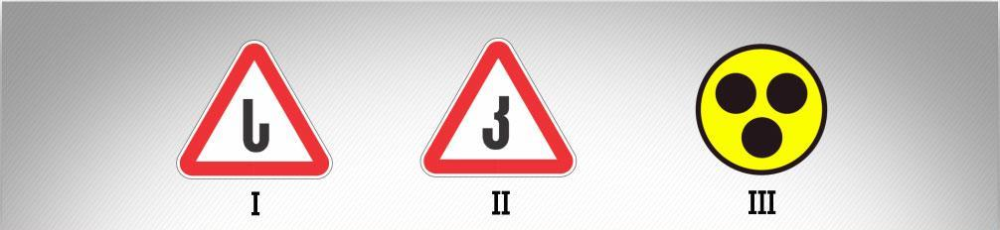
#1220
„საგზაო მოძრაობის შესახებ“ საქართველოს კანონის მე-19 მუხლის პირველი პუნქტის „გ“ ქვეპუნქტის თანახმად, მძღოლი, ხოლო ამ კანონის მე-18 მუხლის პირველი პუნქტის „დ“ ქვეპუნქტით გათვალისწინებულ შემთხვევებში − საწარმო ვალდებულია ამ პუნქტით განსაზღვრულ სატრანსპორტო საშუალებებზე დაამაგროს შემდეგი საცნობი ნიშნები: გ) „სახიფათო ტვირთი“ – 400X300 მმ ზომის, სწორკუთხედი, ნარინჯისფერი ფირფიტა გარშემო 15 მმ სიგანის შავი არშიით − ასეთი ტვირთის გადამზიდავი სატრანსპორტო საშუალების წინა და უკანა მხარეს, ხოლო ცისტერნის შემთხვევაში − გვერდებზედაც (ფირფიტის ქვედა ნაწილში უნდა აღინიშნოს ტვირთის გაერთიანებული ერების ორგანიზაციის ნომერი, ხოლო ზედა ნაწილში − საშიშროების საიდენტიფიკაციო ნომერი. ისინი უნდა გაიყოს 15 მმ სისქის შავი ჰორიზონტალური ხაზით, რომელიც ფირფიტას ნახევარ სიმაღლეზე გადაკვეთს).
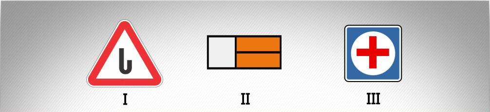
#1224
„საგზაო მოძრაობის შესახებ“ საქართველოს კანონის მე-19 მუხლის პირველი პუნქტის „ზ“ ქვეპუნქტის თანახმად, მძღოლი, ხოლო ამ კანონის მე-18 მუხლის პირველი პუნქტის „დ“ ქვეპუნქტით გათვალისწინებულ შემთხვევებში − საწარმო ვალდებულია ამ პუნქტით განსაზღვრულ სატრანსპორტო საშუალებებზე დაამაგროს შემდეგი საცნობი ნიშნები: ზ) „სმენადაქვეითებული მძღოლი“ – 160 მმ დიამეტრი¬ს ყვითელი წრე შიგნით ჩახაზული 40 მმ დიამეტრის სამი შავი წრით, რომლებიც განლაგებულია წარმოსახვითი წვერით ქვევით მიმართული ტოლგვერდა სამკუთხედის კუთხეებში − მაგრდება იმ მექანიკური სატრანსპორტო საშუალების წინა და უკანა მხარეს, რომელსაც მართავს საქართველოს შრომის, ჯანმრთელობისა და სოციალური დაცვის მინისტრისა და საქართველოს შინაგან საქმეთა მინისტრის ერთობლივი ბრძანებით განსაზღვრული სმენადაქვეითებული მძღოლი.
#1225
„საგზაო მოძრაობის შესახებ“ საქართველოს კანონის მე-19 მუხლის პირველი პუნქტის „თ“ ქვეპუნქტის თანახმად, მძღოლი, ხოლო ამ კანონის მე-18 მუხლის პირველი პუნქტის „დ“ ქვეპუნქტით გათვალისწინებულ შემთხვევებში − საწარმო ვალდებულია ამ პუნქტით განსაზღვრულ სატრანსპორტო საშუალებებზე დაამაგროს შემდეგი საცნობი ნიშნები: თ) „სასწავლო-სატრანსპორტო საშუალება“ – წვერით ზევით მიმართული თეთრი ტოლფერდა სამკუთხედი წითელი არშიით, რომელშიც ჩაწერილია შავი ასო „ს“ (სამკუთხედის გვერდი არანაკლებ 200 მმ-ია, არშიის სიგანე – გვერდის 1/10) – მაგრდება სასწავლო სატრანსპორტო საშუალების წინა და უკანა მხარეს. აგრეთვე დასაშვებია მსუბუქი ავტომობილის სახურავზე ორმხრივი ნიშნის დაყენება.
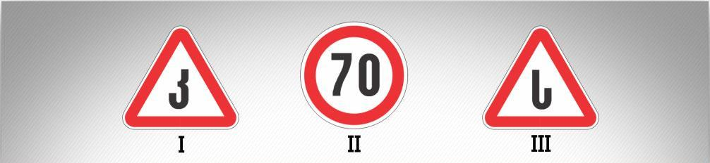
#1226
„საგზაო მოძრაობის შესახებ“ საქართველოს კანონის მე-19 მუხლის პირველი პუნქტის „ი“ ქვეპუნქტის თანახმად, მძღოლი, ხოლო ამ კანონის მე-18 მუხლის პირველი პუნქტის „დ“ ქვეპუნქტით გათვალისწინებულ შემთხვევებში − საწარმო ვალდებულია ამ პუნქტით განსაზღვრულ სატრანსპორტო საშუალებებზე დაამაგროს შემდეგი საცნობი ნიშნები: ი) „სიჩქარის შეზღუდვა“ – 3.24 საგზაო ნიშნის შემცირებული ფერადი გამოსახულება, რომელზედაც მითითებულია ნებადართული მოძრაობის სიჩქარე (ნიშნის დიამეტრი არანაკლებ 160 მმ-ია, არშიის სიგანე – დიამეტრის 1/10) – მაგრდება იმ არაგაბარიტული (მსხვილგაბარიტიანი) სატრანსპორტო საშუალების ან სახიფათო ტვირთის გადამზიდავი სატრანსპორტო საშუალების ძარას უკანა მხარეს, მარცხნივ, რომელსაც მართავს მძღოლად მუშაობის 2 წლამდე სტაჟის მქონე მძღოლი, აგრეთვე იმ შემთხვევაში, როცა ტექნიკური მახასიათებლით სატრანსპორტო საშუალების მაქსიმალური სიჩქარე ამ კანონის 33-ე მუხლის მე-7 პუნქტით განსაზღვრულზე ნაკლებია.
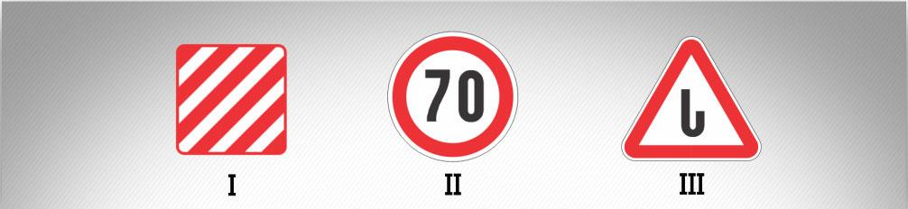
#1227
„საგზაო მოძრაობის შესახებ“ საქართველოს კანონის მე-19 მუხლის მე-2 პუნქტის „ა“ ქვეპუნქტის თანახმად, მძღოლის სურვილისამებრ სატრანსპორტო საშუალებაზე შეიძლება დამაგრდეს შემდეგი საცნობი ნიშნები: ა) „შეზღუდული შესაძლებლობის მქონე პირი“ – ყვითელი კვადრატი 150-მმ-იანი გვერდით და 8.17 საგზაო ნიშნის სიმბოლო შავი გამოსახულებით – შეიძლება დამაგრდეს იმ მექანიკური სატრანსპორტო საშუალების წინა და უკანა მხარეს, რომელსაც მნიშვნელოვნად გამოხატული ან მკვეთრად გამოხატული შეზღუდული შესაძლებლობის სტატუსის მქონე პირი მართავს, ან სატრანსპორტო საშუალებაზე, რომელსაც აღნიშნული პირები გადაჰყავს.
#1228
„საგზაო მოძრაობის შესახებ“ საქართველოს კანონის მე-19 მუხლის მე-2 პუნქტის „ბ“ ქვეპუნქტის თანახმად, მძღოლის სურვილისამებრ სატრანსპორტო საშუალებაზე შეიძლება დამაგრდეს შემდეგი საცნობი ნიშნები: ბ) „ექიმი“ − ლურჯი კვადრატი 140-მმ-იანი გვერდით, შიგ ჩახაზული 125 მმ დიამეტრის თეთრი წრით, რომელზედაც გამოსახულია წითელი ჯვარი (სიმაღლე − 90 მმ, შტრიხის სიგანე − 25 მმ) − შეიძლება დამაგრდეს იმ სატრანსპორტო საშუალებაზე, რომელსაც ექიმი მძღოლი მართავს.
#1230
„საგზაო მოძრაობის შესახებ“ საქართველოს კანონის პირველი დანართის მე-7 თავის (საინფორმაციო-მაჩვენებელი ნიშნები) 7.1 პუნქტის თანახმად, საგზაო ნიშანი 7.1 „მაქსიმალური სიჩქარის ზოგადი შეზღუდვები“ - იძლევა ინფორმაციას სიჩქარის ზოგადი შეზღუდვების თაობაზე, რომლებიც საგზაო მოძრაობის წესებით დადგენილია საქართველოს გზებზე. ნიშანი იდგმება საქართველოს ტერიტორიაზე შემოსასვლელში საკონტროლო გამშვებ პუნქტთან.
#1340
თუ გაზონზე ან ტროტუარზე მყოფ მოთამაშე ბავშვებს სატრანსპორტო საშუალების წინ გზის სავალ ნაწილზე გადმოუვარდათ ბურთი, მძღოლმა უნდა გაითვალისწინოს, რომ ბავშვები შეიძლება გამოიქცნენ გზის სავალ ნაწილზე ბურთის ასაღებად.
#1341
თუ სატრანსპორტო საშუალება უახლოვდება ტროტუარზე მოთამაშე ბავშვებს, მძღოლმა უნდა შეანელოს სიჩქარე და მზად იყოს დამუხრუჭებისთვის.
#1342
სპეციალური საბავშვო ეტლის, სავარძელის ან დამჭერი მოწყობილობის გამოყენების შემთხვევაში მძღოლმა უნდა გაითვალისწინოს, რომ სპეციალური საბავშვო ეტლი, სავარძლი ან შესაბამისი დამჭერი მოწყობილობა შეესაბამება ბავშვის სიმაღლეს და წონას, ასევე სატრანსპორტო საშუალების კონსტრუქციიდან გამომდინარე შესაძლებელია ბავშვის გადაყვანისას სპეციალური საბავშვო ეტლის, სავარძელის ან შესაბამისი დამჭერი მოწყობილობის გამოყენება.
#1379
„საგზაო მოძრაობის შესახებ“ საქართველოს კანონის მე-20 მუხლის მე-4 და მე-5 პუნქტების თანახმად: 4. აკრძალულია სატრანსპორტო საშუალების სამართავად გადაცემა იმ პირისათვის, რომელიც იმყოფება ალკოჰოლური, ნარკოტიკული ან ფსიქოტროპული სიმთვრალის მდგომარეობაში. 5. აკრძალულია სატრანსპორტო საშუალების სამართავად გადაცემა იმ პირისათვის, რომელსაც არ აქვს შესაბამისი კატეგორიის ან ქვეკატეგორიის სატრანსპორტო საშუალების მართვის უფლება ან ეს უფლება შეჩერებული, ჩამორთმეული ან შეწყვეტილი (გაუქმებული) აქვს საქართველოს კანონმდებლობით დადგენილი წესით.
#1572
დღე-ღამის ბნელ დროს ან არასაკმარისი ხილვადობის პირობებში, სატრანსპორტო საშუალების მოძრაობის სიჩქარის შერჩევისას მძღოლმა გადამწყვეტი მნიშვნელობა უნდა მიანიჭოს მხედველობის პირობებს.
#829
„საგზაო მოძრაობის შესახებ“ საქართველოს კანონის მე-21-ე მუხლის მე-13 პუნქტის თანახმად, მძღოლს ეკრძალება მოძრაობა მუშა სამუხრუჭო სისტემის, საჭის მექანიზმის, სატრანსპორტო საშუალებათა შემადგენლობაში მისაბმელი მოწყობილობის გაუმართაობისას, აგრეთვე დღე-ღამის ბნელ დროს ერთდროულად მწყობრიდან გამოსული (ჩამქრალი) ახლო და შორი განათების ფარებით (ან მათი არარსებობისას) ან/და უკანა საგაბარიტო სინათლეებით იმ გზაზე, რომელზედაც არ არის ხელოვნური განათება ან არასაკმარისი ხილვადობაა. მძღოლის მხარეს არსებული მინასაწმენდის უმოქმედობისას აკრძალულია მექანიკური სატრანსპორტო საშუალების მართვა ნისლის, წვიმისა და თოვის დროს.
#999
„საგზაო მოძრაობის შესახებ“ საქართველოს კანონის 49-ე მუხლის მე-9 პუნქტის თანახმად, დაბინდებიდან გათენებამდე, აგრეთვე ნებისმიერი სხვა არასაკმარისი ხილვადობის პირობებში, გზაზე გაჩერების ან დგომის დროს მექანიკური სატრანსპორტო საშუალება და მისი მისაბმელი აღნიშნული უნდა იყოს წინა და უკანა საგაბარიტო სინათლეებით. ამავე მუხლის მე-11 პუნქტის „ბ“ ქვეპუნქტის თანახმად, ამ მუხლის მე-9 და მე-10 პუნქტებით დადგენილ მოთხოვნათა მიუხედავად, მექანიკური სატრანსპორტო საშუალება შეიძლება გაჩერდეს ან იმყოფებოდეს სადგომზე ნებისმიერი გარე სანათი ხელსაწყოს ჩაურთველად: ბ) სავალი ნაწილის და მკვრივი საფარის მქონე გვერდულებს მიღმა.
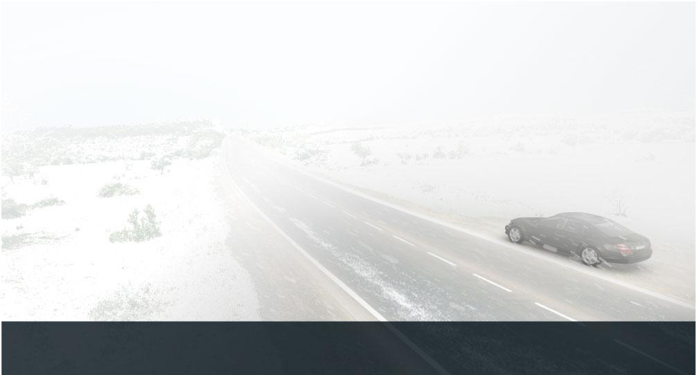
#1000
„საგზაო მოძრაობის შესახებ“ საქართველოს კანონის 49-ე მუხლის პირველი პუნქტის თანახმად, დღე-ღამის ბნელ დროს, აგრეთვე არასაკმარისი ხილვადობის პირობებში მოძრავ მექანიკურ სატრანსპორტო საშუალებაზე, აგრეთვე მოპედზე ჩართული უნდა იყოს ახლო ან შორი განათების ფარა/ფარები და უკანა საგაბარიტო სინათლეები. ამავე კანონის 21-ე მუხლის მე-13 პუნქტის თანახმად მძღოლს ეკრძალება მოძრაობა მუშა სამუხრუჭო სისტემის, საჭის მექანიზმის, სატრანსპორტო საშუალებათა შემადგენლობაში მისაბმელი მოწყობილობის გაუმართაობისას, აგრეთვე დღე-ღამის ბნელ დროს ერთდროულად მწყობრიდან გამოსული (ჩამქრალი) ახლო და შორი განათების ფარებით (ან მათი არარსებობისას) ან/და უკანა საგაბარიტო სინათლეებით იმ გზაზე, რომელზედაც არ არის ხელოვნური განათება ან არასაკმარისი ხილვადობაა.
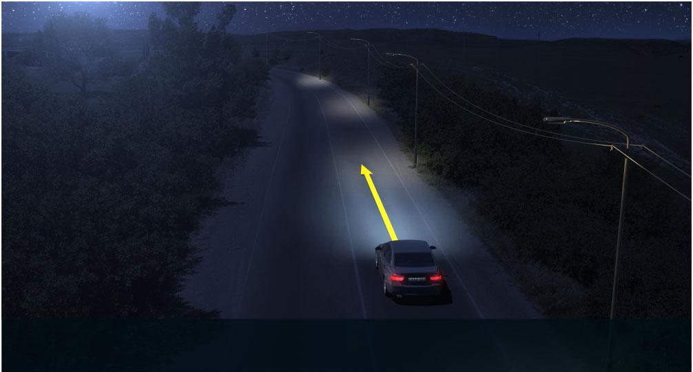
#1001
„საგზაო მოძრაობის შესახებ“ საქართველოს კანონის 49-ე მუხლის მე-9 პუნქტის თანახმად, დაბინდებიდან გათენებამდე, აგრეთვე ნებისმიერი სხვა არასაკმარისი ხილვადობის პირობებში, გზაზე გაჩერების ან დგომის დროს მექანიკური სატრანსპორტო საშუალება და მისი მისაბმელი აღნიშნული უნდა იყოს წინა და უკანა საგაბარიტო სინათლეებით. ამავე მუხლის მე-11 პუნქტის „ბ“ ქვეპუნქტის თანახმად, ამ მუხლის მე-9 და მე-10 პუნქტებით დადგენილ მოთხოვნათა მიუხედავად, მექანიკური სატრანსპორტო საშუალება შეიძლება გაჩერდეს ან იმყოფებოდეს სადგომზე ნებისმიერი გარე სანათი ხელსაწყოს ჩაურთველად: ბ) სავალი ნაწილის და მკვრივი საფარის მქონე გვერდულებს მიღმა.
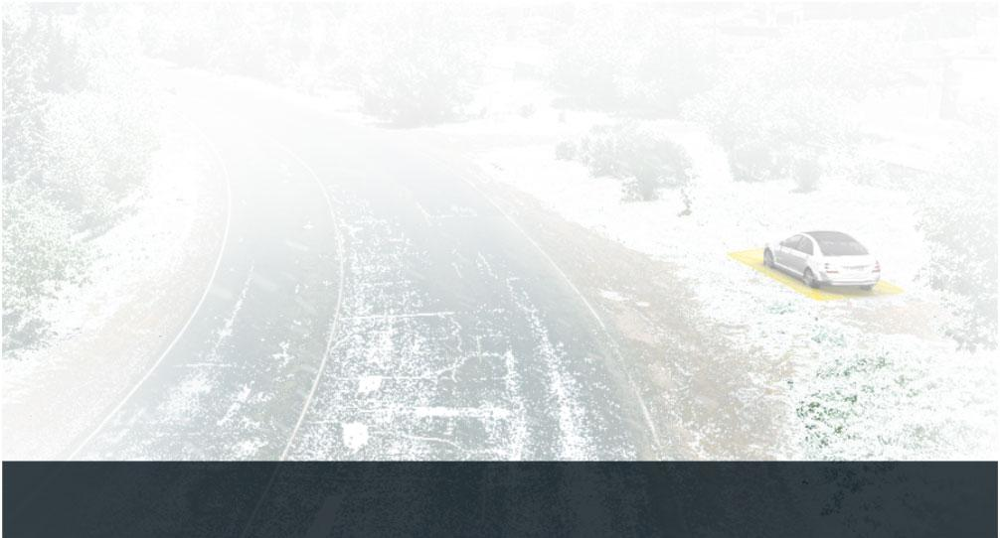
#1069
„საგზაო მოძრაობის შესახებ“ საქართველოს კანონის 21-ე მუხლის მე-13 პუნქტის თანახმად, მძღოლს ეკრძალება მოძრაობა მუშა სამუხრუჭო სისტემის, საჭის მექანიზმის, სატრანსპორტო საშუალებათა შემადგენლობაში მისაბმელი მოწყობილობის გაუმართაობისას, აგრეთვე დღე-ღამის ბნელ დროს ერთდროულად მწყობრიდან გამოსული (ჩამქრალი) ახლო და შორი განათების ფარებით (ან მათი არარსებობისას) ან/და უკანა საგაბარიტო სინათლეებით იმ გზაზე, რომელზედაც არ არის ხელოვნური განათება ან არასაკმარისი ხილვადობაა. მძღოლის მხარეს არსებული მინასაწმენდის უმოქმედობისას აკრძალულია მექანიკური სატრანსპორტო საშუალების მართვა ნისლის, წვიმისა და თოვის დროს.
#1325
საჭის თვალზე ხელების სწორი განლაგებაა, როდესაც ავარიული სიტუაციის წარმოშობის შემთხვევაში მძღოლს შეუძლია სწრაფად და მოხერხებულად მოაბრუნოს საჭე ყველა მიმართულებით და დააბრუნოს იგი საწყის მდგომარეობაში. გარდა ამისა სწორი განლაგება უზღუნველყოფს ხელებზე მინიმალურ დატვირთვას, ამცირებს დაღლილობას. მძღოლი ყოველთვის მზადაა რეაგირება მოახდინოს საგზაო სიტუაციის ცვლილებაზე. საჭის თვალზე ხელების სწორი განლაგება ნაჩვენებია მეორე ნახატზე.
#1484
სატრანსპორტო საშუალების საბურავებში აირის დაბალმა წნევამ შეიძლება გამოიწვიოს როგორც საწვავის ხარჯის მატება, ასევე საჭის მართვის გაძნელება და საბურავების გადახურება.
#256
„საგზაო მოძრაობის შესახებ“ საქართველოს კანონის პირველი დანართის 1.1, 1.2 და 1.41- 1.46 პუნქტების თანახმად, საგზაო ნიშანი: 1.1. „რკინიგზის შლაგბაუმიანი გადასასვლელი“ − იძლევა გაფრთხილებას რკინიგზის შლაგბაუმიან გადასასვლელთან მიახლოების თაობაზე. 1.2. „რკინიგზის უშლაგბაუმო გადასასვლელი“−იძლევა გაფრთხილებას რკინიგზის უშლაგბაუმო გადასასვლელთან მიახლოების თაობაზე. 1.4.1–1.4.6. „რკინიგზის გადასასვლელთან მიახლოება“ − დამატებით აფრთხილებს მძღოლს დაუსახლებელ პუნქტში რკინიგზის გადასასვლელთან მიახლოების თაობაზე. ამავე დანართის პირველი თავის შენიშვნის „ა“ და „ვ“ ქვეპუნქტების თანახმად: ა) ნიშნები 1.1, 1.2, 1.5–1.34 ნიშნები დაუსახლებელ პუნქტში იდგმება სახიფათო მონაკვეთის დასაწყისამდე 150−300 მეტრ მანძილზე, დასახლებულ პუნქტში – 50–100 მეტრ მანძილზე. აუცილებლობისას ნიშნები იდგმება სხვა მანძილზედაც, რომელიც მითითებულია 8.1.1 დაფაზე; ვ) ნიშნები 1.4.1−1.4.3 ნიშნები იდგმება გზის მარჯვენა მხარეს, ხოლო 1.4.4−1.4.6 ნიშნები − გზის მარცხენა მხარეს. 1.4.1 და 1.4.4 ნიშნები იდგმება მოძრაობის მიმართულებით ძირითად და განმეორებით 1.1 ან 1.2 ნიშანთან ერთად, 1.4.3 და1.4.6 ნიშნები − მოძრაობის მიმართულებით განმეორებით 1.1 ან 1.2 ნიშანთან ერთად, ხოლო 1.4.2 და 1.4.5 ნიშნები − დამოუკიდებლად, თანაბარ დაშორებაზე ძირითად და განმეორებით 1.1 ან 1.2 ნიშანს შორის.

#497
„საგზაო მოძრაობის შესახებ“ საქართველოს კანონის 52-ე მუხლის მე-5 პუნქტის თანახმად, „ავარიული გაჩერების ნიშანი“ არის ტოლგვერდა სამკუთხედის ფორმის დაფა არანაკლებ 0,4 მეტრი სიგრძის გვერდებითა და არანაკლებ 0,05 მეტრი სიგანის წითელი არშიით. ამ სამკუთხედის შუა ნაწილი შეიძლება ღრუ იყოს ან ღია ფერის საღებავით შეიღებოს. წითელი არშია შუქს არ უნდა ატარებდეს ან უნდა ჰქონდეს შუქამრეკლი თვისების მქონე ზოლი. დაფა ისე უნდა იყოს მოწყობილი, რომ შეიძლებოდეს იყოს მისი ვერტიკალურ მდგომარეობაში მდგრად დაყენება.
#601
„საგზაო მოძრაობის შესახებ“ საქართველოს კანონის პირველი დანართის პირველი თავის (მაფრთხილებელი ნიშნები) 1.1 პუნქტის თანახმად საგზაო ნიშანი 1.1 „რკინიგზის შლაგბაუმიანი გადასასვლელი” - იძლევა გაფრთხილებას რკინიგზის შლაგბაუმიან გადასასვლელთან მიახლოების თაობაზე.

#602
„საგზაო მოძრაობის შესახებ“ საქართველოს კანონის პირველი დანართის პირველი თავის (მაფრთხილებელი ნიშნები) შენიშვნის „ბ“ ქვეპუნქტის თანახმად 1.2 „რკინიგზის უშლაგბაუმო გადასასვლელი” და 1.11 „სანაპიროზე გასასვლელი” ნიშნები მეორდება დაუსახლებულ პუნქტში. მეორე ნიშანი იდგმება სახიფათო მონაკვეთის დასაწყისიდან არანაკლებ 50 მეტრ მანძილზე.
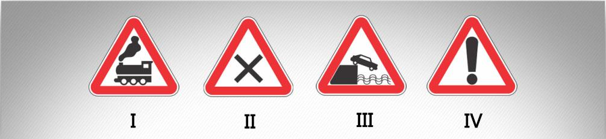
#605
„საგზაო მოძრაობის შესახებ“ საქართველოს კანონის პირველი დანართის პირველი თავის (მაფრთხილებელი ნიშნები) შენიშვნის „ბ“ ქვეპუნქტის თანახმად 1.1, 1.2, 1.10, 1.11, 1.23, 1.24 და 1.26 ნიშნები მეორდება დაუსახლებელ პუნქტში, ხოლო 1.24 „ბავშვები“ და 1.26 „საგზაო სამუშაოები“ ნიშნები − დასახლებულ პუნქტშიც. მეორე ნიშანი იდგმება სახიფათო მონაკვეთის დასაწყისიდან არანაკლებ 50 მეტრ მანძილზე.
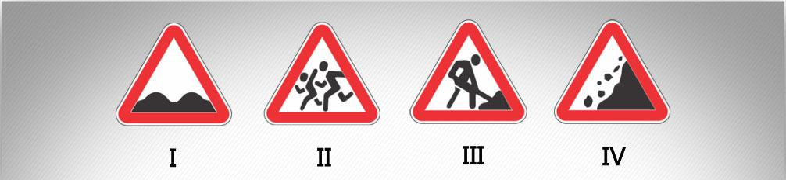
#607
„საგზაო მოძრაობის შესახებ“ საქართველოს კანონის პირველი დანართის პირველი თავის (მაფრთხილებელი ნიშნები) 1.2 პუნქტის თანახმად საგზაო ნიშანი 1.2 „რკინიგზის უშლაგბაუმო გადასასვლელი” − იძლევა გაფრთხილებას რკინიგზის უშლაგბაუმო გადასასვლელთან მიახლოების თაობაზე.
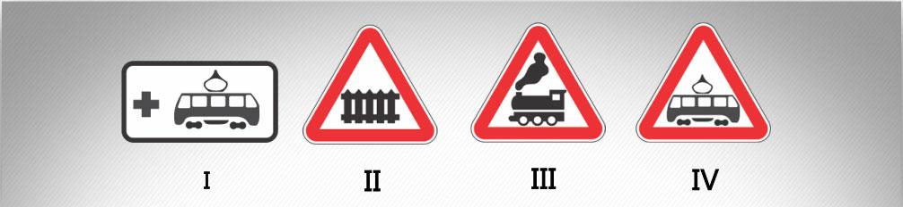
#610
„საგზაო მოძრაობის შესახებ“ საქართველოს კანონის პირველი დანართის პირველი თავის მაფრთხილებელი ნიშნები) 1.3.2 პუნქტის საგზაო ნიშანი 1.3.2. „მრავალლიანდაგიანი რკინიგზა“−იძლევა გაფრთხილებას ორი ან ორზე მეტი ლიანდაგის მქონე რკინიგზის უშლაგბაუმო გადასასვლელთან მიახლოების თაობაზე.
#611
„საგზაო მოძრაობის შესახებ“ საქართველოს კანონის პირველი დანართის პირველი თავის (მაფრთხილებელი ნიშნები) შენიშვნის „ა“ ქვეპუნქტის თანახმად 1.1, 1.2, 1.5–1.34 ნიშნები დაუსახლებელ პუნქტში იდგმება სახიფათო მონაკვეთის დასაწყისამდე 150−300 მეტრ მანძილზე, დასახლებულ პუნქტში – 50–100 მეტრ მანძილზე. აუცილებლობისას ნიშნები იდგმება სხვა მანძილზედაც, რომელიც მითითებულია 8.1.1 დაფაზე.
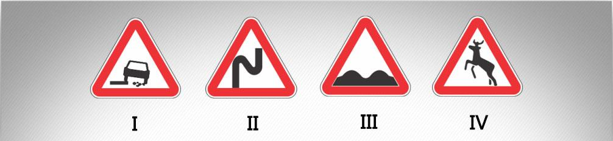
#614
„საგზაო მოძრაობის შესახებ“ საქართველოს კანონის პირველი დანართის პირველი თავის (მაფრთხილებელი ნიშნები) შენიშვნის „ბ“ ქვეპუნქტის თანახმად 1.1 „რკინიგზის შლაგბაუმიანი გადასასვლელი”, 1.2 „რკინიგზის უშლაგბაუმო გადასასვლელი”, 1.10 „გასახსნელი ხიდი”, 1.11 „სანაპიროზე გასასვლელი”, 1.23 „ქვეითთა გადასასვლელი”, 1.24 „ბავშვები” და 1.26 „საგზაო სამუშაოები” ნიშნები მეორდება დაუსახლებელ პუნქტში, ხოლო 1.24 და 1.26 ნიშნები - დასახლებულ პუნქტშიც. მეორე ნიშანი იდგმება სახიფათო მონაკვეთის დასაწყისიდან არანაკლებ 50 მეტრის მანძილზე.
#616
„საგზაო მოძრაობის შესახებ“ საქართველოს კანონის პირველი დანართის პირველი თავის (მაფრთხილებელი ნიშნები) შენიშვნის „გ“ ქვეპუნქტის თანახმად, თუ აღმართი და დაღმართი (ან დაღმართი და აღმართი) ერთმანეთს მიჰყვება, 8.1.1 დაფის გარეშე 1.14 „ციცაბო დაღმართი“ და 1.15 „ციცაბო აღმართი“ ნიშნები შეიძლება დაიდგას შესაბამისად უშუალოდ აღმართის და დაღმართის წინ.
#618
„საგზაო მოძრაობის შესახებ“ საქართველოს კანონის პირველი დანართის პირველი თავის (მაფრთხილებელი ნიშნები) შენიშვნის „ა“, „ბ“ და „ვ“ ქვეპუნქტების თანახმად: ა) 1.1 „რკინიგზის შლაგბაუმიანი გადასასვლელი” და 1.2 „რკინიგზის უშლაგბაუმო გადასასვლელი” ნიშნები დაუსახლებელ პუნქტში იდგმება სახიფათო მონაკვეთის დასაწყისამდე 150−300 მეტრ მანძილზე, ბ) 1.1 „რკინიგზის შლაგბაუმიანი გადასასვლელი”, 1.2 „რკინიგზის უშლაგბაუმო გადასასვლელი”, 1.10 „გასახსნელი ხიდი”, 1.11 „სანაპიროზე გასასვლელი”, 1.23 „ქვეითთა გადასასვლელი”, 1.24 „ბავშვები” და 1.26 „საგზაო სამუშაოები” ნიშნები მეორდება დაუსახლებელ პუნქტში, ხოლო 1.24 და 1.26 ნიშნები - დასახლებულ პუნქტშიც. მეორე ნიშანი იდგმება სახიფათო მონაკვეთის დასაწყისიდან არანაკლებ 50 მეტრის მანძილზე. ვ) 1.4.1-1.4.3„რკინიგზის გადასასვლელთან მიახლოება” ნიშნები იდგმება გზის მარჯვენა მხარეს, ხოლო 1.4.4-1.4.6 „რკინიგზის გადასასვლელთან მიახლოება” ნიშნები - მარცხენა მხარეს. 1.4.1 და 1.4.4 ნიშნები იდგმება მოძრაობის მიმართულებით ძირითად და დუბლირებულ 1.1 ან 1.2 ნიშნებთან ერთად. ნიშნები 1.4.3 და 1.4.6 იდგმება მოძრაობის მიმართულებით განმეორებით 1.1 ან 1.2 ნიშნებთან, ხოლო ნიშნები 1.4.2 და 1.4.5 - დამოუკიდებლად, თანაბარ დაშორებაზე ძირითად და განმეორებითი 1.1 ან 1.2 ნიშნებს შორის.
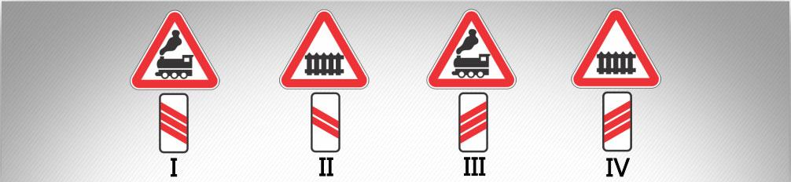
#620
„საგზაო მოძრაობის შესახებ“ საქართველოს კანონის პირველი დანართის პირველი თავის (მაფრთხილებელი ნიშნები) 1.6 პუნქტის თანახმად საგზაო ნიშანი 1.6 „თანაბარმნიშვნელოვანი გზების გადაკვეთა” - აღნიშნავს გზაჯვარედინს თანაბარმნიშვნელოვანი გზების გადაკვეთით.
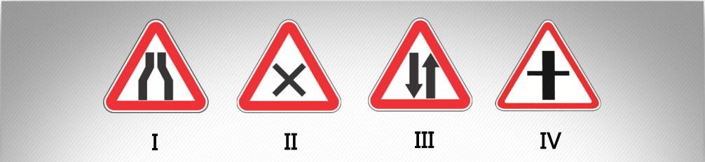
#622
„საგზაო მოძრაობის შესახებ“ საქართველოს კანონის პირველი დანართის პირველი თავის (მაფრთხილებელი ნიშნები) 1.10 პუნქტის თანახმად საგზაო ნიშანი 1.10 „გასახსნელი ხიდი” - იძლევა გაფრთხილებას გასახსნელ ხიდთან ან საბორნე გადასასვლელთან მიახლოების თაობაზე.
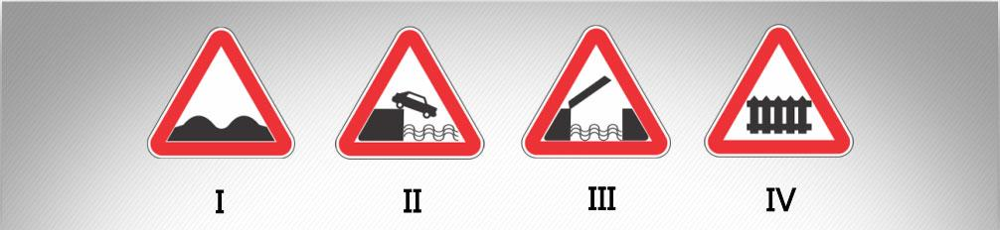
#625
„საგზაო მოძრაობის შესახებ“ საქართველოს კანონის პირველი დანართის პირველი თავის (მაფრთხილებელი ნიშნები) 1.12.1 და 1.12.2 პუნქტების თანახმად საგზაო ნიშნები 1.12.1, 1.12.2 „სახიფათო მოსახვევი” - აღნიშნავს მცირერადიუსიან ან შეზღუდული ხილვადობის მქონე გზის სახიფათო მოსახვევს: 1.12.1 – მარჯვნივ, 1.12.2 – მარცხნივ.

#628
„საგზაო მოძრაობის შესახებ“ საქართველოს კანონის პირველი დანართის პირველი თავის (მაფრთხილებელი ნიშნები) 1.14 პუნქტის თანახმად საგზაო ნიშანი 1.14 „ციცაბო დაღმართი” - იძლევა გაფრთხილებას ციცაბოდაღმართიან გზის მონაკვეთთან მიახლოების თაობაზე.

#630
„საგზაო მოძრაობის შესახებ“ საქართველოს კანონის პირველი დანართის პირველი თავის (მაფრთხილებელი ნიშნები) 1.16 პუნქტის თანახმად საგზაო ნიშანი 1.16 „მოლიპული გზა” - აღნიშნავს გზის მოლიპულ მონაკვეთს, რომლზედაც საბურავის გზის საფართან ჩაჭიდების კოეფიციენტი 0,4-ზე ნაკლებია.

#631
„საგზაო მოძრაობის შესახებ“ საქართველოს კანონის პირველი დანართის პირველი თავის (მაფრთხილებელი ნიშნები) 1.17 პუნქტის თანახმად საგზაო ნიშანი 1.17 „უსწორმასწორო გზა” - აღნიშნავს გზის მონაკვეთს, რომლის სავალი ნაწილი დაზიანებულია – ტალღოვანი, ღრანტეებიანი, ხიდთან უსწორმასწორო შეუღლებებით და ა. შ..

#633
„საგზაო მოძრაობის შესახებ“ საქართველოს კანონის პირველი დანართის პირველი თავის (მაფრთხილებელი ნიშნები) 1.19 პუნქტის თანახმად საგზაო ნიშანი 1.19 „ქვის ასხლეტა” - აღნიშნავს გზის მონაკვეთს, რომელზედაც შესაძლებელია სატრანსპორტო საშუალების თვლებიდან ღორღის, ხრეშის ასხლეტა და ა. შ..
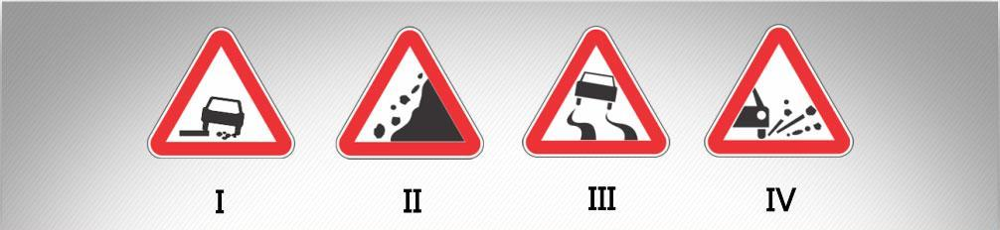
#635
„საგზაო მოძრაობის შესახებ“ საქართველოს კანონის პირველი დანართის პირველი თავის (მაფრთხილებელი ნიშნები) 1.21.1-1.21.3 პუნქტების თანახმად საგზაო ნიშნები 1.21.1–1.21.3 „გზის შევიწროება” - აღნიშნავს გზის მონაკვეთს, რომლის სავალი ნაწილის სიგანე ვიწროვდება. 1.21.1 - ორივე მხრიდან; 1.21.2 - მარჯვნიდან; 1.21.3 - მარცხნიდან.

#636
„საგზაო მოძრაობის შესახებ“ საქართველოს კანონის პირველი დანართის პირველი თავის (მაფრთხილებელი ნიშნები) 1.21.1-1.21.3 პუნქტების თანახმად საგზაო ნიშნები 1.21.1–1.21.3 „გზის შევიწროება” - აღნიშნავს გზის მონაკვეთს, რომლის სავალი ნაწილის სიგანე ვიწროვდება. 1.21.1 - ორივე მხრიდან; 1.21.2 - მარჯვნიდან; 1.21.3 - მარცხნიდან.
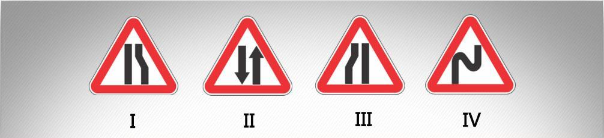
#638
„საგზაო მოძრაობის შესახებ“ საქართველოს კანონის პირველი დანართის პირველი თავის (მაფრთხილებელი ნიშნები) 1.22 პუნქტის თანახმად საგზაო ნიშანი 1.22 „ორმხრივი მოძრაობა” - აღნიშნავს გზის (სავალი ნაწილის) ორმხრივმოძრაობიანი მონაკვეთის დასაწყისს, რომელსაც წინ უსწრებდა უბანი ცალმხრივი მოძრაობით.
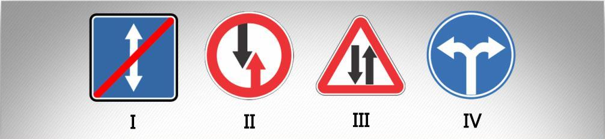
#639
„საგზაო მოძრაობის შესახებ“ საქართველოს კანონის პირველი დანართის პირველი თავის (მაფრთხილებელი ნიშნები) 1.23 პუნქტის თანახმად საგზაო ნიშანი 1.23 „ქვეითთა გადასასვლელი” - იძლევა გაფრთხილებას 5.19.1 და 5.19.2 ნიშნებით ან/და 1.14.1–1.14.3 მონიშვნებით აღნიშნულ ქვეითთა გადასასვლელთან მიახლოების თაობაზე.

#640
„საგზაო მოძრაობის შესახებ“ საქართველოს კანონის პირველი დანართის პირველი თავის (მაფრთხილებელი ნიშნები) 1.24 პუნქტის თანახმად საგზაო ნიშანი 1.24 „ბავშვები” - იძლევა გაფრთხილებას გზის მონაკვეთთან საბავშვო დაწესებულების არსებობის თაობაზე, საიდანაც დიდია ბავშვების სავალ ნაწილზე გამოჩენის ალბათობა.
#641
„საგზაო მოძრაობის შესახებ“ საქართველოს კანონის პირველი დანართის პირველი თავის (მაფრთხილებელი ნიშნები) 1.25 პუნქტის თანახმად საგზაო ნიშანი 1.25 „ველობილიკის გადაკვეთა” - იძლევა გაფრთხილებას 4.4 ნიშნით აღნიშნული ველობილიკის სავალი ნაწილის გადაკვეთის ადგილთან მიახლოების თაობაზე.
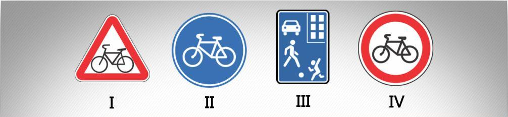
#645
„საგზაო მოძრაობის შესახებ“ საქართველოს კანონის პირველი დანართის პირველი თავის (მაფრთხილებელი ნიშნები) 1.29 პუნქტის თანახმად საგზაო ნიშანი 1.29 „ქვის ცვენა” - აღნიშნავს გზის მონაკვეთს, რომლის სავალი ნაწილი არ არის დაცული ზვავისაგან, მეწყერისაგან ან ქვების ცვენისაგან.
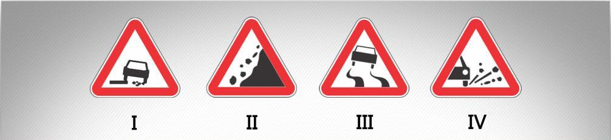
#646
„საგზაო მოძრაობის შესახებ“ საქართველოს კანონის პირველი დანართის პირველი თავის (მაფრთხილებელი ნიშნები) 1.30 პუნქტის თანახმად საგზაო ნიშანი 1.30 „გვერდითი ქარი” - აღნიშნავს გზის მონაკვეთს, რომელზეც შეიძლება ძლიერი გვერდითი ქარი ამოვარდეს.
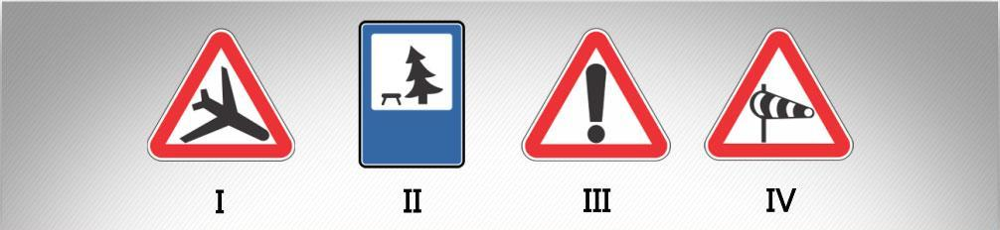
#647
„საგზაო მოძრაობის შესახებ“ საქართველოს კანონის პირველი დანართის პირველი თავის (მაფრთხილებელი ნიშნები) 1.31 პუნქტის თანახმად საგზაო ნიშანი 1.31 „დაბლამფრენი თვითმფრინავები” - აეროდრომთან ახლოს გამავალი გზის მონაკვეთი, რომელზედაც თვითმფრინავები ან ვერტმფრენები დაბალ სიმაღლეზე დაფრინავენ.
#649
„საგზაო მოძრაობის შესახებ“ საქართველოს კანონის პირველი დანართის პირველი თავის (მაფრთხილებელი ნიშნები) 1.33 პუნქტის თანახმად საგზაო ნიშანი 1.33 „ხერგილი“ - აღნიშნავს გზის მონაკვეთს, რომელიც დროებით ჩახერგილია.
#650
„საგზაო მოძრაობის შესახებ“ საქართველოს კანონის პირველი დანართის პირველი თავის (მაფრთხილებელი ნიშნები) 1.34 პუნქტის თანახმად საგზაო ნიშანი 1.34 „სხვა საფრთხეები” - გზის მონაკვეთი, რომელზედაც შეიძლება წარმოიშვას ისეთი საფრთხე, რომელიც არ არის განსაზღვრული სხვა მაფრთხილებელი ნიშნებით.

#651
„საგზაო მოძრაობის შესახებ“ საქართველოს კანონის პირველი დანართის პირველი თავის (მაფრთხილებელი ნიშნები) 1.35.1-1.35.6 პუნქტების თანახმად საგზაო ნიშნები 1.35.1- 1.35.6 „მოხვევის მიმართულება” - მიუთითებს შეზღუდული ხილვადობის მქონე მცირერადიუსიან გზის მრუდეზე მოძრაობის მიმართულებას (1.35.1−1.35.3 − მარჯვნივ, 1.35.4−1.35.6 − მარცხნივ) ან საგზაო სამუშაოების მიმდინარეობის ადგილის შემოვლის შესაბამის მიმართულებას.
#652
„საგზაო მოძრაობის შესახებ“ საქართველოს კანონის პირველი დანართის პირველი თავის (მაფრთხილებელი ნიშნები) 1.36.1 და 1.36.2 პუნქტების თანახმად საგზაო ნიშნები 1.36.1 და 1.36.2 „მოხვევის მიმართულება” - მიუთითებს "T"-სებურ გზაჯვარედინზე ან გზების განშტოებაზე მოძრაობის მიმართულებას (მარჯვნივ და მარცხნივ), ან საგზაო სამუშაოების მიმდინარეობის ადგილის შემოვლის შესაბამის მიმართულებას.

#653
„საგზაო მოძრაობის შესახებ“ საქართველოს კანონის პირველი დანართის მე-2 თავის (პრიორიტეტის ნიშანი) 2.1 პუნქტების თანახმად საგზაო ნიშანი 2.1 „მთავარი გზა” - გზა, რომელზე მოძრავ მძღოლსაც ენიჭება არარეგულირებული გზაჯვარედინის გავლის უპირატესობა. ნიშანი იდგმება გზის დასაწყისში და მეორდება უშუალოდ ყოველი გზაჯვარედინის წინ. 2.1 ნიშანი 8.13 დაფით დასახლებულ პუნქტში იდგმება გზაჯვარედინის წინ, რომელზედაც მთავარი გზა იცვლის მიმართულებას, დაუსახლებელ პუნქტში − წინასწარ გზაჯვარედინამდე 150−300 მეტრ მანძილზე და გზაჯვარედინის წინ.

#654
„საგზაო მოძრაობის შესახებ“ საქართველოს კანონის პირველი დანართის მე-2 თავის (პრიორიტეტის ნიშანი) 2.1 პუნქტების თანახმად საგზაო ნიშანი 2.1 „მთავარი გზა” - გზა, რომელზე მოძრავ მძღოლსაც ენიჭება არარეგულირებული გზაჯვარედინის გავლის უპირატესობა. ნიშანი იდგმება გზის დასაწყისში და მეორდება უშუალოდ ყოველი გზაჯვარედინის წინ. 2.1 ნიშანი 8.13 დაფით დასახლებულ პუნქტში იდგმება გზაჯვარედინის წინ, რომელზედაც მთავარი გზა იცვლის მიმართულებას, დაუსახლებელ პუნქტში − წინასწარ გზაჯვარედინამდე 150−300 მეტრ მანძილზე და გზაჯვარედინის წინ..
#655
„საგზაო მოძრაობის შესახებ“ საქართველოს კანონის პირველი დანართის მე-2 თავის (პრიორიტეტის ნიშანი) 2.2 პუნქტების თანახმად საგზაო ნიშანი 2.2 „მთავარი გზის დასასრული” - გზის იმ მონაკვეთის ბოლო, საიდანაც იგი კარგავს მთავარი გზის სტატუსს. თუ მთავარი გზა იმ გზის გადაკვეთის წინმთავრდება, რომელზედაც დაწესებულია მოცემული გზაჯვარედინის გავლის უპირატესობა, 2.2 ნიშანს დაუსახლებელ პუნქტში დგამენ წინასწარ 2.4 ნიშანთან ერთად, დასახლებულ პუნქტში − გზაჯვარედინიდან 25 მეტრ მანძილზე ან/და 2.3 ან 2.4 ნიშანთან ერთად. ნიშანი შეიძლება დაიდგას სხვა, 8.1.1 დაფაზე მითითებულ მანძილზედაც.

#656
„საგზაო მოძრაობის შესახებ“ საქართველოს კანონის პირველი დანართის მე-2 თავის (პრიორიტეტის ნიშანი) 2.2 პუნქტების თანახმად საგზაო ნიშანი 2.2 „მთავარი გზის დასასრული” - გზის იმ მონაკვეთის ბოლო, საიდანაც იგი კარგავს მთავარი გზის სტატუსს. თუ მთავარი გზა იმ გზის გადაკვეთის წინმთავრდება, რომელზედაც დაწესებულია მოცემული გზაჯვარედინის გავლის უპირატესობა, 2.2 ნიშანს დაუსახლებელ პუნქტში დგამენ წინასწარ2.4 ნიშანთან ერთად, დასახლებულ პუნქტში − გზაჯვარედინიდან 25 მეტრ მანძილზე ან/და 2.3 ან 2.4 ნიშანთან ერთად. ნიშანი შეიძლება დაიდგას სხვა, 8.1.1 დაფაზე მითითებულ მანძილზედაც.
#657
„საგზაო მოძრაობის შესახებ“ საქართველოს კანონის პირველი დანართის პირველი თავის (მაფრთხილებელი ნიშნები) 1.7.1- 1.7.7 პუნქტების თანახმად საგზაო ნიშანი 1.7.1. „მეორეხარისხოვან გზასთან გადაკვეთა“, 1.7.2−1.7.7. „მეორეხარისხოვანი გზის შეერთება“ (შეერთება მარჯვნიდან – 1.7.2, 1.7.4 და 1.7.6, შეერთება მარცხნიდან – 1.7.3, 1.7.5 და 1.7.7) − ისეთ გზასთან გადაკვეთა ან ისეთ გზასთან შეერთება, რომელზე მოძრავ მძღოლსაც აქვს გზის დათმობის ვალდებულება. 1.7.1−1.7.7 ნიშნები სახიფათო მონაკვეთის დასაწყისამდე იდგმება დაუსახლებელ პუნქტში 150−300 მეტრ მანძილზე, დასახლებულ პუნქტში – 50–100 მეტრ მანძილზე.

#658
„საგზაო მოძრაობის შესახებ“ საქართველოს კანონის პირველი დანართის პირველი თავის (მაფრთხილებელი ნიშნები) 1.7.1- 1.7.7 პუნქტების თანახმად საგზაო ნიშანი 1.7.1. „მეორეხარისხოვან გზასთან გადაკვეთა“, 1.7.2−1.7.7. „მეორეხარისხოვანი გზის შეერთება“ (შეერთება მარჯვნიდან – 1.7.2, 1.7.4 და 1.7.6, შეერთება მარცხნიდან – 1.7.3, 1.7.5 და 1.7.7) − ისეთ გზასთან გადაკვეთა ან ისეთ გზასთან შეერთება, რომელზე მოძრავ მძღოლსაც აქვს გზის დათმობის ვალდებულება. 1.7.1−1.7.7 ნიშნები სახიფათო მონაკვეთის დასაწყისამდე იდგმება დაუსახლებელ პუნქტში 150−300 მეტრ მანძილზე, დასახლებულ პუნქტში – 50–100 მეტრ მანძილზე.
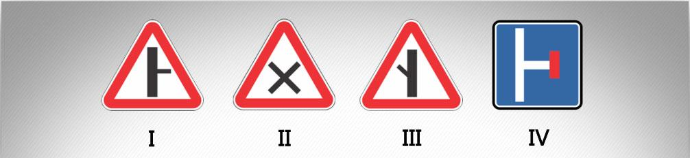
#659
„საგზაო მოძრაობის შესახებ“ საქართველოს კანონის პირველი დანართის პირველი თავის (მაფრთხილებელი ნიშნები) 1.7.1- 1.7.7 პუნქტების თანახმად საგზაო ნიშანი 1.7.1. „მეორეხარისხოვან გზასთან გადაკვეთა“, 1.7.2−1.7.7. „მეორეხარისხოვანი გზის შეერთება“ (შეერთება მარჯვნიდან – 1.7.2, 1.7.4 და 1.7.6, შეერთება მარცხნიდან – 1.7.3, 1.7.5 და 1.7.7) − ისეთ გზასთან გადაკვეთა ან ისეთ გზასთან შეერთება, რომელზე მოძრავ მძღოლსაც აქვს გზის დათმობის ვალდებულება. 1.7.1−1.7.7 ნიშნები სახიფათო მონაკვეთის დასაწყისამდე იდგმება დაუსახლებელ პუნქტში 150−300 მეტრ მანძილზე, დასახლებულ პუნქტში – 50–100 მეტრ მანძილზე.

#660
„საგზაო მოძრაობის შესახებ“ საქართველოს კანონის პირველი დანართის მე-2 თავის (პრიორიტეტის ნიშანი) 2.3 პუნქტების თანახმად საგზაო ნიშანი 2.3 „დაუთმე გზა” - გზა, რომელზე მოძრავი მძღოლიც ვალდებულია გზა დაუთმოს გადა¬სა¬კვეთ გზაზე მოძრავ მძღოლს, ხოლო 8.13 დაფის არსებობისას – მთავარ გზაზე მოძრავ მძღოლს. 2.3 ნიშანი დაუსახლებელ პუნქტში იდგმება წინასწარ გზაჯვარედინამდე 150−300 მეტრ მანძილზე 8.1.1 დაფით, თუ გზაჯვარედინის წინ დადგმულია 2.3 ნიშანი, ან 8.1.2 დაფით, თუ გზაჯვარედინის წინ დადგმულია 2.4 ნიშანი.

#661
„საგზაო მოძრაობის შესახებ“ საქართველოს კანონის პირველი დანართის მე-2 თავის (პრიორიტეტის ნიშანი) 2.3 პუნქტების თანახმად საგზაო ნიშანი 2.3 „დაუთმე გზა” - გზა, რომელზე მოძრავი მძღოლიც ვალდებულია გზა დაუთმოს გადა¬სა¬კვეთ გზაზე მოძრავ მძღოლს, ხოლო 8.13 დაფის არსებობისას – მთავარ გზაზე მოძრავ მძღოლს. 2.3 ნიშანი დაუსახლებელ პუნქტში იდგმება წინასწარ გზაჯვარედინამდე 150−300 მეტრ მანძილზე 8.1.1 დაფით, თუ გზაჯვარედინის წინ დადგმულია 2.3 ნიშანი, ან 8.1.2 დაფით, თუ გზაჯვარედინის წინ დადგმულია 2.4 ნიშანი.
#662
„საგზაო მოძრაობის შესახებ“ საქართველოს კანონის პირველი დანართის მე-2 თავის (პრიორიტეტის ნიშანი) 2.4 პუნქტების თანახმად საგზაო ნიშანი 2.4 „მოძრაობა გაუჩერებლად აკრძალულია”- უკრძალავს მძღოლს მოძრაობის გაგრძელებას „სდექ“ ხაზის წინ გაუჩერებალად, ხოლო თუ ის არ არის – გადასაკვეთი სავალი ნაწილის ნაპირთან. მძღოლი ვალდებულია გზა დაუთმოს გადასაკვეთ გზაზე მოძრავ მძღოლს, ხოლო 8. 13 დაფის არსებობისას – მთავარ გზაზე მოძრავ მძღოლს. ნიშანი იდგმება, თუ არაა უზრუნველყოფილი გადამკვეთ გზაზე მოძრავი სატრანსპორტო საშუალებათა ხილვადობა, ის აგრეთვე შეიძლება დაიდგას რკინიგზის გადასასვლელის ან საკარანტინო საგუშაგოს წინ (ამ შემთხვევაში მძღოლი ვალდებულია გაჩერდეს „სდექ” ხაზის წინ, ხოლო თუ ის არ არის – ნიშნის წინ).
#663
„საგზაო მოძრაობის შესახებ“ საქართველოს კანონის პირველი დანართის მე-2 თავის (პრიორიტეტის ნიშანი) 2.4 პუნქტების თანახმად საგზაო ნიშანი 2.4 „მოძრაობა გაუჩერებლად აკრძალულია”- უკრძალავს მძღოლს მოძრაობის გაგრძელებას „სდექ“ ხაზის წინ გაუჩერებალად, ხოლო თუ ის არ არის – გადასაკვეთი სავალი ნაწილის ნაპირთან. მძღოლი ვალდებულია გზა დაუთმოს გადასაკვეთ გზაზე მოძრავ მძღოლს, ხოლო 8. 13 დაფის არსებობისას – მთავარ გზაზე მოძრავ მძღოლს. ნიშანი იდგმება, თუ არაა უზრუნველყოფილი გადამკვეთ გზაზე მოძრავი სატრანსპორტო საშუალებათა ხილვადობა, ის აგრეთვე შეიძლება დაიდგას რკინიგზის გადასასვლელის ან საკარანტინო საგუშაგოს წინ (ამ შემთხვევაში მძღოლი ვალდებულია გაჩერდეს „სდექ” ხაზის წინ, ხოლო თუ ის არ არის – ნიშნის წინ).

#664
„საგზაო მოძრაობის შესახებ“ საქართველოს კანონის პირველი დანართის მე-2 თავის (პრიორიტეტის ნიშანი) 2.5 პუნქტების თანახმად საგზაო ნიშანი 2.5 „შემხვედრი მოძრაობის უპირატესობა”- უკრძალავს მძღოლს გზის ვიწრო მონაკვეთზე შესვლას, თუ ეს აძნელებს საპირისპირო მიმართულებით მოძრაობას. მძღოლი ვალდებულია გზა დაუთმოს შემხვედრ სატრან¬სპორტო საშუალებას, რომელიც მოპირდაპირე მისასვლელთან ან გზის ვიწრო მონაკვეთზე იმყოფება.

#665
„საგზაო მოძრაობის შესახებ“ საქართველოს კანონის პირველი დანართის მე-2 თავის (პრიორიტეტის ნიშანი) 2.5 პუნქტების თანახმად საგზაო ნიშანი 2.5 „შემხვედრი მოძრაობის უპირატესობა”- უკრძალავს მძღოლს გზის ვიწრო მონაკვეთზე შესვლას, თუ ეს აძნელებს საპირისპირო მიმართულებით მოძრაობას. მძღოლი ვალდებულია გზა დაუთმოს შემხვედრ სატრან¬სპორტო საშუალებას, რომელიც მოპირდაპირე მისასვლელთან ან გზის ვიწრო მონაკვეთზე იმყოფება.
#666
„საგზაო მოძრაობის შესახებ“ საქართველოს კანონის პირველი დანართის მე-2 თავის (პრიორიტეტის ნიშანი) 2.6 პუნქტების თანახმად საგზაო ნიშანი 2.6 „უპირატესობა შემხვედრ მოძრაობასთან” - ანიჭებს მძღოლს უპირატესობას გზის ვიწრო მონაკვეთზე მოძრაობისას საპირისპირო მიმართულებით მოძრავ სატრანსპორტო საშუალებასთან შედარებით.

#667
„საგზაო მოძრაობის შესახებ“ საქართველოს კანონის პირველი დანართის მე-2 თავის (პრიორიტეტის ნიშანი) 2.6 პუნქტების თანახმად საგზაო ნიშანი 2.6 „უპირატესობა შემხვედრ მოძრაობასთან” - ანიჭებს მძღოლს უპირატესობას გზის ვიწრო მონაკვეთზე მოძრაობისას საპირისპირო მიმართულებით მოძრავ სატრანსპორტო საშუალებასთან შედარებით.
#668
„საგზაო მოძრაობის შესახებ“ საქართველოს კანონის პირველი დანართის პირველი თავის (მაფრთხილებელი ნიშნები) 1.7.1- 1.7.7 პუნქტების თანახმად საგზაო ნიშანი 1.7.1. „მეორეხარისხოვან გზასთან გადაკვეთა“, 1.7.2−1.7.7. „მეორეხარისხოვანი გზის შეერთება“ (შეერთება მარჯვნიდან – 1.7.2, 1.7.4 და 1.7.6, შეერთება მარცხნიდან – 1.7.3, 1.7.5 და 1.7.7) − ისეთ გზასთან გადაკვეთა ან ისეთ გზასთან შეერთება, რომელზე მოძრავ მძღოლსაც აქვს გზის დათმობის ვალდებულება. ამავე კანონის პირველი დანართის მე-2 თავის (პრიორიტეტის ნიშანი) 2.1 პუნქტების თანახმად საგზაო ნიშანი 2.1 „მთავარი გზა” - გზა, რომელზე მოძრავ მძღოლსაც ენიჭება არარეგულირებული გზაჯვარედინის გავლის უპირატესობა. ნიშანი იდგმება გზის დასაწყისში და მეორდება უშუალოდ ყოველი გზაჯვარედინის წინ. 2.1 ნიშანი 8.13 დაფით დასახლებულ პუნქტში იდგმება გზაჯვარედინის წინ, რომელზედაც მთავარი გზა იცვლის მიმართულებას, დაუსახლებელ პუნქტში − წინასწარ გზაჯვარედინამდე 150−300 მეტრ მანძილზე და გზაჯვარედინის წინ.

#669
„საგზაო მოძრაობის შესახებ“ საქართველოს კანონის პირველი დანართის მე-2 თავის (პრიორიტეტის ნიშანი) შენიშვნის „ბ“ ქვეპუნქტის თანახმად საგზაო ნიშნები 2.5 „შემხვედრი მოძრაობის უპირატესობა” და 2.6 „უპირატესობა შემხვედრ მოძრაობასთან” იდგმება უშუალოდ გზის ვიწრო უბნის წინ. ნიშანი 2.5 შეიძლება დაიდგას წინასწარ 8.1.1 დაფით.
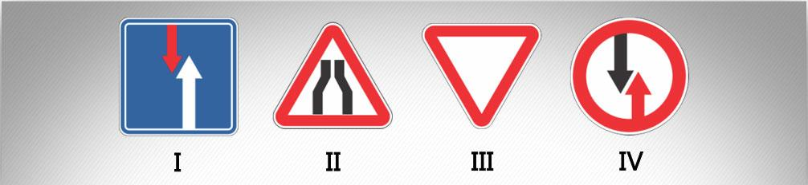
#670
„საგზაო მოძრაობის შესახებ“ საქართველოს კანონის პირველი დანართის პირველი თავის (მაფრთხილებელი ნიშნები) შენიშვნის „ა“ პუნქტის თანახმად 1.1, 1.2, 1.5–1.34 ნიშნები დაუსახლებელ პუნქტში იდგმება სახიფათო მონაკვეთის დასაწყისამდე 150−300 მეტრ მანძილზე, დასახლებულ პუნქტში – 50–100 მეტრ მანძილზე. აუცილებლობისას ნიშნები იდგმება სხვა მანძილზედაც, რომელიც მითითებულია 8.1.1 დაფაზე. სურათზე ნაჩვენები ნიშნებია:, 1.7.1 „მეორეხარისხოვან გზებთან გადაკვეთა”, 1.7.2, 1.7.3 და 1.7.7„მეორეხარისხოვანი გზის შეერთება“.

#671
„საგზაო მოძრაობის შესახებ“ საქართველოს კანონის პირველი დანართის პირველი თავის (მაფრთხილებელი ნიშნები) შენიშვნის „ა“ პუნქტის თანახმად 1.1, 1.2, 1.5–1.34 ნიშნები დაუსახლებელ პუნქტში იდგმება სახიფათო მონაკვეთის დასაწყისამდე 150−300 მეტრ მანძილზე, დასახლებულ პუნქტში – 50–100 მეტრ მანძილზე. აუცილებლობისას ნიშნები იდგმება სხვა მანძილზედაც, რომელიც მითითებულია 8.1.1 დაფაზე. სურათზე ნაჩვენები ნიშნებია:, 1.7.1 „მეორეხარისხოვან გზებთან გადაკვეთა”, 1.7.2, 1.7.3 და 1.7.7„მეორეხარისხოვანი გზის შეერთება“.
#254
„საგზაო მოძრაობის შესახებ“ საქართველოს კანონის პირველი დანართის 3.24 პუნქტის თანახმად საგზაო ნიშანი 3.24 „მაქსიმალური სიჩქარის შეზღუდვა” - კრძალავს მოძრაობას ნიშანზე აღნიშნულზე მეტი სიჩქარით(კმ/სთ). ამავე კანონის 33-ე მუხლის მე-8 პუნქტის „ბ“ ქვეპუნქტის თანახმად, თუ ამ კანონით სხვა რამ არ არის დადგენილი, დასახლებულ ან დაუსახლებელ პუნქტში ნებადართულია მოპედისა და მასთან გათანაბრებული სატრანსპორტო საშუალების მოძრაობა ყველა გზაზე, სადაც ამ კატეგორიის სატრანსპორტო საშუალების მოძრაობა დასაშვებია, არაუმეტეს 45 კმ/სთ სიჩქარით.
#255
„საგზაო მოძრაობის შესახებ“ საქართველოს კანონის პირველი დანართის 3.25 პუნქტის თანახმად საგზაო ნიშანი 3.25 „მაქსიმალური სიჩქარის შეზღუდვის დასასრული” − 3.24 ნიშნის („მაქსიმალური სიჩქარის შეზღუდვა“) მოქმედების ზონის დასასრული.

#353
„საგზაო მოძრაობის შესახებ“ საქართველოს კანონის პირველი დანართის მე-3 თავის (ამკრძალავი ნიშანები) 3.29 და 3.30 პუნქტების თანახმად საგზაო ნიშანი 3.29 „დგომა აკრძალულია კენტ რიცხვებში” - კრძალავს სატრანსპორტო საშუალების დგომას თვის კენტ რიცხვებში, ხოლო საგზაო ნიშანი 3.30 „დგომა აკრძალულია ლუწ რიცხვებში” - კრძალავს სატრანსპორტო საშუალების დგომას თვის ლუწ რიცხვებში. ამავე პუნქტების შენიშვნის თანახმად 3.29 და 3.30 ნიშნების ერთდროულად გამოყენებისას, სატრანსპორტო საშუალე¬ბის გზის ერთი მხრიდან მეორეზე გადაყენების დროა 19-დან 21 საათამდე, ამ პერიოდში დგომა ნებადართულია სავალი ნაწილის ორივე მხარეს.
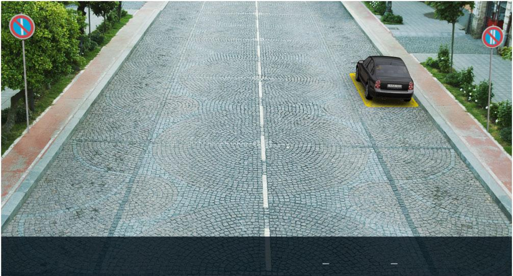
#545
„საგზაო მოძრაობის შესახებ“ საქართველოს კანონის 31-ე მუხლის მე-7 პუნქტის თანახმად, სამი მოძრაობის ზოლის მქონე (გარდა 1.9 საგზაო მონიშვნისა) ორმხრივმოძრაობიან გზაზე სატრანსპორტო საშუალების მძღოლი არ უნდა გადავიდეს სავალი ნაწილის განაპირა ზოლზე, სადაც საპირისპირო მიმართულების მოძრაობა ხორციელდება. თუ სამი მოძრაობის ზოლის მქონე გზაზე შუა ზოლი ორივე მიმართულებით მოძრაობისათვის გამოიყენება, ამ ზოლზე გასვლა ნებადართულია მხოლოდ გასწრების, დაბრკოლების შემოვლის, მარცხნივ მოხვევის ან მობრუნების მიზნით. ამავე კანონის პირველი დანართის მე-3 თავის (ამკრძალავი ნიშნები) 3.11 პუნქტის თანახმად, საგზაო ნიშანი 3.11 „მასის შეზღუდვა” - კრძალავს იმ სატრანსპორტო საშუალებით და სატრანსპორტო საშუალებათა შემადგენლობით მოძრაობას, რომელთა საერთო ფაქტობრივი მასა აღემატება ნიშანზე მითითებულს.
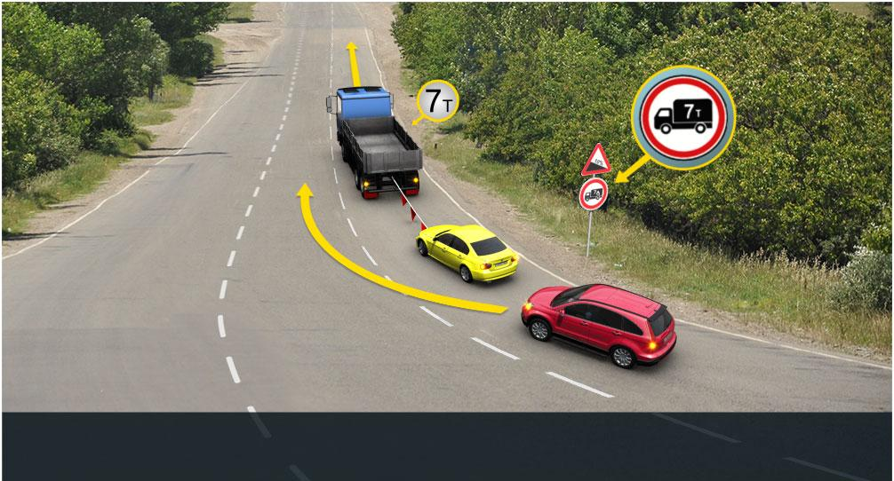
#673
„საგზაო მოძრაობის შესახებ“ საქართველოს კანონის პირველი დანართის მე-3 თავის (ამკრძალავი ნიშნები) 3.1 პუნქტის თანახმად საგზაო ნიშანი 3.1 „შესვლა აკრძალულია” - კრძალავს ყველა სახის სატრან¬სპორტო საშუალებით შესვლას მოცემული მიმართულებით.
#675
„საგზაო მოძრაობის შესახებ“ საქართველოს კანონის პირველი დანართის მე-3 თავის (ამკრძალავი ნიშნები) 3.2 პუნქტის თანახმად საგზაო ნიშანი 3.2 „მოძრაობა აკრძალულია” - კრძალავს ყველა სახის სატრან¬სპორტო საშუალებით მოძრაობას.
#677
„საგზაო მოძრაობის შესახებ“ საქართველოს კანონის პირველი დანართის მე-3 თავის (ამკრძალავი ნიშნები) 3.2 პუნქტის თანახმად საგზაო ნიშანი 3.2 „მოძრაობა აკრძალულია” - კრძალავს ყველა სახის სატრან¬სპორტო საშუალებით მოძრაობას. ამავე თავის 3.3 პუნქტის თანახმად საგზაო ნიშანი 3.3 „მექანიკური სატრანსპორტო საშუალებით მოძრაობა აკრძალულია” - კრძალავს ყველა სახის მექანიკური სატრანსპორტო საშუალებით მოძრაობას.
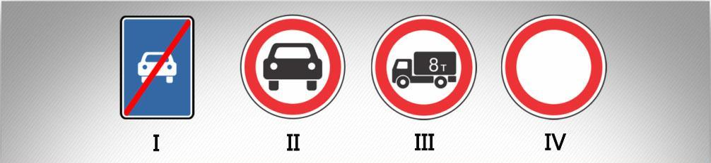
#679
„საგზაო მოძრაობის შესახებ“ საქართველოს კანონის პირველი დანართის მე-3 თავის (ამკრძალავი ნიშნები) 3.2 პუნქტის თანახმად საგზაო ნიშანი 3.2 „მოძრაობა აკრძალულია” - კრძალავს ყველა სახის სატრან¬სპორტო საშუალებით მოძრაობას. ამავე თავის 3.5 პუნქტის თანახმად საგზაო ნიშანი 3.5 „მოტოციკლით მოძრაობა აკრძალულია” - კრძალავს ყველა სახის მოტოციკლით მოძრაობას.
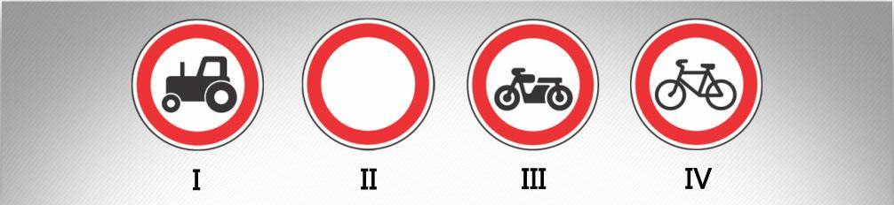
#681
„საგზაო მოძრაობის შესახებ“ საქართველოს კანონის პირველი დანართის მე-3 თავის (ამკრძალავი ნიშნები) 3.2 პუნქტის თანახმად საგზაო ნიშანი 3.2 „მოძრაობა აკრძალულია” - კრძალავს ყველა სახის სატრან¬სპორტო საშუალებით მოძრაობას. ამავე თავის 3.6 პუნქტის თანახმად საგზაო ნიშანი 3.6 „ტრაქტორით მოძრაობა აკრძალულია” - კრძალავს ყველა სახის ტრაქტორითა და სპეციალიზებული თვითმავალი მანქანებით მოძრაობას.
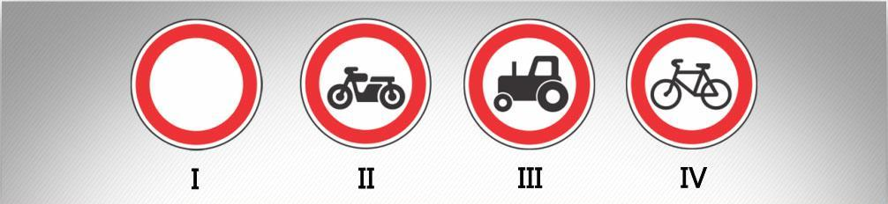
#683
„საგზაო მოძრაობის შესახებ“ საქართველოს კანონის პირველი დანართის მე-3 თავის (ამკრძალავი ნიშნები) 3.7 პუნქტის თანახმად საგზაო ნიშანი 3.7 „მისაბმელით მოძრაობა აკრძალულია” - კრძალავს ყველა სახის მისაბმელიანი სატვირთო ავტომობილითა და მისაბმელიანი ტრაქტორით მოძრაობას, აგრეთვე მექანიკური სატრანსპორტო საშუალების ბუქსირებას.
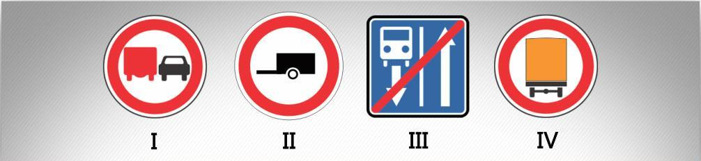
#685
„საგზაო მოძრაობის შესახებ“ საქართველოს კანონის პირველი დანართის მე-3 თავის (ამკრძალავი ნიშნები) 3.2 პუნქტის თანახმად საგზაო ნიშანი 3.2 „მოძრაობა აკრძალულია” - კრძალავს ყველა სახის სატრან¬სპორტო საშუალებით მოძრაობას. ამავე თავის 3.6 პუნქტის თანახმად საგზაო ნიშანი 3.6 „ტრაქტორით მოძრაობა აკრძალულია” - კრძალავს ყველა სახის ტრაქტორითა და თვითმავალი მანქანებით მოძრაობას. ამავე თავის 3.7 პუნქტის თანახმად საგზაო ნიშანი 3.7 „მისაბმელით მოძრაობა აკრძალულია” - კრძალავს ყველა სახის მისაბმელიანი სატვირთო ავტომობილითა და მისაბმელიანი ტრაქტორით მოძრაობას, აგრეთვე მექანიკური სატრანსპორტო საშუალების ბუქსირებას.
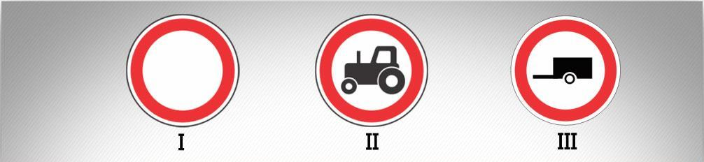
#687
„საგზაო მოძრაობის შესახებ“ საქართველოს კანონის პირველი დანართის მე-3 თავის (ამკრძალავი ნიშნები) 3.8 პუნქტის თანახმად საგზაო ნიშანი 3.8 „საჭაპანო მოძრაობა აკრძალულია” - კრძა¬ლავს საჭაპანო ტრანსპორტით, სასაპალნე და დასაჯდომი ცხოველებით მოძრაობას, ასევე პირუტყვის გადარეკვას.
#691
„საგზაო მოძრაობის შესახებ“ საქართველოს კანონის პირველი დანართის მე-3 თავის (ამკრძალავი ნიშნები) 3.10 პუნქტის თანახმად საგზაო ნიშანი 3.10 „ქვეითთა მოძრაობა აკრძალულია”. - კრძალავს ქვეითთა მოძრაობას. ნიშანი იდგმება იმ ადგილას, სადაც ქვეითთა მოძრაობა დაუშვებელია, მათი უსაფრთხოებიდან გამომდინარე.

#696
„საგზაო მოძრაობის შესახებ“ საქართველოს კანონის პირველი დანართის მე-3 თავის (ამკრძალავი ნიშნები) 3.13 პუნქტის თანახმად საგზაო ნიშანი 3.13 „სიმაღლის შეზღუდვა” - კრძალავს იმ სატრანსპორტო საშუალებით მოძრაობას, რომლის გაბარიტული სიმაღლე (ტვირთიანად ან უტვირთოდ) აღემატება ნიშანზე აღნიშნულს.

#697
„საგზაო მოძრაობის შესახებ“ საქართველოს კანონის პირველი დანართის მე-3 თავის (ამკრძალავი ნიშნები) 3.13 პუნქტის თანახმად საგზაო ნიშანი 3.13 „სიმაღლის შეზღუდვა” - კრძალავს იმ სატრანსპორტო საშუალებით მოძრაობას, რომლის გაბარიტული სიმაღლე (ტვირთიანად ან უტვირთოდ) აღემატება ნიშანზე აღნიშნულს.
#698
„საგზაო მოძრაობის შესახებ“ საქართველოს კანონის პირველი დანართის მე-3 თავის (ამკრძალავი ნიშნები) 3.14 პუნქტის თანახმად საგზაო ნიშანი 3.14 „სიგანის შეზღუდვა” - კრძალავს იმ სატრანსპორტო საშუა¬ლებით მოძრაობას, რომლის გაბარიტული სიგანე (ტვირთიანად ან უტვირთოდ) აღემატება ნიშანზე აღნიშნულს.
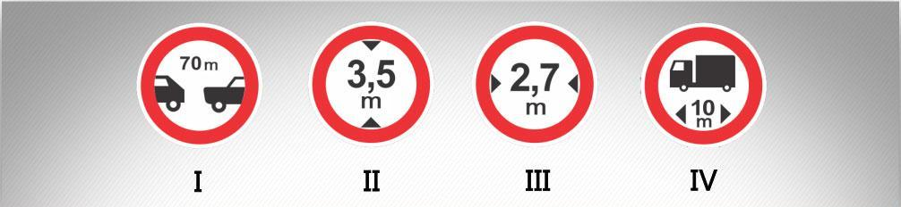
#706
„საგზაო მოძრაობის შესახებ“ საქართველოს კანონის პირველი დანართის მე-3 თავის (ამკრძალავი ნიშნები) 3.17.1 პუნქტის თანახმად საგზაო ნიშანი 3.17.1 „საბაჟო გამშვები პუნქტი“ - კრძალავს საბაჟო გამშვებ პუნქტთან (საქართველოს საბაჟო საზღვართან მდებარე საბაჟო კონტროლის ზონა) გაუჩერებლად გავლას.
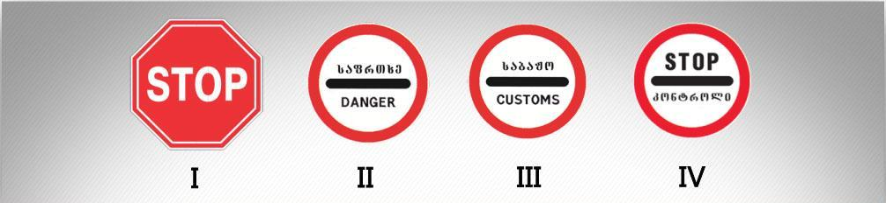
#708
„საგზაო მოძრაობის შესახებ“ საქართველოს კანონის პირველი დანართის მე-3 თავის (ამკრძალავი ნიშნები) 3.17.2 პუნქტის თანახმად საგზაო ნიშანი 3.17.2 „საფრთხე” - კრძალავს ყველა სახის სატრანსპორტო საშუალებით შემდგომ მოძრაობას საგზაო-სატრანსპორტო შემთხვევის ან სხვა საფრთხის გამო.
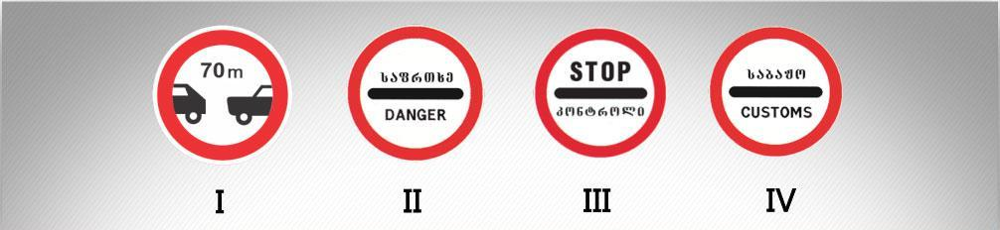
#710
„საგზაო მოძრაობის შესახებ“ საქართველოს კანონის პირველი დანართის მე-3 თავის (ამკრძალავი ნიშნები) 3.17.3 პუნქტის თანახმად საგზაო ნიშანი 3.17.3 „კონტროლი“ − კრძალავს საკონტროლო პუნქტთან (პოლიციის ან საკარანტინო საგუშაგოსთან, სასაზღვრო ან დახურულ ზონაში შესასვლელთან, ფასიან გზაზე გასასვლელთან და ა.შ.) გაუჩერებლად გავლას.

#712
„საგზაო მოძრაობის შესახებ“ საქართველოს კანონის პირველი დანართის მე-3 თავის (ამკრძალავი ნიშნები) 3.18.1 პუნქტის თანახმად საგზაო ნიშანი 3.18.1 „მარჯვნივ მოხვევა აკრძალულია” - კრძალავს სავალი ნაწილების უახლოეს გადაკვეთაზე მარჯვნივ მოხვევას.
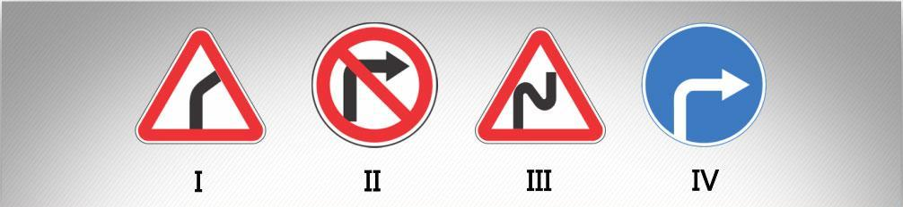
#716
„საგზაო მოძრაობის შესახებ“ საქართველოს კანონის პირველი დანართის მე-3 თავის (ამკრძალავი ნიშნები) 3.19 პუნქტის თანახმად საგზაო ნიშანი 3.19 „მობრუნება აკრძალულია” - კრძალავს სავალი ნაწილების უახლოეს გადაკვეთაზე მობრუნებას.

#718
„საგზაო მოძრაობის შესახებ“ საქართველოს კანონის პირველი დანართის მე-3 თავის (ამკრძალავი ნიშნები) 3.20 პუნქტის თანახმად საგზაო ნიშანი 3.20 „გასწრება აკრძალულია” - კრძალავს ყველა სახის მექანიკური სატრან¬სპორ¬ტო საშუალების გასწრებას (გარდა 30 კმ/სთ-ზე ნაკლები სიჩქარით მოძრავი ტრანსპორტისა). ნებადართულია გასწრება უეტლო მოტოციკლის, მოპედისა და ველოსიპედის შემხვედრი მოძრაობის ზოლში გადაუსვლელად.
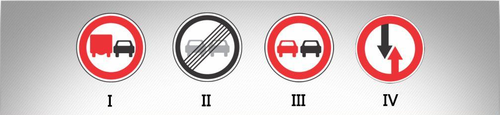
#722
„საგზაო მოძრაობის შესახებ“ საქართველოს კანონის პირველი დანართის მე-3 თავის (ამკრძალავი ნიშნები) 3.24 პუნქტის თანახმად საგზაო ნიშანი 3.24 „მაქსიმალური სიჩქარის შეზღუდვა” - კრძალავს მოძრაობას ნიშანზე აღნიშნულზე მეტი სიჩქარით (კმ/სთ).
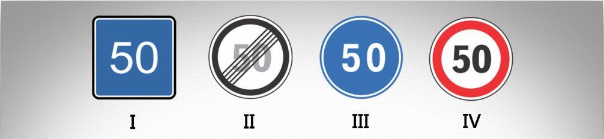
#724
„საგზაო მოძრაობის შესახებ“ საქართველოს კანონის პირველი დანართის მე-3 თავის (ამკრძალავი ნიშნები) 3.26 პუნქტის თანახმად საგზაო ნიშანი 3.26 „ხმოვანი სიგნალის მიცემა აკრძალულია” - კრძალავს ხმოვანი სიგნალით სარგებლობას, გარდა იმ შემთხვევისა, როცა სიგნალი გამოიყენება საგზაო-სატრანსპორტო შემთხვევის თავიდან ასაცილებლად.
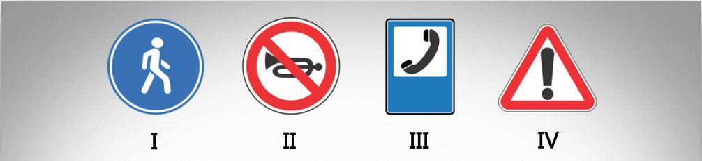
#726
„საგზაო მოძრაობის შესახებ“ საქართველოს კანონის პირველი დანართის მე-3 თავის (ამკრძალავი ნიშნები) 3.21 პუნქტის თანახმად საგზაო ნიშანი 3.21 „გასწრების აკრძალვის დასასრული” - აღნიშნავს საგზაო ნიშნის 3.20-ის („გასწრება აკრძალულია”) მოქმედების ზონის დასასრულს.
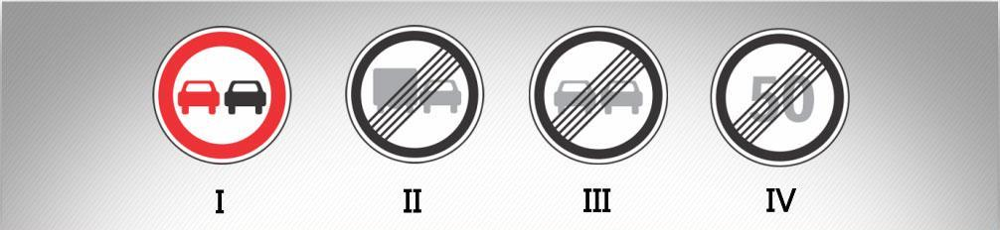
#731
„საგზაო მოძრაობის შესახებ“ საქართველოს კანონის პირველი დანართის მე-3 თავის (ამკრძალავი ნიშნები) 3.25 პუნქტის თანახმად საგზაო ნიშანი3.25. „მაქსიმალური სიჩქარის შეზღუდვის დასასრული” - აღნიშნავს 3.24 „მაქსიმალური სიჩქარის შეზღუდვა“ ნიშნის მოქმედების ზონის დასასრულს.
#732
„საგზაო მოძრაობის შესახებ“ საქართველოს კანონის პირველი დანართის მე-3 თავის (ამკრძალავი ნიშნები) 3.27 პუნქტის თანახმად საგზაო ნიშანი 3.27 „გაჩერება აკრძალულია” - კრძალავს სატრანსპორტო საშუალების, როგორც გაჩერებას, ისე დგომას.
#735
„საგზაო მოძრაობის შესახებ“ საქართველოს კანონის პირველი დანართის მე-3 თავის (ამკრძალავი ნიშნები) 3.28 პუნქტის თანახმად საგზაო ნიშანი 3.28 „დგომა აკრძალულია” - კრძალავს სატრანსპორტო საშუალების დგომას.
#737
„საგზაო მოძრაობის შესახებ“ საქართველოს კანონის პირველი დანართის მე-3 თავის (ამკრძალავი ნიშნები) 3.29 პუნქტის თანახმად საგზაო ნიშანი 3.29 „დგომა აკრძალულია კენტ რიცხვებში” - კრძალავს სატრანსპორტო საშუალების დგომას თვის კენტ რიცხვებში.
#738
„საგზაო მოძრაობის შესახებ“ საქართველოს კანონის პირველი დანართის მე-3 თავის (ამკრძალავი ნიშნები) 3.30 პუნქტის თანახმად საგზაო ნიშანი 3.30 „დგომა აკრძალულია ლუწ რიცხვებში” - კრძალავს სატრანსპორტო საშუალების დგომას თვის ლუწ რიცხვებში.

#740
„საგზაო მოძრაობის შესახებ“ საქართველოს კანონის პირველი დანართის მე-3 თავის (ამკრძალავი ნიშნები) 3.32 პუნქტის თანახმად საგზაო ნიშანი 3.32 „სახიფათო ტვირთის გადამზიდი სატრანსპორტო საშუალებით მოძრაობა აკრძალულია” - კრძალავს იმ სახიფათო ტვირთის გადამზიდი სატრანსპორტო საშუალებით მოძრაობას, რომელიც, საქართველოს კანონმდებლობის თანახმად, აღნიშნული უნდა იყოს შესაბამისი საცნობი ნიშნით.
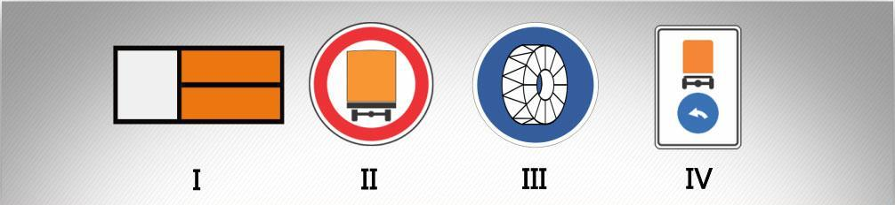
#742
„საგზაო მოძრაობის შესახებ“ საქართველოს კანონის პირველი დანართის მე-3 თავის (ამკრძალავი ნიშნები) 3.33 პუნქტის თანახმად საგზაო ნიშანი 3.33 „ფეთქებადი და ადვილად აალებადი ტვირთის გადამზიდი სატრანსპორტო საშუალებით მოძრაობა აკრძალულია” - კრძალავს 19433-88 სახელმწიფო სტანდარტით განსაზღვრული 1.22–2.4, 3.1, 3.2, 5.2 კლასის ფეთქებადი და ადვილად აალებადი ტვირთის გადამზიდი სატრანსპორტო საშუალებით მოძრაობას, რომელიც, საქართველოს კანონმდებლობის თანახმად აღნიშნული უნდა იყოს საცნობი ნიშნით „სახიფათო ტვირთი”.
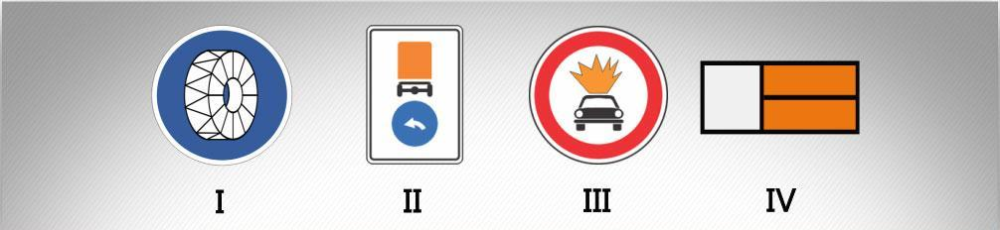
#745
„საგზაო მოძრაობის შესახებ“ საქართველოს კანონის პირველი დანართის მე-3 თავის (ამკრძალავი ნიშნები) შენიშვნის „გ.ა“ ქვეპუნქტის თანახმად ნიშნების მოქმედება არ ვრცელდება: გ.ა) 3.1–3.3, 3.18.1, 3.18.2, 3.19, 3.27 ნიშნებისა – სამარშრუტო სატრანსპორტო საშუალებაზე. სურათზე ნაჩვენები საგზაო ნიშნებია: 3.1 „შესვლა აკრძალულია”, 3.14 „სიგანის შეზღუდვა”, 3.2 „მოძრაობა აკრძალულია” და 3.11 „მასის შეზღუდვა”.
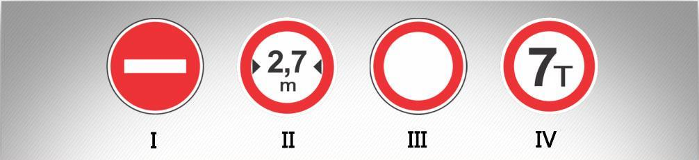
#746
„საგზაო მოძრაობის შესახებ“ საქართველოს კანონის პირველი დანართის მე-3 თავის (ამკრძალავი ნიშნები) შენიშვნის „გ.ა“ ქვეპუნქტის თანახმად ნიშნების მოქმედება არ ვრცელდება: გ.ა) 3.1–3.3, 3.18.1, 3.18.2, 3.19, 3.27 ნიშნებისა – სამარშრუტო სატრანსპორტო საშუალებაზე. სურათზე ნაჩვენები საგზაო ნიშნებია: 3.15 „სიგრძის შეზღუდვა”, 3.3 „მექანიკური სატრანსპორტო საშუალებით მოძრაობა აკრძალულია”, 3.16 „მინიმალური დისტანციის შეზღუდვა” და 3.18.1 „მარჯვნივ მოხვევა აკრძალულია”.
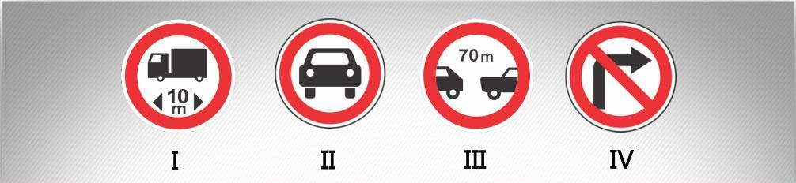
#749
„საგზაო მოძრაობის შესახებ“ საქართველოს კანონის პირველი დანართის მე-3 თავის (ამკრძალავი ნიშნები) შენიშვნის „გ.ა“ ქვეპუნქტის თანახმად ნიშნების მოქმედება არ ვრცელდება: გ.ა) 3.1–3.3, 3.18.1, 3.18.2, 3.19, 3.27 ნიშნებისა – სამარშრუტო სატრანსპორტო საშუალებაზე. სურათზე ნაჩვენები საგზაო ნიშნებია: 3.18.2 „მარცხნივ მოხვევა აკრძალულია”, 3.24 „მაქსიმალური სიჩქარის შეზღუდვა”, 3.19 „მობრუნება აკრძალულია” და 3.29 „დგომა აკრძალულია კენტ რიცხვებში”.
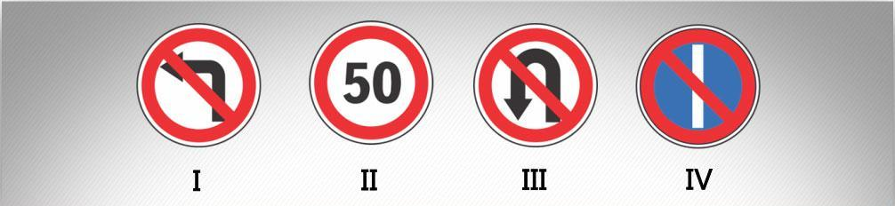
#750
„საგზაო მოძრაობის შესახებ“ საქართველოს კანონის პირველი დანართის მე-3 თავის (ამკრძალავი ნიშნები) შენიშვნის „გ.ა“ ქვეპუნქტის თანახმად ნიშნების მოქმედება არ ვრცელდება: გ.ა) 3.1–3.3, 3.18.1, 3.18.2, 3.19, 3.27 ნიშნებისა – სამარშრუტო სატრანსპორტო საშუალებაზე. სურათზე ნაჩვენები საგზაო ნიშნებია: 3.18.2 „მარცხნივ მოხვევა აკრძალულია”, 3.19 „მობრუნება აკრძალულია” , 3.24 „მაქსიმალური სიჩქარის შეზღუდვა”, და 3.27 „გაჩერება აკრძალულია”.
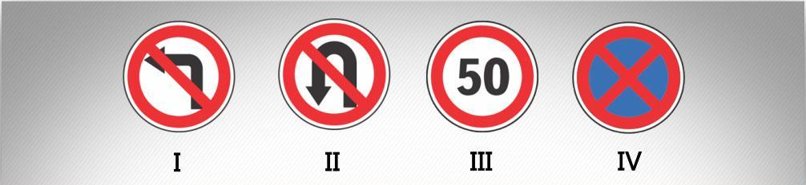
#751
„საგზაო მოძრაობის შესახებ“ საქართველოს კანონის პირველი დანართის მე-3 თავის (ამკრძალავი ნიშნები) შენიშვნის „გ.ბ“ ქვეპუნქტის თანახმად ნიშნების მოქმედება არ ვრცელდება: გ.ბ) 3.2–3.8 ნიშნებისა – სატრანსპორტო საშუალებაზე, რომელიც ემსახურება აღნიშნულ ზონაში მდებარე საწარმოს, ანდა ემსახურება ან ეკუთვნის ამავე ზონაში მცხოვრებ ან მომუშავე პირს. ამ შემთხვევაში სატრანსპორტო საშუალება შედის აღნიშნულ ზონაში და გამოდის იქიდან დანიშნულების ადგილისაკენ უახლოეს გზაჯვარედინზე. სურათზე ნაჩვენები საგზაო ნიშნებია: 3.1 „შესვლა აკრძალულია”, 3.2 „მოძრაობა აკრძალულია”, 3.13 „სიმაღლის შეზღუდვა” და 3.8 „საჭაპანო მოძრაობა აკრძალულია”.
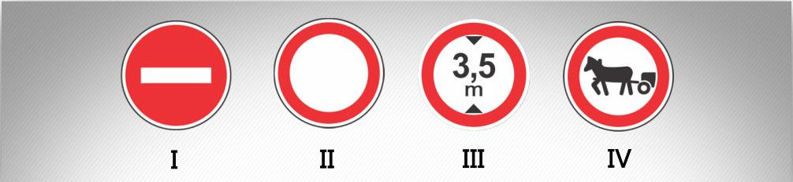
#752
„საგზაო მოძრაობის შესახებ“ საქართველოს კანონის პირველი დანართის მე-3 თავის (ამკრძალავი ნიშნები) შენიშვნის „გ.ბ“ ქვეპუნქტის თანახმად ნიშნების მოქმედება არ ვრცელდება: გ.ბ) 3.2–3.8 ნიშნებისა – სატრანსპორტო საშუალებაზე, რომელიც ემსახურება აღნიშნულ ზონაში მდებარე საწარმოს, ანდა ემსახურება ან ეკუთვნის ამავე ზონაში მცხოვრებ ან მომუშავე პირს. ამ შემთხვევაში სატრანსპორტო საშუალება შედის აღნიშნულ ზონაში და გამოდის იქიდან დანიშნულების ადგილისაკენ უახლოეს გზაჯვარედინზე. სურათზე ნაჩვენები საგზაო ნიშნებია: 3.3 „მექანიკური სატრანსპორტო საშუალებით მოძრაობა აკრძალულია”, 3.6 „ტრაქტორით მოძრაობა აკრძალულია”, 3.19 „მობრუნება აკრძალულია” და 3.7 „მისაბმელით მოძრაობა აკრძალულია”.
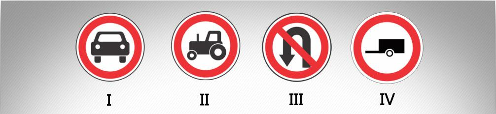
#754
„საგზაო მოძრაობის შესახებ“ საქართველოს კანონის პირველი დანართის მე-3 თავის (ამკრძალავი ნიშნები) შენიშვნის „გ.ბ“ ქვეპუნქტის თანახმად ნიშნების მოქმედება არ ვრცელდება: გ.ბ) 3.2–3.8 ნიშნებისა – სატრანსპორტო საშუალებაზე, რომელიც ემსახურება აღნიშნულ ზონაში მდებარე საწარმოს, ანდა ემსახურება ან ეკუთვნის ამავე ზონაში მცხოვრებ ან მომუშავე პირს. ამ შემთხვევაში სატრანსპორტო საშუალება შედის აღნიშნულ ზონაში და გამოდის იქიდან დანიშნულების ადგილისაკენ უახლოეს გზაჯვარედინზე. სურათზე ნაჩვენები საგზაო ნიშნებია: 3.2 „მოძრაობა აკრძალულია”, 3.3 „მექანიკური სატრანსპორტო საშუალებით მოძრაობა აკრძალულია”, 3.5 „მოტოციკლით მოძრაობა აკრძალულია” და 3.8 „საჭაპანო მოძრაობა აკრძალულია”.
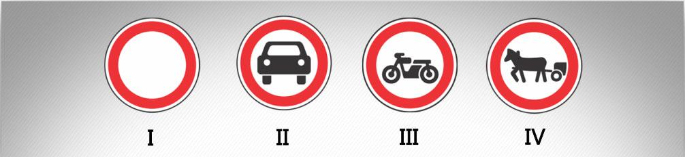
#756
„საგზაო მოძრაობის შესახებ“ საქართველოს კანონის პირველი დანართის მე-3 თავის (ამკრძალავი ნიშნები) შენიშვნის „გ.ბ“ ქვეპუნქტის თანახმად ნიშნების მოქმედება არ ვრცელდება: გ.ბ) 3.2–3.8 ნიშნებისა – სატრანსპორტო საშუალებაზე, რომელიც ემსახურება აღნიშნულ ზონაში მდებარე საწარმოს, ანდა ემსახურება ან ეკუთვნის ამავე ზონაში მცხოვრებ ან მომუშავე პირს. ამ შემთხვევაში სატრანსპორტო საშუალება შედის აღნიშნულ ზონაში და გამოდის იქიდან დანიშნულების ადგილისაკენ უახლოეს გზაჯვარედინზე. სურათზე ნაჩვენები საგზაო ნიშნებია: 3.20 „გასწრება აკრძალულია”, 3.32 „სახიფათო ტვირთის გადამზიდი სატრანსპორტო საშუალებით მოძრაობა აკრძალულია”, 3.5 „მოტოციკლით მოძრაობა აკრძალულია” და 3.8. „საჭაპანო ტრანსპორტით მოძრაობა აკრძალულია“.
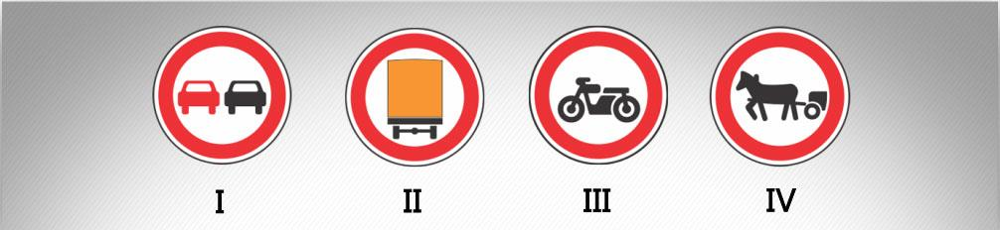
#758
„საგზაო მოძრაობის შესახებ“ საქართველოს კანონის პირველი დანართის მე-3 თავის (ამკრძალავი ნიშნები) შენიშვნის „გ.დ“ ქვეპუნქტის თანახმად ნიშნების მოქმედება არ ვრცელდება: გ.დ) 3.2, 3.3, 3.28–3.30 ნიშნებისა – იმ სატრანსპორტო საშუალებაზე, რომელსაც მნიშვნელოვნად გამოხატული ან მკვეთრად გამოხატული შეზღუდული შესაძლებლობის სტატუსის მქონე პირი მართავს, ან იმ სატრანსპორტო საშუალებაზე, რომელსაც აღნიშნული პირები გადაჰყავს; სურათზე ნაჩვენები საგზაო ნიშნებია: 3.3 „მექანიკური სატრანსპორტო საშუალებით მოძრაობა აკრძალულია”, 3.24 „მაქსიმალური სიჩქარის შეზღუდვა”, 3.29 „დგომა აკრძალულია კენტ რიცხვებში” და 3.30 „დგომა აკრძალულია ლუწ რიცხვებში”.
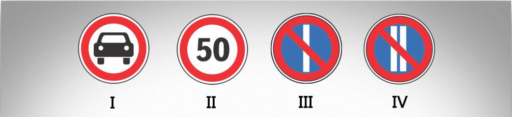
#760
„საგზაო მოძრაობის შესახებ“ საქართველოს კანონის პირველი დანართის მე-3 თავის (ამკრძალავი ნიშნები) შენიშვნის „დ“ პუნქტის თანახმად 3.18.1 (მარჯვნივ მოხვევა აკრძალულია), 3.18.2 (მარცხნივ მოხვევა აკრძალულია) ნიშნების მოქმედება ვრცელდება სავალი ნაწილების იმ გადაკვეთაზე, რომლის წინაც დადგმულია სათანადო ნიშანი.
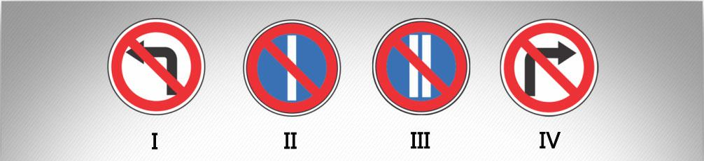
#762
„საგზაო მოძრაობის შესახებ“ საქართველოს კანონის პირველი დანართის მე-4 თავის (მიმთითებელი ნიშნები) 4.1.1-4.1.6 პუნქტების შენიშვნის „ბ“ ქვეპუნქტის თანახმად ბ) 4.1.1-4.1.6 ნიშნების მოქმედება ვრცელდება სავალი ნაწილების იმ გადაკვეთაზე, რომლის წინაც დადგმულია სათანადო ნიშანი. სურათზე ნაჩვენები ნიშნებია: 3.18.2 „მარცხნივ მოხვევა აკრძალულია“, 3.1 „შესვლა აკრძალულია”, 3.18.1 „მარჯვნივ მოხვევა აკრძალულია“ და 4.1.5 „მოძრაობა პირდაპირ ან მარცხნივ”.
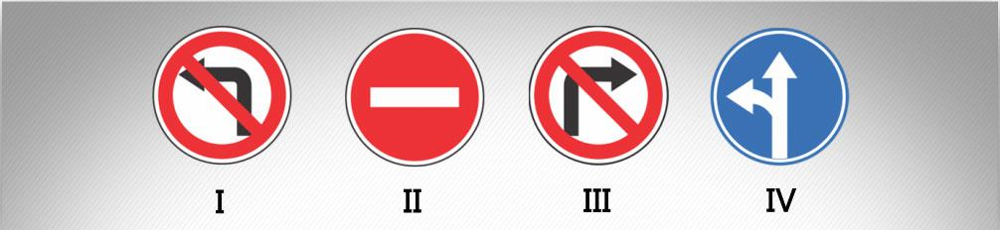
#764
„საგზაო მოძრაობის შესახებ“ საქართველოს კანონის პირველი დანართის მე-3 თავის (ამკრძალავი ნიშნები) შენიშვნის „ი“ პუნქტის თანახმად 3.10, 3.27–3.30 ნიშნების მოქმედება ვრცელდება მხოლოდ გზის იმ მხარეს, რომელზედაც ისინია დადგმული. სურათზე ნაჩვენები ნიშნებია: 3.28 „დგომა აკრძალულია”, 3.30 „დგომა აკრძალულია ლუწ რიცხვებში” და 3.10 „ქვეითთა მოძრაობა აკრძალულია”.
#766
„საგზაო მოძრაობის შესახებ“ საქართველოს კანონის პირველი დანართის მე-3 თავის (ამკრძალავი ნიშნები) შენიშვნის „ე“ პუნქტის თანახმად, 3.16, 3.20, 3.22, 3.24, 3.26–3.30 ნიშნების მოქმედება ვრცელდება სათანადო ნიშნის შემდეგ, ნიშნის დადგმის ადგილიდან უახლოეს გზაჯვარედინამდე, ხოლო დასახლებულ პუნქტში გზაჯვარედინის არარსებობისას – დასახლებული პუნქტის ბოლომდე. სურათზე ნაჩვენები ნიშნებია: 3.20 „გასწრება აკრძალულია”, 3.26 „ხმოვანი სიგნალის მიცემა აკრძალულია”, 3.2 „მოძრაობა აკრძალულია” და 3.29 „დგომა აკრძალულია კენტ რიცხვებში”.
#1102
„საგზაო მოძრაობის შესახებ“ საქართველოს კანონის პირველი დანართის მე-3 თავის (ამკრძალავი ნიშნები) 3.20 პუნქტის თანახმად, საგზაო ნიშანი 3.20 „გასწრება აკრძალულია” - კრძალავს ყველა სახის მექანიკური სატრანსპორტო საშუალების გასწრებას, გარდა 30 კმ/სთ-ზე ნაკლები სიჩქარით მოძრავი ტრანსპორტისა. ნებადართულია გასწრება უეტლო მოტოციკლის, მოპედის და ველოსიპედის შემხვედრ მოძრაობის ზოლში გადაუსვლელად. ამავე თავის შენიშვნის „ე“ ქვეპუნქტის თანახმად, ე) 3.16, 3.20, 3.22, 3.24, 3.26–3.30 ნიშნების მოქმედება ვრცელდება სათანადო ნიშნის შემდეგ, ნიშნის დადგმის ადგილიდან უახლოეს გზაჯვარედინამდე, ხოლო დასახლებულ პუნქტში გზაჯვარედინის არარსებობისას – დასახლებული პუნქტის ბოლომდე.
#1262
„საგზაო მოძრაობის შესახებ“ საქართველოს კანონის პირველი დანართის მე-3 თავის (ამკრძალავი ნიშნები) 3.27 პუნქტის თანახმად, საგზაო ნიშანი 3.27 „გაჩერება აკრძალულია” - კრძალავს სატრანსპორტო საშუალების როგორც გაჩერებას, ასევე დგომას. ამავე თავის შენიშვნის „ე“ ქვეპუნქტის თანახმად 3.26–3.30 ნიშნების მოქმედება ვრცელდება სათანადო ნიშნის შემდეგ, ნიშნის დადგმის ადგილიდან უახლოეს გზაჯვარედინამდე, ხოლო დასახლებულ პუნქტში გზაჯვარედინის არარსებობისას – დასახლებული პუნქტის ბოლომდე. ნიშნების მოქმედება ვრცელდება აგრეთვე მიმდებარე ტერიტორიის გამოსასვლელთან, საველე, სატყეო და სხვა მეორეხარისხოვანი გზების გადაკვეთასთან (შეერთებასთან), რომელთა წინ არ დგას სათანადო ნიშანი. ამავე კანონის მე-5 მუხლის მე-13 პუნქტის თანახმად, გზაჯვარედინი არის ერთ დონეზე გზების კვეთა, შეერთება ან განშტოება, ასეთი კვეთით, შეერთებით ან განშტოებით წარმოქმნილი ტერიტორიების ჩათვლით. გზაჯვარედინად არ ითვლება მიმდებარე ტერიტორიებიდან გამომავალი გამოსასვლელების გზებთან კვეთა.
#64
„საგზაო მოძრაობის შესახებ“ საქართველოს კანონის პირველი დანართის 4.1.2 პუნქტის თანახმად საგზაო ნიშანი 4.1.2 „მოძრაობა მარჯვნივ” რთავს მხოლოდ ისრით ნაჩვენები მიმართულებით მოძრაობის ნებას.
#370
„საგზაო მოძრაობის შესახებ“ საქართველოს კანონის 32-ე მუხლის მე-17 პუნქტის „ა“ ქვეპუნქტის თანახმად, ამ მუხლით დადგენილ მოთხოვნათა გათვალისწინებით, მძღოლს შეუძლია მარჯვნიდან ან მარცხნიდან შემოუაროს იმ სავალ ნაწილზე დაყენებულ უსაფრთხოების კუნძულს, ტუმბოს ან სხვა მოწყობილობას, რომელზედაც იგი მოძრაობს, გარდა იმ შემთხვევისა, როცა საგზაო ნიშანი მიუთითებს, რომელი მხრიდან უნდა შემოუაროს მძღოლმა უსაფრთხოების კუნძულს, ტუმბოს ან სხვა მოწყობილობას. ამავე კანონის პირველი დანართის მე-4 თავის (მიმთითებელი ნიშნები) 4.2.3 პუნქტის თანახმად საგზაო ნიშანი 4.2.3 „დაბრკოლების შემოვლა მარჯვნიდან ან მარცხნიდან” - მიუთითებს დაბრკოლების შემოვლის მიმართულებას მარჯვნიდან ან მარცხნიდან.
#375
„საგზაო მოძრაობის შესახებ“ საქართველოს კანონის 32-ე მუხლის მე-16 პუნქტის თანახმად, მძღოლი, რომელიც მობრუნებას ან უკუსვლით მოძრაობას აპირებს, უნდა დარწმუნდეს, რომ მას შეუძლია ისე შეასრულოს ეს მანევრი, რომ საფრთხე არ შეუქმნას და ხელი არ შეუშალოს სხვა საგზაო მოძრაობის მონაწილეებს. აუცილებლობის შემთხვევაში მიზანშეწონილია სხვა პირის დახმარება. აკრძალულია უკუსვლით მოძრაობა გზაჯვარედინზე, ავტომაგისტრალზე და ამ მუხლის მე-15 პუნქტით განსაზღვრულ ადგილებში. ამავე კანონის პირველი დანართის მე-4 თავის (მიმთითებელი ნიშნები) 4.1.4 პუნქტის და ამავე პუნქტის შენიშვნის თანახმად საგზაო ნიშანი 4.1.4 „მოძრაობა პირდაპირ ან მარჯვნივ” - რთავს მხოლოდ ისრებით ნაჩვენები მიმართულებებით მოძრაობის ნებას.
#1140
„საგზაო მოძრაობის შესახებ“ საქართველოს კანონის პირველი დანართის მე-4 თავის (მიმთითებელი ნიშნები) 4.1.1 პუნქტისა და ამავე პუნქტის შენიშვნის „ა“ ქვეპუნქტის თანახმად, საგზაო ნიშანი 4.1.1 „მოძრაობა პირდაპირ“ რთავს მხოლოდ ისრებით ნაჩვენები მიმართულებებით მოძრაობის ნებას.
#1142
„საგზაო მოძრაობის შესახებ“ საქართველოს კანონის პირველი დანართის მე-4 თავის (მიმთითებელი ნიშნები) 4.1.2 პუნქტისა და ამავე პუნქტის შენიშვნის „ა“ ქვეპუნქტის თანახმად, საგზაო ნიშანი 4.1.2 „მოძრაობა მარჯვნივ“ რთავს მხოლოდ ისრებით ნაჩვენები მიმართულებებით მოძრაობის ნებას.
#1145
„საგზაო მოძრაობის შესახებ“ საქართველოს კანონის პირველი დანართის მე-4 თავის (მიმთითებელი ნიშნები) 4.2.1 პუნქტის თანახმად, საგზაო ნიშანი 4.2.1 „დაბრკოლების შემოვლა მარჯვნიდან“ - მიუთითებს გამყოფი ზოლის, უსაფრთხოების კუნძულის ან რაიმე დაბრკოლების მხოლოდ მარჯვნიდან შემოვლის მიმართულებას.
#1147
„საგზაო მოძრაობის შესახებ“ საქართველოს კანონის პირველი დანართის მე-4 თავის (მიმთითებელი ნიშნები) 4.2.3 პუნქტის თანახმად, საგზაო ნიშანი 4.2.3 „დაბრკოლების შემოვლა მარჯვნიდან ან მარცხნიდან” - მიუთითებს გამყოფი ზოლის, უსაფრთხოების კუნძულის ან რაიმე დაბრკოლების მარჯვნიდან ან მარცხნიდან შემოვლის მიმართულებას.
#1149
„საგზაო მოძრაობის შესახებ“ საქართველოს კანონის პირველი დანართის მე-4 თავის (მიმთითებელი ნიშნები) 4.4 პუნქტის თანახმად, საგზაო ნიშანი 4.4 „ველობილიკი” - ველოსიპედით მოძრაობისათვის განკუთვნილი ბილიკი, რომელიც კონსტრუქციულად გამოყოფილია სხვა გზისაგან ან გზის სხვა ელემენტებისაგან.
#1151
„საგზაო მოძრაობის შესახებ“ საქართველოს კანონის პირველი დანართის მე-4 თავის (მიმთითებელი ნიშნები) 4.6 პუნქტის თანახმად, საგზაო ნიშანი 4.6 „მინიმალური სიჩქარის შეზღუდვა” - ადგენს გზაზე მოძრაობის მინიმალური სიჩქარის ზღვარს.
#1152
„საგზაო მოძრაობის შესახებ“ საქართველოს კანონის პირველი დანართის მე-4 თავის (მიმთითებელი ნიშნები) 4.8 პუნქტის თანახმად, საგზაო ნიშანი 4.8 „მოცურების საწინააღმდეგო ჯაჭვები აუცილებელია“ - გზის მონაკვეთი, რომელზე მოძრავ სატრანსპორტო საშუალებას არანაკლებ ორ წამყვან ბორბალზე მოცურების საწინააღმდეგო ჯაჭვები უნდა ჰქონდეს დამაგრებული.
#1154
„საგზაო მოძრაობის შესახებ“ საქართველოს კანონის პირველი დანართის მე-4 თავის (მიმთითებელი ნიშნები) 4.1.1 პუნქტისა და ამავე პუნქტის შენიშვნის „ა“ და „დ“ ქვეპუნქტების თანახმად, საგზაო ნიშანი 4.1.1 „მოძრაობა პირდაპირ“ რთავს მხოლოდ ისრებით ნაჩვენები მიმართულებებით მოძრაობის ნებას. 4.1.1 ნიშნის მოქმედება, რომელიც გზის მონაკვეთის დასაწყისშია დადგმული, ვრცელდება უახლოეს გზაჯვარედინამდე. ნიშანი არ კრძალავს მარჯვნივ ეზოში მოხვევას და სხვა მიმდებარე ტერიტორიაზე შესვლას.
#1155
„საგზაო მოძრაობის შესახებ“ საქართველოს კანონის პირველი დანართის მე-4 თავის (მიმთითებელი ნიშნები) 4.1.1 პუნქტისა და ამავე პუნქტის შენიშვნის „ა“ და „დ“ ქვეპუნქტების თანახმად, საგზაო ნიშანი 4.1.1 „მოძრაობა პირდაპირ“ რთავს მხოლოდ ისრებით ნაჩვენები მიმართულებებით მოძრაობის ნებას.
#1156
„საგზაო მოძრაობის შესახებ“ საქართველოს კანონის 28-ე მუხლის მე-5 პუნქტის თანახმად, თუ გზაზე დროებით გადასატან სადგარზე დაყენებული ნიშნის მოთხოვნები ეწინააღმდეგება სტაციონარულს, მძღოლი ვალდებულია შეასრულოს დროებითი ნიშნის მოთხოვნა.
#1157
მძღოლი ვალდებულია შეასრულოს დროებითი საგზაო ნიშნის მოთხოვნები. ნიშნები, რომლებიც მარცხნივ მოხვევის ნებას რთავს, მობრუნების უფლებასაც იძლევა.
#1159
ნიშანი 4.1.1 არ კრძალავს მარჯვნივ მოხვევას ეზოში. ნიშანი 3.27 „გაჩერება აკრძალულია” კრძალავს სატრანსპორტო საშუალების როგორც გაჩერებას, ასევე დგომას.
#1160
საგზაო ნიშანი 4.1.5 „მოძრაობა პირდაპირ ან მარცხნივ” რთავს მობრუნების უფლებასაც.
#1161
ნიშნები, რომლებიც მარცხნივ მოხვევის ნებას რთავს, მობრუნების უფლებასაც იძლევა, თუმცა კონკრეტულ ზოლებს აქვს მნიშვნელობა.

#1163
საგზაო ნიშანი 4.2.2 „დაბრკოლების შემოვლა მარცხნიდან“ მიუთითებს დაბრკოლების მხოლოდ მარცხნიდან შემოვლის მიმართულებას.

#1164
საგზაო ნიშანი 4.1.6 „მოძრაობა მარჯვნივ ან მარცხნივ“ რთავს მობრუნების ნებასაც.
#1168
საგზაო ნიშანი 7.3.1 „მობრუნების ადგილი” მიუთითებს მობრუნების ადგილზე. ნიშანი მარცხნივ მოხვევის ნებას არ რთავს.
#1170
„საგზაო მოძრაობის შესახებ“ საქართველოს კანონის თანახმად, როგორც მიმთითებელი (4.1.1-4.1.6), ისე გარკვეული ამკრძალავი (3.18.1, 3.18.2) ნიშნების მოქმედება ვრცელდება სავალი ნაწილების იმ გადაკვეთაზე, რომლის წინაც უშუალოდ არის დადგმული ნიშანი.
#1232
ნიშნების 4.1.1 (როცა გზის დასაწყისშია), 7.2 (რეკომენდებული სიჩქარე) და 3.16 მოქმედება ვრცელდება უახლოეს გზაჯვარედინამდე. IV ნიშნის (მოძრაობა პირდაპირ, რომელიც დადგმულია გზაჯვარედინის წინ) მოქმედება ვრცელდება მხოლოდ უშუალოდ სავალი ნაწილების გადაკვეთაზე და არა მომდევნო გზაჯვარედინამდე.
#187
კანონის თანახმად, მძღოლს შეუძლია ნებისმიერი მხრიდან შემოუაროს დაბრკოლებას, თუ ის ცალმხრივ გზაზეა, მაგრამ ორმხრივმოძრაობიანი გზის ღერძზე განლაგებულ მოწყობილობას მხოლოდ მარჯვნიდან უნდა შემოუაროს. ნიშანი 5.15.2 მიუთითებს ზოლებზე მოძრაობის ნებადართულ მიმართულებებს.
#189
სამი ან მეტი ზოლის არსებობისას, განაპირა მარცხენა ზოლის დაკავება სატვირთო ავტომობილისათვის (3.5 ტ-ზე მეტი) ნებადართულია მხოლოდ მარცხნივ მოხვევის ან მობრუნების მიზნით.
#192
ნიშანი 7.15.3 არის სარეკომენდაციო ხასიათის და მიუთითებს სატვირთო ავტომობილების მოძრაობის სასურველ მიმართულებას, თუ სხვაგან აკრძალვა არსებობს. ის არ ავალდებულებს მძღოლს მხოლოდ ამ მიმართულებით წასვლას.
#337
დაფა 8.6.8 მიუთითებს მსუბუქი ავტომობილისა და მოტოციკლის დგომის ხერხს ტროტუარზე. სატვირთო ავტომობილებისთვის ამ ხერხით დგომა (ტროტუარზე შეყენებით) აკრძალულია, მიუხედავად მათი წონისა.
#484
სამარშრუტო ზოლზე სხვა სატრანსპორტო საშუალებების მოძრაობა აკრძალულია. თუ ზოლი გამოყოფილია უწყვეტი ხაზით, მასზე გადასვლა მოხვევის მიზნითაც კი აკრძალულია.
#486
ნიშანი 5.13.2 მიუთითებს სამარშრუტო ზოლის მქონე გზაზე გასვლას. მძღოლს შეუძლია იმოძრაოს პირდაპირ ან მობრუნდეს, მაგრამ აკრძალულია სამარშრუტო ზოლში (მარჯვნივ) შესვლა.

#488
ცალმხრივმოძრაობიან გზაზე გასვლისას, სადაც არის სამარშრუტო ზოლი, სხვა ავტომობილებს შეუძლიათ იმოძრაონ ყველა მიმართულებით, გარდა თავად სამარშრუტო ზოლისა.

#768
საგზაო ნიშანი 5.1 „ავტომაგისტრალი” აღნიშნავს სპეციალურ გზას, სადაც მოქმედებს მოძრაობის განსაკუთრებული რეჟიმი (მაგ. მინიმალური სიჩქარე, დგომის აკრძალვა და ა.შ.).
#770
ნიშანი 5.2 „ავტომაგისტრალის დასასრული” მიუთითებს იმ გზის დასასრულს, სადაც მოქმედებდა ავტომაგისტრალისათვის დადგენილი სპეციალური ნორმები.
#771
ნიშანი 5.3 „საავტომობილო გზა” აღნიშნავს გზას, რომელიც განკუთვნილია მხოლოდ ავტომობილებისა და მოტოციკლებისათვის (აკრძალულია ტრაქტორების, ველოსიპედების და ა.შ. მოძრაობა).
#774
საგზაო ნიშანი 5.4 მიუთითებს 5.3 ნიშნით აღნიშნული „საავტომობილო გზის“ დასასრულს.
#776
ნიშანი 5.5 „ცალმხრივმოძრაობიანი გზა” მიუთითებს გზას, სადაც მოძრაობა მთელ სიგანეზე მხოლოდ ერთი მიმართულებით არის ნებადართული.
#777
საგზაო ნიშანი 5.6 მიუთითებს 5.5 ნიშნით აღნიშნული ცალმხრივმოძრაობიანი გზის დასასრულს.
#778
ნიშნები 5.7.1 და 5.7.2 „ცალმხრივმოძრაობიან გზაზე გასვლა” იდგმება გზაჯვარედინის წინ და მიუთითებს, რომ გადამკვეთ გზაზე მოძრაობა ცალმხრივია.

#779
ნიშანი 5.8 „რევერსული მოძრაობა“ აღნიშნავს გზის მონაკვეთს, სადაც ერთ ან რამდენიმე ზოლზე მოძრაობის მიმართულება შეიძლება შეიცვალოს საპირისპიროდ სპეციალური შუქნიშნების მეშვეობით.

#780
მოცემული ნიშანი 5.8 მიუთითებს რევერსული მოძრაობის მქონე გზის მონაკვეთის დასაწყისს.
#782
ნიშანი 5.10 „გზაზე გასვლა, რომელზედაც რევერსული მოძრაობაა” მიუთითებს, რომ გადამკვეთ გზაზე მოქმედებს რევერსული რეჟიმი.
#784
ნიშანი 5.12 მიუთითებს იმ გზის დასასრულს, სადაც მოძრაობა სამარშრუტო სატრანსპორტო საშუალებებისათვის გამოყოფილ ზოლში ხორციელდებოდა საერთო ნაკადის საპირისპიროდ.
#785
ნიშნები 5.13.1 და 5.13.2 მიუთითებენ ისეთ გზაზე გასვლას, სადაც სამარშრუტო ტრანსპორტისთვის გამოყოფილია სპეციალური ზოლი საერთო ნაკადის საპირისპიროდ.
#787
როდესაც საგზაო ნიშანი განთავსებულია უშუალოდ მოძრაობის ზოლის ზემოთ, მისი მოქმედება ვრცელდება მხოლოდ ამ კონკრეტულ ზოლზე და არა მთელ სავალ ნაწილზე.
#789
ნიშანი 5.15.8 „ზოლების რაოდენობა“ კომპლექსურია: ის გვიჩვენებს რამდენი ზოლია ჩვენს მხარეს და რა შეზღუდვები (მაგ. მინიმალური სიჩქარე) მოქმედებს თითოეულ მათგანზე.
#790
ნიშანი 5.20 იდგმება უშუალოდ ხელოვნურ უსწორმასწორობასთან (ე.წ. "მწოლიარე პოლიციელთან"). ის განსხვავდება გამაფრთხილებელი ნიშნისგან, რომელიც წინასწარ გვატყობინებს საფრთხის შესახებ.
#792
ნიშანი 5.22 აუქმებს საცხოვრებელი ზონის სპეციალურ წესებს (მაგ. ქვეითთა პრიორიტეტი მთელ გზაზე, სიჩქარის ლიმიტი 20 კმ/სთ).
#794
ლურჯ ფონზე გამოსახული დასახლებული პუნქტის ნიშანი (5.25/5.26) ნიშნავს, რომ ამ ტერიტორიაზე არ მოქმედებს დასახლებული პუნქტისთვის დადგენილი სიჩქარის შეზღუდვები (მაგ. 60 კმ/სთ).
#796
ზონის ნიშნები (მართკუთხა ფორმის) განსხვავდება ჩვეულებრივი ამკრძალავი ნიშნებისგან იმით, რომ მათი მოქმედება ვრცელდება გზის ორივე მხარეს და ყველა მომდევნო გზაჯვარედინზე, სანამ არ შეგხვდებათ "ზონის დასასრულის" ნიშანი.

#798
საგზაო ნიშანი 5.15.2 „ზოლზე მოძრაობის მიმართულებები” მიუთითებს კონკრეტულ ზოლზე მოძრაობის ნებადართულ მიმართულებას. მოცემულ სიტუაციაში მსუბუქი ავტომობილი დგას ზოლში, საიდანაც ნებადართულია მხოლოდ მარჯვნივ მოხვევა.
#799
წესი: 5.15.1 და 5.15.2 ნიშნები, რომლებიც უკიდურესი მარცხენა ზოლიდან მოხვევის ნებას რთავს, ამავე ზოლიდან მობრუნების უფლებასაც იძლევა (თუ მობრუნება სხვა ნიშნით აკრძალული არ არის).
#800
თუ გზაზე დგას 5.15.1 ან 5.15.2 ნიშნები, მოხვევა უნდა განხორციელდეს მხოლოდ ნიშნით მითითებული ზოლიდან. ამ დროს ტრამვაის ლიანდაგზე ასვლა და იქიდან მოხვევა აკრძალულია.

#912
„საცხოვრებელი ზონა“ არის ტერიტორია, სადაც ქვეითებს აქვთ პრიორიტეტი, ნებადართულია მათი მოძრაობა სავალ ნაწილზეც და მოქმედებს სპეციალური შეზღუდვები ავტოტრანსპორტისთვის.
#1234
ნიშანი 7.5 „ავარიული გაჩერების ზოლი“ გამოიყენება მთიან რელიეფზე, ციცაბო დაღმართებზე, რათა მუხრუჭების დაზიანების შემთხვევაში მძღოლმა შეძლოს ავტომობილის უსაფრთხოდ გაჩერება.
#1171
ნიშანი 6.1 „პირველადი სამედიცინო დახმარების პუნქტი” მიუთითებს ობიექტზე, სადაც შესაძლებელია გადაუდებელი სამედიცინო დახმარების მიღება.
#1172
ნიშანი 6.2 „ავტოგასამართი სადგური” აწვდის ინფორმაციას მძღოლს საწვავის შევსების უახლოესი წერტილის შესახებ.
#1173
ნიშანი 6.3 „ავტომობილის ტექნიკური მომსახურება” მიუთითებს პროფილაქტიკის ან სერვის-ცენტრის არსებობაზე.
#1174
ნიშანი 6.4 მიუთითებს ავტომობილის რეცხვის პუნქტის ადგილმდებარეობაზე.
#1175
ნიშანი 6.5 „ტელეფონი” მიუთითებს საჯარო ტელეფონის არსებობაზე გზის სიახლოვეს.
#1176
ნიშანი 6.6 „კვების პუნქტი” (ჩანგალი და დანა) მიუთითებს რესტორნის ან კაფეს არსებობაზე.
#1177
ნიშანი 6.7 „სასმელი წყალი” მიუთითებს სასმელი წყლის წყაროსთან სიახლოვეზე.
#1178
ნიშანი 6.8 „სასტუმრო ან მოტელი” ატყობინებს მძღოლს ღამის გასათევი ადგილის შესახებ.
#1179
ნიშანი 6.9 „კემპინგი” მიუთითებს კარვებით დასასვენებელი ბანაკის ადგილზე.
#1181
ნიშანი 5.36 „შერწყმის ადგილი“ მიუთითებს, რომ ავტომაგისტრალს უერთდება სხვა გზიდან მომავალი ნაკადი (აჩქარების ზოლი).
#1182
ნიშანი 6.11 „საპატრულო პოლიციის საგუშაგო” ატყობინებს მძღოლს პოლიციის სტაციონარული პოსტის არსებობის შესახებ.
#1184
ნიშანი 6.13 „საერთაშორისო საავტომობილო გადაზიდვების საკონტროლო პუნქტი“ (TIR) მიუთითებს საბაჟო ან სატრანსპორტო კონტროლის ადგილზე.

#1185
ნიშანი 6.13 მიუთითებს საერთაშორისო გადაზიდვების კონტროლის პუნქტზე.

#1186
ნიშანი 6.14 მიუთითებს რადიოსადგურის ტალღაზე, რომელიც გადმოსცემს ინფორმაციას საგზაო მოძრაობის შესახებ.
#1187
ნიშანი 6.14 „რადიო“ მიუთითებს საგზაო ინფორმაციის გადამცემი სადგურის მიღების ზონაზე.
#1188
ნიშანი 6.15 „SOS“ მიუთითებს საავარიო სამსახურთან რადიოკავშირის ზონის არსებობაზე.
#1189
ნიშანი 6.15 (SOS) არის საავარიო რადიოკავშირის ზონის მაჩვენებელი.
#1191
დაუსახლებელ პუნქტში ხანგრძლივი დასვენება ნებადართულია მხოლოდ სპეციალურ სადგომზე (ნიშანი 7.11) ან გზის ფარგლებს მიღმა.
#1192
სამზოლიან გზაზე შუა ზოლში დგომა აკრძალულია. ასევე, ხანგრძლივი დასვენება გზის პირზე დაუსახლებელ პუნქტში დაუშვებელია.
#1240
ნიშანი 6.16 მიუთითებს საცურაო აუზის ან პლაჟის არსებობაზე.
#1193
დაფა 8.1.1 „მანძილი ობიექტამდე” მიუთითებს მანძილს ნიშნიდან სახიფათო მონაკვეთის დასაწყისამდე ან შეზღუდვის დაწესების ადგილამდე.
#1196
დაფები ისრებით (8.1.3 და 8.1.4) მიუთითებენ მანძილს გზის გვერდზე (მოშორებით) მდებარე ობიექტამდე.
#1198
დაფა 8.2.1 (მანძილი ორ ისარს შორის) მიუთითებს სახიფათო მონაკვეთის სიგრძეს ან ნიშნის მოქმედების ზონას.
#1199
დაფა 8.2.2 (ისარი ზემოთ) მიუთითებს ამკრძალავი ნიშნების (მაგ: 3.27-3.30) მოქმედების ზონას.
#1201
დაფა 8.2.3 (ისარი ქვემოთ) მიუთითებს ამკრძალავი ნიშნების მოქმედების ზონის დასასრულს.
#1203
დაფები 8.2.5 და 8.2.6 მიუთითებენ აკრძალვის ზონას შენობის ფასადის ან მოედნის გასწვრივ (გვერდითი ისრები).
#1205
დაფები 8.3.1-8.3.3 მიუთითებენ ნიშნის მოქმედების მიმართულებას გზაჯვარედინზე.
#1208
დაფა 8.4.3 ნიშნის მოქმედებას ავრცელებს მხოლოდ მსუბუქ ავტომობილებზე (და სატვირთოებზე 3.5ტ-მდე).
#1211
„საგზაო მოძრაობის შესახებ“ საქართველოს კანონის პირველი დანართის მე-8 თავის (დამატებითი ინფორმაციის ნიშნები (დაფები)) 8.5.2 პუნქტის თანახმად, დაფა 8.5.2 „სამუშაო დღეები” - მიუთითებს კვირის დღეებზე, როცა მოქმედებს ნიშნები. ამავე თავის 8.5.5-8.5.7 პუნქტების თანახმად დაფები 8.5.5–8.5.7 „მოქმედების დრო” - მიუთითებს კვირის დღეებსა და დღე-ღამის დროზე, როცა მოქმედებს ნიშანი.
#1213
„საგზაო მოძრაობის შესახებ“ საქართველოს კანონის პირველი დანართის მე-8 თავის (დამატებითი ინფორმაციის ნიშნები (დაფები)) 8.5.2 და 8.5.3 პუნქტების თანახმად, დაფები 8.5.2 „სამუშაო დღეები” და 8.5.3 „კვირის დღეები” - მიუთითებენ კვირის დღეებზე, როცა მოქმედებს ნიშანი. ამავე თავის 8.5.5-8.5.7 პუნქტების თანახმად დაფები 8.5.5–8.5.7 „მოქმედების დრო” - მიუთითებს კვირის დღეებსა და დღე-ღამის დროზე, როცა მოქმედებს ნიშანი.
#1215
„საგზაო მოძრაობის შესახებ“ საქართველოს კანონის პირველი დანართის მე-8 თავის (დამატებითი ინფორმაციის ნიშნები (დაფები)) 8.18 პუნქტის თანახმად, დაფა 8.18 „გარდა შეზღუდული შესაძლებლობის მქონე პირისა” - მიუთითებს, რომ ნიშნის მოქმედება არ ვრცელდება სატრანსპორტო საშუალებებზე, რომლებზედაც დადგმულია საცნობი ნიშანი „შეზღუდული შესაძლებლობის მქონე პირი”.
#1216
„საგზაო მოძრაობის შესახებ“ საქართველოს კანონის პირველი დანართის 3.20 პუნქტის თანახმად, საგზაო ნიშანი 3.20. „გასწრება აკრძალულია“ − კრძალავს ყველა სახის მექანიკური სატრან¬სპორ¬ტო საშუალების გასწრებას (გარდა 30 კმ/სთ-ზე ნაკლები სიჩქარით მოძრავი ტრანსპორტისა). ნებადართულია გასწრება უეტლო მოტოციკლის, მოპედისა და ველოსიპედის შემხვედრი მოძრაობის ზოლში გადაუსვლელად. ამავე კანონის პირველი დანართის მე-8 თავის (დამატებითი ინფორმაციის ნიშნები (დაფები)) 8.16 პუნქტის თანახმად, დაფა 8.16 „სველი საფარი” - მიუთითებს, რომ ნიშნის მოქმედება ვრცელდება დროის იმ პერიოდში, როცა სავალი ნაწილის საფარი სველია. გამოიყენება 1.16, 3.20, 3.22 და 3.24 ნიშნებთან ერთად.

#1239
„საგზაო მოძრაობის შესახებ“ საქართველოს კანონის პირველი დანართის მე-7 თავის (საინფორმაციო-მაჩვენებელი ნიშნები) 7.16 პუნქტის თანახმად, 7.16 „სდექ ხაზი” - მიუთითებს სატრანსპორტო საშუალების გაჩერების ადგილს რეგულირებულ გზაჯვარედინსა და არარეგულირებულ რკინიგზის გადასასვლელზე.
#1241
„საგზაო მოძრაობის შესახებ“ საქართველოს კანონის პირველი დანართის მე-2 თავის (პრიორიტეტის ნიშნები) 2.5 პუნქტის თანახმად, 2.5 „შემხვედრი მოძრაობის უპირატესობა”- უკრძალავს მძღოლს გზის ვიწრო მონაკვეთზე შესვლას, თუ ეს აძნელებს საპირისპირო მიმართულებით მოძრაობას. მძღოლი ვალდებულია გზა დაუთმოს შემხვედრ სატრან¬სპორტო საშუალებას, რომელიც მოპირდაპირე მისასვლელთან ან გზის ვიწრო მონაკვეთზე იმყოფება. ამავე დანართის მე-8 თავის (დამატებითი ინფორმაციის ნიშნები (დაფები)) 8.1.1 პუნქტის თანახმად, დაფა 8.1.1 „მანძილი ობიექტამდე” - მიუთითებს მანძილს ნიშნიდან სახიფათო მონაკვეთის დასაწყისამდე, სათანადო შეზღუდვის შემოღების ადგილამდე ან წინ, მოძრაობის მიმართულებით არსებულ გარკვეულ ობიექტამდე (ადგილამდე).
#1242
„საგზაო მოძრაობის შესახებ“ საქართველოს კანონის პირველი დანართის პირველი თავის (მაფრთხილებელი ნიშნები) 1.17 პუნქტისა და ამავე თავის შენიშვნის „ა“ ქვეპუნქტის თანახმად, საგზაო ნიშანი 1.17 „უსწორმასწორო გზა” - გზის მონაკვეთი, რომლის სავალი ნაწილი დაზიანებულია ტალღოვანი, ღრანტეებიანი, ხიდთან უსწორმასწორო შეუღლებებით და ა. შ.. 1.1, 1.2, 1.5–1.34 ნიშნები დაუსახლებელ პუნქტში იდგმება სახიფათო მონაკვეთის დასაწყისამდე 150−300 მეტრ მანძილზე. ამავე დანართის მე-8 თავის (დამატებითი ინფორმაციის ნიშნები (დაფები)) 8.2.1 პუნქტის თანახმად, დაფა 8.2.1 „მოქმედების ზონა” - მიუთითებს მაფრთხილებელი ნიშნით აღნიშნული გზის სახიფათო მონაკვეთის სიგრძეს, ან ამკრძალავი და საინფორმაციო-მაჩვენებელი ნიშნის მოქმედების ზონას. ამავე დანართის მე-7 თავის (საინფორმაციო-მაჩვენებელი ნიშნები) 7.2 პუნქტის თანახმად, საგზაო ნიშანი 7.2 „რეკომენდებული სიჩქარე“ - მიუთითებს სიჩქარეს, რომლითაც რეკომენდებულია მოძრაობა გზის მოცემულ მონაკვეთზე. ნიშანი იდგმება გზის დასაწყისში. ნიშნის მოქმედება ვრცელდება უახლოეს გზაჯვარედინამდე, ხოლო მაფრთხილებელ ნიშანთან ერთად − სახიფათო უბნის მთელ სიგრძეზე.

#1243
„საგზაო მოძრაობის შესახებ“ საქართველოს კანონის პირველი დანართის მე-4 თავის (მიმთითებელი ნიშნები) 4.1.1 პუნქტის შენიშვნის „ა“ ქვეპუნქტის თანახმად, საგზაო ნიშანი 4.1.1 “მოძრაობა პირდაპირ“ რთავს მხოლოდ ისრებით ნაჩვენები მიმართულებებით მოძრაობის ნებას. ამავე დანართის მე-8 თავის (დამატებითი ინფორმაციის ნიშნები (დაფები)) 8.18 პუნქტის თანახმად, დაფა 8.18 „გარდა შეზღუდული შესაძლებლობის მქონე პირისა” - მიუთითებს, რომ ნიშნის მოქმედება არ ვრცელდება სატრანსპორტო საშუალებაზე, რომელზედაც დამაგრებულია საცნობი ნიშანი „შეზღუდული შესაძლებლობის მქონე პირი“.
#1244
„საგზაო მოძრაობის შესახებ“ საქართველოს კანონის პირველი დანართის მე-4 თავის (მიმთითებელი ნიშნები) 4.1.1 პუნქტის შენიშვნის „ა“ ქვეპუნქტის თანახმად, საგზაო ნიშანი 4.1.1 “მოძრაობა პირდაპირ“ რთავს მხოლოდ ისრებით ნაჩვენები მიმართულებებით მოძრაობის ნებას. ამავე დანართის მე-8 თავის (დამატებითი ინფორმაციის ნიშნები (დაფები)) 8.18 პუნქტის თანახმად, დაფა 8.18 „გარდა შეზღუდული შესაძლებლობის მქონე პირისა” - მიუთითებს, რომ ნიშნის მოქმედება არ ვრცელდება სატრანსპორტო საშუალებაზე, რომელზედაც დამაგრებულია საცნობი ნიშანი „შეზღუდული შესაძლებლობის მქონე პირი“.
#1245
„საგზაო მოძრაობის შესახებ“ საქართველოს კანონის პირველი დანართის მე-3 თავის (ამკრძალავი ნიშნები) 3.24 პუნქტის თანახმად, საგზაო ნიშნი 3.24 „მაქსიმალური სიჩქარის შეზღუდვა” - კრძალავს მოძრაობას ნიშანზე აღნიშნულზე მეტი სიჩქარით(კმ/სთ). ამავე დანართის მე-8 თავის (დამატებითი ინფორმაციის ნიშნები (დაფები)) 8.2.1 პუნქტის თანახმად, დაფა 8.2.1 „მოქმედების ზონა” - მიუთითებს მაფრთხილებელი ნიშნით აღნიშნული გზის სახიფათო მონაკვეთის სიგრძეს, ან ამკრძალავი და საინფორმაციო-მაჩვენებელი ნიშნის მოქმედების ზონას.
#1246
„საგზაო მოძრაობის შესახებ“ საქართველოს კანონის პირველი დანართის მე-3 თავის (ამკრძალავი ნიშნები) 3.24 პუნქტის თანახმად, საგზაო ნიშნი 3.24 „მაქსიმალური სიჩქარის შეზღუდვა” - კრძალავს მოძრაობას ნიშანზე აღნიშნულზე მეტი სიჩქარით(კმ/სთ). ამავე დანართის მე-8 თავის (დამატებითი ინფორმაციის ნიშნები (დაფები)) 8.1.1 პუნქტის თანახმად, დაფა 8.1.1 „მანძილი ობიექტამდე” - მიუთითებს მანძილს ნიშნიდან სახიფათო მონაკვეთის დასაწყისამდე, სათანადო შეზღუდვის შემოღების ადგილამდე ან წინ, მოძრაობის მიმართულებით არსებულ გარკვეულ ობიექტამდე (ადგილამდე).
#4
„საგზაო მოძრაობის შესახებ“ საქართველოს კანონის 36-ე მუხლის მე-3 პუნქტის „ა“ ქვეპუნქტის თანახმად, რეგულირებულ გზაჯვარედინზე, შუქნიშნის მწვანე სიგნალის ჩართვის დროს მარცხნივ მოხვევისას ან მობრუნებისას, ურელსო სატრანსპორტო საშუალების მძღოლი ვალდებულია გზა დაუთმოს საპირისპირო მიმართულებიდან პირდაპირ ან მარჯვნივ მოძრავ სატრანსპორტო საშუალებას. ამავე კანონის 28-ე მუხლის მე-3 პუნქტის თანახმად შუქნიშნის მაშუქი სიგნალების მოთხოვნებს აქვს უპირატესი ძალა გავლის უპირატესობის განმსაზღვრელი საგზაო ნიშნებისა და საგზაო მონიშვნების მოთხოვნების მიმართ.
#14
„საგზაო მოძრაობის შესახებ“ საქართველოს კანონის 29-ე მუხლის მე-14 პუნქტის თანახმად, მძღოლს, რომელსაც ყვითელი მაშუქი სიგნალის ჩართვის დროს მკვეთრად დამუხრუჭების გარეშე არ შეუძლია გაჩერდეს ამ მუხლის მე-13 პუნქტით განსაზღვრულ ადგილებში, უფლება აქვს, განაგრძოს მოძრაობა. ამავე კანონის 36-ე მუხლის მე-3 პუნქტის „ვ“ ქვეპუნქტის თანახმად, რეგულირებულ გზაჯვარედინზე, შუქნიშნის ნებადამრთველი სიგნალის ჩართვისას მძღოლი ვალდებულია გზა დაუთმოს იმ სატრანსპორტო საშუალებას, რომელიც ამთავრებს გზაჯვარედინზე გადასვლას, და ქვეითს, რომელმაც ვერ დაამთავრა სავალ ნაწილზე გადასვლა მოცემული მიმართულებით.
#21
საგზაო მოძრაობის შესახებ“ საქართველოს კანონის 25-ე მუხლის მე-2 პუნქტის “ა“ ქვეპუნქტის თანახმად, ქვეითთა გადასასვლელზე ამ კანონის 21-ე მუხლის მე-6 პუნქტით, 33-ე მუხლის მე-2 პუნქტითა და 34-ე მუხლის მე-11 პუნქტით დადგენილ მოთხოვნათა დაცვით უნდა შესრულდეს შემდეგი მოთხოვნები: ა) თუ სატრანსპორტო საშუალებათა მოძრაობა საგზაო შუქნიშნით ან მარეგულირებლის მეშვეობით რეგულირდება, მოძრაობის ამკრძალავი სიგნალის დროს მძღოლი უნდა გაჩერდეს ქვეითთა გადასასვლელის წინ ან მის წინ მდებარე განივ მონიშვნასთან, ხოლო როცა მოძრაობის გაგრძელების უფლებას მიიღებს, არ უნდა დააბრკოლოს და საფრთხე არ უნდა შეუქმნას ქვეითთა გადასასვლელზე შესულ ქვეითებს. თუ მძღოლი ასრულებს მოხვევას სხვა გზაზე შესასვლელად, რომლის შესასვლელთანაც მდებარეობს ქვეითთა გადასასვლელი, მან ეს მოხვევა უნდა შეასრულოს მხოლოდ დაბალი სიჩქარით, ხოლო საჭიროების შემთხვევაში უნდა გაჩერდეს და გაატაროს გადასასვლელზე შესული ან შემავალი ქვეითები; ამავე კანონის 51-ე მუხლის მე-2 პუნქტის თანახმად, საგზაო მოძრაობის მონაწილეები ვალდებულნი არიან, ოპერატიული ან სპეციალური სამსახურის სატრანსპორტო საშუალების მოახლოებისას, რომელსაც ჩართული აქვს ლურჯი მოელვარე სპეციალური ციმციმა სიგნალი და ხმოვანი სიგნალი ან/და რომელიც ხმამაღლამოლაპარაკე ხელსაწყოთი იძლევა სიგნალს, მას, აგრეთვე მის მიერ გასაცილებელ სატრანსპორტო საშუალებას, რომლსაც ჩართული აქვთ ახლო ნათების ფარები, გაუნთავისუფლონ სავალ ნაწილზე ადგილი, ხოლო აუცილებლობის შემთხვევაში - გაჩერდნენ.
#23
საგზაო მოძრაობის შესახებ“ საქართველოს კანონის 29-ე მუხლის მე-14 პუნქტის თანახმად, მძღოლს, რომელსაც ყვითელი მაშუქი სიგნალის ჩართვის დროს მკვეთრად დამუხრუჭების გარეშე არ შეუძლია გაჩერდეს ამ მუხლის მე-13 პუნქტით განსაზღვრულ ადგილებში, უფლება აქვს, განაგრძოს მოძრაობა. ამავე კანონის 36-ე მუხლის მე-3 პუნქტის „ვ“ ქვეპუნქტის თანახმად, რეგულირებულ გზაჯვარედინზე, შუქნიშნის ნებადამრთველი სიგნალის ჩართვისას მძღოლი ვალდებულია გზა დაუთმოს იმ სატრანსპორტო საშუალებას, რომელიც ამთავრებს გზაჯვარედინზე გადასვლას, და ქვეითს, რომელმაც ვერ დაამთავრა სავალ ნაწილზე გადასვლა მოცემული მიმართულებით.
#63
საგზაო მოძრაობის შესახებ“ საქართველოს კანონის 36-ე მუხლის მე-5 პუნქტის თანახმად, მძღოლი არ უნდა გავიდეს გზაჯვარედინზე, თუ შექმნილია ისეთი ხერგილი, რომ იგი, სავარაუდოდ, იძულებული გახდება, გაჩერდეს გზაჯვარედინზე და ამით დააბრკოლოს განივი მიმართულებით მოძრაობა. ეს წესი მოქმედებს მაშინაც, თუ შუქნიშნის მაშუქი სიგნალები იძლევა მოძრაობის უფლებას.
#75
„საგზაო მოძრაობის შესახებ“ საქართველოს კანონის 36-ე მუხლის მე-4 პუნქტის „გ“ ქვეპუნქტის თანახმად, არარეგულირებულ გზაჯვარედინზე, თანაბარმნიშვნელოვანი გზების გადაკვეთაზე ურელსო სატრანსპორტო საშუალების მძღოლი ვალდებულია გზა დაუთმოს მარჯვნიდან მოახლოებულ სატრანსპორტო საშუალებას. ამავე წესით უნდა იხელმძღვანელონ ურთიერთშორის რელსიანი სატრანსპორტო საშუალებების მძღოლებმაც. ასეთ გზაჯვარედინზე რელსიან სატრანსპორტო საშუალებას უპირატესობა აქვს ურელსო სატრანსპორტო საშუალების მიმართ, მიუხედავად მისი მოძრაობის მიმართულებისა.

#102
„საგზაო მოძრაობის შესახებ“ საქართველოს კანონის 36-ე მუხლის მე-3 პუნქტის „ა“ და „ბ“ ქვეპუნქტების თანახმად, რეგულირებულ გზაჯვარედინზე: ა) შუქნიშნის მწვანე სიგნალის ჩართვის დროს მარცხნივ მოხვევისას ან მობრუნებისას ურელსო სატრანსპორტო საშუალების მძღოლი ვალდებულია გზა დაუთმოს საპირისპირო მიმართულებიდან პირდაპირ ან მარჯვნივ მოძრავ სატრანსპორტო საშუალებას. ამავე წესით უნდა იხელმძღვანელონ ურთიერთშორის მოძრავი ტრამვაის მძღოლებმაც; ბ) შუქნიშნის დამატებით სექციაში ძირითად ყვითელ ან წითელ მაშუქ სიგნალთან ერთად ჩართული ისრის მიმართულებით მოძრაო¬ბისას სატრანსპორტო საშუალების მძღოლი ვალდებულია გზა დაუთმოს სხვა მიმართულებიდან მოძრავ სატრანსპორტო საშუალებას.
#105
„საგზაო მოძრაობის შესახებ“ საქართველოს კანონის 36-ე მუხლის მე-3 პუნქტის „გ“ ქვეპუნქტის თანახმად, რეგულირებულ გზაჯვარედინზე, თუ შუქნიშნის ან მარეგულირებლის სიგნალები ერთდროულად მოძრაობის ნებას რთავს რელსიან და ურელსო სატრანსპორტო საშუალებებს, რელსიან სატრანსპორტო საშუალებას აქვს უპირატესობა, მიუხედავად მისი მოძრაობის მიმართულებისა, მაგრამ შუქნიშნის დამატებით სექციაში ძირითად ყვითელ ან წითელ მაშუქ სიგნალთან ერთად ჩართული ისრის მიმართულებით მოძრაობისას რელსიანი სატრანსპორტო საშუალების მძღოლი ვალდებულია გზა დაუთმოს სხვა მიმართულებიდან მოძრავ სატრანსპორტო საშუალებას.
#106
„საგზაო მოძრაობის შესახებ“ საქართველოს კანონის 36-ე მუხლის მე-3 პუნქტის „გ“ ქვეპუნქტის თანახმად, რეგულირებულ გზაჯვარედინზე, თუ შუქნიშნის ან მარეგულირებლის სიგნალები ერთდროულად მოძრაობის ნებას რთავს რელსიან და ურელსო სატრანსპორტო საშუალებებს, რელსიან სატრანსპორტო საშუალებას აქვს უპირატესობა, მიუხედავად მისი მოძრაობის მიმართულებისა, მაგრამ შუქნიშნის დამატებით სექციაში ძირითად ყვითელ ან წითელ მაშუქ სიგნალთან ერთად ჩართული ისრის მიმართულებით მოძრაობისას რელსიანი სატრანსპორტო საშუალების მძღოლი ვალდებულია გზა დაუთმოს სხვა მიმართულებიდან მოძრავ სატრანსპორტო საშუალებას.
#107
„საგზაო მოძრაობის შესახებ“ საქართველოს კანონის 36-ე მუხლის მე-3 პუნქტის „გ“ ქვეპუნქტის თანახმად, რეგულირებულ გზაჯვარედინზე, თუ შუქნიშნის ან მარეგულირებლის სიგნალები ერთდროულად მოძრაობის ნებას რთავს რელსიან და ურელსო სატრანსპორტო საშუალებებს, რელსიან სატრანსპორტო საშუალებას აქვს უპირატესობა, მიუხედავად მისი მოძრაობის მიმართულებისა, მაგრამ შუქნიშნის დამატებით სექციაში ძირითად ყვითელ ან წითელ მაშუქ სიგნალთან ერთად ჩართული ისრის მიმართულებით მოძრაობისას რელსიანი სატრანსპორტო საშუალების მძღოლი ვალდებულია გზა დაუთმოს სხვა მიმართულებიდან მოძრავ სატრანსპორტო საშუალებას.
#108
„საგზაო მოძრაობის შესახებ“ საქართველოს კანონის 36-ე მუხლის მე-3 პუნქტის „გ“ ქვეპუნქტის თანახმად, რეგულირებულ გზაჯვარედინზე, თუ შუქნიშნის ან მარეგულირებლის სიგნალები ერთდროულად მოძრაობის ნებას რთავს რელსიან და ურელსო სატრანსპორტო საშუალებებს, რელსიან სატრანსპორტო საშუალებას აქვს უპირატესობა, მიუხედავად მისი მოძრაობის მიმართულებისა, მაგრამ შუქნიშნის დამატებით სექციაში ძირითად ყვითელ ან წითელ მაშუქ სიგნალთან ერთად ჩართული ისრის მიმართულებით მოძრაობისას რელსიანი სატრანსპორტო საშუალების მძღოლი ვალდებულია გზა დაუთმოს სხვა მიმართულებიდან მოძრავ სატრანსპორტო საშუალებას.

#109
„საგზაო მოძრაობის შესახებ“ საქართველოს კანონის 36-ე მუხლის მე-3 პუნქტის „გ“ ქვეპუნქტის თანახმად, რეგულირებულ გზაჯვარედინზე, თუ შუქნიშნის ან მარეგულირებლის სიგნალები ერთდროულად მოძრაობის ნებას რთავს რელსიან და ურელსო სატრანსპორტო საშუალებებს, რელსიან სატრანსპორტო საშუალებას აქვს უპირატესობა, მიუხედავად მისი მოძრაობის მიმართულებისა, მაგრამ შუქნიშნის დამატებით სექციაში ძირითად ყვითელ ან წითელ მაშუქ სიგნალთან ერთად ჩართული ისრის მიმართულებით მოძრაობისას რელსიანი სატრანსპორტო საშუალების მძღოლი ვალდებულია გზა დაუთმოს სხვა მიმართულებიდან მოძრავ სატრანსპორტო საშუალებას.
#110
„საგზაო მოძრაობის შესახებ“ საქართველოს კანონის 29-ე მუხლის მე-2 პუნქტის „ე“ ქვეპუნქტის თანახმად, მწვანე მაშუქი სიგნალი რთავს მოძრაობის ნებას. ამავე კანონის 32-ე მუხლის მე-7 პუნქტის „ბ“ ქვეპუნქტის თანახმად, სხვა გზაზე გასასვლელად ან გზის მიმდებარე ტერიტორიაზე შესასვლელად მარჯვნივ ან მარცხნივ მოხვევის წინ, ისე, რომ არ დაარღვიოს ამ კანონის მე-20 მუხლის მე-2 პუნქტითა და ამ მუხლის პირველი და მე-2 პუნქტებით დადგენილი მოთხოვნები, თუ სატრანსპორტო საშუალების მძღოლი აპირებს გზიდან გასვლას მარცხენა მხრიდან, სატრანსპორტო საშუალება, რამდენადაც ეს შესაძლებელია, უნდა მიუახლოვდეს გზის სავალი ნაწილის ღერძს (ორმხრივმოძრაობიან გზაზე) ან სავალი ნაწილის მარცხენა კიდეს (ცალმხრივმოძრაობიან გზაზე), ხოლო თუ ის სხვა ორმხრივმოძრაობიან გზაზე აპირებს გასვლას, მოხვევა ისე უნდა შეასრულოს, რომ სავალი ნაწილების გადაკვეთიდან გამოსვლისას სატრანსპორტო საშუალება საპირისპირო მოძრაობის მხარეს არ აღმოჩნდეს.
#115
„საგზაო მოძრაობის შესახებ“ საქართველოს კანონის 36-ე მუხლის მე-3 პუნქტის „ა“ ქვეპუნქტის თანახმად, რეგულირებულ გზაჯვარედინზე, შუქნიშნის მწვანე სიგნალის ჩართვის დროს მარცხნივ მოხვევისას ან მობრუნებისას ურელსო სატრანსპორტო საშუალების მძღოლი ვალდებულია გზა დაუთმოს საპირისპირო მიმართულებიდან პირდაპირ ან მარჯვნივ მოძრავ სატრანსპორტო საშუალებას. ამავე წესით უნდა იხელმძღვანელონ ურთიერთშორის მოძრავი ტრამვაის მძღოლებმაც.
#116
„საგზაო მოძრაობის შესახებ“ საქართველოს კანონის 36-ე მუხლის მე-3 პუნქტის „ბ“ ქვეპუნქტის თანახმად, რეგულირებულ გზაჯვარედინზე, შუქნიშნის დამატებით სექციაში ძირითად ყვითელ ან წითელ მაშუქ სიგნალთან ერთად ჩართული ისრის მიმართულებით მოძრაო¬ბისას სატრანსპორტო საშუალების მძღოლი ვალდებულია გზა დაუთმოს სხვა მიმართულებიდან მოძრავ სატრანსპორტო საშუალებას.
#118
„საგზაო მოძრაობის შესახებ“ საქართველოს კანონის 29-ე მუხლის მე-2 პუნქტის „დ“ ქვეპუნქტის თანახმად, ყვითელი მოციმციმე მაშუქი სიგნალი რთავს მოძრაობის ნებას და იტყობინება არარეგულირებული გზაჯვარედინის, ქვეითთა ან ველოსიპედისტთა გადასასვლელის არსებობის ან მოსალოდნელი საფრთხის შესახებ. ამავე კანონის 36-ე მუხლის მე-4 პუნქტის „ა”, „ბ“ და „გ“ ქვეპუნქტების თანახმად, არარეგულირებულ გზაჯვარედინზე: ა) არათანაბარმნიშვნელოვანი გზების გადაკვეთაზე მეორეხარისხოვან გზაზე მოძრავი სატრანსპორტო საშუალების მძღოლი ვალდებულია გზა დაუთმოს მთავარი გზიდან მოახლოებულ სატრანსპორტო საშუალებას, მიუხედავად მისი შემდგომი მოძრაობის მიმართულებისა; ბ) თუ გზაჯვარედინზე მთავარი გზა იცვლის მიმართულებას, ამ გზაზე მოძრავმა მძღოლებმა ურთიერთშორის უნდა იხელმძღვანელონ თანაბარმნიშვნელოვანი გზების გავლის წესებით. ამავე წესებით უნდა იხელმძღვანელონ ურთიერთშორის მეორეხარისხოვან გზაზე მოძრავმა მძღოლებმაც; გ) თანაბარმნიშვნელოვანი გზების გადაკვეთაზე ურელსო სატრანსპორტო საშუალების მძღოლი ვალდებულია გზა დაუთმოს მარჯვნიდან მოახლოებულ სატრანსპორტო საშუალებას. ამავე წესით უნდა იხელმძღვანელონ ურთიერთშორის რელსიანი სატრანსპორტო საშუალებების მძღოლებმაც. ასეთ გზაჯვარედინზე რელსიან სატრანსპორტო საშუალებას აქვს უპირატესობა ურელსო სატრანსპორტო საშუალების მიმართ, მიუხედავად მისი მოძრაობის მიმართულებისა.
#126
„საგზაო მოძრაობის შესახებ“ საქართველოს კანონის 36-ე მუხლის მე-3 პუნქტის „ა“ ქვეპუნქტის თანახმად, რეგულირებულ გზაჯვარედინზე, შუქნიშნის მწვანე სიგნალის ჩართვის დროს მარცხნივ მოხვევისას ან მობრუნებისას ურელსო სატრანსპორტო საშუალების მძღოლი ვალდებულია გზა დაუთმოს საპირისპირო მიმართულებიდან პირდაპირ ან მარჯვნივ მოძრავ სატრანსპორტო საშუალებას. ამავე წესით უნდა იხელმძღვანელონ ურთიერთშორის მოძრავი ტრამვაის მძღოლებმაც.
#141
„საგზაო მოძრაობის შესახებ“ საქართველოს კანონის 36-ე მუხლის მე-3 პუნქტის „ა“ ქვეპუნქტის თანახმად, რეგულირებულ გზაჯვარედინზე, შუქნიშნის მწვანე სიგნალის ჩართვის დროს მარცხნივ მოხვევისას ან მობრუნებისას, ურელსო სატრანსპორტო საშუალების მძღოლი ვალდებულია გზა დაუთმოს საპირისპირო მიმართულებიდან პირდაპირ ან მარჯვნივ მოძრავ სატრანსპორტო საშუალებას. ამავე წესით უნდა იხელმძღვანელონ ურთიერთშორის მოძრავი ტრამვაის მძღოლებმაც.
#142
„საგზაო მოძრაობის შესახებ“ საქართველოს კანონის 29-ე მუხლის მე-4 პუნქტის ქვეპუნქტის თანახმად, სატრანსპორტო საშუალების მოძრაობის რეგულირებისათვის გზის სავალი ნაწილის ზოლებზე, სადაც მოძრაობის მიმართულება საპირისპიროდ იცვლება, გამოიყენება რევერსული შუქნიშანი წითელი X ნიშნის მაშუქი სიგნალითა და ქვემოთ მიმართული მწვანე ისრით...

#143
„საგზაო მოძრაობის შესახებ“ საქართველოს კანონის 29-ე მუხლის მე-4 პუნქტის ქვეპუნქტის თანახმად, სატრანსპორტო საშუალების მოძრაობის რეგულირებისათვის გზის სავალი ნაწილის ზოლებზე, სადაც მოძრაობის მიმართულება საპირისპიროდ იცვლება, გამოიყენება რევერსული შუქნიშანი...
#144
რევერსული შუქნიშნის ძირითად ფერად მაშუქ სიგნალებს შეიძლება დაემატოს დიაგონალურად ქვემოთ – მარჯვნივ ან მარცხნივ დახრილი ისრის მქონე ყვითელი ან თეთრი მაშუქი სიგნალი...
#146
ორივე მხრიდან 1.9 საგზაო მონიშვნით აღნიშნული ზოლის ზემოთ მდებარე გამორთული რევერსული შუქნიშანი კრძალავს ამ ზოლზე გასვლას.
#148
შუქნიშნის დამატებითი სექციის გამორთული მაშუქი სიგნალი იტყობინება, რომ ამ სექციით რეგულირებული მიმართულებით მოძრაობა აკრძალულია.

#149
ისარი, რომელიც მარცხნივ მოხვევის ნებას რთავს, მობრუნების უფლებასაც იძლევა, თუ ეს აკრძალული არ არის შესაბამისი საგზაო ნიშნით ან საგზაო მონიშვნით.
#150
მძღოლი... არ უნდა დააბრკოლოს და საფრთხე არ უნდა შეუქმნას ქვეითთა გადასასვლელზე შესულ ქვეითებს. თუ მძღოლი ასრულებს მოხვევას სხვა გზაზე შესასვლელად... მან ეს მოხვევა უნდა შეასრულოს მხოლოდ დაბალი სიჩქარით, ხოლო საჭიროების შემთხვევაში უნდა გაჩერდეს და გაატაროს გადასასვლელზე შესული ან შემავალი ქვეითები.

#151
„საგზაო მოძრაობის შესახებ“ საქართველოს კანონის 29-ე მუხლის მე-2 პუნქტის „დ“ ქვეპუნქტის თანახმად, ყვითელი მოციმციმე მაშუქი სიგნალი რთავს მოძრაობის ნებას და იტყობინება არარეგულირებული გზაჯვარედინის, ქვეითთა ან ველოსიპედისტთა გადასასვლელის არსებობის ან მოსალოდნელი საფრთხის შესახებ.

#152
„საგზაო მოძრაობის შესახებ“ საქართველოს კანონის 29-ე მუხლის მე-14 პუნქტის თანახმად, მძღოლს, რომელსაც ყვითელი მაშუქი სიგნალის ჩართვის დროს მკვეთრად დამუხრუჭების გარეშე არ შეუძლია გაჩერდეს ამ მუხლის მე-13 პუნქტით განსაზღვრულ ადგილებში, უფლება აქვს, განაგრძოს მოძრაობა. ქვეითმა, რომელიც ამკრძალავი მაშუქი სიგნალის ჩართვის დროს გზის სავალ ნაწილზე იმყოფება, უნდა გაათავისუფლოს იგი, ხოლო თუ ეს შეუძლებელია − გაჩერდეს ურთიერთსაპირისპირო მიმართულებით მოძრავი სატრანსპორტო ნაკადების გამყოფ ხაზზე.
#153
„საგზაო მოძრაობის შესახებ“ საქართველოს კანონის 29-ე მუხლის მე-2 პუნქტის „ბ“ ქვეპუნქტის თანახმად, ერთობლივად ჩართული წითელი და ყვითელი მაშუქი სიგნალები კრძალავს მოძრაობას.

#157
„საგზაო მოძრაობის შესახებ“ საქართველოს კანონის 29-ე მუხლის მე-10 პუნქტის თანახმად, მწვანე, ყვითელ და წითელ მაშუქ სიგნალებს, რომლებზედაც გამოსახულია ისარი/ისრები, იგივე მნიშვნელობა აქვს, რაც შესაბამისი ფერის უისრო მაშუქ სიგნალებს, მაგრამ მათი მოქმედება ვრცელდება მხოლოდ ისრით/ისრებით მითითებული მიმართულებით/მიმართულებებით. ამასთანავე, ისარი, რომელიც მარცხნივ მოხვევის ნებას რთავს, მობრუნების უფლებასაც იძლევა, თუ ეს აკრძალული არ არის შესაბამისი საგზაო ნიშნით ან საგზაო მონიშვნით. იგივე მნიშვნელობა აქვს შუქნიშნის დამატებით სექციაში მწვანე მაშუქ სიგნალზე გამოსახულ ისარს. შუქნიშნის დამატებითი სექციის გამორთული მაშუქი სიგნალი იტყობინება, რომ ამ სექციით რეგულირებული მიმართულებით მოძრაობა აკრძალულია.

#158
„საგზაო მოძრაობის შესახებ“ საქართველოს კანონის 32-ე მუხლის მე-5 პუნქტის თანახმად, მარჯვნივ ან მარცხნივ მოხვევის წინ, აგრეთვე მობრუნების წინ მძღოლი ვალდებულია დროულად დაიკავოს შესაბამისი განაპირა მდებარეობა სავალ ნაწილზე.
#165
„საგზაო მოძრაობის შესახებ“ საქართველოს კანონის პირველი დანართის 4.1.1 პუნქტის თანახმად საგზაო ნიშანი 4.1.1 „მოძრაობა პირდაპირ“ რთავს მხოლოდ ისრით ნაჩვენები მიმართულებით მოძრაობის ნებას. ამავე პუნქტის შენიშვნის „ბ“ ქვეპუნქტის თანახმად, 4.1.1-4.1.6 ნიშნების მოქმედება ვრცელდება სავალი ნაწილების იმ გადაკვეთაზე, რომლის წინაც დადგმულია სათანადო ნიშანი.
#166
„საგზაო მოძრაობის შესახებ“ საქართველოს კანონის 29-ე მუხლის მე-2 პუნქტის „ა“ ქვეპუნქტის თანახმად, წითელი მაშუქი სიგნალი ან წითელი მოციმციმე მაშუქი სიგნალი კრძალავს მოძრაობას.
#167
„საგზაო მოძრაობის შესახებ“ საქართველოს კანონის 29-ე მუხლის მე-10 პუნქტის თანახმად, მწვანე, ყვითელ და წითელ მაშუქ სიგნალებს, რომლებზედაც გამოსახულია ისარი/ისრები, იგივე მნიშვნელობა აქვს, რაც შესაბამისი ფერის უისრო მაშუქ სიგნალებს, მაგრამ მათი მოქმედება ვრცელდება მხოლოდ ისრით/ისრებით მითითებული მიმართულებით/მიმართულებებით. ამასთანავე, ისარი, რომელიც მარცხნივ მოხვევის ნებას რთავს, მობრუნების უფლებასაც იძლევა, თუ ეს აკრძალული არ არის შესაბამისი საგზაო ნიშნით ან საგზაო მონიშვნით. იგივე მნიშვნელობა აქვს შუქნიშნის დამატებით სექციაში მწვანე მაშუქ სიგნალზე გამოსახულ ისარს. შუქნიშნის დამატებითი სექციის გამორთული მაშუქი სიგნალი იტყობინება, რომ ამ სექციით რეგულირებული მიმართულებით მოძრაობა აკრძალულია.

#168
„საგზაო მოძრაობის შესახებ“ საქართველოს კანონის 36-ე მუხლის მე-3 პუნქტის „ე“ ქვეპუნქტის თანახმად, შუქნიშნის ნებადამრთველ სიგნალზე გზაჯვარედინზე შესულ მძღოლს შეუძლია იმოძრაოს დასახული მიმართულებით, გზაჯვარე¬დინიდან გასასვლელზე არსებული შუქნიშნის ამკრძალავი სიგნალების მიუხედავად, მაგრამ იმ პირობით, რომ ეს არ დააბრკოლებს სხვა საგზაო მოძრაობის მონაწილეთა იმ მიმართულებით მოძრაობას, რომელზედაც მოძრაობა გახსნილია. თუ გზაჯვარედინზე მისი მოძრაობისას გზაზე არსებული შუქნიშნების წინ „სდექ“ ხაზებია (ან/და 7.16 საგზაო ნიშნებია), მძღოლმა უნდა იხელმძღვა¬ნელოს თითოეული შუქნიშნის სიგნალით.

#169
„საგზაო მოძრაობის შესახებ“ საქართველოს კანონის 36-ე მუხლის მე-3 პუნქტის „ე“ ქვეპუნქტის თანახმად, შუქნიშნის ნებადამრთველ სიგნალზე გზაჯვარედინზე შესულ მძღოლს შეუძლია იმოძრაოს დასახული მიმართულებით, გზაჯვარედინიდან გასასვლელზე არსებული შუქნიშნის ამკრძალავი სიგნალების მიუხედავად, მაგრამ იმ პირობით, რომ ეს არ დააბრკოლებს სხვა საგზაო მოძრაობის მონაწილეთა იმ მიმართულებით მოძრაობას, რომელზედაც მოძრაობა გახსნილია. თუ გზაჯვარედინზე მისი მოძრაობისას გზაზე არსებული შუქნიშნების წინ „სდექ“ ხაზებია (ან/და 7.16 საგზაო ნიშნებია), მძღოლმა უნდა იხელმძღვანელოს თითოეული შუქნიშნის სიგნალით.

#170
„საგზაო მოძრაობის შესახებ“ საქართველოს კანონის 29-ე მუხლის მე-3 პუნქტის თანახმად თუ შუქნიშნები გზის სავალი ნაწილის თანმხვედრი მიმართულების მხარეს არსებული თითოეული მოძრაობის ზოლის ზევითაა განლაგებული, თითოეული შუქნიშნის მოქმედება ვრცელდება მხოლოდ იმ მოძრაობის ზოლზე, რომლის ზემოთაც არის იგი. ამავე მუხლის მე-10 პუნქტის თანახმად, მწვანე, ყვითელ და წითელ მაშუქ სიგნალებს, რომლებზედაც გამოსახულია ისარი/ისრები, იგივე მნიშვნელობა აქვს, რაც შესაბამისი ფერის უისრო მაშუქ სიგნალებს, მაგრამ მათი მოქმედება ვრცელდება მხოლოდ ისრით/ისრებით მითითებული მიმართულებით/მიმართულებებით. ამასთანავე, ისარი, რომელიც მარცხნივ მოხვევის ნებას რთავს, მობრუნების უფლებასაც იძლევა, თუ ეს აკრძალული არ არის შესაბამისი საგზაო ნიშნით ან საგზაო მონიშვნით. იგივე მნიშვნელობა აქვს შუქნიშნის დამატებით სექციაში მწვანე მაშუქ სიგნალზე გამოსახულ ისარს. შუქნიშნის დამატებითი სექციის გამორთული მაშუქი სიგნალი იტყობინება, რომ ამ სექციით რეგულირებული მიმართულებით მოძრაობა აკრძალულია.
#175
„საგზაო მოძრაობის შესახებ“ საქართველოს კანონის 36-ე მუხლის მე-3 პუნქტის „ბ“ ქვეპუნქტის თანახმად, შუქნიშნის დამატებით სექციაში ძირითად ყვითელ ან წითელ მაშუქ სიგნალთან ერთად ჩართული ისრის მიმართულებით მოძრაობისას სატრანსპორტო საშუალების მძღოლი ვალდებულია გზა დაუთმოს სხვა მიმართულებიდან მოძრავ სატრანსპორტო საშუალებას.
#176
„საგზაო მოძრაობის შესახებ“ საქართველოს კანონის 29-ე მუხლის მე-12 პუნქტის თანახმად, საგზაო მოძრაობის მონაწილეები ვალდებული არიან, შეასრულონ შუქნიშნის ფერადი მაშუქი სიგნალის მოთხოვნები იმ შემთხვევაშიც კი, თუ ეს მოთხოვნები ეწინააღმდეგება გავლის უპირატესობის განმსაზღვრელი საგზაო ნიშნებისა და მონიშვნების მოთხოვნებს.
#177
„საგზაო მოძრაობის შესახებ“ საქართველოს კანონის 29-ე მუხლის მე-12 პუნქტის თანახმად, საგზაო მოძრაობის მონაწილეები ვალდებული არიან, შეასრულონ შუქნიშნის ფერადი მაშუქი სიგნალის მოთხოვნები იმ შემთხვევაშიც კი, თუ ეს მოთხოვნები ეწინააღმდეგება გავლის უპირატესობის განმსაზღვრელი საგზაო ნიშნებისა და მონიშვნების მოთხოვნებს.
#178
„საგზაო მოძრაობის შესახებ“ საქართველოს კანონის 29-ე მუხლის მე-8 პუნქტის თანახმად, რკინიგზის გადასასვლელზე, გასახსნელი ხიდის მისასვლელთან, გემის ან ბორნის მისადგომთან, გზაზე სახანძრო ავტომობილის გამოსასვლელთან და იმ ადგილას, სადაც გზას დაბალ სიმაღლეზე კვეთს საფრენი აპარატის ტრაექტორია, გამოიყენება ერთ სადგარზე, ერთსა და იმავე სიმაღლეზე განლაგებული, ერთ მხარეს მიმართული ორი მორიგეობით მოციმციმე ან ერთი მოციმციმე წითელი ან ყვითელი მაშუქი სიგნალი, რომელთაგან წითელი მაშუქი სიგნალი კრძალავს „სდექ“ ხაზის გადაკვეთას, მისი არარსებობის შემთხვევაში კი − შუქნიშნის იქით გადასვლას, ხოლო ყვითელი მაშუქი სიგნალი ნიშნავს, რომ მძღოლებს შეუძლიათ გააგრძელონ მოძრაობა, მაგრამ, ამასთანავე, ვალდებული არიან, დაიცვან განსაკუთრებული სიფრთხილე. თუ ფერადი მაშუქი სიგნალები გამორთულია, მოძრაობა ნებადართულია მხოლოდ მაშინ, როცა ხილვადობის ფარგლებში არ ჩანს გადასასვლელთან მოახლოებული მატარებელი (ლოკომოტივი, დრეზინა).
#181
„საგზაო მოძრაობის შესახებ“ საქართველოს კანონის 29-ე მუხლის მე-4 პუნქტის თანახმად, სატრანსპორტო საშუალების მოძრაობის რეგულირებისათვის გზის სავალი ნაწილის ზოლებზე, სადაც მოძრაობის მიმართულება საპირისპიროდ იცვლება, გამოიყენება რევერსული შუქნიშანი წითელი X ნიშნის მაშუქი სიგნალითა და ქვემოთ მიმართული მწვანე ისრით. ეს სიგნალი და ისარი შესაბამისად იმ ზოლზე მოძრაობას კრძალავს ან იმ ზოლზე მოძრაობის ნებას რთავს, რომლის ზემოთაც ისინია განლაგებული. რევერსული შუქნიშნის ძირითად ფერად მაშუქ სიგნალებს შეიძლება დაემატოს დიაგონალურად ქვემოთ – მარჯვნივ ან მარცხნივ დახრილი ისრის მქონე ყვითელი ან თეთრი მაშუქი სიგნალი, რომლის ჩართვა იტყობინება ფერადი მაშუქი სიგნალის შემდგომი შეცვლისა და ისრით მითითებულ ზოლზე გადასვლის ვალდებულების შესახებ. ორივე მხრიდან 1.9 საგზაო მონიშვნით აღნიშნული ზოლის ზემოთ მდებარე გამორთული რევერსული შუქნიშანი კრძალავს ამ ზოლზე გასვლას.
#182
„საგზაო მოძრაობის შესახებ“ საქართველოს კანონის 29-ე მუხლის მე-11 პუნქტის თანახმად, შუქნიშნის ძირითად მწვანე მაშუქ სიგნალზე გამოსახული კონტურის ისარი/ისრები მძღოლს ამცნობს შუქნიშანზე დამატებითი სექციის შესაძლო არსებობის შესახებ და მიუთითებს ამ სექციის ფერადი მაშუქი სიგნალისაგან განსხვავებული მოძრაობის სხვა ნებადართული მიმართულებების შესახებ.
#183
„საგზაო მოძრაობის შესახებ“ საქართველოს კანონის 29-ე მუხლის მე-5 პუნქტის თანახმად, სამარშრუტო სატრანსპორტო საშუალებების მოძრაობისათვის სპეციალურად გამოყოფილ ზოლზე მოძრაობის რეგულირებისათვის შეიძლება გამოყენებულ იქნეს „T“-სებურად განლაგებული მოყვითალო ოთხი მრგვალი მაშუქი სიგნალი. მოძრაობა ნებადართულია მხოლოდ მაშინ, როცა ერთდროულად ჩართულია ქვედა და ერთი ან რამდენიმე ზედა მაშუქი სიგნალი, რომელთაგან მარცხენა მარცხნივ მოძრაობის უფლებას იძლევა, საშუალო – პირდაპირ, მარჯვენა კი − მარჯვნივ. თუ ჩართულია მხოლოდ სამი ზედა მაშუქი სიგნალი, მოძრაობა აკრძალულია.
#184
„საგზაო მოძრაობის შესახებ“ საქართველოს კანონის 29-ე მუხლის მე-5 პუნქტის თანახმად, სამარშრუტო სატრანსპორტო საშუალებების მოძრაობისათვის სპეციალურად გამოყოფილ ზოლზე მოძრაობის რეგულირებისათვის შეიძლება გამოყენებულ იქნეს „T“-სებურად განლაგებული მოყვითალო ოთხი მრგვალი მაშუქი სიგნალი. მოძრაობა ნებადართულია მხოლოდ მაშინ, როცა ერთდროულად ჩართულია ქვედა და ერთი ან რამდენიმე ზედა მაშუქი სიგნალი, რომელთაგან მარცხენა მარცხნივ მოძრაობის უფლებას იძლევა, საშუალო – პირდაპირ, მარჯვენა კი − მარჯვნივ . თუ ჩართულია მხოლოდ სამი ზედა მაშუქი სიგნალი, მოძრაობა აკრძალულია.
#185
„საგზაო მოძრაობის შესახებ“ საქართველოს კანონის 29-ე მუხლის მე-5 პუნქტის თანახმად, სამარშრუტო სატრანსპორტო საშუალებების მოძრაობისათვის სპეციალურად გამოყოფ როულად ჩართულია ქვედა და ერთი ან რამდენიმე ზედა მაშუქი სიგნალი, რომელთაგან მარცხენა მარცხნივ მოძრაობის უფლებას იძლევა, საშუალო – პირდაპირ, მარჯვენა კი − მარჯვნივ. თუ ჩართულია მხოლოდ სამი ზედა მაშუქი სიგნალი, მოძრაობა აკრძალულია.
#186
„საგზაო მოძრაობის შესახებ“ საქართველოს კანონის 29-ე მუხლის მე-14 პუნქტის თანახმად, მძღოლს, რომელსაც ყვითელი მაშუქი სიგნალის ჩართვის დროს მკვეთრად დამუხრუჭების გარეშე არ შეუძლია გაჩერდეს ამ მუხლის მე-13 პუნქტით განსაზღვრულ ადგილებში, უფლება აქვს, განაგრძოს მოძრაობა. ქვეითმა, რომელიც ამკრძალავი მაშუქი სიგნალის ჩართვის დროს გზის სავალ ნაწილზე იმყოფება, უნდა გაათავისუფლოს იგი, ხოლო თუ ეს შეუძლებელია − გაჩერდეს ურთიერთსაპირისპირო მიმართულებით მოძრავი სატრანსპორტო ნაკადების გამყოფ ხაზზე.
#327
„საგზაო მოძრაობის შესახებ“ საქართველოს კანონის 29-ე მუხლის მე-13 პუნქტის თანახმად, შუქნიშნის (რევერსულის გარდა) ამკრძალავი მაშუქი სიგნალის დროს მძღოლი ვალდებულია გაჩერდეს „სდექ” ხაზთან ( ან 7.16 ნიშანთან).
#389
„საგზაო მოძრაობის შესახებ“ საქართველოს კანონის 31-ე მუხლის მე-17 პუნქტის თანახმად, შესვლის მიზნით იმ სავალ ნაწილზე მოხვევის დროს, რომელზედაც რევერსული მოძრაობაა, სატრანსპორტო საშუალების მძღოლმა ისე უნდა იმოძრაოს, რომ სავალი ნაწილების გადაკვეთიდან გამოსვლისას განაპირა მარჯვენა მოძრაობის ზოლი დაიკავოს. სხვა მოძრაობის ზოლზე გადაჯგუფება დასაშვებია მხოლოდ მას შემდეგ, რაც მძღოლი დარწმუნდება, რომ აღნიშნულ მოძრაობის ზოლზე ნებადართულია თანმხვედრი მოძრაობა. ამავე კანონის პირველი დანართის მე-5 თავის (განსაკუთრებული მითითებების ნიშნები) 5.10 პუნქტის თანახმად საგზაო ნიშანი 5.10 „გასვლა გზაზე, რომელზედაც რევერსული მოძრაობაა“ − მიუთითებს 5.8 „რევერსული მოძრაობა“ ნიშნით აღნიშნულ გზის მონაკვეთზე გასვლას. ნიშანი იდგმება ყველა გვერდითი გასასვლელის წინ. ნიშანი შეიძლება არ დაიდგას მიმდებარე ტერიტორიიდან გამოსასვლელის გზასთან გადაკვეთაზე, თუ ამ ტერიტორიაზე შესვლა შესაძლებელია მხოლოდ 5.8 „რევერსული მოძრაობა“ ნიშნით აღნიშნული გზიდან.
#477
„საგზაო მოძრაობის შესახებ“ საქართველოს კანონის 36-ე მუხლის მე-3 პუნქტის „ე“ ქვეპუნქტის თანახმად, რეგულირებულ გზაჯვარედინზე, შუქნიშნის ნებადამრთველ სიგნალზე გზაჯვარედინზე შესულ მძღოლს შეუძლია იმოძრაოს დასახული მიმართულებით, გზაჯვარედინიდან გასასვლელზე არსებული შუქნიშნის ამკრძალავი სიგნალების მიუხედავად, მაგრამ იმ პირობით, რომ ეს არ დააბრკოლებს სხვა საგზაო მოძრაობის მონაწილეთა იმ მიმართულებით მოძრაობას, რომელზედაც მოძრაობა გახსნილია. თუ გზაჯვარედინზე მისი მოძრაობისას გზაზე არსებული შუქნიშნების წინ „სდექ“ ხაზებია (ან/და 7.16 საგზაო ნიშნებია), მძღოლმა უნდა იხელმძღვანელოს თითოეული შუქნიშნის სიგნალით.
#480
„საგზაო მოძრაობის შესახებ“ საქართველოს კანონის 29-ე მუხლის მე-2 პუნქტის „ე“ ქვეპუნქტისა, მე-5 და მე-10 პუნქტების თანახმად: 2. შუქნიშნის ფერად მაშუქ სიგნალებს აქვს შემდეგი მნიშვნელობა - მწვანე მაშუქი სიგნალი რთავს მოძრაობის ნებას; 5. სამარშრუტო სატრანსპორტო საშუალებების მოძრაობისათვის სპეციალურად გამოყოფილ ზოლზე მოძრაობის რეგულირებისათვის შეიძლება გამოყენებულ იქნეს „T“-სებურად განლაგებული მოყვითალო ოთხი მრგვალი მაშუქი სიგნალი. მოძრაობა ნებადართულია მხოლოდ მაშინ, როცა ერთდროულად ჩართულია ქვედა და ერთი ან რამდენიმე ზედა მაშუქი სიგნალი, რომელთაგან მარცხენა მარცხნივ მოძრაობის უფლებას იძლევა, საშუალო – პირდაპირ, მარჯვენა კი − მარჯვნივ. თუ ჩართულია მხოლოდ სამი ზედა მაშუქი სიგნალი, მოძრაობა აკრძალულია. 10. მწვანე, ყვითელ და წითელ მაშუქ სიგნალებს, რომლებზედაც გამოსახულია ისარი/ისრები, იგივე მნიშვნელობა აქვს, რაც შესაბამისი ფერის უისრო მაშუქ სიგნალებს, მაგრამ მათი მოქმედება ვრცელდება მხოლოდ ისრით/ისრებით მითითებული მიმართულებით/მიმართულებებით. ამასთანავე, ისარი, რომელიც მარცხნივ მოხვევის ნებას რთავს, მობრუნების უფლებასაც იძლევა, თუ ეს აკრძალული არ არის შესაბამისი საგზაო ნიშნით ან საგზაო მონიშვნით. იგივე მნიშვნელობა აქვს შუქნიშნის დამატებით სექციაში მწვანე მაშუქ სიგნალზე გამოსახულ ისარს. შუქნიშნის დამატებითი სექციის გამორთული მაშუქი სიგნალი იტყობინება, რომ ამ სექციით რეგულირებული მიმართულებით მოძრაობა აკრძალულია.
#1252
„საგზაო მოძრაობის შესახებ“ საქართველოს კანონის 34-ე მუხლის მე-9 პუნქტის „ა.გ“ ქვეპუნქტის თანახმად, ამ მუხლის მე-3 პუნქტით დადგენილ მოთხოვნათა გათვალისწინებით გასწრება აკრძალულია წრიულმოძრაობიანი გზაჯვარედინისაგან განსხვავებულ გზაჯვარედინზე ან უშუალოდ ამ გზაჯვარედინის წინ, გარდა იმ შემთხვევისა, როდესაც გასწრება ხორციელდება რეგულირებულ გზაჯვარედინზე საპირისპირო მოძრაობის ზოლზე გაუსვლელად.
#1276
„საგზაო მოძრაობის შესახებ“ საქართველოს კანონის 36-ე მუხლის მე-3 პუნქტის „ე“ ქვეპუნქტის თანახმად, რეგულირებულ გზაჯვარედინზე შუქნიშნის ნებადამრთველ სიგნალზე გზაჯვარედინზე შესულ მძღოლს შეუძლია იმოძრაოს დასახული მიმართულებით, გზაჯვარედინიდან გასასვლელზე არსებული შუქნიშნის ამკრძალავი სიგნალების მიუხედავად, მაგრამ იმ პირობით, რომ ეს არ დააბრკოლებს სხვა საგზაო მოძრაობის მონაწილეთა იმ მიმართულებით მოძრაობას, რომელზედაც მოძრაობა გახსნილია. თუ გზაჯვარედინზე მისი მოძრაობისას გზაზე არსებული შუქნიშნების წინ „სდექ“ ხაზებია (ან/და 7.16 საგზაო ნიშნებია), მძღოლმა უნდა იხელმძღვანელოს თითოეული შუქნიშნის სიგნალით.

#1278
„საგზაო მოძრაობის შესახებ“ საქართველოს კანონის 36-ე მუხლის მე-3 პუნქტის „ე“ ქვეპუნქტის თანახმად, რეგულირებულ გზაჯვარედინზე შუქნიშნის ნებადამრთველ სიგნალზე გზაჯვარედინზე შესულ მძღოლს შეუძლია იმოძრაოს დასახული მიმართულებით, გზაჯვარედინიდან გასასვლელზე არსებული შუქნიშნის ამკრძალავი სიგნალების მიუხედავად, მაგრამ იმ პირობით, რომ ეს არ დააბრკოლებს სხვა საგზაო მოძრაობის მონაწილეთა იმ მიმართულებით მოძრაობას, რომელზედაც მოძრაობა გახსნილია. თუ გზაჯვარედინზე მისი მოძრაობისას გზაზე არსებული შუქნიშნების წინ „სდექ“ ხაზებია (ან/და 7.16 საგზაო ნიშნებია), მძღოლმა უნდა იხელმძღვანელოს თითოეული შუქნიშნის სიგნალით.

#1649
თუ მძღოლი უახლოვდება შუქნიშანს, რომელზეც მოძრაობის ნებადამრთველი მაშუქი სიგნალი უკვე დიდი ხნის განმავლობაშია ჩართული, მან უნდა გააგრძელოს მოძრაობა, ისე, რომ მზად იყოს სატრანსპორტო საშუალების ნებისმიერ მომენტში უსაფრთხოდ გასაჩერებლად.
#15
„საგზაო მოძრაობის შესახებ“ საქართველოს კანონის 30-ე მუხლის მე-5 პუნქტის „გ“ ქვეპუნქტის თანახმად, მარეგულირებლის სიგნალებს აქვთ შემდეგი მნიშვნელობა: გ) წინ გაშვერილი მარჯვენა ხელი - ეს ჟესტი ნიშნავს „სდექ“ სიგნალს მარეგულირებლის მარჯვენა გვერდისა და ზურგის მხრიდან მოძრავი ყველა მძღოლისათვის; ამასთანავე, მარეგულირებლის მარცხენა გვერდის მხრიდან ტრამვაის უფლება აქვს, იმოძრაოს მარცხნივ, ხოლო ურელსო სატრანსპორტო საშუალებას უფლება აქვს, იმოძრაოს ყველა მიმართულებით. მარეგულირებლის მკერდის მხრიდან ყველა სატრანსპორტო საშუალებას უფლება აქვს, იმოძრაოს მხოლოდ მარჯვნივ. ქვეითს უფლება აქვს, გადავიდეს სავალ ნაწილზე მარეგულირებლის ზურგის უკან.
#18
საგზაო მოძრაობის შესახებ“ საქართველოს კანონის 30-ე მუხლის მე-5 პუნქტის „გ“ ქვეპუნქტის თანახმად, მარეგულირებლის სიგნალებს აქვთ შემდეგი მნიშვნელობა: გ) წინ გაშვერილი მარჯვენა ხელი - ეს ჟესტი ნიშნავს „სდექ“ სიგნალს მარეგულირებლის მარჯვენა გვერდისა და ზურგის მხრიდან მოძრავი ყველა მძღოლისათვის. ამასთანავე, მარეგულირებლის მარცხენა გვერდის მხრიდან ტრამვაის უფლება აქვს იმოძრაოს მარცხნივ, ხოლო ურელსო სატრანსპორტო საშუალებებს უფლება აქვს, იმოძრაოს ყველა მიმართულებით. მარეგულირებლის მკერდის მხრიდან ყველა სატრანსპორტო საშუალებას უფლება აქვს, იმოძრაოს მხოლოდ მარჯვნივ. ქვეითს უფლება აქვს, გადავიდეს სავალ ნაწილზე მარეგულირებლის ზურგის უკან.
#33
„საგზაო მოძრაობის შესახებ“ საქართველოს კანონის 30-ე მუხლის მე-5 პუნქტის „გ“ ქვეპუნქტის თანახმად, მარეგულირებლის სიგნალებს აქვთ შემდეგი მნიშვნელობა: გ) წინ გაშვერილი მარჯვენა ხელი − ეს ჟესტი ნიშნავს „სდექ“ სიგნალს მარეგულირებლის მარჯვენა გვერდისა და ზურგის მხრიდან მოძრავი ყველა მძღოლისათვის; ამასთანავე, მარეგულირებლის მარცხენა გვერდის მხრიდან ტრამვაის უფლება აქვს, იმოძრაოს მარცხნივ, ხოლო ურელსო სატრანსპორტო საშუალებას უფლება აქვს, იმოძრაოს ყველა მიმართულებით. მარეგულირებლის მკერდის მხრიდან ყველა სატრანსპორტო საშუალებას უფლება აქვს, იმოძრაოს მხოლოდ მარჯვნივ. ქვეითს უფლება აქვს, გადავიდეს სავალ ნაწილზე მარეგულირებლის ზურგის უკან.

#35
„საგზაო მოძრაობის შესახებ“ საქართველოს კანონის 30-ე მუხლის მე-5 პუნქტის „გ“ ქვეპუნქტის თანახმად, მარეგულირებლის სიგნალებს აქვთ შემდეგი მნიშვნელობა: გ) წინ გაშვერილი მარჯვენა ხელი − ეს ჟესტი ნიშნავს „სდექ“ სიგნალს მარეგულირებლის მარჯვენა გვერდისა და ზურგის მხრიდან მოძრავი ყველა მძღოლისათვის; ამასთანავე, მარეგულირებლის მარცხენა გვერდის მხრიდან ტრამვაის უფლება აქვს, იმოძრაოს მარცხნივ, ხოლო ურელსო სატრანსპორტო საშუალებას უფლება აქვს, იმოძრაოს ყველა მიმართულებით. მარეგულირებლის მკერდის მხრიდან ყველა სატრანსპორტო საშუალებას უფლება აქვს, იმოძრაოს მხოლოდ მარჯვნივ. ქვეითს უფლება აქვს, გადავიდეს სავალ ნაწილზე მარეგულირებლის ზურგის უკან.
#38
„საგზაო მოძრაობის შესახებ“ საქართველოს კანონის 30-ე მუხლის მე-5 პუნქტის „გ“ ქვეპუნქტის თანახმად, მარეგულირებლის სიგნალებს აქვთ შემდეგი მნიშვნელობა: გ) წინ გაშვერილი მარჯვენა ხელი − ეს ჟესტი ნიშნავს „სდექ“ სიგნალს მარეგულირებლის მარჯვენა გვერდისა და ზურგის მხრიდან მოძრავი ყველა მძღოლისათვის; ამასთანავე, მარეგულირებლის მარცხენა გვერდის მხრიდან ტრამვაის უფლება აქვს, იმოძრაოს მარცხნივ, ხოლო ურელსო სატრანსპორტო საშუალებას უფლება აქვს, იმოძრაოს ყველა მიმართულებით. მარეგულირებლის მკერდის მხრიდან ყველა სატრანსპორტო საშუალებას უფლება აქვს, იმოძრაოს მხოლოდ მარჯვნივ. ქვეითს უფლება აქვს, გადავიდეს სავალ ნაწილზე მარეგულირებლის ზურგის უკან.

#39
„საგზაო მოძრაობის შესახებ“ საქართველოს კანონის 30-ე მუხლის მე-5 პუნქტის „გ“ ქვეპუნქტის თანახმად, მარეგულირებლის სიგნალებს აქვთ შემდეგი მნიშვნელობა: გ) წინ გაშვერილი მარჯვენა ხელი − ეს ჟესტი ნიშნავს „სდექ“ სიგნალს მარეგულირებლის მარჯვენა გვერდისა და ზურგის მხრიდან მოძრავი ყველა მძღოლისათვის; ამასთანავე, მარეგულირებლის მარცხენა გვერდის მხრიდან ტრამვაის უფლება აქვს, იმოძრაოს მარცხნივ, ხოლო ურელსო სატრანსპორტო საშუალებას უფლება აქვს, იმოძრაოს ყველა მიმართულებით. მარეგულირებლის მკერდის მხრიდან ყველა სატრანსპორტო საშუალებას უფლება აქვს, იმოძრაოს მხოლოდ მარჯვნივ. ქვეითს უფლება აქვს, გადავიდეს სავალ ნაწილზე მარეგულირებლის ზურგის უკან.
#45
„საგზაო მოძრაობის შესახებ“ საქართველოს კანონის 30-ე მუხლის მე-5 პუნქტის „გ“ ქვეპუნქტის თანახმად, მარეგულირებლის სიგნალებს აქვთ შემდეგი მნიშვნელობა: გ) წინ გაშვერილი მარჯვენა ხელი − ეს ჟესტი ნიშნავს „სდექ“ სიგნალს მარეგულირებლის მარჯვენა გვერდისა და ზურგის მხრიდან მოძრავი ყველა მძღოლისათვის; ამასთანავე, მარეგულირებლის მარცხენა გვერდის მხრიდან ტრამვაის უფლება აქვს, იმოძრაოს მარცხნივ, ხოლო ურელსო სატრანსპორტო საშუალებას უფლება აქვს, იმოძრაოს ყველა მიმართულებით. მარეგულირებლის მკერდის მხრიდან ყველა სატრანსპორტო საშუალებას უფლება აქვს, იმოძრაოს მხოლოდ მარჯვნივ. ქვეითს უფლება აქვს, გადავიდეს სავალ ნაწილზე მარეგულირებლის ზურგის უკან.
#139
„საგზაო მოძრაობის შესახებ“ საქართველოს კანონის 36-ე მუხლის მე-3 პუნქტის „დ“ ქვეპუნქტის თანახმად, თუ მარეგულირებლის სიგნალი ერთდროულად მოძრაობის ნებას რთავს ურთიერთგადამკვეთი ტრაექტორიებით მოძრავ ურელსო სატრანსპორტო საშუალებებს, მძღოლებმა უნდა იხელმძღვანელონ არარეგულირებული გზაჯვარედინის გავლის წესებითა და გზაჯვარედინზე დაყენებული პრიორიტეტის ნიშნებით;
#140
„საგზაო მოძრაობის შესახებ“ საქართველოს კანონის 30-ე მუხლის მე-5 პუნქტის „გ“ ქვეპუნქტის თანახმად, მარეგულირებლის სიგნალებს აქვთ შემდეგი მნიშვნელობა - წინ გაშვერილი მარჯვენა ხელი − ეს ჟესტი ნიშნავს „სდექ“ სიგნალს მარეგულირებლის მარჯვენა გვერდისა და ზურგის მხრიდან მოძრავი ყველა მძღოლისათვის; ამასთანავე, მარეგულირებლის მარცხენა გვერდის მხრიდან ტრამვაის უფლება აქვს, იმოძრაოს მარცხნივ, ხოლო ურელსო სატრანსპორტო საშუალებას უფლება აქვს, იმოძრაოს ყველა მიმართულებით. მარეგულირებლის მკერდის მხრიდან ყველა სატრანსპორტო საშუალებას უფლება აქვს, იმოძრაოს მხოლოდ მარჯვნივ. ქვეითს უფლება აქვს, გადავიდეს სავალ ნაწილზე მარეგულირებლის ზურგის უკან.
#193
„საგზაო მოძრაობის შესახებ“ საქართველოს კანონის 30-ე მუხლის მე-5 პუნქტის „გ“ ქვეპუნქტის თანახმად, მარეგულირებლის სიგნალებს აქვთ შემდეგი მნიშვნელობა - წინ გაშვერილი მარჯვენა ხელი − ეს ჟესტი ნიშნავს „სდექ“ სიგნალს მარეგულირებლის მარჯვენა გვერდისა და ზურგის მხრიდან მოძრავი ყველა მძღოლისათვის; ამასთანავე, მარეგულირებლის მარცხენა გვერდის მხრიდან ტრამვაის უფლება აქვს, იმოძრაოს მარცხნივ, ხოლო ურელსო სატრანსპორტო საშუალებას უფლება აქვს, იმოძრაოს ყველა მიმართულებით. მარეგულირებლის მკერდის მხრიდან ყველა სატრანსპორტო საშუალებას უფლება აქვს, იმოძრაოს მხოლოდ მარჯვნივ. ქვეითს უფლება აქვს, გადავიდეს სავალ ნაწილზე მარეგულირებლის ზურგის უკან; ამავე კანონის 32-ე მუხლის მე-5 პუნქტის თანახმად, გარდა იმ შემთხვევისა, როცა მოხვევა სრულდება გზაჯვარედინზე გასასვლელად, სადაც წრიული მოძრაობაა ორგანიზებული, მარჯვნივ ან მარცხნივ მოხვევის წინ, აგრეთვე მობრუნების წინ სატრანსპორტო საშუალების მძღოლი ვალდებულია დროულად დაიკავოს შესაბამისი განაპირა მდებარეობა სავალ ნაწილზე, რომელიც თანმხვედრი მიმართულებით მოძრაობისთვისაა განკუთვნილი.
#194
„საგზაო მოძრაობის შესახებ“ საქართველოს კანონის 30-ე მუხლის მე-5 პუნქტის „გ“ ქვეპუნქტის თანახმად, მარეგულირებლის სიგნალებს აქვთ შემდეგი მნიშვნელობა - წინ გაშვერილი მარჯვენა ხელი − ეს ჟესტი ნიშნავს „სდექ“ სიგნალს მარეგულირებლის მარჯვენა გვერდისა და ზურგის მხრიდან მოძრავი ყველა მძღოლისათვის; ამასთანავე, მარეგულირებლის მარცხენა გვერდის მხრიდან ტრამვაის უფლება აქვს, იმოძრაოს მარცხნივ, ხოლო ურელსო სატრანსპორტო საშუალებას უფლება აქვს, იმოძრაოს ყველა მიმართულებით. მარეგულირებლის მკერდის მხრიდან ყველა სატრანსპორტო საშუალებას უფლება აქვს, იმოძრაოს მხოლოდ მარჯვნივ. ქვეითს უფლება აქვს, გადავიდეს სავალ ნაწილზე მარეგულირებლის ზურგის უკან; ამავე კანონის 32-ე მუხლის მე-5 პუნქტის თანახმად, გარდა იმ შემთხვევისა, როცა მოხვევა სრულდება გზაჯვარედინზე გასასვლელად, სადაც წრიული მოძრაობაა ორგანიზებული, მარჯვნივ ან მარცხნივ მოხვევის წინ, აგრეთვე მობრუნების წინ სატრანსპორტო საშუალების მძღოლი ვალდებულია დროულად დაიკავოს შესაბამისი განაპირა მდებარეობა სავალ ნაწილზე, რომელიც თანმხვედრი მიმართულებით მოძრაობისთვისაა განკუთვნილი.

#195
„საგზაო მოძრაობის შესახებ“ საქართველოს კანონის 30-ე მუხლის მე-5 პუნქტის „გ“ ქვეპუნქტის თანახმად, მარეგულირებლის სიგნალებს აქვთ შემდეგი მნიშვნელობა - წინ გაშვერილი მარჯვენა ხელი − ეს ჟესტი ნიშნავს „სდექ“ სიგნალს მარეგულირებლის მარჯვენა გვერდისა და ზურგის მხრიდან მოძრავი ყველა მძღოლისათვის; ამასთანავე, მარეგულირებლის მარცხენა გვერდის მხრიდან ტრამვაის უფლება აქვს, იმოძრაოს მარცხნივ, ხოლო ურელსო სატრანსპორტო საშუალებას უფლება აქვს, იმოძრაოს ყველა მიმართულებით. მარეგულირებლის მკერდის მხრიდან ყველა სატრანსპორტო საშუალებას უფლება აქვს, იმოძრაოს მხოლოდ მარჯვნივ. ქვეითს უფლება აქვს, გადავიდეს სავალ ნაწილზე მარეგულირებლის ზურგის უკან.
#196
„საგზაო მოძრაობის შესახებ“ საქართველოს კანონის 30-ე მუხლის მე-5 პუნქტის „გ“ ქვეპუნქტის თანახმად, მარეგულირებლის სიგნალებს აქვთ შემდეგი მნიშვნელობა - წინ გაშვერილი მარჯვენა ხელი − ეს ჟესტი ნიშნავს „სდექ“ სიგნალს მარეგულირებლის მარჯვენა გვერდისა და ზურგის მხრიდან მოძრავი ყველა მძღოლისათვის; ამასთანავე, მარეგულირებლის მარცხენა გვერდის მხრიდან ტრამვაის უფლება აქვს, იმოძრაოს მარცხნივ, ხოლო ურელსო სატრანსპორტო საშუალებას უფლება აქვს, იმოძრაოს ყველა მიმართულებით. მარეგულირებლის მკერდის მხრიდან ყველა სატრანსპორტო საშუალებას უფლება აქვს, იმოძრაოს მხოლოდ მარჯვნივ. ქვეითს უფლება აქვს, გადავიდეს სავალ ნაწილზე მარეგულირებლის ზურგის უკან.
#198
„საგზაო მოძრაობის შესახებ“ საქართველოს კანონის 30-ე მუხლის მე-5 პუნქტის „გ“ ქვეპუნქტის თანახმად, მარეგულირებლის სიგნალებს აქვთ შემდეგი მნიშვნელობა - წინ გაშვერილი მარჯვენა ხელი − ეს ჟესტი ნიშნავს „სდექ“ სიგნალს მარეგულირებლის მარჯვენა გვერდისა და ზურგის მხრიდან მოძრავი ყველა მძღოლისათვის; ამასთანავე, მარეგულირებლის მარცხენა გვერდის მხრიდან ტრამვაის უფლება აქვს, იმოძრაოს მარცხნივ, ხოლო ურელსო სატრანსპორტო საშუალებას უფლება აქვს, იმოძრაოს ყველა მიმართულებით. მარეგულირებლის მკერდის მხრიდან ყველა სატრანსპორტო საშუალებას უფლება აქვს, იმოძრაოს მხოლოდ მარჯვნივ. ქვეითს უფლება აქვს, გადავიდეს სავალ ნაწილზე მარეგულირებლის ზურგის უკან.
#199
„საგზაო მოძრაობის შესახებ“ საქართველოს კანონის 30-ე მუხლის მე-5 პუნქტის „გ“ ქვეპუნქტის თანახმად, მარეგულირებლის სიგნალებს აქვთ შემდეგი მნიშვნელობა - წინ გაშვერილი მარჯვენა ხელი − ეს ჟესტი ნიშნავს „სდექ“ სიგნალს მარეგულირებლის მარჯვენა გვერდისა და ზურგის მხრიდან მოძრავი ყველა მძღოლისათვის; ამასთანავე, მარეგულირებლის მარცხენა გვერდის მხრიდან ტრამვაის უფლება აქვს, იმოძრაოს მარცხნივ, ხოლო ურელსო სატრანსპორტო საშუალებას უფლება აქვს, იმოძრაოს ყველა მიმართულებით. მარეგულირებლის მკერდის მხრიდან ყველა სატრანსპორტო საშუალებას უფლება აქვს, იმოძრაოს მხოლოდ მარჯვნივ. ქვეითს უფლება აქვს, გადავიდეს სავალ ნაწილზე მარეგულირებლის ზურგის უკან; ამავე კანონის 51-ე მუხლის პირველი პუნქტის თანახმად, ოპერატიული ან სპეციალური სამსახურის სატრანსპორტო საშუალების მძღოლს, რომელსაც სატრანსპორტო საშუალებაზე ჩართული აქვს ლურჯი მოელვარე სპეციალური ციმციმა სიგნალი და ასრულებს სამსახურებრივ დავალებას, შეუძლია საგზაო მოძრაობის უსაფრთხოების უზრუნველყოფის პირობების დაცვით გადაუხვიოს ამ კანონის 25-ე, 31-ე−41-ე და 44-ე მუხლებით, აგრეთვე ამ კანონის №1 და №2 დანართებით დადგენილ მოთხოვნებს.
#200
„საგზაო მოძრაობის შესახებ“ საქართველოს კანონის 30-ე მუხლის მე-5 პუნქტის „ა“ ქვეპუნქტის თანახმად, მარეგულირებლის სიგნალებს აქვთ შემდეგი მნიშვნელობა - ზემოთ აწეული ერთი ხელი − ეს ჟესტი ყველა საგზაო მოძრაობის მონაწილისათვის ნიშნავს „ყურადღება, სდექ“ სიგნალს, გარდა იმ მძღოლებისა, რომლებიც უკვე ვეღარ შეძლებენ გაჩერებას მკვეთრი დამუხრუჭებისა და საკმაო უსაფრთხოების პირობების დაცვით. გარდა ამისა, თუ ეს სიგნალი მიცემულია გზაჯვარედინზე, მძღოლს, რომელიც უკვე შესულია გზაჯვარედინზე, შეუძლია განაგრძოს მოძრაობა. ქვეითმა, რომელიც სიგნალის მიცემისას გზის სავალ ნაწილზე იმყოფება, უნდა გაათავისუფლოს იგი, ხოლო თუ ეს შეუძლებელია − უნდა გაჩერდეს ურთიერთსაპირისპირო მიმართულებით მოძრავი სატრანსპორტო ნაკადების გამყოფ ხაზზე.

#202
„საგზაო მოძრაობის შესახებ“ საქართველოს კანონის 30-ე მუხლის მე-5 პუნქტის „ა“ ქვეპუნქტის თანახმად, მარეგულირებლის სიგნალებს აქვთ შემდეგი მნიშვნელობა - ზემოთ აწეული ერთი ხელი - ეს ჟესტი ყველა საგზაო მოძრაობის მონაწილისათვის ნიშნავს „ყურადღება, სდექ“ სიგნალს, გარდა იმ მძღოლებისა, რომლებიც უკვე ვეღარ შეძლებენ გაჩერებას მკვეთრი დამუხრუჭებისა და საკმაო უსაფრთხოების პირობების დაცვით. გარდა ამისა, თუ ეს სიგნალი მიცემულია გზაჯვარედინზე, მძღოლს, რომელიც უკვე შესულია გზაჯვარედინზე, შეუძლია განაგრძოს მოძრაობა. ქვეითმა, რომელიც სიგნალის მიცემისას გზის სავალ ნაწილზე იმყოფება, უნდა გაათავისუფლოს იგი, ხოლო თუ ეს შეუძლებელია − უნდა გაჩერდეს ურთიერთსაპირისპირო მიმართულებით მოძრავი სატრანსპორტო ნაკადების გამყოფ ხაზზე.
#203
„საგზაო მოძრაობის შესახებ“ საქართველოს კანონის 30-ე მუხლის მე-5 პუნქტის „გ“ ქვეპუნქტის თანახმად, მარეგულირებლის სიგნალებს აქვთ შემდეგი მნიშვნელობა - წინ გაშვერილი მარჯვენა ხელი - ეს ჟესტი ნიშნავს „სდექ“ სიგნალს მარეგულირებლის მარჯვენა გვერდისა და ზურგის მხრიდან მოძრავი ყველა მძღოლისათვის; ამასთანავე, მარეგულირებლის მარცხენა გვერდის მხრიდან ტრამვაის უფლება აქვს, იმოძრაოს მარცხნივ, ხოლო ურელსო სატრანსპორტო საშუალებას უფლება აქვს, იმოძრაოს ყველა მიმართულებით. მარეგულირებლის მკერდის მხრიდან ყველა სატრანსპორტო საშუალებას უფლება აქვს, იმოძრაოს მხოლოდ მარჯვნივ. ქვეითს უფლება აქვს, გადავიდეს სავალ ნაწილზე მარეგულირებლის ზურგის უკან. ამავე კანონის 36-ე მუხლის მე-3 პუნქტის „დ“ ქვეპუნქტის თანახმად, რეგულირებულ გზაჯვარედინზე თუ მარეგულირებლის სიგნალი ერთდროულად მოძრაობის ნებას რთავს ურთიერთგადამკვეთი ტრაექტორიებით მოძრავ ურელსო სატრანსპორტო საშუალებებს, მძღოლებმა უნდა იხელმძღვანელონ არარეგულირებული გზაჯვარედინის გავლის წესებითა და გზაჯვარედინზე დაყენებული პრიორიტეტის ნიშნებით;
#205
„საგზაო მოძრაობის შესახებ“ საქართველოს კანონის 30-ე მუხლის მე-5 პუნქტის „ბ“ ქვეპუნქტის თანახმად, მარეგულირებლის სიგნალებს აქვთ შემდეგი მნიშვნელობა - განზე გაშვერილი ან ჩამოშვებული ხელები - ეს ჟესტი ნიშნავს „სდექ“ სიგნალს იმ საგზაო მოძრაობის მონაწილეებისათვის, რომლებიც, მათი მოძრაობის მიმართულების მიუხედავად, მოძრაობენ იმ მიმართულებით, რომელიც კვეთს მარეგულირებლის გაწვდილი ხელით ან ხელებით მინიშნებულ მიმართულებას; ამასთანავე, მარეგულირებლის მარჯვენა და მარცხენა გვერდების მხრიდან ტრამვაის უფლება აქვს, იმოძრაოს პირდაპირ, ურელსო სატრანსპორტო საშუალებას უფლება აქვს, იმოძრაოს პირდაპირ და მარჯვნივ, ხოლო ქვეითს უფლება აქვს, გადავიდეს გზის სავალ ნაწილზე.

#206
„საგზაო მოძრაობის შესახებ“ საქართველოს კანონის 30-ე მუხლის მე-5 პუნქტის „ბ“ ქვეპუნქტის თანახმად, მარეგულირებლის სიგნალებს აქვთ შემდეგი მნიშვნელობა - განზე გაშვერილი ან ჩამოშვებული ხელები - ეს ჟესტი ნიშნავს „სდექ“ სიგნალს იმ საგზაო მოძრაობის მონაწილეებისათვის, რომლებიც, მათი მოძრაობის მიმართულების მიუხედავად, მოძრაობენ იმ მიმართულებით, რომელიც კვეთს მარეგულირებლის გაწვდილი ხელით ან ხელებით მინიშნებულ მიმართულებას; ამასთანავე, მარეგულირებლის მარჯვენა და მარცხენა გვერდების მხრიდან ტრამვაის უფლება აქვს, იმოძრაოს პირდაპირ, ურელსო სატრანსპორტო საშუალებას უფლება აქვს, იმოძრაოს პირდაპირ და მარჯვნივ, ხოლო ქვეითს უფლება აქვს, გადავიდეს გზის სავალ ნაწილზე; ამავე კანონის 32-ე მუხლის მე-5 პუნქტის თანახმად, გარდა იმ შემთხვევისა, როცა მოხვევა სრულდება გზაჯვარედინზე გასასვლელად, სადაც წრიული მოძრაობაა ორგანიზებული, მარჯვნივ ან მარცხნივ მოხვევის წინ, აგრეთვე მობრუნების წინ სატრანსპორტო საშუალების მძღოლი ვალდებულია დროულად დაიკავოს შესაბამისი განაპირა მდებარეობა სავალ ნაწილზე, რომელიც თანმხვედრი მიმართულებით მოძრაობისთვისაა განკუთვნილი.

#207
„საგზაო მოძრაობის შესახებ“ საქართველოს კანონის 30-ე მუხლის მე-5 პუნქტის „ბ“ ქვეპუნქტის თანახმად, მარეგულირებლის სიგნალებს აქვთ შემდეგი მნიშვნელობა - განზე გაშვერილი ან ჩამოშვებული ხელები - ეს ჟესტი ნიშნავს „სდექ“ სიგნალს იმ საგზაო მოძრაობის მონაწილეებისათვის, რომლებიც, მათი მოძრაობის მიმართულების მიუხედავად, მოძრაობენ იმ მიმართულებით, რომელიც კვეთს მარეგულირებლის გაწვდილი ხელით ან ხელებით მინიშნებულ მიმართულებას; ამასთანავე, მარეგულირებლის მარჯვენა და მარცხენა გვერდების მხრიდან ტრამვაის უფლება აქვს, იმოძრაოს პირდაპირ, ურელსო სატრანსპორტო საშუალებას უფლება აქვს, იმოძრაოს პირდაპირ და მარჯვნივ, ხოლო ქვეითს უფლება აქვს, გადავიდეს გზის სავალ ნაწილზე; ამავე კანონის 32-ე მუხლის მე-5 პუნქტის თანახმად, გარდა იმ შემთხვევისა, როცა მოხვევა სრულდება გზაჯვარედინზე გასასვლელად, სადაც წრიული მოძრაობაა ორგანიზებული, მარჯვნივ ან მარცხნივ მოხვევის წინ, აგრეთვე მობრუნების წინ სატრანსპორტო საშუალების მძღოლი ვალდებულია დროულად დაიკავოს შესაბამისი განაპირა მდებარეობა სავალ ნაწილზე, რომელიც თანმხვედრი მიმართულებით მოძრაობისთვისაა განკუთვნილი.
#212
„საგზაო მოძრაობის შესახებ“ საქართველოს კანონის 30-ე მუხლის მე-5 პუნქტის „ა“ ქვეპუნქტის თანახმად, მარეგულირებლის სიგნალებს აქვთ შემდეგი მნიშვნელობა - ზემოთ აწეული ერთი ხელი - ეს ჟესტი ყველა საგზაო მოძრაობის მონაწილისათვის ნიშნავს „ყურადღება, სდექ“ სიგნალს, გარდა იმ მძღოლებისა, რომლებიც უკვე ვეღარ შეძლებენ გაჩერებას მკვეთრი დამუხრუჭებისა და საკმაო უსაფრთხოების პირობების დაცვით. გარდა ამისა, თუ ეს სიგნალი მიცემულია გზაჯვარედინზე, მძღოლს, რომელიც უკვე შესულია გზაჯვარედინზე, შეუძლია განაგრძოს მოძრაობა. ქვეითმა, რომელიც სიგნალის მიცემისას გზის სავალ ნაწილზე იმყოფება, უნდა გაათავისუფლოს იგი, ხოლო თუ ეს შეუძლებელია − უნდა გაჩერდეს ურთიერთსაპირისპირო მიმართულებით მოძრავი სატრანსპორტო ნაკადების გამყოფ ხაზზე.
#213
„საგზაო მოძრაობის შესახებ“ საქართველოს კანონის 30-ე მუხლის მე-5 პუნქტის „ბ“ ქვეპუნქტის თანახმად, მარეგულირებლის სიგნალებს აქვთ შემდეგი მნიშვნელობა - განზე გაშვერილი ან ჩამოშვებული ხელები - ეს ჟესტი ნიშნავს „სდექ“ სიგნალს იმ საგზაო მოძრაობის მონაწილეებისათვის, რომლებიც, მათი მოძრაობის მიმართულების მიუხედავად, მოძრაობენ იმ მიმართულებით, რომელიც კვეთს მარეგულირებლის გაწვდილი ხელით ან ხელებით მინიშნებულ მიმართულებას; ამასთანავე, მარეგულირებლის მარჯვენა და მარცხენა გვერდების მხრიდან ტრამვაის უფლება აქვს, იმოძრაოს პირდაპირ, ურელსო სატრანსპორტო საშუალებას უფლება აქვს, იმოძრაოს პირდაპირ და მარჯვნივ, ხოლო ქვეითს უფლება აქვს, გადავიდეს გზის სავალ ნაწილზე.
#216
„საგზაო მოძრაობის შესახებ“ საქართველოს კანონის 30-ე მუხლის მე-8 პუნქტის თანახმად, თუ მარეგულირებელი სატრანსპორტო საშუალების გაჩერების შესახებ მოთხოვნას გადასცემს ხმამაღლამოლაპარაკე მოწყობილობით ან სატრანსპორტო საშუალებისაკენ მიმართული ჟესტიკულაციით, მძღოლი უნდა გაჩერდეს მარეგულირებლის მიერ მითითებულ ადგილზე.
#217
„საგზაო მოძრაობის შესახებ“ საქართველოს კანონის 30-ე მუხლის მე-9 პუნქტის თანახმად, მარეგულირებელი სიგნალს აძლევს: ა) შავი და თეთრი ზოლების მქონე ხელკეტით; ბ) შუქამრეკლი წითელი დისკით; გ) დისკით, რომელზედაც გამოსახულია საგზაო ნიშანი „მოძრაობა აკრძალულია“; დ) ხელით; ე) წითელი ან ყვითელი ალმით; ვ) წითელი სინათლის მოძრაობით.
#218
„საგზაო მოძრაობის შესახებ“ საქართველოს კანონის 30-ე მუხლის მე-10 პუნქტის თანახმად, მარეგულირებლის მიერ სასტვენით მიცემული დამატებითი სიგნალი გამიზნულია მოძრაობის მონაწილეების ყურადღების მისაპყრობად.
#222
„საგზაო მოძრაობის შესახებ“ საქართველოს კანონის 28-ე მუხლის მე-2 პუნქტის თანახმად, მარეგულირებლის სიგნალებს აქვს უპირატესი ძალა შუქნიშნის მაშუქი სიგნალების, საგზაო ნიშნებისა და საგზაო მონიშვნების მოთხოვნების და საგზაო მოძრაობის წესების მოთხოვნების მიმართ. გზაჯვარედინზე მარეგულირებლის მიერ მოძრაობის რეგულირებისას ამკრძალავი და მიმთითებელი საგზაო ნიშნები აგრძელებს მოქმედებას, გარდა იმ შემთხვევისა, როდესაც მარეგულირებელი კონკრეტულად მიუთითებს მათი მოთხოვნების უგულებელყოფაზე.
#427
„საგზაო მოძრაობის შესახებ“ საქართველოს კანონის 39-ე მუხლის მე-4 პუნქტის თანახმად, რკინიგზის გადასასვლელზე მოძრაობის ამკრძალავი სიგნალის მიცემისას მარეგულირებელი დგას მძღოლის მიმართ მკერდით ან ზურგშექცევით, თავის ზემოთ აწეული კვერთხით, წითელი ფარნით ან ალმით ან განზე გაწეული ხელებით. ამავე მუხლის პირველი პუნქტის “გ“ ქვეპუნქტის თანახმად, მარეგულირებლის ან შუქნიშნის ამკრძალავი სიგნალის დროს არცერთი საგზაო მოძრაობის მონაწილე არ უნდა შევიდეს რკინიგზის გადასასვლელზე, მიუხედავად შლაგბაუმის ან ნახევარშლაგბაუმის მდგომარეობისა ან მისი არსებობისა. ამავე მუხლის მე-3 პუნქტის თანახმად თუ რკინიგზის გადასასვლელზე მოძრაობა აკრძალულია, მძღოლი ჩერდება „სდექ“ ხაზთან, 2.4 საგზაო ნიშანთან ან შუქნიშანთან, ხოლო მათი არარსებობისას – შლაგბაუმიდან ან ნახევარშლაგბაუმიდან არანაკლებ 5 მეტრისა. თუ არ არის არც შლაგბაუმი და არც ნახევარშლაგბაუმი, მძღოლი უნდა გაჩერდეს უახლოეს რელსამდე არანაკლებ 10 მეტრისა.

#428
„საგზაო მოძრაობის შესახებ“ საქართველოს კანონის 39-ე მუხლის მე-4 პუნქტის თანახმად, რკინიგზის გადასასვლელზე მოძრაობის ამკრძალავი სიგნალის მიცემისას მარეგულირებელი დგას მძღოლის მიმართ მკერდით ან ზურგშექცევით, თავის ზემოთ აწეული კვერთხით, წითელი ფარნით ან ალმით ან განზე გაწეული ხელებით. ამავე მუხლის პირველი პუნქტის “გ“ ქვეპუნქტის თანახმად, მარეგულირებლის ან შუქნიშნის ამკრძალავი სიგნალის დროს არცერთი საგზაო მოძრაობის მონაწილე არ უნდა შევიდეს რკინიგზის გადასასვლელზე, მიუხედავად შლაგბაუმის ან ნახევარშლაგბაუმის მდგომარეობისა ან მისი არსებობისა. ამავე მუხლის მე-3 პუნქტის თანახმად თუ რკინიგზის გადასასვლელზე მოძრაობა აკრძალულია, მძღოლი ჩერდება „სდექ“ ხაზთან, 2.4 საგზაო ნიშანთან ან შუქნიშანთან, ხოლო მათი არარსებობისას – შლაგბაუმიდან ან ნახევარშლაგბაუმიდან არანაკლებ 5 მეტრისა. თუ არ არის არც შლაგბაუმი და არც ნახევარშლაგბაუმი, მძღოლი უნდა გაჩერდეს უახლოეს რელსამდე არანაკლებ 10 მეტრისა.

#437
„საგზაო მოძრაობის შესახებ“ საქართველოს კანონის 39-ე მუხლის მე-4 პუნქტის თანახმად, რკინიგზის გადასასვლელზე მოძრაობის ამკრძალავი სიგნალის მიცემისას მარეგულირებელი დგას მძღოლის მიმართ მკერდით ან ზურგშექცევით, თავის ზემოთ აწეული კვერთხით, წითელი ფარნით ან ალმით ან განზე გაწეული ხელებით. ამავე კანონის 30-ე მუხლის მე-7 პუნქტის „ბ“ ქვეპუნქტის თანახმად მძღოლი, რომელსაც მარეგულირებელმა სიგნალის მიცემით აუკრძალა მოძრაობა, ვალდებულია გაჩერდეს რკინიგზის გადასასვლელის წინ − ამ კანონის 39-ე მუხლის მე-3 პუნქტის შესაბამისად. ამავე კანონის 51 მუხლის პირველი პუნქტის თანახმად, ოპერატიული ან ოპერატიული ან სპეციალური სამსახურის სატრანსპორტო საშუალების მძღოლს, რომელსაც სატრანსპორტო საშუალებაზე ჩართული აქვს ლურჯი მოელვარე სპეციალური ციმციმა სიგნალი და ასრულებს სამსახურებრივ დავალებას, შეუძლია საგზაო მოძრაობის უსაფრთხოების უზრუნველყოფის პირობების დაცვით გადაუხვიოს ამ კანონის 25-ე, 31-ე−41-ე და 44-ე მუხლებით, აგრეთვე ამ კანონის №1 და №2 დანართებით დადგენილ მოთხოვნებს.
#875
„საგზაო მოძრაობის შესახებ“ საქართველოს კანონის 25-ე მუხლის მე-2 პუნქტის „ა“ ქვეპუნქტის თანახმად, ქვეითთა გადასასვლელზე ამ კანონის 21-ე მუხლის მე-6 პუნქტით, 33-ე მუხლის მე-2 პუნქტითა და 34-ე მუხლის მე-11 პუნქტით დადგენილ მოთხოვნათა დაცვით უნდა შესრულდეს შემდეგი მოთხოვნები: ა) თუ სატრანსპორტო საშუალებათა მოძრაობა საგზაო შუქნიშნით ან მარეგულირებლის მეშვეობით რეგულირდება, მოძრაობის ამკრძალავი სიგნალის დროს მძღოლი უნდა გაჩერდეს ქვეითთა გადასასვლელის წინ ან მის წინ მდებარე განივ მონიშვნასთან.
#955
„საგზაო მოძრაობის შესახებ“ საქართველოს კანონის 36-ე მუხლის მე-3 პუნქტის „დ“ ქვეპუნქტის თანახმად, რეგულირებულ გზაჯვარედინზე, თუ მარეგულირებლის სიგნალი ერთდროულად მოძრაობის ნებას რთავს ურთიერთგადამკვეთი ტრაექტორიებით მოძრავ ურელსო სატრანსპორტო საშუალებებს, მძღოლებმა უნდა იხელმძღვანელონ არარეგულირებული გზაჯვარედინის გავლის წესებითა და გზაჯვარედინზე დაყენებული პრიორიტეტის ნიშნებით.
#1024
„საგზაო მოძრაობის შესახებ“ საქართველოს კანონის 51-ე მუხლის პირველი პუნქტის თანახმად, ოპერატიული ან სპეციალური სამსახურის სატრანსპორტო საშუალების მძღოლს, რომელსაც სატრანსპორტო საშუალებაზე ჩართული აქვს ლურჯი მოელვარე სპეციალური ციმციმა სიგნალი და ასრულებს სამსახურებრივ დავალებას, შეუძლია საგზაო მოძრაობის უსაფრთხოების უზრუნველყოფის პირობების დაცვით გადაუხვიოს ამ კანონის 25-ე, 31-ე−41-ე და 44-ე მუხლებით, აგრეთვე ამ კანონის №1 და №2 დანართებით დადგენილ მოთხოვნებს. ამავე კანონის 30-ე მუხლის მე-5 პუნქტის „ბ“ ქვეპუნქტის თანახმად, მარეგულირებლის სიგნალებს აქვთ შემდეგი მნიშვნელობა, განზე გაშვერილი ან ჩამოშვებული ხელები − ეს ჟესტი ნიშნავს „სდექ“ სიგნალს იმ საგზაო მოძრაობის მონაწილეებისათვის, რომლებიც, მათი მოძრაობის მიმართულების მიუხედავად, მოძრაობენ იმ მიმართულებით, რომელიც კვეთს მარეგულირებლის გაწვდილი ხელით ან ხელებით მინიშნებულ მიმართულებას; ამასთანავე, მარეგულირებლის მარჯვენა და მარცხენა გვერდების მხრიდან ტრამვაის უფლება აქვს, იმოძრაოს პირდაპირ, ურელსო სატრანსპორტო საშუალებას უფლება აქვს, იმოძრაოს პირდაპირ და მარჯვნივ, ხოლო ქვეითს უფლება აქვს, გადავიდეს გზის სავალ ნაწილზე.
#1281
„საგზაო მოძრაობის შესახებ“ საქართველოს კანონის 30-ე მუხლის მე-5 პუნქტის „გ“ ქვეპუნქტის თანახმად, მარეგულირებლის სიგნალებს აქვთ შემდეგი მნიშვნელობა - წინ გაშვერილი მარჯვენა ხელი − ეს ჟესტი ნიშნავს „სდექ“ სიგნალს მარეგულირებლის მარჯვენა გვერდისა და ზურგის მხრიდან მოძრავი ყველა მძღოლისათვის; ამასთანავე, მარეგულირებლის მარცხენა გვერდის მხრიდან ტრამვაის უფლება აქვს, იმოძრაოს მარცხნივ, ხოლო ურელსო სატრანსპორტო საშუალებას უფლება აქვს, იმოძრაოს ყველა მიმართულებით. მარეგულირებლის მკერდის მხრიდან ყველა სატრანსპორტო საშუალებას უფლება აქვს, იმოძრაოს მხოლოდ მარჯვნივ. ქვეითს უფლება აქვს, გადავიდეს სავალ ნაწილზე მარეგულირებლის ზურგის უკან. ამავე კანონის 28-ე მუხლის მე-2 პუნქტის თანახმად, მარეგულირებლის სიგნალებს აქვს უპირატესი ძალა შუქნიშნის მაშუქი სიგნალების, საგზაო ნიშნებისა და საგზაო მონიშვნების მოთხოვნების და საგზაო მოძრაობის წესების მოთხოვნების მიმართ. გზაჯვარედინზე მარეგულირებლის მიერ მოძრაობის რეგულირებისას ამკრძალავი და მიმთითებელი საგზაო ნიშნები აგრძელებს მოქმედებას, გარდა იმ შემთხვევისა, როდესაც მარეგულირებელი კონკრეტულად მიუთითებს მათი მოთხოვნების უგულებელყოფაზე.
#1282
„საგზაო მოძრაობის შესახებ“ საქართველოს კანონის 28-ე მუხლის მე-2 პუნქტის თანახმად, მარეგულირებლის სიგნალებს აქვს უპირატესი ძალა შუქნიშნის მაშუქი სიგნალების, საგზაო ნიშნებისა და საგზაო მონიშვნების მოთხოვნების და საგზაო მოძრაობის წესების მოთხოვნების მიმართ. გზაჯვარედინზე მარეგულირებლის მიერ მოძრაობის რეგულირებისას ამკრძალავი და მიმთითებელი საგზაო ნიშნები აგრძელებს მოქმედებას, გარდა იმ შემთხვევისა, როდესაც მარეგულირებელი კონკრეტულად მიუთითებს მათი მოთხოვნების უგულებელყოფაზე.

#51
„საგზაო მოძრაობის შესახებ“ საქართველოს კანონის 36-ე მუხლის მე-4 პუნქტის „დ“ ქვეპუნქტის თანახმად, არარეგულირებულ გზაჯვარედინზე, მარცხნივ მოხვევისას ან მობრუნებისას ურელსო სატრანსპორტო საშუალების მძღოლი ვალდებულია გზა დაუთმოს თანაბარმნიშვნელოვან გზაზე საპირისპირო მიმართულებიდან პირდაპირ ან მარჯვნივ მოძრავ სატრანსპორტო საშუალებას. ამავე წესით უნდა იხელმძღვანელონ ურთიერთშორის რელსიანი სატრანსპორტო საშუალებების მძღოლებმაც. ამავე კანონის 51-ე მუხლის პირველი და მე-2 პუნქტების თანახმად: 1. ოპერატიული ან სპეციალური სამსახურის სატრანსპორტო საშუალების მძღოლს, რომელსაც სატრანსპორტო საშუალებაზე ჩართული აქვს ლურჯი მოელვარე სპეციალური ციმციმა სიგნალი და ასრულებს სამსახურებრივ დავალებას, შეუძლია საგზაო მოძრაობის უსაფრთხოების უზრუნველყოფის პირობების დაცვით გადაუხვიოს ამ კანონის 25-ე, 31-ე - 41-ე და 44-ე მუხლების, აგრეთვე ამ კანონის N01 და N02 დანართებით დადგენილ მოთხოვნებს. ლურჯ მოელვარე სპეციალურ ციმციმა სიგნალთან ერთად დამატებით შეიძლება ჩაირთოს წითელი მოელვარე ციმციმა სიგნალიც. სხვა საგზაო მოძრაობის მონაწილეების მიმართ უპირატესობის მისაღებად ამ სატრანსპორტო საშუალების მძღოლმა უნდა ჩართოს ლურჯი მოელვარე სპეციალური ციმციმა სიგნალი და ხმოვანი სიგნალი. პრიორიტეტით სარგებლობა მხოლოდ მაშინ შეიძლება, როცა მძღოლი დარწმუნდება, რომ მას გზას უთმობენ. 2. საგზაო მოძრაობის მონაწილეები ვალდებული არიან, ოპერატიული ან სპეციალური სამსახურის სატრანსპორტო საშუალების მოახლოებისას, რომელსაც ჩართული აქვს ლურჯი მოელვარე სპეციალური ციმციმა სიგნალი და ხმოვანი სიგნალი ან/და რომელიც ხმამაღლამოლაპარაკე ხელსაწყოთი იძლევა სიგნალს, მას, აგრეთვე მის მიერ გასაცილებელ სატრანსპორტო საშუალებას, რომელსაც ჩართული აქვს ახლო განათების ფარები, გაუთავისუფლონ სავალ ნაწილზე ადგილი, ხოლო აუცილებლობის შემთხვევაში − გაჩერდნენ.
#161
„საგზაო მოძრაობის შესახებ“ საქართველოს კანონის 29-ე მუხლის მე-2 პუნქტის „ბ“ ქვეპუნქტის თანახმად, ერთობლივად ჩართული წითელი და ყვითელი მაშუქი სიგნალები კრძალავს მოძრაობას და იტყობინება მწვანე მაშუქი სიგნალის მოსალოდნელი ჩართვის შესახებ.
#472
„საგზაო მოძრაობის შესახებ“ საქართველოს კანონის 42-ე მუხლის „ე“ პუნქტის თანახმად, საგზაო ნიშნით აღნიშნულ გვირაბებში მოქმედებს შემდეგი წესი იძულებითი გაჩერებისას მძღოლმა უნდა უზრუნველყოს ამ კანონით დადგენილი, აკრძალულ ადგილებში იძულებით გაჩერებასთან დაკავშირებული მოთხოვნების შესრულება. ამავე კანონის 52-ე მუხლის პირველი პუნქტის „ბ“ ქვეპუნქტის თანახმად საავარიო შუქური სიგნალიზაცია უნდა ჩაირთოს იმ ადგილას იძულებითი გაჩერების დროს, სადაც გაჩერება აკრძალულია. ამავე მუხლის მე-2 პუნქტის „ბ“ ქვეპუნქტის თანახმად, საავარიო შუქსიგნალიზაციის ჩართვის შემდეგ, აგრეთვე თუ ასეთი სიგნალიზაცია არ არსებობს ან მწყობრიდანაა გამოსული, მძღოლმა დაუყოვნებლივ უნდა დადგას „საავარიო გაჩერების ნიშანი“, ხოლო არასაკმარისი ხილვადობის პირობებში − მოციმციმე წითელი ფარანი იმ ადგილას იძულებით გაჩერების დროს, სადაც გაჩერება აკრძალულია.
#1002
„საგზაო მოძრაობის შესახებ“ საქართველოს კანონის 51-ე მუხლის პირველი პუნქტის თანახმად, ოპერატიული ან სპეციალური სამსახურის სატრანსპორტო საშუალების მძღოლს, რომელსაც სატრანსპორტო საშუალებაზე ჩართული აქვს ლურჯი მოელვარე სპეციალური ციმციმა სიგნალი და ასრულებს სამსახურებრივ დავალებას, შეუძლია საგზაო მოძრაობის უსაფრთხოების უზრუნველყოფის პირობების დაცვით გადაუხვიოს ამ კანონის 25-ე, 31-ე−41-ე და 44-ე მუხლებით, აგრეთვე ამ კანონის №1 და №2 დანართებით დადგენილ მოთხოვნებს. ლურჯ მოელვარე სპეციალურ ციმციმა სიგნალთან ერთად დამატებით შეიძლება ჩაირთოს წითელი მოელვარე ციმციმა სიგნალიც. სხვა საგზაო მოძრაობის მონაწილეების მიმართ უპირატესობის მისაღებად ამ სატრანსპორტო საშუალების მძღოლმა უნდა ჩართოს ლურჯი მოელვარე სპეციალური ციმციმა სიგნალი და ხმოვანი სიგნალი. პრიორიტეტით სარგებლობა მხოლოდ მაშინ შეიძლება, როცა მძღოლი დარწმუნდება, რომ მას გზას უთმობენ.
#1004
„საგზაო მოძრაობის შესახებ“ საქართველოს კანონის 51-ე მუხლის მე-2 პუნქტის თანახმად, საგზაო მოძრაობის მონაწილეები ვალდებული არიან, ოპერატიული ან სპეციალური სამსახურის სატრანსპორტო საშუალების მოახლოებისას, რომელსაც ჩართული აქვს ლურჯი მოელვარე სპეციალური ციმციმა სიგნალი და ხმოვანი სიგნალი ან/და რომელიც ხმამაღლამოლაპარაკე ხელსაწყოთი იძლევა სიგნალს, მას, აგრეთვე მის მიერ გასაცილებელ სატრანსპორტო საშუალებას, რომელსაც ჩართული აქვს ახლო განათების ფარები, გაუთავისუფლონ სავალ ნაწილზე ადგილი, ხოლო აუცილებლობის შემთხვევაში − გაჩერდნენ.
#1005
„საგზაო მოძრაობის შესახებ“ საქართველოს კანონის 51-ე მუხლის მე-2 პუნქტის თანახმად, საგზაო მოძრაობის მონაწილეები ვალდებული არიან, ოპერატიული ან სპეციალური სამსახურის სატრანსპორტო საშუალების მოახლოებისას, რომელსაც ჩართული აქვს ლურჯი მოელვარე სპეციალური ციმციმა სიგნალი და ხმოვანი სიგნალი ან/და რომელიც ხმამაღლამოლაპარაკე ხელსაწყოთი იძლევა სიგნალს, მას, აგრეთვე მის მიერ გასაცილებელ სატრანსპორტო საშუალებას, რომელსაც ჩართული აქვს ახლო განათების ფარები, გაუთავისუფლონ სავალ ნაწილზე ადგილი, ხოლო აუცილებლობის შემთხვევაში − გაჩერდნენ.
#1006
„საგზაო მოძრაობის შესახებ“ საქართველოს კანონის 51-ე მუხლის მე-3 პუნქტის თანახმად, ჩართული ლურჯი მოელვარე სპეციალური ციმციმა სიგნალით მდგომ სატრანსპორტო საშუალებასთან მიახლოებისას მძღოლმა უნდა შეანელოს სიჩქარე, რათა აუცილებლობის შემთხვევაში შეძლოს ტრანსპორტის დაუყოვნებლივ გაჩერება.
#1007
„საგზაო მოძრაობის შესახებ“ საქართველოს კანონის 51-ე მუხლის მე-4 პუნქტის თანახმად, მძღოლს, რომელსაც სატრანსპორტო საშუალებაზე ჩართული აქვს ნარინჯისფერი ან ყვითელი მოელვარე სპეციალური ციმციმა სიგნალი და რომელიც გზაზე ასრულებს სამშენებლო, სარემონტო ან დასასუფთავებელ სამუშაოებს, ან საინკასაციო სატრანსპორტო საშუალებით გადააქვს ძვირფასეულობა ან ფასიანი ქაღალდები, ან გადააქვს სახიფათო ტვირთი, ან გადაადგილდება არაგაბარიტული (მსხვილგაბარიტიანი) ან ზენორმატიული (მძიმეწონიანი) სატრანსპორტო საშუალებით, შეუძლია გადაუხვიოს საგზაო ნიშნებისა და მონიშვნების, აგრეთვე ამ კანონის 31-ე მუხლის მე-5–მე-10, მე-15 და მე-16 პუნქტებითა და 38-ე მუხლის პირველი პუნქტით დადგენილ მოთხოვნებს, თუ უზრუნველყოფს საგზაო მოძრაობის უსაფრთხოებას. ნარინჯისფერი ან ყვითელი მოელვარე სპეციალური ციმციმა სიგნალი არ იძლევა უპირატესობას საგზაო მოძრაობის სხვა მონაწილეების მიმართ და გამოიყენება ყურადღების მისაპყრობად მოსალოდნელი საშიშროების თავიდან აცილებისათვის.
#1008
„საგზაო მოძრაობის შესახებ“ საქართველოს კანონის 51-ე მუხლის მე-4 პუნქტის თანახმად, მძღოლს, რომელსაც სატრანსპორტო საშუალებაზე ჩართული აქვს ნარინჯისფერი ან ყვითელი მოელვარე სპეციალური ციმციმა სიგნალი და რომელიც გზაზე ასრულებს სამშენებლო, სარემონტო ან დასასუფთავებელ სამუშაოებს, ან საინკასაციო სატრანსპორტო საშუალებით გადააქვს ძვირფასეულობა ან ფასიანი ქაღალდები, ან გადააქვს სახიფათო ტვირთი, ან გადაადგილდება არაგაბარიტული (მსხვილგაბარიტიანი) ან ზენორმატიული (მძიმეწონიანი) სატრანსპორტო საშუალებით, შეუძლია გადაუხვიოს საგზაო ნიშნებისა და მონიშვნების, აგრეთვე ამ კანონის 31-ე მუხლის მე-5–მე-10, მე-15 და მე-16 პუნქტებითა და 38-ე მუხლის პირველი პუნქტით დადგენილ მოთხოვნებს, თუ უზრუნველყოფს საგზაო მოძრაობის უსაფრთხოებას. ნარინჯისფერი ან ყვითელი მოელვარე სპეციალური ციმციმა სიგნალი არ იძლევა უპირატესობას საგზაო მოძრაობის სხვა მონაწილეების მიმართ და გამოიყენება ყურადღების მისაპყრობად მოსალოდნელი საშიშროების თავიდან აცილებისათვის.
#1009
„საგზაო მოძრაობის შესახებ“ საქართველოს კანონის 51-ე მუხლის მე-8 პუნქტის თანახმად, სატრანსპორტო საშუალებაზე სპეციალური ციმციმა სიგნალისა და ხმოვანი სიგნალის, აგრეთვე სპეციალური ხმამაღლამოლაპარაკე ხელსაწყოს დაყენება და სატრანსპორტო საშუალებისათვის სპეციალური შეფერილობის მიცემა ხორციელდება საქართველოს შინაგან საქმეთა მინისტრის მიერ განსაზღვრული წესის შესაბამისად.
#1013
„საგზაო მოძრაობის შესახებ“ საქართველოს კანონის 51-ე მუხლის მე-2 პუნქტის თანახმად, საგზაო მოძრაობის მონაწილეები ვალდებული არიან, ოპერატიული ან სპეციალური სამსახურის სატრანსპორტო საშუალების მოახლოებისას, რომელსაც ჩართული აქვს ლურჯი მოელვარე სპეციალური ციმციმა სიგნალი და ხმოვანი სიგნალი ან/და რომელიც ხმამაღლამოლაპარაკე ხელსაწყოთი იძლევა სიგნალს, მას, აგრეთვე მის მიერ გასაცილებელ სატრანსპორტო საშუალებას, რომელსაც ჩართული აქვს ახლო განათების ფარები, გაუთავისუფლონ სავალ ნაწილზე ადგილი, ხოლო აუცილებლობის შემთხვევაში − გაჩერდნენ.
#1014
„საგზაო მოძრაობის შესახებ“ საქართველოს კანონის 51-ე მუხლის პირველი პუნქტის თანახმად ოპერატიული ან სპეციალური სამსახურის სატრანსპორტო საშუალების მძღოლს, რომელსაც სატრანსპორტო საშუალებაზე ჩართული აქვს ლურჯი მოელვარე სპეციალური ციმციმა სიგნალი და ასრულებს სამსახურებრივ დავალებას, შეუძლია საგზაო მოძრაობის უსაფრთხოების უზრუნველყოფის პირობების დაცვით გადაუხვიოს ამ კანონის 25-ე, 31-ე−41-ე და 44-ე მუხლებით, აგრეთვე ამ კანონის №1 და №2 დანართებით დადგენილ მოთხოვნებს.
#1015
„საგზაო მოძრაობის შესახებ“ საქართველოს კანონის 51-ე მუხლის მე-2 პუნქტის თანახმად, საგზაო მოძრაობის მონაწილეები ვალდებული არიან, ოპერატიული ან სპეციალური სამსახურის სატრანსპორტო საშუალების მოახლოებისას, რომელსაც ჩართული აქვს ლურჯი მოელვარე სპეციალური ციმციმა სიგნალი და ხმოვანი სიგნალი ან/და რომელიც ხმამაღლამოლაპარაკე ხელსაწყოთი იძლევა სიგნალს, მას, აგრეთვე მის მიერ გასაცილებელ სატრანსპორტო საშუალებას, რომელსაც ჩართული აქვს ახლო განათების ფარები, გაუთავისუფლონ სავალ ნაწილზე ადგილი, ხოლო აუცილებლობის შემთხვევაში − გაჩერდნენ.
#1016
„საგზაო მოძრაობის შესახებ“ საქართველოს კანონის 51-ე მუხლის მე-2 პუნქტის თანახმად, საგზაო მოძრაობის მონაწილეები ვალდებული არიან, ოპერატიული ან სპეციალური სამსახურის სატრანსპორტო საშუალების მოახლოებისას, რომელსაც ჩართული აქვს ლურჯი მოელვარე სპეციალური ციმციმა სიგნალი და ხმოვანი სიგნალი ან/და რომელიც ხმამაღლამოლაპარაკე ხელსაწყოთი იძლევა სიგნალს, მას, აგრეთვე მის მიერ გასაცილებელ სატრანსპორტო საშუალებას, რომელსაც ჩართული აქვს ახლო განათების ფარები, გაუთავისუფლონ სავალ ნაწილზე ადგილი, ხოლო აუცილებლობის შემთხვევაში − გაჩერდნენ. ამავე კანონის 32-ე მუხლის მე-4 პუნქტის თანახმად მოძრაობის ზოლიდან ზოლში მოძრაობის მიმართულების შეუცვლელად გადასვლისას მძღოლმა გზა უნდა დაუთმოს გადასასვლელ მოძრაობის ზოლში თანმხვედრი მიმართულებით მოძრავ სატრანსპორტო საშუალებას.
#1017
„საგზაო მოძრაობის შესახებ“ საქართველოს კანონის 51-ე მუხლის მე-3 პუნქტის თანახმად, ჩართული ლურჯი მოელვარე სპეციალური ციმციმა სიგნალით მდგომ სატრანსპორტო საშუალებასთან მიახლოებისას მძღოლმა უნდა შეანელოს სიჩქარე, რათა აუცილებლობის შემთხვევაში შეძლოს ტრანსპორტის დაუყოვნებლივ გაჩერება.
#1018
„საგზაო მოძრაობის შესახებ“ საქართველოს კანონის 51-ე მუხლის მე-2 პუნქტის თანახმად, საგზაო მოძრაობის მონაწილეები ვალდებული არიან, ოპერატიული ან სპეციალური სამსახურის სატრანსპორტო საშუალების მოახლოებისას, რომელსაც ჩართული აქვს ლურჯი მოელვარე სპეციალური ციმციმა სიგნალი და ხმოვანი სიგნალი ან/და რომელიც ხმამაღლამოლაპარაკე ხელსაწყოთი იძლევა სიგნალს, მას, აგრეთვე მის მიერ გასაცილებელ სატრანსპორტო საშუალებას, რომელსაც ჩართული აქვს ახლო განათების ფარები, გაუთავისუფლონ სავალ ნაწილზე ადგილი, ხოლო აუცილებლობის შემთხვევაში − გაჩერდნენ. ამავე კანონის 36-ე მუხლის მე-3 პუნქტის „ა“ ქვეპუნქტის თანახმად, რეგულირებულ გზაჯვარედინზე, შუქნიშნის მწვანე სიგნალის ჩართვის დროს მარცხნივ მოხვევისას ან მობრუნებისას ურელსო სატრანსპორტო საშუალების მძღოლი ვალდებულია გზა დაუთმოს საპირისპირო მიმართულებიდან პირდაპირ ან მარჯვნივ მოძრავ სატრანსპორტო საშუალებას.

#1019
„საგზაო მოძრაობის შესახებ“ საქართველოს კანონის 51-ე მუხლის პირველი პუნქტის თანახმად, ოპერატიული ან სპეციალური სამსახურის სატრანსპორტო საშუალების მძღოლს, რომელსაც სატრანსპორტო საშუალებაზე ჩართული აქვს ლურჯი მოელვარე სპეციალური ციმციმა სიგნალი და ასრულებს სამსახურებრივ დავალებას, შეუძლია საგზაო მოძრაობის უსაფრთხოების უზრუნველყოფის პირობების დაცვით გადაუხვიოს ამ კანონის 25-ე, 31-ე−41-ე და 44-ე მუხლებით, აგრეთვე ამ კანონის №1 და №2 დანართებით დადგენილ მოთხოვნებს. ამავე კანონის 32-ე მუხლის მე-5 პუნქტის თანახმად, გარდა იმ შემთხვევისა, როცა მოხვევა სრულდება გზაჯვარედინზე გასასვლელად, სადაც წრიული მოძრაობაა ორგანიზებული, მარჯვნივ ან მარცხნივ მოხვევის წინ, აგრეთვე მობრუნების წინ სატრანსპორტო საშუალების მძღოლი ვალდებულია დროულად დაიკავოს შესაბამისი განაპირა მდებარეობა სავალ ნაწილზე, რომელიც თანმხვედრი მიმართულებით მოძრაობისთვისაა განკუთვნილი. ამავე კანონის პირველი დანართის მე-4 თავის (მიმთითებელი ნიშნები) 4.1.4 პუნქტისა და ამავე პუნქტის შენიშვნის „ა“ და „დ“ ქვეპუნქტების თანახმად, საგზაო ნიშანი 4.1.4 „მოძრაობა პირდაპირ ან მარჯვნივ” რთავს მხოლოდ ისრებით ნაჩვენები მიმართულებებით მოძრაობის ნებას.
#1020
„საგზაო მოძრაობის შესახებ“ საქართველოს კანონის 51-ე მუხლის პირველი პუნქტის თანახმად, ოპერატიული ან სპეციალური სამსახურის სატრანსპორტო საშუალების მძღოლს, რომელსაც სატრანსპორტო საშუალებაზე ჩართული აქვს ლურჯი მოელვარე სპეციალური ციმციმა სიგნალი და ასრულებს სამსახურებრივ დავალებას, შეუძლია საგზაო მოძრაობის უსაფრთხოების უზრუნველყოფის პირობების დაცვით გადაუხვიოს ამ კანონის 25-ე, 31-ე−41-ე და 44-ე მუხლებით, აგრეთვე ამ კანონის №1 და №2 დანართებით დადგენილ მოთხოვნებს. ლურჯ მოელვარე სპეციალურ ციმციმა სიგნალთან ერთად დამატებით შეიძლება ჩაირთოს წითელი მოელვარე ციმციმა სიგნალიც. სხვა საგზაო მოძრაობის მონაწილეების მიმართ უპირატესობის მისაღებად ამ სატრანსპორტო საშუალების მძღოლმა უნდა ჩართოს ლურჯი მოელვარე სპეციალური ციმციმა სიგნალი და ხმოვანი სიგნალი. ამავე კანონის 36-ე მუხლის მე-4 პუნქტის „ა“ ქვეპუნქტის თანახმად, არარეგულირებულ გზაჯვარედინზე, არათანაბარმნიშვნელოვანი გზების გადაკვეთაზე მეორეხარისხოვან გზაზე მოძრავი სატრანსპორტო საშუალების მძღოლი ვალდებულია გზა დაუთმოს მთავარი გზიდან მოახლოებულ სატრანსპორტო საშუალებას, მიუხედავად მისი შემდგომი მოძრაობის მიმართულებისა.
#1021
„საგზაო მოძრაობის შესახებ“ საქართველოს კანონის 51-ე მუხლის მე-4 პუნქტის თანახმად, მძღოლს, რომელსაც სატრანსპორტო საშუალებაზე ჩართული აქვს ნარინჯისფერი ან ყვითელი მოელვარე სპეციალური ციმციმა სიგნალი და რომელიც გზაზე ასრულებს სამშენებლო, სარემონტო ან დასასუფთავებელ სამუშაოებს, ან საინკასაციო სატრანსპორტო საშუალებით გადააქვს ძვირფასეულობა ან ფასიანი ქაღალდები, ან გადააქვს სახიფათო ტვირთი, ან გადაადგილდება არაგაბარიტული (მსხვილგაბარიტიანი) ან ზენორმატიული (მძიმეწონიანი) სატრანსპორტო საშუალებით, შეუძლია გადაუხვიოს საგზაო ნიშნებისა და მონიშვნების, აგრეთვე ამ კანონის 31-ე მუხლის მე-5–მე-10, მე-15 და მე-16 პუნქტებითა და 38-ე მუხლის პირველი პუნქტით დადგენილ მოთხოვნებს, თუ უზრუნველყოფს საგზაო მოძრაობის უსაფრთხოებას. ნარინჯისფერი ან ყვითელი მოელვარე სპეციალური ციმციმა სიგნალი არ იძლევა უპირატესობას საგზაო მოძრაობის სხვა მონაწილეების მიმართ და გამოიყენება ყურადღების მისაპყრობად მოსალოდნელი საშიშროების თავიდან აცილებისათვის.
#1026
„საგზაო მოძრაობის შესახებ“ საქართველოს კანონის 51-ე მუხლის მე-2 პუნქტის თანახმად, ოპერატიული ან სპეციალური სამსახურის სატრანსპორტო საშუალების მოახლოებისას, რომელსაც ჩართული აქვს ლურჯი ფერის მოელვარე სპეციალური შუქური და ხმოვანი სიგნალებით ან/და ხმამაღლამოლაპარაკე ხელსაწყოთი იძლევა სიგნალს, აგრეთვე მათ მიერ გასაცილებელ სატრანსპორტო საშუალებებს, რომლებსაც ჩართული აქვთ ახლო ნათების ფარები, საგზაო მოძრაობის მონაწილეები ვალდებულნი არიან გაანთავისუფლონ სავალ ნაწილზე ადგილი, ხოლო აუცილებლობის შემთხვევაში გაჩერდნენ. ამავე კანონის 36-ე მუხლის მე-4 პუნქტის „გ“ ქვეპუნქტის თანახმად არარეგულირებულ გზაჯვარედინზე, თანაბარმნიშვნელოვანი გზების გადაკვეთაზე ურელსო სატრანსპორტო საშუალების მძღოლი ვალდებულია გზა დაუთმოს მარჯვნიდან მოახლოებულ სატრანსპორტო საშუალებას. ამავე წესით უნდა იხელმძღვანელონ ურთიერთშორის რელსიანი სატრანსპორტო საშუალებების მძღოლებმაც. ასეთ გზაჯვარედინზე რელსიან სატრანსპორტო საშუალებას აქვს უპირატესობა ურელსო სატრანსპორტო საშუალების მიმართ, მიუხედავად მისი მოძრაობის მიმართულებისა.
#1028
„საგზაო მოძრაობის შესახებ“ საქართველოს კანონის 51-ე მუხლის მე-2 პუნქტის თანახმად, ოპერატიული ან სპეციალური სამსახურის სატრანსპორტო საშუალების მოახლოებისას, რომელსაც ჩართული აქვს ლურჯი ფერის მოელვარე სპეციალური შუქური და ხმოვანი სიგნალებით ან/და ხმამაღლამოლაპარაკე ხელსაწყოთი იძლევა სიგნალს, აგრეთვე მათ მიერ გასაცილებელ სატრანსპორტო საშუალებებს, რომლებსაც ჩართული აქვთ ახლო ნათების ფარები, საგზაო მოძრაობის მონაწილეები ვალდებულნი არიან გაანთავისუფლონ სავალ ნაწილზე ადგილი, ხოლო აუცილებლობის შემთხვევაში გაჩერდნენ.
#344
„საგზაო მოძრაობის შესახებ“ საქართველოს კანონის 37-ე მუხლის პირველი პუნქტის თანახმად, სატრანსპორტო საშუალება, რომელიც ჩერდება ან დგას დაუსახლებელ პუნქტში, შესაძლებლობის ფარგლებში, სავალი ნაწილის გარეთ უნდა იმყოფებოდეს. ამავე კანონის 52-ე მუხლის პირველი პუნქტის „ბ“ და მე-2 პუნქტის „ბ“ ქვეპუნქტების თანახმად: 1. საავარიო შუქური სიგნალიზაცია გამოიყენება მოსალოდნელი საფრთხის შესახებ სხვა საგზაო მოძრაობის მონაწილეთა გაფრთხილებისათვის. საავარიო შუქსიგნალიზაცია უნდა ჩაირთოს იმ ადგილას იძულებით გაჩერების დროს, სადაც გაჩერება აკრძალულია; 2. საავარიო შუქსიგნალიზაციის ჩართვის შემდეგ, აგრეთვე თუ ასეთი სიგნალიზაცია არ არსებობს ან მწყობრიდანაა გამოსული, მძღოლმა დაუყოვნებლივ უნდა გამოდგას „საავარიო გაჩერების ნიშანი“, ხოლო არასაკმარისი მხედველობის პირობებში - მოციმციმე წითელი ფანარი იმ ადგილებში იძულებით გაჩერების დროს, სადაც გაჩერება აკრძალულია და იქ, სადაც ხილვადობის პირობების გათვალისწინებით, სხვა მძღოლები ვერ შესძლებენ სატრანსპორტო საშუალების დროულად შემჩნევას.
#356
„საგზაო მოძრაობის შესახებ“ საქართველოს კანონის მე-5 მუხლის მე-26 პუნქტის თანახმად იძულებით გაჩერება არის სატრანსპორტო საშუალების მოძრაობის შეწყვეტა მისი ტექნიკური გაუმართაობის, გადასაზიდი ტვირთის, მძღოლის (მგზავრის) მდგომარეობის ან გზაზე მოულოდნელად შექმნილი დაბრკოლებით განპირობებული საფრთხის გამო.
#569
„საგზაო მოძრაობის შესახებ“ საქართველოს კანონის 45-ე მუხლის მე-7 პუნქტის თანახმად, დღე-ღამის ნებისმიერ პერიოდში მობუქსირე მექანიკურ სატრანსპორტო საშუალებას ჩართული უნდა ჰქონდეს ახლო განათების ფარები, საბუქსირო მექანიკურ სატრანსპორტო საშუალებას ჩართული უნდა ჰქონდეს საავარიო შუქსიგნალიზაცია, ხოლო მისი არარსებობის ან გაუმართაობის შემთხვევაში ამ ტრანსპორტის უკანა ნაწილზე უნდა დამაგრდეს საავარიო გაჩერების ნიშანი.
#964
„საგზაო მოძრაობის შესახებ“ საქართველოს კანონის 36-ე მუხლის მე-5 პუნქტის თანახმად, მძღოლი არ უნდა გავიდეს გზაჯვარედინზე, თუ შექმნილია ისეთი ხერგილი, რომ იგი, სავარაუდოდ, იძულებული გახდება, გაჩერდეს გზაჯვარედინზე და ამით დააბრკოლოს განივი მიმართულებით მოძრაობა. ეს წესი მოქმედებს მაშინაც, თუ შუქნიშნის მაშუქი სიგნალები იძლევა მოძრაობის უფლებას.
#1030
„საგზაო მოძრაობის შესახებ“ საქართველოს კანონის 52-ე მუხლის პირველი პუნქტის „ა“ ქვეპუნქტის თანახმად, საავარიო შუქსიგნალიზაცია გამოიყენება მოსალოდნელი საფრთხის შესახებ სხვა საგზაო მოძრაობის მონაწილეთა გაფრთხილებისათვის. საავარიო შუქსიგნალიზაცია უნდა ჩაირთოს: ა) თუ საგზაო-სატრანსპორტო შემთხვევის მონაწილე ან მწყობრიდან გამოსული სატრანსპორტო საშუალების გაყვანა ან ბუქსირება დაუყოვნებლივ შეუძლებელია და ეს აბრკოლებს საგზაო მოძრაობის სხვა მონაწილეებს.
#1039
„საგზაო მოძრაობის შესახებ“ საქართველოს კანონის 52-ე მუხლის მე-2 პუნქტის „ბ“ ქვეპუნქტისა და მე-3 და მე-4 პუნქტების თანახმად: 2. საავარიო შუქსიგნალიზაციის ჩართვის შემდეგ, აგრეთვე თუ ასეთი სიგნალიზაცია არ არსებობს ან მწყობრიდანაა გამოსული, მძღოლმა დაუყოვნებლივ უნდა დადგას „საავარიო გაჩერების ნიშანი“, ხოლო არასაკმარისი ხილვადობის პირობებში − მოციმციმე წითელი ფარანი: ბ) იმ ადგილას იძულებით გაჩერების დროს, სადაც გაჩერება აკრძალულია, და იქ, სადაც, ხილვადობის პირობების გათვალისწინებით, სხვა მძღოლები ვერ შეძლებენ სატრანსპორტო საშუალების დროულად შემჩნევას. 3. „საავარიო გაჩერების ნიშანი“ და მოციმციმე წითელი ფარანი უნდა დაიდგას სატრანსპორტო საშუალებიდან იმ მანძილზე, რომელიც კონკრეტულ პირობებში უზრუნველყოფს საშიშროების შესახებ სხვა მძღოლების დროულ გაფრთხილებას, მაგრამ ეს მანძილი დასახლებულ პუნქტში არ უნდა იყოს 15 მეტრზე ნაკლები, ხოლო დაუსახლებელ პუნქტში − 30 მეტრზე ნაკლები. 4. საავარიო გაჩერების ნიშნის ან მოციმციმე წითელი ფარნის არარსებობის შემთხვევაში მძღოლმა უნდა უზრუნველყოს სხვა მსგავსი ეფექტიანი საშუალებებით მოახლოებულ მძღოლთა დროული გაფრთხილება.
#1040
„საგზაო მოძრაობის შესახებ“ საქართველოს კანონის 52-ე მუხლის მე-2, პუნქტის „ბ“ ქვეპუნქტისა და მე-3 და მე-4 პუნქტების თანახმად: 2. საავარიო შუქსიგნალიზაციის ჩართვის შემდეგ, აგრეთვე თუ ასეთი სიგნალიზაცია არ არსებობს ან მწყობრიდანაა გამოსული, მძღოლმა დაუყოვნებლივ უნდა დადგას „საავარიო გაჩერების ნიშანი“, ხოლო არასაკმარისი ხილვადობის პირობებში − მოციმციმე წითელი ფარანი: ბ) იმ ადგილას იძულებით გაჩერების დროს, სადაც გაჩერება აკრძალულია, და იქ, სადაც, ხილვადობის პირობების გათვალისწინებით, სხვა მძღოლები ვერ შეძლებენ სატრანსპორტო საშუალების დროულად შემჩნევას. 3. „საავარიო გაჩერების ნიშანი“ და მოციმციმე წითელი ფარანი უნდა დაიდგას სატრანსპორტო საშუალებიდან იმ მანძილზე, რომელიც კონკრეტულ პირობებში უზრუნველყოფს საშიშროების შესახებ სხვა მძღოლების დროულ გაფრთხილებას, მაგრამ ეს მანძილი დასახლებულ პუნქტში არ უნდა იყოს 15 მეტრზე ნაკლები, ხოლო დაუსახლებელ პუნქტში − 30 მეტრზე ნაკლები.
#1041
„საგზაო მოძრაობის შესახებ“ საქართველოს კანონის 52-ე მუხლის მე-4 პუნქტის თანახმად, საავარიო გაჩერების ნიშნის ან მოციმციმე წითელი ფარნის არარსებობის შემთხვევაში მძღოლმა უნდა უზრუნველყოს სხვა მსგავსი ეფექტიანი საშუალებებით მოახლოებულ მძღოლთა დროული გაფრთხილება.
#1045
„საგზაო მოძრაობის შესახებ“ საქართველოს კანონის 52-ე მუხლის პირველი პუნქტის „ბ“ ქვეპუნქტის თანახმად, საავარიო შუქსიგნალიზაცია გამოიყენება მოსალოდნელი საფრთხის შესახებ სხვა საგზაო მოძრაობის მონაწილეთა გაფრთხილებისათვის. საავარიო შუქსიგნალიზაცია უნდა ჩაირთოს: ბ) იმ ადგილას იძულებით გაჩერების დროს, სადაც გაჩერება აკრძალულია. ამავე კანონის 37-ე მუხლის მე-6 პუნქტის „ა.გ“ ქვეპუნქტის თანახმად აკრძალულია სატრანსპორტო საშუალების გაჩერება, გზის სავალ ნაწილზე: ა.გ) სავალი ნაწილების გადაკვეთაზე, აგრეთვე მათი გადაკვეთის ნაპირებიდან 5 მეტრზე ახლოს, გარდა იმ შემთხვევისა, როცა გაჩერება ხდება იმ გვერდითი გასასვლელების მოპირდაპირე სამმხრივ გადაკვეთებზე (გზაჯვარედინებზე), რომლებზედაც მონიშვნის უწყვეტი ხაზი ან გამყოფი ზოლია.
#1047
„საგზაო მოძრაობის შესახებ“ საქართველოს კანონის 38-ე მუხლის პირველი პუნქტის „გ.ა“ ქვეპუნქტის თანახმად, ავტომაგისტრალზე, ავტომაგისტრალის შესასვლელსა და გამოსასვლელზე მძღოლს ეკრძალება ავტომობილის (ან/და მისი მისაბმელის) გაჩერება ან დგომა, დგომისთვის გამოყოფილი, სპეციალურად მონიშნული ადგილების გარდა. მძღოლმა, რომელიც მისგან დამოუკიდებელი გარემოებების გამო იძულებულია, გაჩერდეს, უნდა მიიღოს ყველა ზომა ავტომობილის (ან/და მისი მისაბმელის) გზის სავალი ნაწილიდან გასაყვანად, ხოლო თუ ამის დაუყოვნებლივ გაკეთება შეუძლებელია − ჩართოს საავარიო შუქსიგნალიზაცია (მისი არსებობის შემთხვევაში) და შესაბამისი ნიშნით მონიშნოს ავტომობილი (ან/და მისი მისაბმელი) საკმარის მანძილზე, რათა დროულად გააფრთხილოს მოახლოებული მძღოლები. ამავე კანონის 52-ე მუხლის მე-3 პუნქტის თანახმად, „საავარიო გაჩერების ნიშანი“ და მოციმციმე წითელი ფარანი უნდა დაიდგას სატრანსპორტო საშუალებიდან იმ მანძილზე, რომელიც კონკრეტულ პირობებში უზრუნველყოფს საშიშროების შესახებ სხვა მძღოლების დროულ გაფრთხილებას, მაგრამ ეს მანძილი დასახლებულ პუნქტში არ უნდა იყოს 15 მეტრზე ნაკლები, ხოლო დაუსახლებელ პუნქტში − 30 მეტრზე ნაკლები.
#1049
„საგზაო მოძრაობის შესახებ“ საქართველოს კანონის 38-ე მუხლის პირველი პუნქტის „გ.ა“ ქვეპუნქტის თანახმად, ავტომაგისტრალზე, ავტომაგისტრალის შესასვლელსა და გამოსასვლელზე მძღოლს ეკრძალება ავტომობილის (ან/და მისი მისაბმელის) გაჩერება ან დგომა, დგომისთვის გამოყოფილი, სპეციალურად მონიშნული ადგილების გარდა. მძღოლმა, რომელიც მისგან დამოუკიდებელი გარემოებების გამო იძულებულია, გაჩერდეს, უნდა მიიღოს ყველა ზომა ავტომობილის (ან/და მისი მისაბმელის) გზის სავალი ნაწილიდან გასაყვანად, ხოლო თუ ამის დაუყოვნებლივ გაკეთება შეუძლებელია − ჩართოს საავარიო შუქსიგნალიზაცია (მისი არსებობის შემთხვევაში) და შესაბამისი ნიშნით მონიშნოს ავტომობილი (ან/და მისი მისაბმელი) საკმარის მანძილზე, რათა დროულად გააფრთხილოს მოახლოებული მძღოლები.
#1086
„საგზაო მოძრაობის შესახებ“ საქართველოს კანონის 52-ე მუხლის პირველი პუნქტის „ა“ ქვეპუნქტის თანახმად, საავარიო შუქსიგნალიზაცია გამოიყენება მოსალოდნელი საფრთხის შესახებ სხვა საგზაო მოძრაობის მონაწილეთა გაფრთხილებისათვის. საავარიო შუქსიგნალიზაცია უნდა ჩაირთოს: ა) თუ საგზაო-სატრანსპორტო შემთხვევის მონაწილე ან მწყობრიდან გამოსული სატრანსპორტო საშუალების გაყვანა ან ბუქსირება დაუყოვნებლივ შეუძლებელია და ეს აბრკოლებს საგზაო მოძრაობის სხვა მონაწილეებს.
#1087
„საგზაო მოძრაობის შესახებ“ საქართველოს კანონის 52-ე მუხლის პირველი პუნქტის „ა“ ქვეპუნქტის თანახმად, საავარიო შუქსიგნალიზაცია გამოიყენება მოსალოდნელი საფრთხის შესახებ სხვა საგზაო მოძრაობის მონაწილეთა გაფრთხილებისათვის. საავარიო შუქსიგნალიზაცია უნდა ჩაირთოს: ა) თუ საგზაო-სატრანსპორტო შემთხვევის მონაწილე ან მწყობრიდან გამოსული სატრანსპორტო საშუალების გაყვანა ან ბუქსირება დაუყოვნებლივ შეუძლებელია და ეს აბრკოლებს საგზაო მოძრაობის სხვა მონაწილეებს; ამავე მუხლის მე-2 პუნქტის „ა“ ქვეპუნქტის თანახმად საავარიო შუქსიგნალიზაციის ჩართვის შემდეგ, აგრეთვე თუ ასეთი სიგნალიზაცია არ არსებობს ან მწყობრიდანაა გამოსული, მძღოლმა დაუყოვნებლივ უნდა დადგას „საავარიო გაჩერების ნიშანი“, ხოლო არასაკმარისი ხილვადობის პირობებში − მოციმციმე წითელი ფარანი: ა) საგზაო-სატრანსპორტო შემთხვევის დროს.
#306
„საგზაო მოძრაობის შესახებ“ საქართველოს კანონის 25-ე მუხლის მე-5 პუნქტის თანახმად, იმ სატრანსპორტო საშუალების მძღოლი, რომელსაც ამ კანონით განსაზღვრულ შემთხვევებში უფლება აქვს შევიდეს ქვეითთა მოძრაობისათვის განკუთვნილ ადგილებში, ვალდებულია გამოიჩინოს მაქსიმალური სიფრთხილე და იმოძრაოს დაბალი სიჩქარით, რათა აუცილებლობის შემთხვევაში გაჩერდეს.
#403
„საგზაო მოძრაობის შესახებ“ საქართველოს კანონის 32-ე მუხლის მე-2 პუნქტის თანახმად, მანევრის დაწყებამდე მძღოლი ვალდებულია ჩართოს შესაბამისი მიმართულების მოხვევის შუქ-მაჩვენებელი, ხოლო თუ ის არ არის ან გამოსულია მწყობრიდან − ანიშნოს ხელით.
#410
„საგზაო მოძრაობის შესახებ“ საქართველოს კანონის 32-ე მუხლის მე-2 პუნქტის თანახმად, მოხვევის შუქ-მაჩვენებლით ან ხელით სიგნალის მიცემა მძღოლს არ აძლევს უპირატესობას და არ ათავისუფლებს სიფრთხილის აუცილებელი ზომების მიღების ვალდებულებისაგან.
#411
„საგზაო მოძრაობის შესახებ“ საქართველოს კანონის 32-ე მუხლის მე-2 პუნქტის თანახმად, მოხვევის შუქ-მაჩვენებლით ან ხელით სიგნალი მიცემული უნდა იქნეს დროულად, მანევრის დაწყების წინ და უნდა შეწყდეს დაუყოვნებლივ, მისი დასრულებისთანავე (სიგნალის ხელით მიცემა შეიძლება შეწყდეს უშუალოდ მანევრის დაწყების წინ). ამასთანავე, სიგნალმა არ უნდა შეაცდინოს სხვა საგზაო მოძრაობის მონაწილეები.
#820
„საგზაო მოძრაობის შესახებ“ საქართველოს კანონის 25-ე მუხლის მე-8 პუნქტის თანახმად, გზაზე გაჩერებული სატრანსპორტო საშუალების გასწვრივ მოძრაობისას მძღოლმა განსაკუთრებული სიფრთხილე უნდა გამოიჩინოს ჩართული გარე სანათი ხელსაწყოს ან ღია კარის მქონე სატრანსპორტო საშუალების მიმართ, რათა აუცილებლობის შემთხვევაში დროულად უზრუნველყოს გზაზე ქვეითთა და ბავშვების მოულოდნელი გამოჩენით წარმოშობილი საფრთხის თავიდან აცილება.
#830
„საგზაო მოძრაობის შესახებ“ საქართველოს კანონის 25-ე მუხლის მე-10 პუნქტის „ა“ ქვეპუნქტის თანახმად, გზაზე მოძრაობისას მძღოლმა უნდა გაითვალისწინოს შემდეგი გარემოებები - არასაკმარისი ან შეზღუდული ხილვადობის პირობებში მძღოლმა უნდა შეამციროს სიჩქარე და გაზარდოს დისტანცია თავის სატრანსპორტო საშუალებასა და მის წინ მიმავალ სატრანსპორტო საშუალებას შორის.
#927
„საგზაო მოძრაობის შესახებ“ საქართველოს კანონის 48-ე მუხლის პირველი პუნქტის თანახმად, ხმოვანი სიგნალი შეიძლება გამოყენებულ იქნეს მხოლოდ: ა) საგზაო მოძრაობის მონაწილეთა დროული გაფრთხილებისთვის, საგზაო-სატრანსპორტო შემთხვევის თავიდან ასაცილებლად; ბ) დასახლებულ პუნქტებს გარეთ, როდესაც საჭიროა სხვა სატრანსპორტო საშუალების მძღოლის გაფრთხილება გასწრების განზრახვის შესახებ.
#929
„საგზაო მოძრაობის შესახებ“ საქართველოს კანონის 32-ე მუხლის მე-2 პუნქტის თანახმად, მოხვევის შუქ-მაჩვენებლით ან ხელით სიგნალი მიცემული უნდა იქნეს დროულად, მანევრის დაწყების წინ და უნდა შეწყდეს დაუყოვნებლივ, მისი დასრულებისთანავე (სიგნალის ხელით მიცემა შეიძლება შეწყდეს უშუალოდ მანევრის დაწყების წინ). ამასთანავე, სიგნალმა არ უნდა შეაცდინოს სხვა საგზაო მოძრაობის მონაწილეები. მოხვევის შუქ-მაჩვენებლით ან ხელით სიგნალის მიცემა მძღოლს არ აძლევს უპირატესობას და არ ათავისუფლებს სიფრთხილის აუცილებელი ზომების მიღების ვალდებულებისაგან.
#930
„საგზაო მოძრაობის შესახებ“ საქართველოს კანონის 48-ე მუხლის მე-2 პუნქტის თანახმად, ხმოვანი სიგნალი არ უნდა იყოს უფრო ხანგრძლივი, ვიდრე ეს აუცილებელია.
#931
„საგზაო მოძრაობის შესახებ“ საქართველოს კანონის 48-ე მუხლის მე-3 პუნქტის თანახმად, დასახლებულ პუნქტში გასწრების განზრახვის შესახებ სხვა სატრანსპორტო საშუალების მძღოლის გასაფრთხილებლად შეიძლება ჩაირთოს მანათობელი სიგნალი დღე-ღამის ნათელ დროს ფარების შუქის პერიოდული, ხანმოკლე ჩართვა-გამორთვით, ხოლო დღე-ღამის ბნელ დროს – ფარების ახლო შუქის შორ შუქზე მრავალჯერადი გადართვით, დაუსახლებელ პუნქტში კი − ხმოვანი სიგნალის ნაცვლად ან მასთან ერთად.
#932
„საგზაო მოძრაობის შესახებ“ საქართველოს კანონის 48-ე მუხლის მე-3 პუნქტის თანახმად, დასახლებულ პუნქტში გასწრების განზრახვის შესახებ სხვა სატრანსპორტო საშუალების მძღოლის გასაფრთხილებლად შეიძლება ჩაირთოს მანათობელი სიგნალი დღე-ღამის ნათელ დროს ფარების შუქის პერიოდული, ხანმოკლე ჩართვა-გამორთვით, ხოლო დღე-ღამის ბნელ დროს – ფარების ახლო შუქის შორ შუქზე მრავალჯერადი გადართვით, დაუსახლებელ პუნქტში კი − ხმოვანი სიგნალის ნაცვლად ან მასთან ერთად.
#933
„საგზაო მოძრაობის შესახებ“ საქართველოს კანონის 48-ე მუხლის პირველი პუნქტის „ბ“ ქვეპუნქტის თანახმად, ხმოვანი სიგნალი შეიძლება გამოყენებულ იქნეს მხოლოდ დასახლებულ პუნქტს გარეთ, როდესაც საჭიროა სხვა სატრანსპორტო საშუალების მძღოლის გაფრთხილება გასწრების განზრახვის შესახებ.
#934
„საგზაო მოძრაობის შესახებ“ საქართველოს კანონის 32-ე მუხლის მე-2 პუნქტის თანახმად, მანევრის დაწყებამდე მძღოლი ვალდებულია ჩართოს შესაბამისი მიმართულების მოხვევის შუქ-მაჩვენებელი, ხოლო თუ ის არ არის ან გამოსულია მწყობრიდან − ანიშნოს ხელით.
#935
„საგზაო მოძრაობის შესახებ“ საქართველოს კანონის 49-ე მუხლის მე-9 პუნქტის თანახმად, დაბინდებიდან გათენებამდე, აგრეთვე ნებისმიერი სხვა არასაკმარისი ხილვადობის პირობებში, გზაზე გაჩერების ან დგომის დროს მექანიკური სატრანსპორტო საშუალება და მისი მისაბმელი აღნიშნული უნდა იყოს წინა და უკანა საგაბარიტო სინათლეებით.
#937
„საგზაო მოძრაობის შესახებ“ საქართველოს კანონის 49-ე მუხლის პირველი პუნქტის თანახმად, დღე-ღამის ბნელ დროს, აგრეთვე არასაკმარისი ხილვადობის პირობებში მოძრავ მექანიკურ სატრანსპორტო საშუალებაზე, აგრეთვე მოპედზე ჩართული უნდა იყოს ახლო ან შორი განათების ფარა/ფარები და უკანა საგაბარიტო სინათლეები.
#965
„საგზაო მოძრაობის შესახებ“ საქართველოს კანონის 49-ე მუხლის მე-4 პუნქტის თანახმად, თუ მექანიკური სატრანსპორტო საშუალება აღჭურვილია წინა ნისლსაწინააღმდეგო ფარებით, ისინი უნდა იყოს თეთრი ან ყვითელი სელექციური სინათლის, ორი, ხოლო მოტოციკლზე − ერთი. წინა ნისლსაწინააღმდეგო ფარები ისე უნდა დაყენდეს, რომ მათი გამნათებელი ზედაპირის არცერთი წერტილი არ იყოს ახლო განათების ფარების გამნათებელი ზედაპირის ყველაზე მაღალი წერტილის ზემოთ. თუ მექანიკურ სატრანსპორტო საშუალებაზე ან მისაბმელზე დაყენებულია უკანა ნისლსაწინააღმდეგო ფარები, ისინი წითელი უნდა იყოს.
#968
„საგზაო მოძრაობის შესახებ“ საქართველოს კანონის 49-ე მუხლის მე-5 პუნქტის თანახმად, არასაკმარისი ხილვადობის პირობებში ან ვიწრო მიხვეულ-მოხვეულ გზებზე მოძრაობისას, ნისლსაწინააღმდეგო ფარები ირთვება შორი ან ახლო განათების ფარებთან ერთად.
#969
„საგზაო მოძრაობის შესახებ“ საქართველოს კანონის 49-ე მუხლის მე-6 პუნქტის თანახმად, წინა საგაბარიტო სინათლეებით აღჭურვილ მექანიკურ სატრანსპორტო საშუალებაზე, აგრეთვე მოპედზე ასეთი სინათლეები უნდა ჩაირთოს შორი ან ახლო განათების ფარებთან ან წინა ნისლსაწინააღმდეგო ფარებთან ერთად.
#973
„საგზაო მოძრაობის შესახებ“ საქართველოს კანონის 49-ე მუხლის პირველი პუნქტის თანახმად, დღე-ღამის ბნელ დროს, აგრეთვე არასაკმარისი ხილვადობის პირობებში მოძრავ მექანიკურ სატრანსპორტო საშუალებაზე, აგრეთვე მოპედზე ჩართული უნდა იყოს ახლო ან შორი განათების ფარა/ფარები და უკანა საგაბარიტო სინათლეები, ხოლო მისაბმელზე – წინა საგაბარიტო სინათლეები (თუ მათ არსებობას ითვალისწინებს საქართველოს კანონმდებლობა) და არანაკლებ ორი უკანა საგაბარიტო სინათლე.
#974
„საგზაო მოძრაობის შესახებ“ საქართველოს კანონის 49-ე მუხლის მე-4 პუნქტის თანახმად, თუ მექანიკური სატრანსპორტო საშუალება აღჭურვილია წინა ნისლსაწინააღმდეგო ფარებით, ისინი უნდა იყოს თეთრი ან ყვითელი სელექციური სინათლის, ორი, ხოლო მოტოციკლზე − ერთი.
#975
„საგზაო მოძრაობის შესახებ“ საქართველოს კანონის 49-ე მუხლის მე-4 პუნქტის თანახმად, თუ მექანიკურ სატრანსპორტო საშუალებაზე ან მისაბმელზე დაყენებულია უკანა ნისლსაწინააღმდეგო ფარები, ისინი წითელი უნდა იყოს.
#976
„საგზაო მოძრაობის შესახებ“ საქართველოს კანონის 49-ე მუხლის მე-8 პუნქტის „ბ“, „დ“ და „ე“ ქვეპუნქტების თანახმად, დღის ნათელ დროს გზაზე მოძრავი სატრანსპორტო საშუალების აღნიშვნის მიზნით სავალდებულოა ახლო განათების ფარებისა და უკანა საგაბარიტო სინათლეების ჩართვა: ბ) ავტობუსით ან სათანადოდ მოწყობილი სატვირთო ავტომობილის ძარით ბავშვთა ჯგუფის გადაყვანისას; დ) მექანიკური სატრანსპორტო საშუალების ბუქსირებისას, მობუქსირე სატრანსპორტო საშუალებაზე; ე) სამარშრუტო სატრანსპორტო საშუალებაზე, სპეციალურად მისთვის გამოყოფილ ზოლზე, ძირითადი ნაკადის საპირისპირო მიმართულებით მოძრაობისას.
#977
„საგზაო მოძრაობის შესახებ“ საქართველოს კანონის 49-ე მუხლის მე-2 პუნქტის „ბ“ ქვეპუნქტის თანახმად, შორი განათების ფარები უნდა გამოირთოს და მათ ნაცვლად უნდა ჩაირთოს ახლო განათების ფარები შემდეგ შემთხვევებში: ბ) შემხვედრისთვის გვერდის აქცევის დროს, სატრანსპორტო საშუალებამდე არანაკლებ 150 მეტრ მანძილზე, რათა ფარების შუქმა შემხვედრი სატრანსპორტო საშუალების მძღოლს თვალი არ მოსჭრას და მას მიეცეს მოძრაობის მშვიდად და უსაფრთხოდ გაგრძელების საშუალება, აგრეთვე უფრო შორ მანძილზე, თუ საპირისპირო მიმართულებით მიმავალი სატრანსპორტო საშუალების მძღოლი ფარის/ფარების შუქის პერიოდული გადართვით მიანიშნებს ამის აუცილებლობაზე.
#979
„საგზაო მოძრაობის შესახებ“ საქართველოს კანონის 49-ე მუხლის მე-2 პუნქტის „გ“ ქვეპუნქტის თანახმად, შორი განათების ფარები უნდა გამოირთოს და მათ ნაცვლად უნდა ჩაირთოს ახლო განათების ფარები შემდეგ შემთხვევებში: გ) ნებისმიერ სხვა პირობებში, როცა თავიდან უნდა იქნეს აცილებული სხვა საგზაო მოძრაობის მონაწილეთა ან გზის გასწვრივ გამავალი სანაოსნო ან სალიანდაგო გზით მოსარგებლეთა მხედველობის დაბინდვა.
#980
„საგზაო მოძრაობის შესახებ“ საქართველოს კანონის 49-ე მუხლის მე-2 პუნქტის „ა“ ქვეპუნქტის თანახმად, შორი განათების ფარები უნდა გამოირთოს და მათ ნაცვლად უნდა ჩაირთოს ახლო განათების ფარები შემდეგ შემთხვევებში: ა) დასახლებულ პუნქტში, თუ გზა საკმარისად არის განათებული, და დაუსახლებელ პუნქტში, თუ სავალი ნაწილი თანაბრად არის განათებული და ეს განათება საკმარისია მძღოლისათვის საკმარის მანძილზე კარგი ხილვადობის უზრუნველსაყოფად, აგრეთვე იმისათვის, რომ სხვა საგზაო მოძრაობის მონაწილეები საკმარის მანძილზე ხედავდნენ მოცემულ სატრანსპორტო საშუალებას.
#981
„საგზაო მოძრაობის შესახებ“ საქართველოს კანონის 49-ე მუხლის მე-12 პუნქტის თანახმად, უკუსვლის მაშუქის ჩართვა ნებადართულია, მხოლოდ იმ შემთხვევაში, როცა სატრანსპორტო საშუალება ახორციელებს ან აპირებს უკუსვლით მოძრაობას.
#983
„საგზაო მოძრაობის შესახებ“ საქართველოს კანონის 49-ე მუხლის მე-13 პუნქტის თანახმად, აკრძალულია სატრანსპორტო საშუალების წინ წითელი და უკან თეთრი სინათლეებით აღჭურვა. დაუშვებელია სატრანსპორტო საშუალების კონსტრუქციის შეცვლა ან აღჭურვა დამატებითი სინათლეებით, რომლებიც შეიძლება ეწინააღმდეგებოდეს მოცემულ მოთხოვნებს.
#984
„საგზაო მოძრაობის შესახებ“ საქართველოს კანონის 49-ე მუხლის მე-13 პუნქტის თანახმად, აკრძალულია სატრანსპორტო საშუალების წინ წითელი და უკან თეთრი სინათლეებით აღჭურვა. დაუშვებელია სატრანსპორტო საშუალების კონსტრუქციის შეცვლა ან აღჭურვა დამატებითი სინათლეებით, რომლებიც შეიძლება ეწინააღმდეგებოდეს მოცემულ მოთხოვნებს.
#985
„საგზაო მოძრაობის შესახებ“ საქართველოს კანონის 49-ე მუხლის მე-14 პუნქტის თანახმად, ერთ სატრანსპორტო საშუალებაზე ერთნაირი დანიშნულებისა და ერთსა და იმავე მხარეს მიმართული ფარები ერთი ფერის უნდა იყოს. ლუწი რაოდენობის ფარები და შუქამრეკლი მოწყობილობები სატრანსპორტო საშუალების შუა გრძივ კვეთასთან მიმართებით სიმეტრიულად უნდა იყოს განლაგებული, გარდა იმ სატრანსპორტო საშუალებისა, რომლის გარეგანი ფორმა არ არის სიმეტრიული. ერთნაირი დანიშნულების ფარების ყოველ წყვილს აშკარად ერთნაირი შუქძალა უნდა ჰქონდეს.
#986
„საგზაო მოძრაობის შესახებ“ საქართველოს კანონის 49-ე მუხლის მე-15 პუნქტის თანახმად, ფარა-პროჟექტორითა და ფარა-მაძიებლით სარგებლობა ნებადართულია მხოლოდ დაუსახლებელ პუნქტში, თუ არ არის საპირისპირო მიმართულებით მოძრავი სატრანსპორტო საშუალება. დასახლებულ პუნქტში ასეთი ფარებით სარგებლობა შეუძლიათ მხოლოდ ოპერატიული და სპეციალური სამსახურების სატრანსპორტო საშუალებათა მძღოლებს სამსახურებრივი მოვალეობის შესრულებისას.
#987
„საგზაო მოძრაობის შესახებ“ საქართველოს კანონის 49-ე მუხლის მე-15 პუნქტის თანახმად, ფარა-პროჟექტორითა და ფარა-მაძიებლით სარგებლობა ნებადართულია მხოლოდ დაუსახლებელ პუნქტში, თუ არ არის საპირისპირო მიმართულებით მოძრავი სატრანსპორტო საშუალება. დასახლებულ პუნქტში ასეთი ფარებით სარგებლობა შეუძლიათ მხოლოდ ოპერატიული და სპეციალური სამსახურების სატრანსპორტო საშუალებათა მძღოლებს სამსახურებრივი მოვალეობის შესრულებისას.
#988
„საგზაო მოძრაობის შესახებ“ საქართველოს კანონის 49-ე მუხლის მე-11 პუნქტის „ა“ და „ბ“ ქვეპუნქტების თანახმად, ამ მუხლის მე-9 და მე-10 პუნქტებით დადგენილ მოთხოვნათა მიუხედავად, მექანიკური სატრანსპორტო საშუალება შეიძლება გაჩერდეს ან იმყოფებოდეს სადგომზე ნებისმიერი გარე სანათი ხელსაწყოს ჩაურთველად: ა) იმგვარად განათებულ გზაზე, სადაც სატრანსპორტო საშუალების კარგად დანახვა (გარჩევა) შესაძლებელია საკმაო მანძილზე; ბ) სავალი ნაწილისა და მკვრივი საფრის მქონე გვერდულების მიღმა.
#989
„საგზაო მოძრაობის შესახებ“ საქართველოს კანონის 49-ე მუხლის მე-10 პუნქტის „ა“ და „ბ“ ქვეპუნქტების თანახმად, დასახლებულ პუნქტში წინა და უკანა საგაბარიტო სინათლეების ნაცვლად შეიძლება ჩართულ იქნეს პარკირების ნათურები იმ პირობით, რომ: ა) სატრანსპორტო საშუალების სიგრძე არ აღემატება 6 მეტრს, ხოლო სიგანე − 2 მეტრს; ბ) სატრანსპორტო საშუალებას არ აქვს მისაბმელი.
#1306
დღე-ღამის ბნელ დროს ან არასაკმარისი ხილვადობის პირობებში, აღმართის ბოლოსთან მიახლოებისას სატრანსპორტო საშუალების მძღოლმა ნებისმიერ შემთხვევაში უნდა გამორთოს შორი ნათების ფარები და ჩართოს ახლო ნათების ფარები.
#1314
დღე-ღამის ბნელ დროს, ძლიერი თოვის პირობებში გზის უკეთეს ხილვადობის უზრუნველასაყოფად მიზანშეწონილია ნისლსაწინააღმდეგო ფარების ახლო ნათების ფარებთან ერთად ჩართვა.
#2
„საგზაო მოძრაობის შესახებ" საქართველოს კანონის 25-ე მუხლის მე-7 პუნქტის თანახმად, მძღოლმა მიმდებარე ტერიტორიიდან გზაზე გამოსვლისას ან გზიდან ასეთ ტერიტორიაზე შესვლისას გზა უნდა დაუთმოს ქვეითებს.
#10
„საგზაო მოძრაობის შესახებ" საქართველოს კანონის პირველი დანართის 4.3 პუნქტის თანახმად, საგზაო ნიშანი 4.3 „წრიული მოძრაობა" - რთავს ისრებით ნაჩვენები მიმართულებებით მოძრაობის ნებას გზაჯვარედინზე, რომელზედაც წრიული მოძრაობაა ორგანიზებული.

#24
„საგზაო მოძრაობის შესახებ" საქართველოს კანონის 32-ე მუხლის მე-14 პუნქტის თანახმად, გზაზე გასასვლელ ადგილზე გაქანების ზოლის არსებობის შემთხვევაში მძღოლმა ამ ზოლზე უნდა იმოძრაოს და მეზობელ მოძრაობის ზოლზე გადაადგილებისას გზა უნდა დაუთმოს მასზე მოძრავ სატრანსპორტო საშუალებებს.
#27
„საგზაო მოძრაობის შესახებ" საქართველოს კანონის 32-ე მუხლის მე-5 პუნქტის თანახმად, გარდა იმ შემთხვევისა, როცა მოხვევა სრულდება გზაჯვარედინზე გასასვლელად, სადაც წრიული მოძრაობაა ორგანიზებული, მარჯვნივ ან მარცხნივ მოხვევის წინ, აგრეთვე მობრუნების წინ, სატრანსპორტო საშუალების მძღოლი ვალდებულია დროულად დაიკავოს შესაბამისი განაპირა მდებარეობა სავალ ნაწილზე. ამავე კანონის მე-2 დანართის 1.1 პუნქტის თანახმად, ჰორიზონტალური საგზაო მონიშვნა 1.1 ყოფს საპირისპირო მიმართულებით მოძრავ სატრანსპორტო ნაკადებს და 1.1 ხაზის გადაკვეთა აკრძალულია.
#52
„საგზაო მოძრაობის შესახებ" საქართველოს კანონის 31-ე მუხლის მე-12 პუნქტის თანახმად, თუ ამ კანონით სხვა რამ არ არის გათვალისწინებული, ნებისმიერ სავალ ნაწილზე, თანმხვედრი მიმართულებით მოძრაობისთვის განკუთვნილი სამი ან მეტი მოძრაობის ზოლის არსებობისას განაპირა მარცხენა მოძრაობის ზოლის დაკავება ნებადართულია მხოლოდ ინტენსიური მოძრაობისას, გასწრების, მარცხნივ მოხვევის ან მობრუნების მიზნით, ხოლო სატვირთო ავტომობილებისათვის - მხოლოდ მარცხნივ მოხვევის ან მობრუნების დროს.
#91
„საგზაო მოძრაობის შესახებ" საქართველოს კანონის 32-ე მუხლის მე-4 პუნქტის თანახმად, მოძრაობის ზოლიდან ზოლში მოძრაობის მიმართულების შეუცვლელად გადასვლისას მძღოლმა გზა უნდა დაუთმოს გადასასვლელ მოძრაობის ზოლში თანმხვედრი მიმართულებით მოძრავ სატრანსპორტო საშუალებას. თანმხვედრი მიმართულებით მოძრავი სატრანსპორტო საშუალებების მიერ მოძრაობის ზოლების ერთდროულად შეცვლისას გავლის უპირატესობა ენიჭება მარჯვნივ მყოფ სატრანსპორტო საშუალების მძღოლს.
#97
„საგზაო მოძრაობის შესახებ" საქართველოს კანონის 36-ე მუხლის მე-4 პუნქტის „დ" ქვეპუნქტის თანახმად, არარეგულირებულ გზაჯვარედინზე მარცხნივ მოხვევისას ან მობრუნებისას ურელსო სატრანსპორტო საშუალების მძღოლი ვალდებულია გზა დაუთმოს თანაბარმნიშვნელოვან გზაზე საპირისპირო მიმართულებიდან პირდაპირ ან მარჯვნივ მოძრავ სატრანსპორტო საშუალებას. ამავე მუხლის მე-6 პუნქტის თანახმად, გრუნტოვანი გზიდან სხვა გზაზე გასვლისას მძღოლი ვალდებულია გზა დაუთმოს ამ გზაზე მოძრავ სატრანსპორტო საშუალებას.
#121
„საგზაო მოძრაობის შესახებ" საქართველოს კანონის 36-ე მუხლის მე-4 პუნქტის „გ" ქვეპუნქტის თანახმად, არარეგულირებულ გზაჯვარედინზე, თანაბარმნიშვნელოვანი გზების გადაკვეთაზე ურელსო სატრანსპორტო საშუალების მძღოლი ვალდებულია გზა დაუთმოს მარჯვნიდან მოახლოებულ სატრანსპორტო საშუალებას. ასეთ გზაჯვარედინზე რელსიან სატრანსპორტო საშუალებას აქვს უპირატესობა ურელსო სატრანსპორტო საშუალების მიმართ, მიუხედავად მისი მოძრაობის მიმართულებისა.
#137
„საგზაო მოძრაობის შესახებ" საქართველოს კანონის 32-ე მუხლის მე-3 და მე-9 პუნქტების თანახმად: მიმდებარე ტერიტორიიდან გზაზე გასვლისას მძღოლი ვალდებულია გზა დაუთმოს გზაზე მოძრავ სატრანსპორტო საშუალებასა და ქვეითს. მარცხნივ მოხვევისას ან გზაჯვარედინის მიღმა მობრუნებისას ურელსო სატრანსპორტო საშუალების მძღოლი ვალდებულია გზა დაუთმოს საპირისპირო მიმართულებით მოძრავ სატრანსპორტო საშუალებას და თანმხვედრი მიმართულებით მოძრავ ტრამვაის.
#138
„საგზაო მოძრაობის შესახებ" საქართველოს კანონის 41-ე მუხლის მე-3 პუნქტის თანახმად, გზაზე, სადაც სამარშრუტო სატრანსპორტო საშუალებების მოძრაობისათვის განკუთვნილი ზოლია, აკრძალულია ამ ზოლზე სხვა სატრანსპორტო საშუალებათა მოძრაობა და გაჩერება. თუ ეს ზოლი დანარჩენი სავალი ნაწილისგან წყვეტილი ხაზითაა გამოყოფილი, მოხვევისას სხვა სატრანსპორტო საშუალებები ამ ზოლზე უნდა გადაჯგუფდნენ.
#230
„საგზაო მოძრაობის შესახებ" საქართველოს კანონის 38-ე მუხლის პირველი პუნქტის „ა" და „გ.გ" ქვეპუნქტების თანახმად, ავტომაგისტრალზე აკრძალულია ქვეითის, ველოსიპედის, მოპედის, ტრაქტორისა და სხვა ნელი სატრანსპორტო საშუალების მოძრაობა. აგრეთვე მძღოლს ეკრძალება მეორე ზოლის იქით იმ სატვირთო ავტომობილით მოძრაობა, რომლის ნებადართული მაქსიმალური მასა 3,5 ტონას აღემატება, ან იმ მისაბმელიანი ავტომობილებით მოძრაობა, რომელთა საერთო სიგრძე 7 მეტრზე მეტია.
#297
„საგზაო მოძრაობის შესახებ" საქართველოს კანონის პირველი დანართის 3.22 პუნქტის თანახმად, საგზაო ნიშანი 3.22 „სატვირთო ავტომობილით გასწრება აკრძალულია" - კრძალავს 3,5 ტონაზე მეტი მასის მქონე სატვირთო ავტომობილით სხვა სატრანსპორტო საშუალების გასწრებას, აგრეთვე ტრაქტორით სხვა სატრანსპორტო საშუალების გასწრებას. ამავე კანონის 38-ე მუხლის მე-5 პუნქტის თანახმად, საავტომობილო გზა 5.3 ნიშნით აღნიშნული გზა განკუთვნილია მხოლოდ ავტომობილისა და მოტოციკლის მოძრაობისათვის.
#351
„საგზაო მოძრაობის შესახებ" საქართველოს კანონის 31-ე მუხლის მე-3 პუნქტის თანახმად, საგზაო მონიშვნით აღნიშნული სამი მოძრაობის ზოლის მქონე ორმხრივმოძრაობიანი გზაზე თანხვედრი მიმართულების მოძრაობის მხარედ ითვლება მხოლოდ მარჯვენა მხარეს მდებარე მოძრაობის ზოლი, თუ საგზაო მოძრაობის ორგანიზაციის საშუალებებით სხვა რამ არ არის დადგენილი.
#359
„საგზაო მოძრაობის შესახებ" საქართველოს კანონის 32-ე მუხლის მე-4 პუნქტის თანახმად, მოძრაობის მიმართულების შეუცვლელად მოძრაობის ზოლიდან ზოლში გადასვლისას, მძღოლმა გზა უნდა დაუთმოს გადასასვლელ მოძრაობის ზოლში თანმხვედრი მიმართულებით მოძრავ სატრანსპორტო საშუალებას.

#360
„საგზაო მოძრაობის შესახებ" საქართველოს კანონის 32-ე მუხლის მე-12 პუნქტის თანახმად, თუ სატრანსპორტო საშუალებების მოძრაობის ტრაექტორიები იკვეთება, ხოლო გავლის რიგითობა განსაზღვრული არ არის, მძღოლმა გზა უნდა დაუთმოს იმ სატრანსპორტო საშუალებას, რომელიც მას მარჯვნიდან უახლოვდება.
#361
„საგზაო მოძრაობის შესახებ" საქართველოს კანონის 32-ე მუხლის მე-4 პუნქტის თანახმად, მოძრაობის მიმართულების შეუცვლელად მოძრაობის ზოლიდან ზოლში გადასვლისას, მძღოლმა გზა უნდა დაუთმოს გადასასვლელ მოძრაობის ზოლში თანმხვედრი მიმართულებით მოძრავ სატრანსპორტო საშუალებას. თანმხვედრი მიმართულებით მოძრავი სატრანსპორტო საშუალებების მიერ, მოძრაობის ზოლების ერთდროულად შეცვლისას, გავლის უპირატესობა ენიჭება მარჯვნივ მყოფ სატრანსპორტო საშუალების მძღოლს.
#367
„საგზაო მოძრაობის შესახებ" საქართველოს კანონის 32-ე მუხლის მე-13 პუნქტის თანახმად, დამუხრუჭების ზოლის არსებობის შემთხვევაში მძღოლი, რომელიც მოხვევას აპირებს, დროულად უნდა გადაადგილდეს ამ ზოლზე და შემდეგ უნდა შეანელოს სიჩქარე.
#369
„საგზაო მოძრაობის შესახებ" საქართველოს კანონის 32-ე მუხლის მე-17 პუნქტის „ბ" ქვეპუნქტის თანახმად, მძღოლს შეუძლია მარჯვნიდან ან მარცხნიდან შემოუაროს სავალ ნაწილზე დაყენებულ უსაფრთხოების კუნძულს, გარდა იმ შემთხვევისა, როცა კუნძული ორმხრივმოძრაობიანი გზის სავალი ნაწილის ღერძზეა განლაგებული — ამ შემთხვევაში მხოლოდ მარჯვენა მხრიდან უნდა შემოუაროს.
#371
„საგზაო მოძრაობის შესახებ" საქართველოს კანონის 32-ე მუხლის მე-15 პუნქტის „ე" ქვეპუნქტის თანახმად, აკრძალულია სატრანსპორტო საშუალების მობრუნება გზაზე, სადაც ხილვადობა თუნდაც ერთი მიმართულებით 100 მეტრზე ნაკლებია.
#374
„საგზაო მოძრაობის შესახებ" საქართველოს კანონის 32-ე მუხლის მე-15 პუნქტის „გ" ქვეპუნქტის თანახმად, აკრძალულია სატრანსპორტო საშუალების მობრუნება ხიდზე, გზაგამტარზე, ესტაკადაზე და მათ ქვეშ. ამავე კანონის მე-2 დანართის 1.5 პუნქტის თანახმად ჰორიზონტალური მონიშვნა 1.5 ყოფს საპირისპირო მიმართულებით მოძრავ სატრანსპორტო ნაკადებს და 1.5 ხაზის გადაკვეთა ნებადართულია ნებისმიერი მხრიდან.
#376
„საგზაო მოძრაობის შესახებ" საქართველოს კანონის 32-ე მუხლის მე-15 პუნქტის „ა" და „ვ" ქვეპუნქტების თანახმად, აკრძალულია სატრანსპორტო საშუალების მობრუნება: ა) ქვეითთა გადასასვლელზე; ვ) იმ ადგილას, სადაც გასაჩერებელი პუნქტია. საგზაო ნიშანი 5.16 „ავტობუსის და/ან ტროლეიბუსის გაჩერების ადგილი" აღნიშნავს შესაბამისი სახის სამარშრუტო სატრანსპორტო საშუალების გასაჩერებელ ადგილს.
#383
„საგზაო მოძრაობის შესახებ" საქართველოს კანონის 32-ე მუხლის მე-7 პუნქტის თანახმად, მარჯვნივ ან მარცხნივ მოხვევის წინ, თუ სატრანსპორტო საშუალების მძღოლი აპირებს გზიდან გასვლას მარცხენა მხრიდან, სატრანსპორტო საშუალება რამდენადაც შეიძლება უნდა მიუახლოვდეს სავალი ნაწილის ღერძს. ამავე კანონის 1.1 მონიშვნის თანახმად, 1.1 ხაზის გადაკვეთა აკრძალულია.
#384
„საგზაო მოძრაობის შესახებ" საქართველოს კანონის 32-ე მუხლის მე-7 პუნქტის თანახმად, თუ სატრანსპორტო საშუალების მძღოლი აპირებს გზიდან გასვლას მარჯვენა მხრიდან, სატრანსპორტო საშუალებამ უნდა იმოძრაოს რაც შეიძლება ახლოს სავალი ნაწილის მარჯვენა კიდესთან. ამავე კანონის 1.1 მონიშვნის თანახმად, 1.1 ხაზის გადაკვეთა აკრძალულია.
#385
„საგზაო მოძრაობის შესახებ" საქართველოს კანონის 32-ე მუხლის მე-16 პუნქტის თანახმად, მძღოლი, რომელიც მობრუნებას ან უკუსვლით მოძრაობას აპირებს, უნდა დარწმუნდეს, რომ შეუძლია ეს მანევრი საფრთხის გარეშე შეასრულოს. აკრძალულია უკუსვლით მოძრაობა გზაჯვარედინზე, ავტომაგისტრალზე და მე-15 პუნქტით განსაზღვრულ ადგილებში.
#386
„საგზაო მოძრაობის შესახებ" საქართველოს კანონის 31-ე მუხლის მე-3 პუნქტის თანახმად, ორმხრივმოძრაობიან გზაზე, სავალი ნაწილის შუაში, მასთან ერთ დონეზე ტრამვაის ლიანდაგის მდებარეობისას, საპირისპირო მოძრაობის მხარეების გამყოფად მიიჩნევა საპირისპიროდ მოძრავი ტრამვაის ლიანდაგებს შორის წარმოსახვითი შუა ხაზი.
#388
„საგზაო მოძრაობის შესახებ" საქართველოს კანონის 32-ე მუხლის მე-7 პუნქტის „ბ" ქვეპუნქტის თანახმად, თუ სატრანსპორტო საშუალების მძღოლი აპირებს გზიდან გასვლას მარცხენა მხრიდან, სატრანსპორტო საშუალება, რამდენადაც ეს შესაძლებელია, უნდა მიუახლოვდეს გზის სავალი ნაწილის ღერძს, ხოლო თუ სხვა ორმხრივმოძრაობიან გზაზე აპირებს გასვლას, მოხვევა ისე უნდა შეასრულოს, რომ სავალი ნაწილების გადაკვეთიდან გამოსვლისას საპირისპირო მოძრაობის მხარეს არ აღმოჩნდეს.
#392
„საგზაო მოძრაობის შესახებ" საქართველოს კანონის 31-ე მუხლის მე-15 პუნქტის თანახმად, მოძრაობა ნებადართულია თანმხვედრი მიმართულების ტრამვაის ლიანდაგზე, თუ თანმხვედრი მიმართულებით მოძრაობისთვის განკუთვნილი ყველა მოძრაობის ზოლი დაკავებულია, აგრეთვე დაბრკოლების შემოვლის, გასწრების, მარცხნივ მოხვევის ან მობრუნების დროს. საპირისპირო მიმართულების ტრამვაის ლიანდაგზე გასვლა აკრძალულია.
#394
„საგზაო მოძრაობის შესახებ" საქართველოს კანონის 32-ე მუხლის მე-15 პუნქტის „ე" და „ვ" ქვეპუნქტების თანახმად, აკრძალულია სატრანსპორტო საშუალების მობრუნება: ე) გზაზე, სადაც ხილვადობა თუნდაც ერთი მიმართულებით 100 მეტრზე ნაკლებია; ვ) იმ ადგილას, სადაც გასაჩერებელი პუნქტია. ამავე კანონის 38-ე მუხლის თანახმად ავტომაგისტრალებზე მძღოლს ეკრძალება მობრუნება ან უკუსვლით მოძრაობა.
#396
„საგზაო მოძრაობის შესახებ" საქართველოს კანონის 32-ე მუხლის მე-12 პუნქტის თანახმად, თუ სატრანსპორტო საშუალებების მოძრაობის ტრაექტორიები იკვეთება, ხოლო გავლის რიგითობა განსაზღვრული არ არის, მძღოლმა გზა უნდა დაუთმოს იმ სატრანსპორტო საშუალებას, რომელიც მას მარჯვნიდან უახლოვდება.
#397
„საგზაო მოძრაობის შესახებ" საქართველოს კანონის 32-ე მუხლის მე-15 პუნქტის „ბ" ქვეპუნქტისა და მე-16 პუნქტის თანახმად: აკრძალულია სატრანსპორტო საშუალების მობრუნება გვირაბში. მძღოლი, რომელიც უკუსვლით მოძრაობას აპირებს, უნდა დარწმუნდეს, რომ საფრთხე არ შეუქმნას სხვა მოძრაობის მონაწილეებს. აკრძალულია უკუსვლით მოძრაობა გზაჯვარედინზე, ავტომაგისტრალზე და მე-15 პუნქტით განსაზღვრულ ადგილებში.
#402
„საგზაო მოძრაობის შესახებ" საქართველოს კანონის 32-ე მუხლის მე-2 პუნქტის თანახმად, მანევრის დაწყებამდე მძღოლი ვალდებულია ჩართოს შესაბამისი მიმართულების მოხვევის შუქ-მაჩვენებელი, ხოლო თუ ის არ არის ან გამოსულია მწყობრიდან — ანიშნოს ხელით.
#404
„საგზაო მოძრაობის შესახებ" საქართველოს კანონის 32-ე მუხლის მე-2 პუნქტის თანახმად, მარცხნივ მოხვევის ან მობრუნების სიგნალს შეესაბამება გვერდზე ჰორიზონტალურად გაშვერილი მარცხენა ხელი ან გვერდზე გაშვერილი, იდაყვში სწორი კუთხით ზემოთ მოხრილი მარჯვენა ხელი. მარჯვნივ მოხვევის სიგნალს შეესაბამება გვერდზე ჰორიზონტალურად გაშვერილი მარჯვენა ხელი ან გვერდზე გაშვერილი, იდაყვში სწორი კუთხით ზემოთ მოხრილი მარცხენა ხელი. დამუხრუჭების სიგნალს შეესაბამება ზემოთ ვერტიკალურად აწეული მარცხენა ან მარჯვენა ხელი.

#405
„საგზაო მოძრაობის შესახებ" საქართველოს კანონის 32-ე მუხლის მე-2 პუნქტის თანახმად, მარცხნივ მოხვევის ან მობრუნების სიგნალს შეესაბამება გვერდზე ჰორიზონტალურად გაშვერილი მარცხენა ხელი ან გვერდზე გაშვერილი, იდაყვში სწორი კუთხით ზემოთ მოხრილი მარჯვენა ხელი. მარჯვნივ მოხვევის სიგნალს შეესაბამება გვერდზე ჰორიზონტალურად გაშვერილი მარჯვენა ხელი ან გვერდზე გაშვერილი, იდაყვში სწორი კუთხით ზემოთ მოხრილი მარცხენა ხელი. დამუხრუჭების სიგნალს შეესაბამება ზემოთ ვერტიკალურად აწეული მარცხენა ან მარჯვენა ხელი.

#406
„საგზაო მოძრაობის შესახებ" საქართველოს კანონის 32-ე მუხლის მე-2 პუნქტის თანახმად, მარცხნივ მოხვევის ან მობრუნების სიგნალს შეესაბამება გვერდზე ჰორიზონტალურად გაშვერილი მარცხენა ხელი ან გვერდზე გაშვერილი, იდაყვში სწორი კუთხით ზემოთ მოხრილი მარჯვენა ხელი. მარჯვნივ მოხვევის სიგნალს შეესაბამება გვერდზე ჰორიზონტალურად გაშვერილი მარჯვენა ხელი ან გვერდზე გაშვერილი, იდაყვში სწორი კუთხით ზემოთ მოხრილი მარცხენა ხელი. დამუხრუჭების სიგნალს შეესაბამება ზემოთ ვერტიკალურად აწეული მარცხენა ან მარჯვენა ხელი.

#407
„საგზაო მოძრაობის შესახებ" საქართველოს კანონის 32-ე მუხლის მე-2 პუნქტის თანახმად, მარცხნივ მოხვევის ან მობრუნების სიგნალს შეესაბამება გვერდზე ჰორიზონტალურად გაშვერილი მარცხენა ხელი ან გვერდზე გაშვერილი, იდაყვში სწორი კუთხით ზემოთ მოხრილი მარჯვენა ხელი. მარჯვნივ მოხვევის სიგნალს შეესაბამება გვერდზე ჰორიზონტალურად გაშვერილი მარჯვენა ხელი ან გვერდზე გაშვერილი, იდაყვში სწორი კუთხით ზემოთ მოხრილი მარცხენა ხელი. დამუხრუჭების სიგნალს შეესაბამება ზემოთ ვერტიკალურად აწეული მარცხენა ან მარჯვენა ხელი.
#408
„საგზაო მოძრაობის შესახებ" საქართველოს კანონის 32-ე მუხლის მე-2 პუნქტის თანახმად, მარცხნივ მოხვევის ან მობრუნების სიგნალს შეესაბამება გვერდზე ჰორიზონტალურად გაშვერილი მარცხენა ხელი ან გვერდზე გაშვერილი, იდაყვში სწორი კუთხით ზემოთ მოხრილი მარჯვენა ხელი. მარჯვნივ მოხვევის სიგნალს შეესაბამება გვერდზე ჰორიზონტალურად გაშვერილი მარჯვენა ხელი ან გვერდზე გაშვერილი, იდაყვში სწორი კუთხით ზემოთ მოხრილი მარცხენა ხელი. დამუხრუჭების სიგნალს შეესაბამება ზემოთ ვერტიკალურად აწეული მარცხენა ან მარჯვენა ხელი.
#409
„საგზაო მოძრაობის შესახებ" საქართველოს კანონის 32-ე მუხლის მე-2 პუნქტის თანახმად, მარცხნივ მოხვევის ან მობრუნების სიგნალს შეესაბამება გვერდზე ჰორიზონტალურად გაშვერილი მარცხენა ხელი ან გვერდზე გაშვერილი, იდაყვში სწორი კუთხით ზემოთ მოხრილი მარჯვენა ხელი. მარჯვნივ მოხვევის სიგნალს შეესაბამება გვერდზე ჰორიზონტალურად გაშვერილი მარჯვენა ხელი ან გვერდზე გაშვერილი, იდაყვში სწორი კუთხით ზემოთ მოხრილი მარცხენა ხელი. დამუხრუჭების სიგნალს შეესაბამება ზემოთ ვერტიკალურად აწეული მარცხენა ან მარჯვენა ხელი.
#433
„საგზაო მოძრაობის შესახებ" საქართველოს კანონის 34-ე მუხლის მე-13 პუნქტის თანახმად, დასახლებულ პუნქტში, გზაზე, სადაც თანმხვედრი მიმართულებით მოძრაობისათვის არანაკლებ ორი მოძრაობის ზოლია და ისინი აღნიშნულია გრძივი მონიშვნით, მძღოლს შეუძლია ისარგებლოს მისთვის უფრო მოსახერხებელი მოძრაობის ზოლით. სხვა მოძრაობის ზოლზე ის უნდა გადავიდეს მხოლოდ მარჯვნივ ან მარცხნივ მოხვევის, გასწრების, გაჩერების ან დგომის მანევრის შესრულებისას.
#435
„საგზაო მოძრაობის შესახებ" საქართველოს კანონის 39-ე მუხლის მე-2 პუნქტის „ა" ქვეპუნქტის თანახმად, რკინიგზის გადასასვლელზე აკრძალულია საპირისპირო მოძრაობის ზოლზე გასვლით, გადასასვლელის წინ მდგომი სატრანსპორტო საშუალების შემოვლა. ამავე კანონის მე-2 დანართის 1.1 პუნქტის თანახმად, 1.1 ხაზის გადაკვეთა აკრძალულია.
#439
„საგზაო მოძრაობის შესახებ" საქართველოს კანონის 36-ე მუხლის მე-3 პუნქტის „ზ" ქვეპუნქტის თანახმად, თუ გზაჯვარედინზე მარჯვნივ მოხვევისთვის განკუთვნილი მოძრაობის ზოლი გამოყოფილია ამაღლებული უსაფრთხოების კუნძულით და გზაჯვარედინის წინ მარჯვნივ შუქნიშანი არ არის, მარჯვნივ მოხვევა სრულდება შუქნიშნის მაშუქი სიგნალებისაგან დამოუკიდებლად სხვა მიმართულებებიდან მოძრავი ყველა სატრანსპორტო საშუალებისთვის გზის დათმობით.
#441
„საგზაო მოძრაობის შესახებ" საქართველოს კანონის 39-ე მუხლის პირველი პუნქტის „ა" ქვეპუნქტის თანახმად, სატრანსპორტო საშუალების მძღოლი უნდა მოძრაობდეს ზომიერი სიჩქარით; ამასთანავე, რკინიგზის ლიანდაგზე გადასვლისას მძღოლმა უნდა ისარგებლოს მხოლოდ რკინიგზის გადასასვლელით და გზა უნდა დაუთმოს მატარებელს (ლოკომოტივს, დრეზინას).
#455
„საგზაო მოძრაობის შესახებ" საქართველოს კანონის 38-ე მუხლის პირველი პუნქტის თანახმად, ავტომაგისტრალზე აკრძალულია ქვეითების, ველოსიპედების, მოპედების და კონსტრუქციული სიჩქარით 40 კმ/სთ-ს მიღმა ყველა სატრანსპორტო საშუალების მოძრაობა. ამავე კანონის 33-ე მუხლის მე-8 პუნქტის „ა" ქვეპუნქტის თანახმად, T და S კატეგორიის სატრანსპორტო საშუალებებს ყველა გზაზე მოძრაობა ნებადართული აქვთ არა უმეტეს 40 კმ/სთ სიჩქარით.
#462
„საგზაო მოძრაობის შესახებ" საქართველოს კანონის 41-ე მუხლის პირველი პუნქტის თანახმად, დასახლებულ პუნქტში სამარშრუტო სატრანსპორტო საშუალებისთვის მოძრაობის გასაადვილებლად სხვა სატრანსპორტო საშუალებების მძღოლებმა უნდა შეანელონ მოძრაობა და აუცილებლობის შემთხვევაში გაჩერდნენ. სამარშრუტო სატრანსპორტო საშუალების მძღოლი მოძრაობას დაიწყებს მხოლოდ მას შემდეგ, რაც დარწმუნდება, რომ სხვა სატრანსპორტო საშუალებები გზას უთმობენ.

#464
„საგზაო მოძრაობის შესახებ" საქართველოს კანონის 41-ე მუხლის პირველი პუნქტის თანახმად, დასახლებულ პუნქტში სამარშრუტო სატრანსპორტო საშუალებისთვის მოძრაობის გასაადვილებლად სხვა სატრანსპორტო საშუალებების მძღოლებმა უნდა შეანელონ მოძრაობა. ამავე კანონის 32-ე მუხლის პირველი პუნქტის თანახმად, მძღოლმა მანევრი უნდა დაიწყოს მხოლოდ მას შემდეგ, რაც დარწმუნდება, რომ საფრთხეს არ შეუქმნის სხვა მოძრაობის მონაწილეებს. ეს ვალდებულება სამარშრუტო სატრანსპორტო საშუალებაზეც ვრცელდება დაუსახლებელ პუნქტში.

#468
„საგზაო მოძრაობის შესახებ" საქართველოს კანონის 42-ე მუხლის „ა" პუნქტის თანახმად, საგზაო ნიშნით აღნიშნულ გვირაბებში მოქმედებს შემდეგი წესი — მძღოლს ეკრძალება უკუსვლით მოძრაობა ან მობრუნება.

#481
„საგზაო მოძრაობის შესახებ" საქართველოს კანონის 32-ე მუხლის პირველი პუნქტის თანახმად, მძღოლმა, რომელსაც განზრახული აქვს მანევრის შესრულება, ეს მანევრი უნდა დაიწყოს მხოლოდ მას შემდეგ, რაც დარწმუნდება, რომ არ შეუქმნის საფრთხეს მის უკან, წინ და გვერდით როგორც თანმხვედრი, ისე საპირისპირო მიმართულებით მოძრავ საგზაო მოძრაობის მონაწილეებს.
#483
„საგზაო მოძრაობის შესახებ" საქართველოს კანონის 25-ე მუხლის მე-4 პუნქტის თანახმად, მძღოლმა, რომელიც სათანადო წესით მონიშნულ გაჩერებაზე მყოფი სამარშრუტო სატრანსპორტო საშუალებისთვის გვერდის ავლას აპირებს, უნდა შეამციროს სიჩქარე და, აუცილებლობის შემთხვევაში, გაჩერდეს, რათა უზრუნველყოს მგზავრების უსაფრთხო ჩასხდომის ან გადმოსხდომის შესაძლებლობა.
#489
„საგზაო მოძრაობის შესახებ" საქართველოს კანონის 41-ე მუხლის პირველი პუნქტის თანახმად, დასახლებულ პუნქტში სამარშრუტო სატრანსპორტო საშუალებისთვის მოძრაობის გასაადვილებლად სხვა სატრანსპორტო საშუალებების მძღოლებმა უნდა შეანელონ მოძრაობა და აუცილებლობის შემთხვევაში გაჩერდნენ, რათა სამარშრუტო სატრანსპორტო საშუალებამ შეძლოს გასაჩერებელი პუნქტიდან გამოსვლისთვის საჭირო მანევრის შესრულება.
#544
„საგზაო მოძრაობის შესახებ" საქართველოს კანონის 31-ე მუხლის მე-7 პუნქტის თანახმად, სამი მოძრაობის ზოლის მქონე ორმხრივმოძრაობიან გზაზე მძღოლი არ უნდა გადავიდეს განაპირა ზოლზე, სადაც საპირისპირო მიმართულების მოძრაობა ხორციელდება. ამავე კანონის 3.7 საგზაო ნიშნის თანახმად, „მისაბმელით მოძრაობა აკრძალულია" — კრძალავს ყველა სახის მისაბმელიანი სატვირთო ავტომობილით მოძრაობასა და მექანიკური სატრანსპორტო საშუალების ბუქსირებას.
#941
„საგზაო მოძრაობის შესახებ" საქართველოს კანონის 24-ე მუხლის მე-5 პუნქტის თანახმად, დაუსახლებელ პუნქტში, ორმხრივმოძრაობიან გზაზე, ქვეითმა უნდა დაიკავოს მოძრაობის საწინააღმდეგო მხარეს მდებარე გვერდულა, ხოლო მისი არარსებობის შემთხვევაში — სავალი ნაწილის მარცხენა მხარე. ველოსიპედის ან მოპედის ხელით გადამყვანმა, აგრეთვე სავარძელ-ეტლით მოძრავმა შეზღუდული შესაძლებლობის მქონე პირმა გადაადგილებისთვის უნდა დაიკავოს სავალი ნაწილის მარჯვენა მხარე.
#942
„საგზაო მოძრაობის შესახებ" საქართველოს კანონის 24-ე მუხლის მე-5 პუნქტის თანახმად, დაუსახლებელ პუნქტში, ორმხრივმოძრაობიან გზაზე, ქვეითმა უნდა დაიკავოს მოძრაობის საწინააღმდეგო მხარეს მდებარე გვერდულა, ხოლო მისი არარსებობის შემთხვევაში — სავალი ნაწილის მარცხენა მხარე. ველოსიპედის, მოპედის ან მოტოციკლის ხელით გადამყვანმა, აგრეთვე სავარძელ-ეტლით მოძრავმა შეზღუდული შესაძლებლობის მქონე პირმა გადაადგილებისთვის უნდა დაიკავოს სავალი ნაწილის მარჯვენა მხარე.
#947
„საგზაო მოძრაობის შესახებ" საქართველოს კანონის 31-ე მუხლის პირველი პუნქტის თანახმად, საქართველოს ყველა გზაზე მოძრაობის მიმართულებად დადგენილია მარჯვენა მხარეს მოძრაობა.
#950
„საგზაო მოძრაობის შესახებ" საქართველოს კანონის 31-ე მუხლის მე-6 პუნქტის თანახმად, თუ საგზაო მოძრაობის ორგანიზებით სხვა რამ არ არის გათვალისწინებული, ორი ან სამი სავალი ნაწილის მქონე გზაზე, სატრანსპორტო საშუალების მძღოლს ეკრძალება საპირისპირო მიმართულების მოძრაობის მხარის სავალ ნაწილზე გასვლა.
#951
„საგზაო მოძრაობის შესახებ" საქართველოს კანონის 32-ე მუხლის პირველი პუნქტის თანახმად, მძღოლმა, რომელსაც განზრახული აქვს რომელიმე მანევრის შესრულება, ეს მანევრი უნდა დაიწყოს მხოლოდ მას შემდეგ, რაც დარწმუნდება, რომ არ შეუქმნის საფრთხეს მის უკან, წინ და გვერდით როგორც თანმხვედრი, ისე საპირისპირო მიმართულებით მოძრავ საგზაო მოძრაობის მონაწილეებს, მათი მდებარეობის, მოძრაობის მიმართულებისა და სიჩქარის გათვალისწინებით.
#1048
„საგზაო მოძრაობის შესახებ" საქართველოს კანონის 32-ე მუხლის მე-15 პუნქტის „ბ", „გ" და „დ" ქვეპუნქტების თანახმად, აკრძალულია სატრანსპორტო საშუალების მობრუნება: ბ) გვირაბში; გ) ხიდზე, გზაგამტარზე, ესტაკადაზე და მათ ქვეშ; დ) რკინიგზის გადასასვლელზე.
#1334
თუ თქვენი სატრანსპორტო საშუალების წინ მიმავალი სატვირთო ავტომობილის მძღოლი აპირებს მარჯვნივ შეუხვიოს ვიწრო სავალი ნაწილის მქონე ქუჩაზე, თქვენ უნდა გაითვალისწინოთ, რომ სატრანსპორტო საშუალების დიდი მოხვევის რადიუსის გამო ის მოსახვევის წინ შეიძლება გადაადგილდეს მარცხნივ, შეამციროს სიჩქარე და ქვეითებისათვის გზის დათმობის გამო გაჩერდეს მოხვევის შესრულების დროს.
#261
„საგზაო მოძრაობის შესახებ" საქართველოს კანონის 34-ე მუხლის მე-3 პუნქტის „ა" ქვეპუნქტის თანახმად, გასწრების დაწყებამდე მძღოლი უნდა დარწმუნდეს, რომ მის უკან მომავალი არცერთი სატრანსპორტო საშუალების მძღოლს გასწრება არ დაუწყია.
#262
„საგზაო მოძრაობის შესახებ" საქართველოს კანონის 34-ე მუხლის მე-3 პუნქტის „ბ" ქვეპუნქტის თანახმად, გასწრების დაწყებამდე მძღოლი უნდა დარწმუნდეს, რომ მოძრაობის იმავე ზოლზე მის წინ მიმავალი სატრანსპორტო საშუალების მძღოლს არ მიუცია სიგნალი, რომ აპირებს სხვა სატრანსპორტო საშუალების გასწრებას. ამავე მუხლის მე-9 პუნქტის „ა.გ" ქვეპუნქტის თანახმად, გასწრება აკრძალულია წრიულმოძრაობიანი გზაჯვარედინისაგან განსხვავებულ გზაჯვარედინზე ან უშუალოდ ამ გზაჯვარედინის წინ, გარდა იმ შემთხვევისა, როდესაც გასწრება ხორციელდება რეგულირებულ გზაჯვარედინზე საპირისპირო მოძრაობის ზოლზე გაუსვლელად.
#264
„საგზაო მოძრაობის შესახებ" საქართველოს კანონის 34-ე მუხლის მე-9 პუნქტის „ბ" ქვეპუნქტის თანახმად, გასწრება აკრძალულია რკინიგზის გადასასვლელზე და მის წინ 100 მეტრზე ახლოს, გარდა იმ შემთხვევისა, როცა ამ ადგილებზე მოძრაობა რეგულირდება ისეთი ტიპის შუქნიშნით, რომელიც გზაჯვარედინებზე გამოიყენება.

#265
„საგზაო მოძრაობის შესახებ" საქართველოს კანონის 31-ე მუხლის მე-18 პუნქტის თანახმად, აკრძალულია მექანიკური სატრანსპორტო საშუალების მოძრაობა გვერდულაზე, ველოსიპედის მოძრაობის ზოლზე, ველობილიკზე, ტროტუარსა და ქვეითთა ბილიკზე. ნებადართულია მხოლოდ უშუალოდ გვერდულასთან განლაგებულ საწარმოსთან ტვირთის მიმტანი სატრანსპორტო საშუალების მიდგომა, თუ სხვა შესაძლებლობა არ არსებობს.

#267
„საგზაო მოძრაობის შესახებ" საქართველოს კანონის 34-ე მუხლის მე-9 პუნქტის „ე" ქვეპუნქტის თანახმად, გასწრება აკრძალულია შეზღუდული ხილვადობის პირობებში საპირისპირო მოძრაობის ზოლზე გასვლით.
#269
„საგზაო მოძრაობის შესახებ" საქართველოს კანონის 34-ე მუხლის მე-9 პუნქტის „ა" და „ა.ბ" ქვეპუნქტების თანახმად, გასწრება აკრძალულია წრიულმოძრაობიანი გზაჯვარედინისაგან განსხვავებულ გზაჯვარედინზე ან უშუალოდ ამ გზაჯვარედინის წინ, გარდა იმ შემთხვევისა, როდესაც გასწრება ხორციელდება გზაზე, რომელზე მოძრაობის დროსაც მძღოლს ენიჭება გზაჯვარედინზე უპირატესი მოძრაობის უფლება. საგზაო ნიშანი 1.7.1 „მეორეხარისხოვან გზასთან გადაკვეთა" — ისეთ გზასთან გადაკვეთა, რომელზე მოძრავ მძღოლსაც აქვს გზის დათმობის ვალდებულება.
#270
„საგზაო მოძრაობის შესახებ" საქართველოს კანონის 34-ე მუხლის მე-9 პუნქტის „ა" და „ა.ბ" ქვეპუნქტების თანახმად, გასწრება აკრძალულია წრიულმოძრაობიანი გზაჯვარედინისაგან განსხვავებულ გზაჯვარედინზე ან უშუალოდ ამ გზაჯვარედინის წინ, გარდა იმ შემთხვევისა, როდესაც გასწრება ხორციელდება გზაზე, რომელზე მოძრაობის დროსაც მძღოლს ენიჭება გზაჯვარედინზე უპირატესი მოძრაობის უფლება. ჰორიზონტალური საგზაო მონიშვნა 1.5 ყოფს საპირისპირო მიმართულებით მოძრავ სატრანსპორტო ნაკადებს; 1.5 ხაზის გადაკვეთა ნებადართულია ნებისმიერი მხრიდან.

#271
„საგზაო მოძრაობის შესახებ" საქართველოს კანონის 34-ე მუხლის მე-9 პუნქტის „ა" და „ა.ბ" ქვეპუნქტების თანახმად, გასწრება აკრძალულია წრიულმოძრაობიანი გზაჯვარედინისაგან განსხვავებულ გზაჯვარედინზე ან უშუალოდ ამ გზაჯვარედინის წინ, გარდა იმ შემთხვევისა, როდესაც გასწრება ხორციელდება გზაზე, რომელზე მოძრაობის დროსაც მძღოლს ენიჭება გზაჯვარედინზე უპირატესი მოძრაობის უფლება. ჰორიზონტალური საგზაო მონიშვნა 1.1 ყოფს საპირისპირო მიმართულებით მოძრავ სატრანსპორტო ნაკადებს და 1.1 ხაზის გადაკვეთა აკრძალულია.

#273
„საგზაო მოძრაობის შესახებ" საქართველოს კანონის 34-ე მუხლის პირველი პუნქტის თანახმად, გასწრება უნდა განხორციელდეს მარცხენა მხრიდან. მარჯვენა მხრიდან გასწრება ნებადართულია მხოლოდ იმ შემთხვევაში, თუ მძღოლმა, რომელსაც უსწრებენ, მისცა სიგნალი, რომ მარცხნივ მოხვევას აპირებს და თავისი სატრანსპორტო საშუალება შესაბამისად მიმართა.
#274
„საგზაო მოძრაობის შესახებ" საქართველოს კანონის 34-ე მუხლის მე-9 პუნქტის „ბ" ქვეპუნქტის თანახმად, გასწრება აკრძალულია რკინიგზის გადასასვლელზე და მის წინ 100 მეტრზე ახლოს. საგზაო ნიშანი 1.1 „რკინიგზის შლაგბაუმიანი გადასასვლელი" — იძლევა გაფრთხილებას რკინიგზის შლაგბაუმიან გადასასვლელთან მიახლოების შესახებ; ეს ნიშანი მეორდება დაუსახლებელ პუნქტში, მეორე ნიშანი იდგმება სახიფათო მონაკვეთის დასაწყისიდან არანაკლებ 50 მეტრ მანძილზე.
#275
„საგზაო მოძრაობის შესახებ" საქართველოს კანონის 31-ე მუხლის მე-11 პუნქტის თანახმად, დაუსახლებელ პუნქტში, 80 კმ/სთ-ზე მეტი სიჩქარის ნებადართულ გზაზე, მძღოლმა უნდა იმოძრაოს სავალი ნაწილის მარჯვენა კიდესთან ახლოს; აკრძალულია მარცხენა ზოლის დაკავება, როცა მარჯვენა ზოლი თავისუფალია. ამავე კანონის 34-ე მუხლის პირველი პუნქტის თანახმად გასწრება უნდა განხორციელდეს მარცხენა მხრიდან.
#276
„საგზაო მოძრაობის შესახებ" საქართველოს კანონის 34-ე მუხლის პირველი პუნქტის თანახმად, გასწრება უნდა განხორციელდეს მარცხენა მხრიდან. მარჯვენა მხრიდან გასწრება ნებადართულია მხოლოდ მარცხნივ მოხვევის სიგნალის შემთხვევაში. ამავე კანონის 31-ე მუხლის მე-11 პუნქტის თანახმად, 80 კმ/სთ-ზე მეტი სიჩქარის ნებადართულ გზაზე მარცხენა ზოლის დაკავება აკრძალულია, თუ მარჯვენა ზოლი თავისუფალია. საგზაო ნიშანი 5.25 „დასახლებული პუნქტის დასაწყისი" — მიუთითებს იმ დასახლებული პუნქტის დასაწყისს, სადაც არ მოქმედებს დასახლებულ პუნქტებში მოძრაობის წესები.
#277
„საგზაო მოძრაობის შესახებ" საქართველოს კანონის 34-ე მუხლის პირველი პუნქტის თანახმად, გასწრება უნდა განხორციელდეს მარცხენა მხრიდან; მარჯვენა მხრიდან გასწრება ნებადართულია მხოლოდ მარცხნივ მოხვევის სიგნალის შემთხვევაში. ამავე მუხლის მე-9 პუნქტის „ა.ა" და „ა.ბ" ქვეპუნქტების თანახმად, გასწრება აკრძალულია წრიულმოძრაობიანი გზაჯვარედინისაგან განსხვავებულ გზაჯვარედინზე ან უშუალოდ ამ გზაჯვარედინის წინ, გარდა კანონით ნებადართული მარჯვნიდან გასწრებისა და პრიორიტეტული გზიდან გასწრებისა.
#279
„საგზაო მოძრაობის შესახებ" საქართველოს კანონის 31-ე მუხლის მე-7 პუნქტის თანახმად, სამი მოძრაობის ზოლის მქონე ორმხრივმოძრაობიან გზაზე მძღოლი არ უნდა გადავიდეს განაპირა ზოლზე, სადაც საპირისპირო მიმართულების მოძრაობა ხორციელდება. თუ შუა ზოლი ორივე მიმართულებით გამოიყენება, ამ ზოლზე გასვლა ნებადართულია მხოლოდ გასწრების, დაბრკოლების შემოვლის, მარცხნივ მოხვევის ან მობრუნების მიზნით.
#280
„საგზაო მოძრაობის შესახებ" საქართველოს კანონის 25-ე მუხლის მე-2 პუნქტის „ბ" ქვეპუნქტის თანახმად, თუ მოძრაობა არ რეგულირდება შუქნიშნით ან მარეგულირებლის მეშვეობით, მძღოლმა ქვეითთა გადასასვლელთან სიჩქარე სათანადოდ უნდა შეამციროს. ამავე კანონის 34-ე მუხლის მე-11 პუნქტის თანახმად, სატრანსპორტო საშუალებას შეუძლია ქვეითთა გადასასვლელთან მომავალ ან გაჩერებულ სატრანსპორტო საშუალებას გაუსწროს მხოლოდ საკმარისად შემცირებული სიჩქარით. ქვეითთა გადასასვლელზე გასწრება აკრძალულია, თუ მასზე ქვეითი მოძრაობს.

#281
„საგზაო მოძრაობის შესახებ" საქართველოს კანონის 24-ე მუხლის მე-10 პუნქტის თანახმად, ქვეითი, რომელმაც ვერ მოასწრო გზაზე გადასვლა, უნდა შეჩერდეს უსაფრთხოების კუნძულზე, ურთიერთსაპირისპირო მიმართულებით მოძრავი სატრანსპორტო ნაკადების გამყოფ ზოლზე ან ხაზზე და გადასვლა გააგრძელოს მხოლოდ შემდგომი მოძრაობის უსაფრთხოებაში დარწმუნების შემდეგ.
#282
„საგზაო მოძრაობის შესახებ" საქართველოს კანონის 34-ე მუხლის მე-9 პუნქტის „ა.ბ" ქვეპუნქტის თანახმად, გასწრება აკრძალულია წრიულმოძრაობიანი გზაჯვარედინისაგან განსხვავებულ გზაჯვარედინზე ან უშუალოდ ამ გზაჯვარედინის წინ, გარდა პრიორიტეტული გზიდან გასწრებისა. ამავე მუხლის მე-10 პუნქტის თანახმად, ეს აკრძალვა არ ვრცელდება ორთვლიანი ველოსიპედის, მოპედისა და ორთვლიანი უეტლო მოტოციკლის გასწრების შემთხვევებზე.

#283
„საგზაო მოძრაობის შესახებ" საქართველოს კანონის 34-ე მუხლის მე-9 პუნქტის „ა.ბ" ქვეპუნქტის თანახმად, გასწრება აკრძალულია წრიულმოძრაობიანი გზაჯვარედინისაგან განსხვავებულ გზაჯვარედინზე ან უშუალოდ ამ გზაჯვარედინის წინ, გარდა პრიორიტეტული გზიდან გასწრებისა. ამავე მუხლის მე-10 პუნქტის თანახმად, ეს აკრძალვა არ ვრცელდება ორთვლიანი ველოსიპედის, მოპედისა და ორთვლიანი უეტლო მოტოციკლის გასწრების შემთხვევებზე.

#285
გასწრება შეზღუდული ხილვადობის პირობებში, კერძოდ აღმართის ბოლოს, სადაც ხილვადობა შეზღუდულია, საპირისპირო მოძრაობის ზოლზე გასვლით აკრძალულია. თუ მანძილი აღმართის ბოლომდე 80 მეტრია, ხილვადობა არ არის შეზღუდული და გასწრება ნებადართულია.

#286
„საგზაო მოძრაობის შესახებ" საქართველოს კანონის 34-ე მუხლის მე-9 პუნქტის „ე" ქვეპუნქტის თანახმად, გასწრება აკრძალულია შეზღუდული ხილვადობის პირობებში საპირისპირო მოძრაობის ზოლზე გასვლით. საგზაო ნიშანი 1.15 „ციცაბო აღმართი" — იძლევა გაფრთხილებას ციცაბო აღმართიანი გზის მონაკვეთთან მიახლოების შესახებ.
#287
„საგზაო მოძრაობის შესახებ" საქართველოს კანონის 34-ე მუხლის მე-9 პუნქტის „ე" ქვეპუნქტის თანახმად, გასწრება აკრძალულია შეზღუდული ხილვადობის პირობებში საპირისპირო მოძრაობის ზოლზე გასვლით. საგზაო ნიშანი 1.15 „ციცაბო აღმართი" — იძლევა გაფრთხილებას ციცაბო აღმართიანი გზის მონაკვეთთან მიახლოების შესახებ.
#288
„საგზაო მოძრაობის შესახებ" საქართველოს კანონის 34-ე მუხლის მე-11 პუნქტის თანახმად, სატრანსპორტო საშუალებას შეუძლია ქვეითთა გადასასვლელთან მომავალ ან გაჩერებულ სატრანსპორტო საშუალებას გაუსწროს მხოლოდ საკმარისად შემცირებული სიჩქარით. აკრძალულია ქვეითთა გადასასვლელზე გასწრება, თუ მასზე ქვეითი მოძრაობს.
#289
„საგზაო მოძრაობის შესახებ" საქართველოს კანონის 34-ე მუხლის მე-11 პუნქტის თანახმად, სატრანსპორტო საშუალებას შეუძლია ქვეითთა გადასასვლელთან მომავალ ან გაჩერებულ სატრანსპორტო საშუალებას გაუსწროს მხოლოდ საკმარისად შემცირებული სიჩქარით. აკრძალულია ქვეითთა გადასასვლელზე გასწრება, თუ მასზე ქვეითი მოძრაობს.
#290
„საგზაო მოძრაობის შესახებ" საქართველოს კანონის 34-ე მუხლის მე-3 პუნქტის „ა" ქვეპუნქტის თანახმად, გასწრების დაწყებამდე მძღოლი უნდა დარწმუნდეს, რომ მის უკან მომავალი არცერთი სატრანსპორტო საშუალების მძღოლს გასწრება არ დაუწყია.
#291
„საგზაო მოძრაობის შესახებ" საქართველოს კანონის 34-ე მუხლის მე-3 პუნქტის „ა" ქვეპუნქტის თანახმად, გასწრების დაწყებამდე მძღოლი უნდა დარწმუნდეს, რომ მის უკან მომავალი არცერთი სატრანსპორტო საშუალების მძღოლს გასწრება არ დაუწყია.
#294
„საგზაო მოძრაობის შესახებ" საქართველოს კანონის 34-ე მუხლის მე-3 პუნქტის „ა", „ბ" და „გ" ქვეპუნქტების თანახმად, გასწრების დაწყებამდე მძღოლი უნდა დარწმუნდეს: ა) მის უკან მომავალი არცერთი სატრანსპორტო საშუალების მძღოლს გასწრება არ დაუწყია; ბ) მოძრაობის იმავე ზოლზე მის წინ მიმავალი სატრანსპორტო საშუალების მძღოლს არ მიუცია გასწრების სიგნალი; გ) მას შეუძლია გასწრება ისე განახორციელოს, რომ არ შეუქმნას საფრთხე სხვა საგზაო მოძრაობის მონაწილეებს და რომ მოძრაობის ზოლი საკმარის მანძილზე თავისუფალია.
#295
„საგზაო მოძრაობის შესახებ" საქართველოს კანონის 34-ე მუხლის პირველი პუნქტის თანახმად, გასწრება უნდა განხორციელდეს მარცხენა მხრიდან. მარჯვენა მხრიდან გასწრება ნებადართულია მხოლოდ იმ შემთხვევაში, თუ მძღოლმა, რომელსაც უსწრებენ, მისცა სიგნალი მარცხნივ მოხვევის განზრახვის შესახებ და მიმართა თავისი სატრანსპორტო საშუალება შესაბამისად.
#296
„საგზაო მოძრაობის შესახებ" საქართველოს კანონის 34-ე მუხლის მე-11 პუნქტის თანახმად, სატრანსპორტო საშუალებას შეუძლია ქვეითთა გადასასვლელთან მომავალ ან გაჩერებულ სატრანსპორტო საშუალებას გაუსწროს მხოლოდ საკმარისად შემცირებული სიჩქარით. აკრძალულია ქვეითთა გადასასვლელზე გასწრება, თუ მასზე ქვეითი მოძრაობს.
#298
„საგზაო მოძრაობის შესახებ" საქართველოს კანონის 34-ე მუხლის მე-9 პუნქტის „დ" ქვეპუნქტის თანახმად, გასწრება აკრძალულია გასწრების ამკრძალავი ნიშნით ან მონიშვნით განსაზღვრულ ადგილზე. საგზაო ნიშანი 3.20 „გასწრება აკრძალულია" კრძალავს ყველა სახის მექანიკური სატრანსპორტო საშუალების გასწრებას, გარდა 30 კმ/სთ-ზე ნაკლები სიჩქარით მოძრავი ტრანსპორტისა. ნებადართულია გასწრება უეტლო მოტოციკლის, მოპედისა და ველოსიპედის შემხვედრი მოძრაობის ზოლში გადაუსვლელად.

#299
„საგზაო მოძრაობის შესახებ" საქართველოს კანონის 34-ე მუხლის მე-9 პუნქტის „დ" ქვეპუნქტის თანახმად, გასწრება აკრძალულია გასწრების ამკრძალავი ნიშნით განსაზღვრულ ადგილზე. საგზაო ნიშანი 3.20 „გასწრება აკრძალულია" კრძალავს ყველა სახის მექანიკური სატრანსპორტო საშუალების გასწრებას, გარდა 30 კმ/სთ-ზე ნაკლები სიჩქარით მოძრავი ტრანსპორტისა. ამავე კანონის 45-ე მუხლის მე-6 პუნქტის „დ" ქვეპუნქტის თანახმად, აკრძალულია ბუქსირება მოტოციკლით გვერდითი მისაბმელის გარეშე.

#300
„საგზაო მოძრაობის შესახებ" საქართველოს კანონის 34-ე მუხლის მე-18 პუნქტის თანახმად, ჩართული ლურჯი მოელვარე სიგნალით გაჩერებული ოპერატიული სატრანსპორტო საშუალების, ან ჩართული ნარინჯისფერი/ყვითელი სიგნალით გაჩერებული სპეციალური/საგზაო სამსახურის სატრანსპორტო საშუალების გასწრება ან შემოვლა ნებადართულია როგორც მარჯვნიდან, ისე მარცხნიდან, მიუხედავად არსებული საგზაო ნიშნებისა. საგზაო ნიშანი 4.2.2 „დაბრკოლების შემოვლა მარცხნიდან" მიუთითებს მხოლოდ მარცხნიდან შემოვლის მიმართულებას.
#301
„საგზაო მოძრაობის შესახებ" საქართველოს კანონის 34-ე მუხლის მე-3 პუნქტის „ბ" ქვეპუნქტის თანახმად, გასწრების დაწყებამდე მძღოლი უნდა დარწმუნდეს, რომ მოძრაობის იმავე ზოლზე მის წინ მიმავალი სატრანსპორტო საშუალების მძღოლს არ მიუცია სხვა სატრანსპორტო საშუალების გასწრების სიგნალი. ამავე მუხლის მე-9 პუნქტის „გ" ქვეპუნქტის თანახმად, გასწრება აკრძალულია იმ სატრანსპორტო საშუალებისა, რომელიც ახორციელებს გასწრებას ან შემოვლას.
#302
„საგზაო მოძრაობის შესახებ" საქართველოს კანონის 34-ე მუხლის მე-9 პუნქტის „დ" ქვეპუნქტის თანახმად, გასწრება აკრძალულია გასწრების ამკრძალავი ნიშნით განსაზღვრულ ადგილზე. საგზაო ნიშანი 3.20 „გასწრება აკრძალულია" კრძალავს ყველა სახის მექანიკური სატრანსპორტო საშუალების გასწრებას, გარდა 30 კმ/სთ-ზე ნაკლები სიჩქარით მოძრავი ტრანსპორტისა. ნებადართულია გასწრება უეტლო მოტოციკლის, მოპედისა და ველოსიპედის შემხვედრი მოძრაობის ზოლში გადაუსვლელად.
#304
„საგზაო მოძრაობის შესახებ" საქართველოს კანონის 34-ე მუხლის მე-9 პუნქტის „დ" ქვეპუნქტის თანახმად, გასწრება აკრძალულია გასწრების ამკრძალავი ნიშნით განსაზღვრულ ადგილზე. საგზაო ნიშანი 3.20 „გასწრება აკრძალულია" კრძალავს ყველა სახის მექანიკური სატრანსპორტო საშუალების გასწრებას, გარდა 30 კმ/სთ-ზე ნაკლები სიჩქარით მოძრავი ტრანსპორტისა. ნებადართულია გასწრება უეტლო მოტოციკლის, მოპედისა და ველოსიპედის შემხვედრი მოძრაობის ზოლში გადაუსვლელად.

#305
„საგზაო მოძრაობის შესახებ" საქართველოს კანონის 34-ე მუხლის მე-9 პუნქტის „ა.გ" ქვეპუნქტის თანახმად, გასწრება აკრძალულია წრიულმოძრაობიანი გზაჯვარედინისაგან განსხვავებულ გზაჯვარედინზე ან მის წინ, გარდა იმ შემთხვევისა, როდესაც გასწრება ხორციელდება რეგულირებულ გზაჯვარედინზე საპირისპირო მოძრაობის ზოლზე გაუსვლელად. რეგულირებული გზაჯვარედინია ის, სადაც მოძრაობის რიგითობა შუქნიშნის ან მარეგულირებლის სიგნალებით განისაზღვრება.
#310
„საგზაო მოძრაობის შესახებ" საქართველოს კანონის 34-ე მუხლის მე-9 პუნქტის „ე" ქვეპუნქტის თანახმად, გასწრება აკრძალულია შეზღუდული ხილვადობის პირობებში საპირისპირო მოძრაობის ზოლზე გასვლით. ჰორიზონტალური მონიშვნა 1.1 ყოფს საპირისპირო მიმართულებით მოძრავ სატრანსპორტო ნაკადებს გზის სახიფათო მონაკვეთზე; 1.1 ხაზის გადაკვეთა აკრძალულია.
#311
„საგზაო მოძრაობის შესახებ" საქართველოს კანონის 34-ე მუხლის მე-9 პუნქტის „ე" ქვეპუნქტის თანახმად, გასწრება აკრძალულია შეზღუდული ხილვადობის პირობებში საპირისპირო მოძრაობის ზოლზე გასვლით. საგზაო ნიშანი 1.12.1 „სახიფათო მოსახვევი" აღნიშნავს შეზღუდული ხილვადობის მქონე სახიფათო მოსახვევს მარჯვნივ. ჰორიზონტალური მონიშვნა 1.5 ყოფს საპირისპირო მიმართულებით მოძრავ სატრანსპორტო ნაკადებს; 1.5 ხაზის გადაკვეთა ნებადართულია ნებისმიერი მხრიდან.
#312
„საგზაო მოძრაობის შესახებ" საქართველოს კანონის 34-ე მუხლის მე-9 პუნქტის „გ" ქვეპუნქტის თანახმად, გასწრება აკრძალულია იმ სატრანსპორტო საშუალებისა, რომელიც ახორციელებს გასწრებას ან შემოვლას. ამავე კანონის 45-ე მუხლის მე-6 პუნქტის „დ" ქვეპუნქტის თანახმად, აკრძალულია ბუქსირება მოტოციკლით გვერდითი მისაბმელის გარეშე.

#313
„საგზაო მოძრაობის შესახებ" საქართველოს კანონის 35-ე მუხლის მე-2 პუნქტის თანახმად, მთის გზაზე ან 1.14/1.15 საგზაო ნიშნებით აღნიშნულ გზებზე, სადაც გვერდის აქცევა შეუძლებელია ან გართულებულია, დაღმართზე მოძრავი სატრანსპორტო საშუალების მძღოლი ვალდებულია გაჩერდეს და გზა დაუთმოს აღმართზე მოძრავ მძღოლს. საგზაო ნიშანი 1.15 „ციცაბო აღმართი" — იძლევა გაფრთხილებას ციცაბო აღმართიანი გზის მონაკვეთთან მიახლოების შესახებ.
#316
„საგზაო მოძრაობის შესახებ" საქართველოს კანონის 25-ე მუხლის მე-10 პუნქტის „მ" ქვეპუნქტის თანახმად, გზაზე მოძრაობისას მძღოლმა უნდა გაითვალისწინოს, რომ გასწრებისას ყველაზე უფრო ხშირად ავარიული სიტუაცია იქმნება დისტანციის დაუცველობის მიზეზით და საპირისპირო მიმართულებით მოძრავი სატრანსპორტო საშუალებების მიმართ არასაკმარისი ყურადღების გამოჩენის გამო.
#424
„საგზაო მოძრაობის შესახებ" საქართველოს კანონის 34-ე მუხლის მე-6 პუნქტის თანახმად, თუ გზაზე თანმხვედრი მიმართულებით სულ მცირე ორი ზოლია და გასწრების დამთავრების შემდეგ მძღოლს მოკლე დროში მოუწევს ახალი გასწრება, შეუძლია დარჩეს გასწრების დროს დაკავებულ ზოლზე, თუ წინასწარ დარწმუნდება, რომ ეს არ შეუქმნის დაბრკოლებას მის უკან მეტი სიჩქარით მოძრავ სატრანსპორტო საშუალების მძღოლს.
#426
„საგზაო მოძრაობის შესახებ" საქართველოს კანონის 34-ე მუხლის მე-12 პუნქტის თანახმად, მძღოლი, რომელიც დარწმუნდება, რომ მის უკან მომავალი მძღოლი აპირებს გასწრებას, გარდა მარცხენა მხრიდან გზიდან გასვლის შემთხვევისა, შეძლებისდაგვარად უნდა მიუახლოვდეს გზის სავალი ნაწილის მარჯვენა კიდეს და არ გაზარდოს სიჩქარე.
#432
„საგზაო მოძრაობის შესახებ" საქართველოს კანონის 34-ე მუხლის მე-9 პუნქტის „ბ" ქვეპუნქტის თანახმად, გასწრება აკრძალულია რკინიგზის გადასასვლელზე და მის წინ 100 მეტრზე ახლოს, გარდა იმ შემთხვევებისა, როცა ამ ადგილებში მოძრაობა რეგულირდება ისეთი ტიპის შუქნიშნით, რომელიც გზაჯვარედინებზე გამოიყენება.
#434
„საგზაო მოძრაობის შესახებ" საქართველოს კანონის 34-ე მუხლის მე-9 პუნქტის „ბ" ქვეპუნქტის თანახმად, გასწრება აკრძალულია რკინიგზის გადასასვლელზე და მის წინ 100 მეტრზე ახლოს. საგზაო ნიშანი 1.2 „რკინიგზის უშლაგბაუმო გადასასვლელი" — აფრთხილებს უშლაგბაუმო გადასასვლელთან მიახლოების შესახებ; ნიშანი 1.4.1 — დამატებით აფრთხილებს დაუსახლებელ პუნქტში გადასასვლელთან მიახლოების შესახებ.
#438
„საგზაო მოძრაობის შესახებ" საქართველოს კანონის 34-ე მუხლის მე-16 პუნქტის თანახმად, გასასწრები სატრანსპორტო საშუალების მძღოლს ეკრძალება ხელი შეუშალოს გასწრებას მოძრაობის სიჩქარის მომატებით ან სხვა მოქმედებით.
#469
„საგზაო მოძრაობის შესახებ" საქართველოს კანონის 42-ე მუხლის „ა" პუნქტის თანახმად, საგზაო ნიშნით აღნიშნულ გვირაბებში მძღოლს ეკრძალება უკუსვლით მოძრაობა ან მობრუნება.
#492
„საგზაო მოძრაობის შესახებ" საქართველოს კანონის 35-ე მუხლის მე-2 პუნქტის თანახმად, მთის გზაზე ან 1.14/1.15 საგზაო ნიშნებით აღნიშნულ გზებზე, სადაც გვერდის აქცევა შეუძლებელია ან გართულებულია, დაღმართზე მოძრავი სატრანსპორტო საშუალების მძღოლი ვალდებულია გაჩერდეს და გზა დაუთმოს აღმართზე მოძრავ მძღოლს. საგზაო ნიშანი 1.15 „ციცაბო აღმართი" — გაფრთხილება ციცაბო აღმართიანი გზის მონაკვეთთან მიახლოების შესახებ.
#506
„საგზაო მოძრაობის შესახებ" საქართველოს კანონის 43-ე მუხლის მე-2 პუნქტის თანახმად, ველოსიპედის მოძრაობის ზოლის ან ველობილიკის არსებობისას ველოსიპედისა და მოპედის მძღოლებს ეკრძალება გზის სავალ ნაწილზე, ველოსიპედის მოძრაობის ზოლის ან ველობილიკის მიღმა გადაადგილება. სავალ ნაწილზე მოძრაობა დასაშვებია მხოლოდ განაპირა მარჯვენა ზოლზე ერთ რიგად.

#507
„საგზაო მოძრაობის შესახებ" საქართველოს კანონის 43-ე მუხლის მე-2 და მე-3 პუნქტების თანახმად, ველოსიპედის მოძრაობის ზოლის ან ველობილიკის არსებობისას ველოსიპედისა და მოპედის მძღოლებს ეკრძალება ამ ზოლის მიღმა გადაადგილება. ველობილიკის არარსებობისას, თუ სავალ ნაწილზე გართულებულია მოძრაობა, ველოსიპედით ტროტუარზე გადაადგილება დასაშვებია ქვეითთა მოძრაობის შეუფერხებლად. მოპედით ტროტუარზე მოძრაობა აკრძალულია.

#508
„საგზაო მოძრაობის შესახებ" საქართველოს კანონის 33-ე მუხლის მე-6 პუნქტის თანახმად, დასახლებულ პუნქტში ნებადართულია სატრანსპორტო საშუალების მოძრაობა არაუმეტეს 60 კმ/სთ სიჩქარით, ხოლო საცხოვრებელ ზონაში − არაუმეტეს 20 კმ/სთ სიჩქარით. საგზაო ნიშანი 5.21 „საცხოვრებელი ზონა" — აღნიშნავს ტერიტორიას, სადაც მოქმედებს საცხოვრებელ ზონაში მოძრაობისათვის დადგენილი წესები.

#509
„საგზაო მოძრაობის შესახებ" საქართველოს კანონის 34-ე მუხლის მე-9 პუნქტის „დ" ქვეპუნქტის თანახმად, გასწრება აკრძალულია გასწრების ამკრძალავი ნიშნით განსაზღვრულ ადგილზე. საგზაო ნიშანი 3.5 „მოტოციკლით მოძრაობა აკრძალულია" კრძალავს ყველა სახის მოტოციკლით მოძრაობას; 3.20 „გასწრება აკრძალულია" კრძალავს ყველა მექანიკური სატრანსპორტო საშუალების გასწრებას, გარდა 30 კმ/სთ-ზე ნაკლები სიჩქარით მოძრავი ტრანსპორტისა. ველოსიპედის მოძრაობის ზოლის არსებობისას მოპედის მძღოლს ეკრძალება ამ ზოლის მიღმა გადაადგილება.
#510
„საგზაო მოძრაობის შესახებ" საქართველოს კანონის 31-ე მუხლის მე-14 პუნქტის თანახმად, დასაშვებია მოძრაობის ზოლზე მოპედებისა ან/და უეტლო მოტოციკლების თანმხვედრი მიმართულებით ორ რიგად მოძრაობა. ჰორიზონტალური საგზაო მონიშვნა 1.5 ყოფს საპირისპირო მიმართულებით მოძრავ სატრანსპორტო ნაკადებს; 1.5 ხაზის გადაკვეთა ნებადართულია ნებისმიერი მხრიდან.

#885
„საგზაო მოძრაობის შესახებ" საქართველოს კანონის 5-ე მუხლის მე-10 პუნქტის თანახმად, გასწრება — დაკავებული ზოლიდან გამოსვლით იმავე ზოლში თანხვედრი მიმართულებით წინ მოძრავი ერთი ან რამდენიმე სატრანსპორტო საშუალების გადასწრება.
#954
„საგზაო მოძრაობის შესახებ" საქართველოს კანონის 34-ე მუხლის მე-17 პუნქტის თანახმად, თუ გასწრებისას აღმოჩნდა დაბრკოლება ან საფრთხე, რომლის გათვალისწინება მძღოლს არ შეეძლო გასწრების დაწყებამდე, მძღოლი ვალდებულია შეწყვიტოს გასწრება. თუ მძღოლმა გასწრება შეწყვიტა, მის უკან მომავალი სატრანსპორტო საშუალებების მძღოლებმა მას უნდა მისცენ ადრე დაკავებულ ზოლში დაბრუნების შესაძლებლობა.
#224
„საგზაო მოძრაობის შესახებ" საქართველოს კანონის 33-ე მუხლის მე-6 პუნქტის თანახმად, დასახლებულ პუნქტში ნებადართულია სატრანსპორტო საშუალების მოძრაობა არაუმეტეს 60 კმ/სთ სიჩქარით, ხოლო საცხოვრებელ ზონაში − არაუმეტეს 20 კმ/სთ სიჩქარით. საგზაო ნიშანი 4.6 „მინიმალური სიჩქარის შეზღუდვა" ადგენს მოძრაობის მინიმალური სიჩქარის ზღვარს; ნიშნის მოქმედება ვრცელდება უახლოეს გზაჯვარედინამდე.
#225
„საგზაო მოძრაობის შესახებ" საქართველოს კანონის 33-ე მუხლის მე-7 პუნქტის „ბ", „დ" და „ე" ქვეპუნქტების თანახმად, დაუსახლებელ პუნქტში ნებადართულია: „B" კატეგორიის სატრანსპორტო საშუალება — ავტომაგისტრალზე არაუმეტეს 110 კმ/სთ, სხვა გზაზე − არაუმეტეს 90 კმ/სთ; „C" და „CE" კატეგორიები — ავტომაგისტრალზე არაუმეტეს 80 კმ/სთ, სხვა გზაზე − არაუმეტეს 70 კმ/სთ; „D1" და „D1E" ქვეკატეგორიები — ყველა გზაზე არაუმეტეს 80 კმ/სთ სიჩქარით.
#226
„საგზაო მოძრაობის შესახებ" საქართველოს კანონის 33-ე მუხლის მე-7 პუნქტის „ბ" ქვეპუნქტის თანახმად, დაუსახლებელ პუნქტში ნებადართულია „B" კატეგორიის სატრანსპორტო საშუალების მოძრაობა, თუ ის არ ახორციელებს მსუბუქი მისაბმელის ბუქსირებას — ავტომაგისტრალზე არაუმეტეს 110 კმ/სთ სიჩქარით, ხოლო სხვა გზაზე − არაუმეტეს 90 კმ/სთ სიჩქარით.
#228
„საგზაო მოძრაობის შესახებ" საქართველოს კანონის 33-ე მუხლის მე-7 პუნქტის „ბ" ქვეპუნქტის თანახმად, დაუსახლებელ პუნქტში ნებადართულია „B" კატეგორიის სატრანსპორტო საშუალების მოძრაობა — ავტომაგისტრალზე არაუმეტეს 110 კმ/სთ, სხვა გზაზე − არაუმეტეს 90 კმ/სთ სიჩქარით. საგზაო ნიშანი 5.3 „საავტომობილო გზა" — გზა, რომელიც განკუთვნილია მხოლოდ ავტომობილისა და მოტოციკლის მოძრაობისათვის.
#229
„საგზაო მოძრაობის შესახებ" საქართველოს კანონის 33-ე მუხლის მე-7 პუნქტის „ბ.ბ" ქვეპუნქტის თანახმად, „B" კატეგორიის სატრანსპორტო საშუალება, თუ ახორციელებს მსუბუქი მისაბმელის ბუქსირებას, ყველა გზაზე არაუმეტეს 80 კმ/სთ სიჩქარით. საგზაო ნიშანი 3.24 „მაქსიმალური სიჩქარის შეზღუდვა" კრძალავს ნიშანზე მითითებულზე მეტი სიჩქარით მოძრაობას; მოქმედება ვრცელდება უახლოეს გზაჯვარედინამდე.
#231
„საგზაო მოძრაობის შესახებ" საქართველოს კანონის 33-ე მუხლის მე-7 პუნქტის „ა" ქვეპუნქტის თანახმად, დაუსახლებელ პუნქტში ნებადართულია „A" კატეგორიის, აგრეთვე „A1" და „B1" ქვეკატეგორიების სატრანსპორტო საშუალებების მოძრაობა ყველა გზაზე არაუმეტეს 80 კმ/სთ სიჩქარით.
#232
„საგზაო მოძრაობის შესახებ" საქართველოს კანონის 33-ე მუხლის მე-7 პუნქტის „გ" ქვეპუნქტის თანახმად, დაუსახლებელ პუნქტში ნებადართულია „BE" კატეგორიის სატრანსპორტო საშუალების მოძრაობა ყველა გზაზე არაუმეტეს 70 კმ/სთ სიჩქარით.
#233
„საგზაო მოძრაობის შესახებ" საქართველოს კანონის 33-ე მუხლის მე-7 პუნქტის „გ" ქვეპუნქტის თანახმად, „BE" კატეგორიის სატრანსპორტო საშუალების მოძრაობა ნებადართულია ყველა გზაზე არაუმეტეს 70 კმ/სთ სიჩქარით.
#235
„საგზაო მოძრაობის შესახებ" საქართველოს კანონის 33-ე მუხლის მე-7 პუნქტის „დ.ა" ქვეპუნქტის თანახმად, „C" და „CE" კატეგორიების, აგრეთვე „C1" და „C1E" ქვეკატეგორიების სატრანსპორტო საშუალებების მოძრაობა ნებადართულია ავტომაგისტრალზე არაუმეტეს 80 კმ/სთ სიჩქარით, ხოლო სხვა გზაზე − არაუმეტეს 70 კმ/სთ სიჩქარით.
#248
„საგზაო მოძრაობის შესახებ" საქართველოს კანონის 33-ე მუხლის მე-8 პუნქტის „დ" ქვეპუნქტის თანახმად, დასახლებულ ან დაუსახლებელ პუნქტში ნებადართულია იმ მექანიკური სატრანსპორტო საშუალების მოძრაობა, რომელიც ახორციელებს სხვა მექანიკური სატრანსპორტო საშუალების ბუქსირებას, არაუმეტეს 50 კმ/სთ სიჩქარით.
#250
„საგზაო მოძრაობის შესახებ" საქართველოს კანონის 33-ე მუხლის მე-7 პუნქტის „ბ" ქვეპუნქტის თანახმად, „B" კატეგორიის სატრანსპორტო საშუალება, თუ არ ახორციელებს მსუბუქი მისაბმელის ბუქსირებას — ავტომაგისტრალზე არაუმეტეს 110 კმ/სთ, სხვა გზაზე − არაუმეტეს 90 კმ/სთ. საგზაო ნიშანი 7.2 „რეკომენდებული სიჩქარე" მიუთითებს სიჩქარეს, რომლითაც რეკომენდებულია მოძრაობა; ნიშნის მოქმედება ვრცელდება უახლოეს გზაჯვარედინამდე.
#251
„საგზაო მოძრაობის შესახებ" საქართველოს კანონის 33-ე მუხლის მე-2 პუნქტის თანახმად, სატრანსპორტო საშუალების სიჩქარის შეცვლისას მძღოლმა უნდა გაითვალისწინოს საგზაო პირობები: ადგილის რელიეფი, გზისა და სატრანსპორტო საშუალების მდგომარეობა, მისი დატვირთვა, ატმოსფერული პირობები, მოძრაობის ინტენსივობა, არასაკმარისი ან შეზღუდული ხილვადობა, რათა საჭიროების შემთხვევაში შეამციროს სიჩქარე ან გაჩერდეს.
#257
„საგზაო მოძრაობის შესახებ" საქართველოს კანონის 33-ე მუხლის მე-7 პუნქტის „ბ.ა" ქვეპუნქტის თანახმად, „B" კატეგორიის სატრანსპორტო საშუალება, თუ არ ახორციელებს მსუბუქი მისაბმელის ბუქსირებას, ავტომაგისტრალზე − არაუმეტეს 110 კმ/სთ სიჩქარით. საგზაო ნიშანი 5.1 „ავტომაგისტრალი" — გზა, სადაც მოქმედებს ავტომაგისტრალზე მოძრაობის მომწესრიგებელი ნორმები.
#307
„საგზაო მოძრაობის შესახებ" საქართველოს კანონის 33-ე მუხლის მე-7 პუნქტის „ა" და „ბ.ა" ქვეპუნქტების თანახმად, „A" კატეგორიის, „A1" და „B1" ქვეკატეგორიების სატრანსპორტო საშუალებები — ყველა გზაზე არაუმეტეს 80 კმ/სთ; „B" კატეგორიის სატრანსპორტო საშუალება, თუ არ ახორციელებს მსუბუქი მისაბმელის ბუქსირებას — ავტომაგისტრალზე არაუმეტეს 110 კმ/სთ, სხვა გზაზე − არაუმეტეს 90 კმ/სთ სიჩქარით.
#540
„საგზაო მოძრაობის შესახებ" საქართველოს კანონის 33-ე მუხლის მე-8 პუნქტის „დ" ქვეპუნქტის თანახმად, დასახლებულ ან დაუსახლებელ პუნქტში ნებადართულია იმ მექანიკური სატრანსპორტო საშუალების მოძრაობა, რომელიც ახორციელებს სხვა მექანიკური სატრანსპორტო საშუალების ბუქსირებას, არაუმეტეს 50 კმ/სთ სიჩქარით.
#1158
„საგზაო მოძრაობის შესახებ" საქართველოს კანონის 33-ე მუხლის მე-7 პუნქტის „ბ.ბ" ქვეპუნქტის თანახმად, „B" კატეგორიის სატრანსპორტო საშუალება, თუ ახორციელებს მსუბუქი მისაბმელის ბუქსირებას, ყველა გზაზე არაუმეტეს 80 კმ/სთ სიჩქარით.
#1271
„საგზაო მოძრაობის შესახებ" საქართველოს კანონის 33-ე მუხლის მე-7 პუნქტის „ბ.ბ" ქვეპუნქტის თანახმად, „B" კატეგორიის სატრანსპორტო საშუალება, თუ ახორციელებს მსუბუქი მისაბმელის ბუქსირებას, ყველა გზაზე არაუმეტეს 80 კმ/სთ სიჩქარით. საგზაო ნიშანი 3.24 „მაქსიმალური სიჩქარის შეზღუდვა" კრძალავს ნიშანზე მითითებულზე მეტი სიჩქარით მოძრაობას. საგზაო ნიშანი 8.14 „მოძრაობის ზოლი" მიუთითებს ზოლს, რომელზეც ვრცელდება ნიშნის მოქმედება.
#1273
„საგზაო მოძრაობის შესახებ" საქართველოს კანონის 33-ე მუხლის მე-7 პუნქტის „ბ.ა" ქვეპუნქტის თანახმად, „B" კატეგორიის სატრანსპორტო საშუალება, თუ არ ახორციელებს მსუბუქი მისაბმელის ბუქსირებას — ავტომაგისტრალზე არაუმეტეს 110 კმ/სთ, სხვა გზაზე − არაუმეტეს 90 კმ/სთ. საგზაო ნიშანი 4.6 „მინიმალური სიჩქარის შეზღუდვა" ადგენს მოძრაობის მინიმალური სიჩქარის ზღვარს. საგზაო ნიშანი 8.14 „მოძრაობის ზოლი" მიუთითებს ზოლს, რომელზეც ვრცელდება ნიშნის მოქმედება.
#860
„საგზაო მოძრაობის შესახებ" საქართველოს კანონის 25-ე მუხლის მე-10 პუნქტის „პ" ქვეპუნქტის თანახმად, ნორმალური მოძრაობის პირობებში ერთმანეთის მიყოლებით მოძრავ სატრანსპორტო საშუალებათა შორის დისტანციის დასაფარავად საჭირო დრო დასახლებულ პუნქტში უნდა იყოს არანაკლებ 2 წამისა, ხოლო დაუსახლებელ პუნქტში − არანაკლებ 3 წამისა.
#861
„საგზაო მოძრაობის შესახებ" საქართველოს კანონის 25-ე მუხლის მე-10 პუნქტის „პ" ქვეპუნქტის თანახმად, ნორმალური მოძრაობის პირობებში ერთმანეთის მიყოლებით მოძრავ სატრანსპორტო საშუალებათა შორის დისტანციის დასაფარავად საჭირო დრო დასახლებულ პუნქტში უნდა იყოს არანაკლებ 2 წამისა, ხოლო დაუსახლებელ პუნქტში − არანაკლებ 3 წამისა.
#862
„საგზაო მოძრაობის შესახებ" საქართველოს კანონის 25-ე მუხლის მე-10 პუნქტის „ჟ" ქვეპუნქტის თანახმად, მოყინულ გზაზე მოძრაობისას ერთმანეთის მიყოლებით მოძრავ სატრანსპორტო საშუალებათა შორის დისტანციის დასაფარავად საჭირო დრო დასახლებულ პუნქტში უნდა იყოს არანაკლებ 6 წამისა, ხოლო დაუსახლებელ პუნქტში − არანაკლებ 9 წამისა.
#863
„საგზაო მოძრაობის შესახებ" საქართველოს კანონის 25-ე მუხლის მე-10 პუნქტის „ჟ" ქვეპუნქტის თანახმად, მოყინულ გზაზე მოძრაობისას ერთმანეთის მიყოლებით მოძრავ სატრანსპორტო საშუალებათა შორის დისტანციის დასაფარავად საჭირო დრო დასახლებულ პუნქტში უნდა იყოს არანაკლებ 6 წამისა, ხოლო დაუსახლებელ პუნქტში − არანაკლებ 9 წამისა.
#899
„საგზაო მოძრაობის შესახებ" საქართველოს კანონის 33-ე მუხლის მე-11 პუნქტის თანახმად, მძღოლმა, რომელიც მიჰყვება სხვა სატრანსპორტო საშუალებას, უნდა დაიცვას სათანადო დისტანცია შეჯახების თავიდან ასაცილებლად. მოძრაობის უსაფრთხოებისათვის აუცილებელია გვერდითი ინტერვალის დაცვაც. გასწრებისას ყველაზე ხშირად საავარიო სიტუაცია იქმნება დისტანციის დაუცველობისა და საპირისპირო მიმართულებით მოძრავი სატრანსპორტო საშუალებებისადმი არასაკმარისი ყურადღების გამო.
#911
„საგზაო მოძრაობის შესახებ" საქართველოს კანონის 5-ე მუხლის 68-ე პუნქტის თანახმად, „სამუხრუჭე მანძილი" — მანძილი, რომელსაც გადის სატრანსპორტო საშუალება მუხრუჭების ამოქმედებიდან სრულ გაჩერებამდე.
#1003
„საგზაო მოძრაობის შესახებ" საქართველოს კანონის 51-ე მუხლის პირველი პუნქტის თანახმად, ოპერატიული სამსახურის სატრანსპორტო საშუალების მძღოლს, რომელსაც ჩართული აქვს ლურჯი მოელვარე ციმციმა სიგნალი და ასრულებს სამსახურებრივ დავალებას, შეუძლია გადაუხვიოს კანონით დადგენილ მოთხოვნებს. სხვა მონაწილეებთან მიმართებაში უპირატესობით სარგებლობა მხოლოდ მაშინ შეიძლება, როცა მძღოლი დარწმუნდება, რომ მას გზას უთმობენ.
#1085
„საგზაო მოძრაობის შესახებ" საქართველოს კანონის 33-ე მუხლის მე-4 პუნქტის თანახმად, მძღოლს ეკრძალება მკვეთრი დამუხრუჭება, გარდა საგზაო-სატრანსპორტო შემთხვევის თავიდან აცილების აუცილებლობით გამოწვეული დამუხრუჭებისა.
#1285
რაც უფრო მეტია ავტომობილის მასა, მით უფრო მეტი ძალა და დროა საჭირო მისი დამუხრუჭებისათვის. მსუბუქი ავტომობილის სამუხრუჭე მანძილი მისაბმელით მოძრაობისას, თუ მისაბმელს არ გააჩნია სამუხრუჭე სისტემა, იზრდება.
#1294
მექანიკური გადაცემათა კოლოფის მქონე სატრანსპორტო საშუალების ციცაბო დაღმართზე მოძრაობისას დამუხრუჭების ეფექტური ხერხია ძრავით დამუხრუჭება. რაც უფრო მკვეთრია დაღმართი, მით უფრო დაბალი გადაცემა უნდა ჩართოს მძღოლმა.
#1295
მექანიკური გადაცემათა კოლოფის მქონე ავტომობილის მკვეთრ დაღმართზე ძრავით დამუხრუჭებისას მძღოლმა, რაც უფრო მკვეთრია დაღმართი, მით უფრო დაბალი გადაცემა უნდა ჩართოს.
#1304
ექსტრემალურ სიტუაციაში სატრანსპორტო საშუალების გაჩერებისას სამუხრუჭე მანძილის შემცირება მიიღწევა თვლების ბლოკირების ზღვარზე მრავალჯერადი მკვეთრი ზემოქმედებით მუხრუჭის სატერფულზე.
#1307
სატრანსპორტო საშუალების მოძრაობის სიჩქარის გაზრდისას საბურავის გზასთან ჩაჭიდების ძალა მცირდება.
#1381
სამუხრუჭო მანძილის მნიშვნელობა დამოკიდებულია როგორც სატრანსპორტო საშუალების სიჩქარეზე, ასევე გზის საფარის მდგომარეობაზე და სატრანსპორტო საშუალების საბურავების ცვეთაზე.
#1428
ციცაბო დაღმართზე მოძრაობისას, მექანიკური გადაცემათა კოლოფის მქონე სატრანსპორტო საშუალების ხანგრძლივმა დამუხრუჭებამ გამორთული გადაბმულობით შეიძლება გამოიწვიოს სამუხრუჭო სისტემის გადახურება და დამუხრუჭების ეფექტურობის შემცირება.
#1695
თუ ავტომობილის მარჯვენა თვლები გადავიდა არამდგრადი და სველი საფარის მქონე გვერდულზე, მიზანშეწონილია დამუხრუჭების გარეშე ავტომობილის მდორედ დაბრუნება გზის სავალ ნაწილზე.
#1728
მუხრუჭების ბლოკირების საწინააღმდეგო სისტემით (ABS) აღჭურვილი ავტომობილი დამუხრუჭებისას უკეთ სამართავია.
#292
„საგზაო მოძრაობის შესახებ" საქართველოს კანონის 37-ე მუხლის მე-7 პუნქტის „ვ" ქვეპუნქტის თანახმად, აკრძალულია სატრანსპორტო საშუალების დგომა დაუსახლებელ პუნქტში 2.1, 5.1 და 5.3 საგზაო ნიშნებით აღნიშნულ გზის სავალ ნაწილზე, აგრეთვე დასახლებულ პუნქტში გზის სავალ ნაწილზე, სადაც მოძრაობა დაშვებულია 80 კმ/სთ-ზე მეტი სიჩქარით, გარდა სპეციალურად აღნიშნული ადგილებისა.
#314
„საგზაო მოძრაობის შესახებ" საქართველოს კანონის 37-ე მუხლის მე-6 პუნქტის „ა.ა" ქვეპუნქტის თანახმად, აკრძალულია გაჩერება ქვეითთა გადასასვლელებზე და მათ წინ 5 მეტრზე ახლოს. 41-ე მუხლის მე-3 პუნქტის თანახმად, 5.14 ნიშნით აღნიშნულ სამარშრუტო ზოლზე სხვა სატრანსპორტო საშუალებათა მოძრაობა და გაჩერება აკრძალულია, თუმცა ნებადართულია მგზავრთა ჩასხდომა-გადმოსხდომა სავალი ნაწილის მარჯვენა კიდესთან, თუ ეს არ დააბრკოლებს სამარშრუტო სატრანსპორტო საშუალებას.
#315
„საგზაო მოძრაობის შესახებ" საქართველოს კანონის 25-ე მუხლის მე-9 პუნქტის თანახმად, თუ არარეგულირებული ქვეითთა გადასასვლელის წინ გაჩერდა ან მოძრაობა შეანელა სამარშრუტო სატრანსპორტო საშუალებამ, მეზობელ ზოლებზე მოძრავ სხვა სატრანსპორტო საშუალებათა მძღოლებმა მოძრაობა უნდა განაგრძონ მხოლოდ მას შემდეგ, რაც დარწმუნდებიან, რომ გაჩერებული სამარშუტო სატრანსპორტო საშუალების წინ არ არის ქვეითი.
#317
„საგზაო მოძრაობის შესახებ" საქართველოს კანონის 41-ე მუხლის მე-3 პუნქტის თანახმად, 5.14 ნიშნით აღნიშნულ სამარშრუტო ზოლზე სხვა სატრანსპორტო საშუალებათა მოძრაობა და გაჩერება აკრძალულია. ნებადართულია ამ ზოლში შესვლა გზაზე გასვლისას და მგზავრთა ჩასხდომა-გადმოსხდომისას სავალი ნაწილის მარჯვენა კიდესთან, თუ ეს არ დააბრკოლებს სამარშრუტო სატრანსპორტო საშუალებას.
#320
„საგზაო მოძრაობის შესახებ" საქართველოს კანონის 37-ე მუხლის მე-2 პუნქტის თანახმად, სავალ ნაწილზე გაჩერებული ან მდგომი სატრანსპორტო საშუალება უნდა იმყოფებოდეს სავალი ნაწილის კიდესთან რაც შეიძლება ახლოს. დგომა ნებადართულია ერთ რიგად, სავალი ნაწილის კიდის პარალელურად. დასაშვებია გვერდითი მისაბმელის გარეშე ორთვლიანი სატრანსპორტო საშუალებების ორ რიგად დაყენება.
#321
„საგზაო მოძრაობის შესახებ" საქართველოს კანონის 37-ე მუხლის პირველი პუნქტის თანახმად, დაუსახლებელ პუნქტში სატრანსპორტო საშუალება შესაძლებლობის ფარგლებში სავალი ნაწილის გარეთ უნდა იმყოფებოდეს. მე-11 პუნქტის თანახმად, დაუსახლებელ პუნქტში ხანგრძლივი დასვენების მიზნით დგომა ნებადართულია მხოლოდ სადგომზე ან გზის ფარგლების მიღმა. საგზაო ნიშანი 5.24.1 „დასახლებული პუნქტის დასასრული" მიუთითებს 5.23.1 ნიშნით აღნიშნული დასახლებული პუნქტის დასასრულს.
#322
„საგზაო მოძრაობის შესახებ" საქართველოს კანონის 37-ე მუხლის მე-6 პუნქტის „ბ.ა" ქვეპუნქტის თანახმად, აკრძალულია სატრანსპორტო საშუალებების გაჩერება ნებისმიერ ადგილზე, სადაც მას შეუძლია შექმნას საფრთხე, მათ შორის, ესტაკადაზე, ხიდსა და გზაგამტარზე, გარდა იმ შემთხვევისა, როცა აღნიშნულ ადგილებში ორზე მეტი თანმხვედრი მიმართულების მოძრაობის ზოლია.
#324
„საგზაო მოძრაობის შესახებ" საქართველოს კანონის 37-ე მუხლის მე-6 პუნქტის „ბ.ა" ქვეპუნქტის თანახმად, აკრძალულია სატრანსპორტო საშუალებების გაჩერება ნებისმიერ ადგილზე, სადაც მას შეუძლია შექმნას საფრთხე, მათ შორის, ესტაკადაზე, ხიდსა და გზაგამტარზე, გარდა იმ შემთხვევისა, როცა აღნიშნულ ადგილებში ორზე მეტი თანმხვედრი მიმართულების მოძრაობის ზოლია.
#326
„საგზაო მოძრაობის შესახებ" საქართველოს კანონის 37-ე მუხლის მე-6 პუნქტის „ა.ა" და „ა.გ" ქვეპუნქტების თანახმად, აკრძალულია გაჩერება ქვეითთა გადასასვლელებზე და მათ წინ 5 მეტრზე ახლოს, აგრეთვე სავალი ნაწილების გადაკვეთაზე და მათი გადაკვეთის ნაპირებიდან 5 მეტრზე ახლოს, გარდა გვერდითი გასასვლელების მოპირდაპირე სამმხრივ გადაკვეთებისა, სადაც მონიშვნის უწყვეტი ხაზი ან გამყოფი ზოლია.
#329
„საგზაო მოძრაობის შესახებ" საქართველოს კანონის 37-ე მუხლის მე-4 პუნქტის თანახმად, სავალ ნაწილთან მოსაზღვრე ტროტუარის ნაპირზე დგომა ნებადართულია მხოლოდ მსუბუქი ავტომობილისთვის, მოტოციკლისთვის, მოპედისა და ველოსიპედისთვის, თუ ისინი დაბრკოლებას არ უქმნიან ქვეითს.
#330
„საგზაო მოძრაობის შესახებ" საქართველოს კანონის 37-ე მუხლის მე-4 პუნქტის თანახმად, სატრანსპორტო საშუალებების დგომა ნებადართულია ერთ რიგად, სავალი ნაწილის კიდის პარალელურად. დასაშვებია გვერდითი მისაბმელის გარეშე ორთვლიანი სატრანსპორტო საშუალებების ორ რიგად დაყენება. სავალ ნაწილთან მოსაზღვრე ტროტუარის ნაპირზე დგომა ნებადართულია მხოლოდ მსუბუქი ავტომობილისთვის, მოტოციკლისთვის, მოპედისა და ველოსიპედისთვის, თუ ისინი დაბრკოლებას არ უქმნიან ქვეითს.
#339
„საგზაო მოძრაობის შესახებ" საქართველოს კანონის 37-ე მუხლის პირველი პუნქტის თანახმად, დაუსახლებელ პუნქტში სატრანსპორტო საშუალება სავალი ნაწილის გარეთ უნდა იმყოფებოდეს. მე-3 პუნქტის თანახმად, სავალი ნაწილის შუაში სატრანსპორტო საშუალების გაჩერება და დგომა ნებადართულია მხოლოდ შესაბამისი საგზაო ნიშნით ან საგზაო მონიშვნით განსაზღვრულ ადგილებში.
#342
„საგზაო მოძრაობის შესახებ" საქართველოს კანონის 37-ე მუხლის მე-6 პუნქტის „ბ.ბ" ქვეპუნქტის თანახმად, აკრძალულია სატრანსპორტო საშუალების გაჩერება ნებისმიერ ადგილზე, სადაც მას შეუძლია შექმნას საფრთხე, მათ შორის, ესტაკადის, ხიდისა და გზაგამტარის ქვეშ, აგრეთვე გვირაბში, გარდა ამისათვის სპეციალურად გამოყოფილი ადგილებისა.
#343
„საგზაო მოძრაობის შესახებ" საქართველოს კანონის 37-ე მუხლის მე-6 პუნქტის „ბ.ბ" ქვეპუნქტის თანახმად, აკრძალულია სატრანსპორტო საშუალების გაჩერება ნებისმიერ ადგილზე, სადაც მას შეუძლია შექმნას საფრთხე, მათ შორის, ესტაკადის, ხიდისა და გზაგამტარის ქვეშ, აგრეთვე გვირაბში, გარდა ამისათვის სპეციალურად გამოყოფილი ადგილებისა.
#345
„საგზაო მოძრაობის შესახებ" საქართველოს კანონის 37-ე მუხლის მე-6 პუნქტის „ა.გ" და „გ" ქვეპუნქტების თანახმად, აკრძალულია გაჩერება სავალი ნაწილების გადაკვეთაზე და მათი გადაკვეთის ნაპირებიდან 5 მეტრზე ახლოს, აგრეთვე გაჩერების ამკრძალავი საგზაო ნიშნის ზონაში. საგზაო ნიშანი 3.28 „დგომა აკრძალულია" კრძალავს სატრანსპორტო საშუალების დგომას; მისი მოქმედება ვრცელდება გზის იმ მხარეს, რომელზეც დგას.
#346
„საგზაო მოძრაობის შესახებ" საქართველოს კანონის 37-ე მუხლის მე-2 პუნქტის „ბ" ქვეპუნქტის თანახმად, სავალ ნაწილის მარცხენა მხარეს გაჩერება ნებადართულია დასახლებულ პუნქტში, თუ თითოეული მიმართულებისათვის ერთი სამოძრაო ზოლია შუაში ტრამვაის ლიანდაგების გარეშე. სავალი ნაწილის შუაში გაჩერება ნებადართულია მხოლოდ შესაბამისი საგზაო ნიშნით ან მონიშვნით განსაზღვრულ ადგილებში.
#348
„საგზაო მოძრაობის შესახებ" საქართველოს კანონის 37-ე მუხლის მე-2 პუნქტის „გ" ქვეპუნქტის თანახმად, სავალი ნაწილის მარცხენა მხარეს გაჩერება ნებადართულია ცალმხრივმოძრაობიანი გზის სავალ ნაწილზე. აგრეთვე აკრძალულია გაჩერება სავალი ნაწილების გადაკვეთაზე და მათი გადაკვეთის ნაპირებიდან 5 მეტრზე ახლოს, გარდა გვერდითი გასასვლელების მოპირდაპირე სამმხრივ გადაკვეთებისა, სადაც მონიშვნის უწყვეტი ხაზი ან გამყოფი ზოლია.
#350
„საგზაო მოძრაობის შესახებ" საქართველოს კანონის 37-ე მუხლის პირველი პუნქტის თანახმად, დაუსახლებელ პუნქტში სატრანსპორტო საშუალება შესაძლებლობის ფარგლებში სავალი ნაწილის გარეთ უნდა იმყოფებოდეს. საგზაო ნიშანი 5.26 „დასახლებული პუნქტის დასასრული" მიუთითებს 5.25 ნიშნით აღნიშნული დასახლებული პუნქტის დასასრულს.
#352
„საგზაო მოძრაობის შესახებ" საქართველოს კანონის 37-ე მუხლის მე-6 პუნქტის „ბ.დ" ქვეპუნქტის თანახმად, აკრძალულია სატრანსპორტო საშუალებების გაჩერება იმ ადგილას, სადაც მონიშვნის უწყვეტ ხაზსა და გაჩერებულ სატრანსპორტო საშუალებას შორის მანძილი 3 მეტრზე ნაკლებია.
#357
„საგზაო მოძრაობის შესახებ" საქართველოს კანონის მე-5 მუხლის მე-20 პუნქტის თანახმად, დგომა არის სატრანსპორტო საშუალების მოძრაობის გამიზნულად შეწყვეტა 5 წუთზე მეტი ხნით, თუ ეს აუცილებელი არ არის მგზავრთა ჩასხდომა-გადმოსხდომისათვის ან სატრანსპორტო საშუალების დატვირთვა-გადმოტვირთვისათვის.
#358
„საგზაო მოძრაობის შესახებ" საქართველოს კანონის 37-ე მუხლის მე-6 პუნქტის „ა.ბ" ქვეპუნქტის თანახმად, აკრძალულია გაჩერება გზაზე გამავალი ტრამვაის და რკინიგზის ლიანდაგებზე ან მათ ახლოს, თუ ამას შეუძლია გააძნელოს ტრამვაის ან მატარებლების მოძრაობა. ასევე „ბ.ე" ქვეპუნქტის თანახმად — იმ ადგილზე, სადაც სატრანსპორტო საშუალება სხვა მონაწილეებს უფარავს შუქნიშნის სიგნალებს ან საგზაო ნიშნებს; „ბ.ვ" ქვეპუნქტის თანახმად — ნელმავალი სატრანსპორტო საშუალებების ზოლზე.
#372
„საგზაო მოძრაობის შესახებ" საქართველოს კანონის 37-ე მუხლის მე-6 პუნქტის „ბ.ა" ქვეპუნქტის თანახმად, აკრძალულია სატრანსპორტო საშუალებების გაჩერება ესტაკადებზე, ხიდებზე და გზაგამტარებზე, გარდა იმ შემთხვევებისა, როცა აღნიშნულ ადგილებში ორზე მეტი თანმხვედრი მიმართულების მოძრაობის ზოლია.
#373
„საგზაო მოძრაობის შესახებ" საქართველოს კანონის 32-ე მუხლის მე-15 პუნქტის „გ" ქვეპუნქტის თანახმად, აკრძალულია მობრუნება ხიდზე, გზაგამტარზე, ესტაკადაზე და მათ ქვეშ. მე-16 პუნქტის თანახმად, მობრუნებასა და უკუსვლით მოძრაობამდე მძღოლი დარწმუნდეს, რომ არ შეუქმნის საფრთხეს სხვა მონაწილეებს. აკრძალულია უკუსვლით მოძრაობა გზაჯვარედინზე, ავტომაგისტრალზე და მე-15 პუნქტით განსაზღვრულ ადგილებში.
#478
„საგზაო მოძრაობის შესახებ" საქართველოს კანონის 37-ე მუხლის მე-7 პუნქტის „ზ" ქვეპუნქტის თანახმად, აკრძალულია დგომა 3.28 „დგომა აკრძალულია" ნიშნის ზონაში. ნიშნის მოქმედება ვრცელდება ნიშნის შემდეგ უახლოეს გზაჯვარედინამდე და ვრცელდება მხოლოდ გზის იმ მხარეს, რომელზეც ის დგას.
#479
„საგზაო მოძრაობის შესახებ" საქართველოს კანონის 37-ე მუხლის მე-2 პუნქტის თანახმად, სავალი ნაწილის მარცხენა მხარეს გაჩერება ნებადართულია: სალიანდაგო გზების გამო მარჯვენა მხარეს გაჩერება შეუძლებელია; დასახლებულ პუნქტში, სადაც თითოეული მიმართულებისათვის ერთი სამოძრაო ზოლია ტრამვაის ლიანდაგების გარეშე; ცალმხრივმოძრაობიანი გზაზე. სავალი ნაწილის შუაში გაჩერება ნებადართულია მხოლოდ შესაბამისი ნიშნით ან მონიშვნით განსაზღვრულ ადგილებში.
#482
„საგზაო მოძრაობის შესახებ" საქართველოს კანონის 25-ე მუხლის მე-4 პუნქტის თანახმად, მძღოლმა, რომელიც მოძრაობის მიმართულების შესაბამისი მხრიდან სათანადო წესით მონიშნულ გაჩერებაზე მყოფი სამარშრუტო სატრანსპორტო საშუალებისთვის გვერდის ავლას აპირებს, უნდა შეამციროს სიჩქარე და, აუცილებლობის შემთხვევაში, გაჩერდეს, რათა უზრუნველყოს მგზავრების საზოგადოებრივ ტრანსპორტში უსაფრთხო ჩასხდომის ან იქიდან გადმოსხდომის შესაძლებლობა.
#485
„საგზაო მოძრაობის შესახებ" საქართველოს კანონის 32-ე მუხლის მე-7 პუნქტის „ა" ქვეპუნქტის თანახმად, მარჯვნივ მოხვევის წინ სატრანსპორტო საშუალება უნდა იმოძრაოს სავალი ნაწილის მარჯვენა კიდესთან რაც შეიძლება ახლოს. 41-ე მუხლის მე-3 პუნქტის თანახმად, 5.14 ნიშნით აღნიშნულ სამარშრუტო ზოლზე სხვა სატრანსპორტო საშუალებათა მოძრაობა და გაჩერება აკრძალულია, თუმცა მოხვევისას ნებადართულია ამ ზოლზე გადაჯგუფება, თუ ზოლი წყვეტილი ხაზით არის გამოყოფილი.
#487
„საგზაო მოძრაობის შესახებ" საქართველოს კანონის 41-ე მუხლის მე-3 პუნქტის თანახმად, 5.11 ნიშნით აღნიშნულ სამარშრუტო ზოლზე, სადაც სამარშრუტო სატრანსპორტო საშუალება საერთო ნაკადის საპირისპირო მიმართულებით მოძრაობს, სხვა სატრანსპორტო საშუალებათა მოძრაობა და გაჩერება აკრძალულია.
#495
„საგზაო მოძრაობის შესახებ" საქართველოს კანონის 42-ე მუხლის „გ" პუნქტის თანახმად, საგზაო ნიშნით აღნიშნულ გვირაბებში მძღოლს შეუძლია გააჩეროს ან დააყენოს სატრანსპორტო საშუალება მხოლოდ საავარიო სიტუაციის ან საფრთხის შემთხვევაში. ამასთანავე, მან უნდა გამოიყენოს სპეციალურად მონიშნული ადგილი, თუ ამის შესაძლებლობა არსებობს.
#496
„საგზაო მოძრაობის შესახებ" საქართველოს კანონის 42-ე მუხლის „დ" პუნქტის თანახმად, საგზაო ნიშნით აღნიშნულ გვირაბებში ხანგრძლივი გაჩერების შემთხვევაში მძღოლმა ძრავი უნდა გამორთოს.
#499
„საგზაო მოძრაობის შესახებ" საქართველოს კანონის 37-ე მუხლის მე-6 პუნქტის „ბ.ზ" ქვეპუნქტის თანახმად, აკრძალულია სატრანსპორტო საშუალებების გაჩერება სამარშრუტო სატრანსპორტო საშუალების ან ტაქსის კონსტრუქციულად გამოყოფილი გაჩერების ადგილებიდან, ხოლო მათი არარსებობის შემთხვევაში — გაჩერების მაჩვენებლიდან 15 მეტრზე ახლოს, თუ ეს აბრკოლებს აღნიშნული სატრანსპორტო საშუალებების მოძრაობას.
#501
„საგზაო მოძრაობის შესახებ" საქართველოს კანონის 37-ე მუხლის მე-6 პუნქტის „ბ.ბ" ქვეპუნქტის თანახმად, აკრძალულია სატრანსპორტო საშუალებების გაჩერება ესტაკადის, ხიდისა და გზაგამტარის ქვეშ, აგრეთვე გვირაბში, გარდა ამისათვის სპეციალურად გამოყოფილი ადგილებისა.
#811
„საგზაო მოძრაობის შესახებ" საქართველოს კანონის 23-ე მუხლის პირველი პუნქტის თანახმად, მგზავრი ვალდებულია სატრანსპორტო საშუალებაში ჩაჯდეს და იქიდან გადმოვიდეს მისი სრული გაჩერების შემდეგ, ტროტუარის ან გვერდულას მხრიდან, ხოლო თუ ეს შეუძლებელია — გზის სავალი ნაწილის მხრიდან, თუ იგი არ შეუქმნის დაბრკოლებას სხვა საგზაო მოძრაობის მონაწილეებს.
#886
„საგზაო მოძრაობის შესახებ" საქართველოს კანონის 5-ე მუხლის მე-11 პუნქტის თანახმად, გაჩერება − სატრანსპორტო საშუალების მოძრაობის წინასწარგანზრახული შეწყვეტა 5 წუთამდე, ან უფრო მეტი ხნით, თუ ეს აუცილებელია მგზავრთა ჩასხდომა-გადმოსხდომისათვის ან სატრანსპორტო საშუალების დატვირთვა-გადმოტვირთვისათვის. გაჩერებად არ ითვლება სატრანსპორტო ნაკადში, საგზაო მოძრაობის ორგანიზების ტექნიკური საშუალებების ან მარეგულირებლის მოთხოვნათა გამო შეწყვეტა.
#894
„საგზაო მოძრაობის შესახებ" საქართველოს კანონის 5-ე მუხლის მე-20 პუნქტის თანახმად, დგომა — სატრანსპორტო საშუალების მოძრაობის გამიზნულად შეწყვეტა 5 წუთზე მეტი ხნით, თუ ეს აუცილებელი არ არის მგზავრთა ჩასხდომა-გადმოსხდომისათვის ან სატრანსპორტო საშუალების დატვირთვა-გადმოტვირთვისათვის.
#957
„საგზაო მოძრაობის შესახებ" საქართველოს კანონის 37-ე მუხლის მე-2 პუნქტის „ბ" ქვეპუნქტის თანახმად, სავალი ნაწილის მარცხენა მხარეს სატრანსპორტო საშუალების გაჩერება და დგომა ნებადართულია დასახლებულ პუნქტში იმ გზაზე, სადაც თითოეული მიმართულებისათვის ერთი სამოძრაო ზოლია შუაში ტრამვაის ლიანდაგების გარეშე.
#959
„საგზაო მოძრაობის შესახებ" საქართველოს კანონის 36-ე მუხლის მე-7 პუნქტის „ა", „ბ" და „დ" ქვეპუნქტების თანახმად, აკრძალულია სატრანსპორტო საშუალებების დგომა: იმ ადგილას, სადაც გაჩერება აკრძალულია; გზის სავალ ნაწილზე რკინიგზის გადასასვლელთან 50 მეტრზე ახლოს; ეზოდან ავტომობილის გამოსასვლელთან.
#1247
„საგზაო მოძრაობის შესახებ" საქართველოს კანონის პირველი დანართის მე-3 თავის 3.27 პუნქტის თანახმად, საგზაო ნიშანი 3.27 „გაჩერება აკრძალულია" კრძალავს სატრანსპორტო საშუალების როგორც გაჩერებას, ასევე დგომას. შენიშვნის „ზ.დ" ქვეპუნქტის თანახმად, 3.27–3.30 ნიშნების მოქმედების ზონა მცირდება მათი მოქმედების ზონის ბოლოში 8.2.3 დაფიანი განმეორებითი ნიშნების დადგმით ან 8.2.2 დაფის გამოყენებით, ან 7.4 „დგომის ადგილი" ნიშნის 8.2.1 დაფით დადგმით.
#1253
„საგზაო მოძრაობის შესახებ" საქართველოს კანონის მე-2 დანართის პირველი თავის 1.4 პუნქტის თანახმად, საგზაო მონიშვნა 1.4 მთლიანი ყვითელი ხაზი აღნიშნავს ადგილს, სადაც აკრძალულია გაჩერება. გამოიყენება დამოუკიდებლად ან 3.27 ნიშანთან ერთად; იხაზება სავალი ნაწილის ნაპირთან ან ბორდიურზე ზემოდან.
#1263
„საგზაო მოძრაობის შესახებ" საქართველოს კანონის მე-2 დანართის 1.4 პუნქტის თანახმად, მთლიანი ყვითელი ხაზი აღნიშნავს ადგილს, სადაც გაჩერება აკრძალულია. 3.27 „გაჩერება აკრძალულია" ნიშანი კრძალავს გაჩერებასაც და დგომასაც. 3.27 ნიშანი გამოიყენება 1.4 მონიშვნასთან ერთად, ხოლო 3.28 — 1.10 მონიშვნასთან; ნიშნების მოქმედების ზონა მონიშვნის ხაზის სიგრძით განისაზღვრება.
#1269
„საგზაო მოძრაობის შესახებ" საქართველოს კანონის 37-ე მუხლის მე-6 პუნქტის „ა.ა" და „ა.გ" ქვეპუნქტების თანახმად, აკრძალულია სატრანსპორტო საშუალების გაჩერება ქვეითთა და ველოსიპედისტთა გადასასვლელებზე და მათ წინ 5 მეტრზე ახლოს, აგრეთვე სავალი ნაწილების გადაკვეთაზე და მათი გადაკვეთის ნაპირებიდან 5 მეტრზე ახლოს, გარდა გვერდითი გასასვლელების მოპირდაპირე სამმხრივ გადაკვეთებისა, სადაც მონიშვნის უწყვეტი ხაზი ან გამყოფი ზოლია.
#1
„საგზაო მოძრაობის შესახებ" საქართველოს კანონის 36-ე მუხლის მე-4 პუნქტის „გ" ქვეპუნქტის თანახმად, თანაბარმნიშვნელოვანი გზების გადაკვეთაზე ურელსო სატრანსპორტო საშუალების მძღოლი ვალდებულია გზა დაუთმოს მარჯვნიდან მოახლოებულ სატრანსპორტო საშუალებას. ასეთ გზაჯვარედინზე რელსიან სატრანსპორტო საშუალებას აქვს უპირატესობა ურელსო სატრანსპორტო საშუალების მიმართ, მიუხედავად მისი მოძრაობის მიმართულებისა.
#5
„საგზაო მოძრაობის შესახებ" საქართველოს კანონის 36-ე მუხლის მე-4 პუნქტის „ა" ქვეპუნქტის თანახმად, არარეგულირებულ გზაჯვარედინზე მეორეხარისხოვან გზაზე მოძრავი სატრანსპორტო საშუალების მძღოლი ვალდებულია გზა დაუთმოს მთავარი გზიდან მოახლოებულ სატრანსპორტო საშუალებას. 51-ე მუხლის თანახმად, ოპერატიული სამსახურის სატრანსპორტო საშუალება ლურჯი მოელვარე და ხმოვანი სიგნალებით სარგებლობს უპირატესობით მხოლოდ მაშინ, როცა მძღოლი დარწმუნდება, რომ სხვები გზას უთმობენ. სხვა მონაწილეები ვალდებულნი არიან გაუთავისუფლონ სავალი ნაწილი და საჭიროების შემთხვევაში გაჩერდნენ.
#6
„საგზაო მოძრაობის შესახებ" საქართველოს კანონის 36-ე მუხლის მე-4 პუნქტის „ა" და „დ" ქვეპუნქტების თანახმად, არარეგულირებულ გზაჯვარედინზე: მეორეხარისხოვან გზაზე მოძრავი მძღოლი ვალდებულია გზა დაუთმოს მთავარი გზიდან მოახლოებულ სატრანსპორტო საშუალებას; მარცხნივ მოხვევისას ურელსო სატრანსპორტო საშუალების მძღოლი ვალდებულია გზა დაუთმოს თანაბარმნიშვნელოვან გზაზე საპირისპირო მიმართულებიდან პირდაპირ ან მარჯვნივ მოძრავ სატრანსპორტო საშუალებას.
#7
„საგზაო მოძრაობის შესახებ" საქართველოს კანონის 36-ე მუხლის მე-4 პუნქტის „ა", „ბ" და „გ" ქვეპუნქტების თანახმად, არარეგულირებულ გზაჯვარედინზე: მეორეხარისხოვან გზაზე მოძრავი მძღოლი ვალდებულია გზა დაუთმოს მთავარი გზიდან მოახლოებულ სატრანსპორტო საშუალებას; მთავარი გზის მიმართულების შეცვლისას ამ გზაზე მოძრავი მძღოლები ხელმძღვანელობენ თანაბარმნიშვნელოვანი გზების წესებით; თანაბარმნიშვნელოვანი გზების გადაკვეთაზე ურელსო სატრანსპორტო საშუალების მძღოლი ვალდებულია გზა დაუთმოს მარჯვნიდან მოახლოებულ სატრანსპორტო საშუალებას.

#13
„საგზაო მოძრაობის შესახებ" საქართველოს კანონის 32-ე მუხლის მე-12 პუნქტის თანახმად, თუ სატრანსპორტო საშუალებების მოძრაობის ტრაექტორიები იკვეთება და გავლის რიგითობა განსაზღვრული არ არის, მძღოლმა გზა უნდა დაუთმოს იმ სატრანსპორტო საშუალებას, რომელიც მას მარჯვნიდან უახლოვდება. საგზაო ნიშანი 2.3 „დაუთმე გზა" — გზა, რომელზე მოძრავი მძღოლიც ვალდებულია გზა დაუთმოს გადასაკვეთ გზაზე მოძრავ სატრანსპორტო საშუალებას.
#17
„საგზაო მოძრაობის შესახებ" საქართველოს კანონის 36-ე მუხლის მე-4 პუნქტის „ა" ქვეპუნქტის თანახმად, არარეგულირებულ გზაჯვარედინზე მეორეხარისხოვან გზაზე მოძრავი სატრანსპორტო საშუალების მძღოლი ვალდებულია გზა დაუთმოს მთავარი გზიდან მოახლოებულ სატრანსპორტო საშუალებას. 51-ე მუხლის მე-2 პუნქტის თანახმად, საგზაო მოძრაობის მონაწილეები ვალდებულნი არიან ოპერატიული სამსახურის სატრანსპორტო საშუალების მოახლოებისას, რომელსაც ჩართული აქვს ლურჯი მოელვარე და ხმოვანი სიგნალი, გაუთავისუფლონ სავალი ნაწილი და საჭიროების შემთხვევაში გაჩერდნენ.
#20
„საგზაო მოძრაობის შესახებ" საქართველოს კანონის 25-ე მუხლის მე-2 პუნქტის „ბ" ქვეპუნქტის თანახმად, თუ სატრანსპორტო საშუალებათა მოძრაობა არ რეგულირდება არც საგზაო შუქნიშნით, არც მარეგულირებლის მეშვეობით, მძღოლმა ქვეითთა გადასასვლელთან მიახლოებისას სათანადოდ უნდა შეამციროს სიჩქარე, საჭიროების შემთხვევაში გაჩერდეს და გაატაროს ქვეითები.

#26
„საგზაო მოძრაობის შესახებ" საქართველოს კანონის 36-ე მუხლის მე-4 პუნქტის „დ" ქვეპუნქტის თანახმად, არარეგულირებულ გზაჯვარედინზე მარცხნივ მოხვევისას ან მობრუნებისას ურელსო სატრანსპორტო საშუალების მძღოლი ვალდებულია გზა დაუთმოს თანაბარმნიშვნელოვან გზაზე საპირისპირო მიმართულებიდან პირდაპირ ან მარჯვნივ მოძრავ სატრანსპორტო საშუალებას. 44-ე მუხლის „ე" პუნქტის თანახმად, საცხოვრებელი ზონიდან გამოსვლისას გადაკვეთებზე გზა უნდა დაუთმოს სხვა საგზაო მოძრაობის მონაწილეს.
#29
„საგზაო მოძრაობის შესახებ" საქართველოს კანონის 35-ე მუხლის პირველი პუნქტის თანახმად, შემხვედრის გვერდის აქცევისას მძღოლმა გვერდიდან უნდა დატოვოს საკმარისი სივრცე. საგზაო ნიშანი 2.3 „დაუთმე გზა" აღნიშნავს გზას, სადაც მძღოლი ვალდებულია გზა დაუთმოს გადასაკვეთ ან მთავარ გზაზე მოძრავ სატრანსპორტო საშუალებას. საგზაო ნიშანი 2.5 „შემხვედრი მოძრაობის უპირატესობა" კრძალავს ვიწრო მონაკვეთზე შესვლას, თუ ეს შემხვედრ მოძრაობას აძნელებს.
#41
„საგზაო მოძრაობის შესახებ" საქართველოს კანონის 36-ე მუხლის მე-4 პუნქტის „ა" და „გ" ქვეპუნქტების თანახმად, არარეგულირებულ გზაჯვარედინზე: მეორეხარისხოვან გზაზე მოძრავი მძღოლი ვალდებულია გზა დაუთმოს მთავარი გზიდან მოახლოებულ სატრანსპორტო საშუალებას; თანაბარმნიშვნელოვანი გზების გადაკვეთაზე ურელსო სატრანსპორტო საშუალების მძღოლი ვალდებულია გზა დაუთმოს მარჯვნიდან მოახლოებულ სატრანსპორტო საშუალებას. ასეთ გზაჯვარედინზე რელსიან სატრანსპორტო საშუალებას აქვს უპირატესობა ურელსო სატრანსპორტო საშუალების მიმართ.
#42
„საგზაო მოძრაობის შესახებ" საქართველოს კანონის 36-ე მუხლის მე-4 პუნქტის „ა" და „დ" ქვეპუნქტების თანახმად, არარეგულირებულ გზაჯვარედინზე: მეორეხარისხოვან გზაზე მოძრავი მძღოლი ვალდებულია გზა დაუთმოს მთავარი გზიდან მოახლოებულ სატრანსპორტო საშუალებას; მარცხნივ მოხვევისას ურელსო სატრანსპორტო საშუალების მძღოლი ვალდებულია გზა დაუთმოს თანაბარმნიშვნელოვან გზაზე საპირისპირო მიმართულებიდან პირდაპირ ან მარჯვნივ მოძრავ სატრანსპორტო საშუალებას.
#47
„საგზაო მოძრაობის შესახებ" საქართველოს კანონის 36-ე მუხლის მე-4 პუნქტის „გ" ქვეპუნქტის თანახმად, არარეგულირებულ გზაჯვარედინზე, თანაბარმნიშვნელოვანი გზების გადაკვეთაზე ურელსო სატრანსპორტო საშუალების მძღოლი ვალდებულია გზა დაუთმოს მარჯვნიდან მოახლოებულ სატრანსპორტო საშუალებას. ასეთ გზაჯვარედინზე რელსიან სატრანსპორტო საშუალებას უპირატესობა აქვს ურელსო სატრანსპორტო საშუალების მიმართ, მიუხედავად მისი მოძრაობის მიმართულებისა.
#48
„საგზაო მოძრაობის შესახებ" საქართველოს კანონის 36-ე მუხლის მე-4 პუნქტის „ა" და „ბ" ქვეპუნქტების თანახმად, არარეგულირებულ გზაჯვარედინზე: მეორეხარისხოვან გზაზე მოძრავი მძღოლი ვალდებულია გზა დაუთმოს მთავარი გზიდან მოახლოებულ სატრანსპორტო საშუალებას; მთავარი გზის მიმართულების შეცვლისას ამ გზაზე მოძრავი მძღოლები ხელმძღვანელობენ თანაბარმნიშვნელოვანი გზების გავლის წესებით; მეორეხარისხოვან გზაზე მოძრავი მძღოლებიც ამავე წესებით ხელმძღვანელობენ ურთიერთშორის.
#49
„საგზაო მოძრაობის შესახებ" საქართველოს კანონის 36-ე მუხლის მე-4 პუნქტის „ა" და „დ" ქვეპუნქტების თანახმად, არარეგულირებულ გზაჯვარედინზე: მეორეხარისხოვან გზაზე მოძრავი მძღოლი ვალდებულია გზა დაუთმოს მთავარი გზიდან მოახლოებულ სატრანსპორტო საშუალებას; მარცხნივ მოხვევისას ურელსო სატრანსპორტო საშუალების მძღოლი ვალდებულია გზა დაუთმოს თანაბარმნიშვნელოვან გზაზე საპირისპირო მიმართულებიდან პირდაპირ ან მარჯვნივ მოძრავ სატრანსპორტო საშუალებას.

#50
„საგზაო მოძრაობის შესახებ" საქართველოს კანონის 36-ე მუხლის მე-4 პუნქტის „გ" და „დ" ქვეპუნქტების თანახმად, არარეგულირებულ გზაჯვარედინზე: თანაბარმნიშვნელოვანი გზების გადაკვეთაზე ურელსო სატრანსპორტო საშუალების მძღოლი ვალდებულია გზა დაუთმოს მარჯვნიდან მოახლოებულ სატრანსპორტო საშუალებას; რელსიან სატრანსპორტო საშუალებას უპირატესობა აქვს ურელსოს მიმართ; მარცხნივ მოხვევისას ვალდებულია გზა დაუთმოს საპირისპირო მიმართულებიდან პირდაპირ ან მარჯვნივ მოძრავ სატრანსპორტო საშუალებას.
#53
„საგზაო მოძრაობის შესახებ" საქართველოს კანონის 36-ე მუხლის მე-4 პუნქტის „გ" ქვეპუნქტის თანახმად, არარეგულირებულ გზაჯვარედინზე, თანაბარმნიშვნელოვანი გზების გადაკვეთაზე ურელსო სატრანსპორტო საშუალების მძღოლი ვალდებულია გზა დაუთმოს მარჯვნიდან მოახლოებულ სატრანსპორტო საშუალებას. ასეთ გზაჯვარედინზე რელსიან სატრანსპორტო საშუალებას უპირატესობა აქვს ურელსო სატრანსპორტო საშუალების მიმართ, მიუხედავად მისი მოძრაობის მიმართულებისა.
#54
„საგზაო მოძრაობის შესახებ" საქართველოს კანონის 36-ე მუხლის მე-4 პუნქტის „გ" ქვეპუნქტის თანახმად, თანაბარმნიშვნელოვანი გზების გადაკვეთაზე ურელსო სატრანსპორტო საშუალების მძღოლი ვალდებულია გზა დაუთმოს მარჯვნიდან მოახლოებულ სატრანსპორტო საშუალებას; რელსიან სატრანსპორტო საშუალებას უპირატესობა აქვს ურელსოს მიმართ. მე-6 პუნქტის თანახმად, გრუნტოვანი გზიდან მყარსაფარიან გზაზე გასვლისას მძღოლი ვალდებულია გზა დაუთმოს ამ გზაზე მოძრავ სატრანსპორტო საშუალებას. გრუნტოვან გზაზე გზაჯვარედინის წინ მყარსაფარიანი მონაკვეთის არსებობა არ ათანაბრებს მას მყარსაფარიან გზასთან.
#65
„საგზაო მოძრაობის შესახებ" საქართველოს კანონის 32-ე მუხლის მე-12 პუნქტის თანახმად, თუ სატრანსპორტო საშუალებების მოძრაობის ტრაექტორიები იკვეთება და გავლის რიგითობა განსაზღვრული არ არის, მძღოლმა გზა უნდა დაუთმოს იმ სატრანსპორტო საშუალებას, რომელიც მას მარჯვნიდან უახლოვდება.
#66
„საგზაო მოძრაობის შესახებ" საქართველოს კანონის 36-ე მუხლის მე-4 პუნქტის „ა" და „გ" ქვეპუნქტების თანახმად, არარეგულირებულ გზაჯვარედინზე: მეორეხარისხოვან გზაზე მოძრავი მძღოლი ვალდებულია გზა დაუთმოს მთავარი გზიდან მოახლოებულ სატრანსპორტო საშუალებას; თანაბარმნიშვნელოვანი გზების გადაკვეთაზე ურელსო სატრანსპორტო საშუალების მძღოლი ვალდებულია გზა დაუთმოს მარჯვნიდან მოახლოებულ სატრანსპორტო საშუალებას.
#68
„საგზაო მოძრაობის შესახებ" საქართველოს კანონის 36-ე მუხლის მე-4 პუნქტის „გ" და „დ" ქვეპუნქტების თანახმად, არარეგულირებულ გზაჯვარედინზე: თანაბარმნიშვნელოვანი გზების გადაკვეთაზე ურელსო სატრანსპორტო საშუალების მძღოლი ვალდებულია გზა დაუთმოს მარჯვნიდან მოახლოებულ სატრანსპორტო საშუალებას; რელსიან სატრანსპორტო საშუალებას უპირატესობა აქვს ურელსოს მიმართ; მარცხნივ მოხვევისას ვალდებულია გზა დაუთმოს საპირისპირო მიმართულებიდან პირდაპირ ან მარჯვნივ მოძრავ სატრანსპორტო საშუალებას.
#69
„საგზაო მოძრაობის შესახებ" საქართველოს კანონის 36-ე მუხლის მე-4 პუნქტის „გ" ქვეპუნქტის თანახმად, არარეგულირებულ გზაჯვარედინზე, თანაბარმნიშვნელოვანი გზების გადაკვეთაზე ურელსო სატრანსპორტო საშუალების მძღოლი ვალდებულია გზა დაუთმოს მარჯვნიდან მოახლოებულ სატრანსპორტო საშუალებას. ასეთ გზაჯვარედინზე რელსიან სატრანსპორტო საშუალებას უპირატესობა აქვს ურელსო სატრანსპორტო საშუალების მიმართ, მიუხედავად მისი მოძრაობის მიმართულებისა.
#73
„საგზაო მოძრაობის შესახებ" საქართველოს კანონის 36-ე მუხლის მე-4 პუნქტის „ა" ქვეპუნქტის თანახმად, არარეგულირებულ გზაჯვარედინზე, არათანაბარმნიშვნელოვანი გზების გადაკვეთაზე მეორეხარისხოვან გზაზე მოძრავი სატრანსპორტო საშუალების მძღოლი ვალდებულია გზა დაუთმოს მთავარი გზიდან მოახლოებულ სატრანსპორტო საშუალებას, მიუხედავად მისი შემდგომი მოძრაობის მიმართულებისა.
#76
„საგზაო მოძრაობის შესახებ" საქართველოს კანონის 36-ე მუხლის მე-4 პუნქტის „ა", „ბ" და „გ" ქვეპუნქტების თანახმად, არარეგულირებულ გზაჯვარედინზე: მეორეხარისხოვან გზაზე მოძრავი მძღოლი ვალდებულია გზა დაუთმოს მთავარი გზიდან მოახლოებულ სატრანსპორტო საშუალებას; მთავარი გზის მიმართულების შეცვლისას ამ გზაზე მოძრავი მძღოლები ხელმძღვანელობენ თანაბარმნიშვნელოვანი გზების წესებით; თანაბარმნიშვნელოვანი გზების გადაკვეთაზე მძღოლი ვალდებულია გზა დაუთმოს მარჯვნიდან მოახლოებულ სატრანსპორტო საშუალებას; რელსიან სატრანსპორტო საშუალებას უპირატესობა აქვს ურელსოს მიმართ.
#78
„საგზაო მოძრაობის შესახებ" საქართველოს კანონის 36-ე მუხლის მე-4 პუნქტის „ა", „ბ" და „გ" ქვეპუნქტების თანახმად, არარეგულირებულ გზაჯვარედინზე: მეორეხარისხოვან გზაზე მოძრავი მძღოლი ვალდებულია გზა დაუთმოს მთავარი გზიდან მოახლოებულ სატრანსპორტო საშუალებას; მთავარი გზის მიმართულების შეცვლისას ამ გზაზე მოძრავი მძღოლები და მეორეხარისხოვან გზაზე მოძრავი მძღოლები ხელმძღვანელობენ თანაბარმნიშვნელოვანი გზების გავლის წესებით; თანაბარმნიშვნელოვანი გზების გადაკვეთაზე მძღოლი ვალდებულია გზა დაუთმოს მარჯვნიდან მოახლოებულ სატრანსპორტო საშუალებას.
#80
„საგზაო მოძრაობის შესახებ" საქართველოს კანონის 36-ე მუხლის მე-4 პუნქტის „ა" და „დ" ქვეპუნქტების თანახმად, არარეგულირებულ გზაჯვარედინზე: მეორეხარისხოვან გზაზე მოძრავი მძღოლი ვალდებულია გზა დაუთმოს მთავარი გზიდან მოახლოებულ სატრანსპორტო საშუალებას; მარცხნივ მოხვევისას ურელსო სატრანსპორტო საშუალების მძღოლი ვალდებულია გზა დაუთმოს თანაბარმნიშვნელოვან გზაზე საპირისპირო მიმართულებიდან პირდაპირ ან მარჯვნივ მოძრავ სატრანსპორტო საშუალებას.

#81
„საგზაო მოძრაობის შესახებ" საქართველოს კანონის 36-ე მუხლის მე-8 პუნქტის თანახმად, თუ მძღოლი ვერ განსაზღვრავს გზაზე საფარის არსებობას (სიბნელის, თოვლის, ტალახის გამო ან სხვა მიზეზით) და არც პრიორიტეტის ნიშნებია, ითვლება, რომ ის მეორეხარისხოვან გზაზე იმყოფება. თანაბარმნიშვნელოვანი გზების გადაკვეთაზე ურელსო სატრანსპორტო საშუალების მძღოლი ვალდებულია გზა დაუთმოს მარჯვნიდან მოახლოებულ სატრანსპორტო საშუალებას.
#88
#89
„საგზაო მოძრაობის შესახებ" საქართველოს კანონის 36-ე მუხლის მე-4 პუნქტის „ა" და „დ" ქვეპუნქტების თანახმად, არარეგულირებულ გზაჯვარედინზე: მეორეხარისხოვან გზაზე მოძრავი მძღოლი ვალდებულია გზა დაუთმოს მთავარი გზიდან მოახლოებულ სატრანსპორტო საშუალებას; მარცხნივ მოხვევისას ან მობრუნებისას ურელსო სატრანსპორტო საშუალების მძღოლი ვალდებულია გზა დაუთმოს თანაბარმნიშვნელოვან გზაზე საპირისპირო მიმართულებიდან პირდაპირ ან მარჯვნივ მოძრავ სატრანსპორტო საშუალებას.
#92
„საგზაო მოძრაობის შესახებ" საქართველოს კანონის 36-ე მუხლის მე-4 პუნქტის „ა" და „გ" ქვეპუნქტების თანახმად, არარეგულირებულ გზაჯვარედინზე: მეორეხარისხოვან გზაზე მოძრავი მძღოლი ვალდებულია გზა დაუთმოს მთავარი გზიდან მოახლოებულ სატრანსპორტო საშუალებას; თანაბარმნიშვნელოვანი გზების გადაკვეთაზე ურელსო სატრანსპორტო საშუალების მძღოლი ვალდებულია გზა დაუთმოს მარჯვნიდან მოახლოებულ სატრანსპორტო საშუალებას.
#96
„საგზაო მოძრაობის შესახებ" საქართველოს კანონის 41-ე მუხლის მე-2 პუნქტის თანახმად, გზაჯვარედინის მიღმა, სადაც ტრამვაის ლიანდაგი სავალ ნაწილს კვეთს, ტრამვაის აქვს უპირატესობა ურელსო სატრანსპორტო საშუალებების მიმართ, გარდა დეპოდან გამოსვლის შემთხვევისა.
#113
„საგზაო მოძრაობის შესახებ" საქართველოს კანონის 36-ე მუხლის მე-4 პუნქტის „ა" და „დ" ქვეპუნქტების თანახმად, არარეგულირებულ გზაჯვარედინზე: მეორეხარისხოვან გზაზე მოძრავი მძღოლი ვალდებულია გზა დაუთმოს მთავარი გზიდან მოახლოებულ სატრანსპორტო საშუალებას; მარცხნივ მოხვევისას ან მობრუნებისას ურელსო სატრანსპორტო საშუალების მძღოლი ვალდებულია გზა დაუთმოს თანაბარმნიშვნელოვან გზაზე საპირისპირო მიმართულებიდან პირდაპირ ან მარჯვნივ მოძრავ სატრანსპორტო საშუალებას.
#114
„საგზაო მოძრაობის შესახებ" საქართველოს კანონის 36-ე მუხლის მე-4 პუნქტის „ა" ქვეპუნქტის თანახმად, არარეგულირებულ გზაჯვარედინზე, არათანაბარმნიშვნელოვანი გზების გადაკვეთაზე მეორეხარისხოვან გზაზე მოძრავი სატრანსპორტო საშუალების მძღოლი ვალდებულია გზა დაუთმოს მთავარი გზიდან მოახლოებულ სატრანსპორტო საშუალებას, მიუხედავად მისი შემდგომი მოძრაობის მიმართულებისა.
#119
„საგზაო მოძრაობის შესახებ" საქართველოს კანონის 36-ე მუხლის მე-4 პუნქტის „ა", „ბ" და „გ" ქვეპუნქტების თანახმად, არარეგულირებულ გზაჯვარედინზე: მეორეხარისხოვან გზაზე მოძრავი მძღოლი ვალდებულია გზა დაუთმოს მთავარი გზიდან მოახლოებულ სატრანსპორტო საშუალებას; მთავარი გზის მიმართულების შეცვლისას ამ გზაზე მოძრავი მძღოლები და მეორეხარისხოვან გზაზე მოძრავი მძღოლები ხელმძღვანელობენ თანაბარმნიშვნელოვანი გზების წესებით; თანაბარმნიშვნელოვანი გზების გადაკვეთაზე მძღოლი ვალდებულია გზა დაუთმოს მარჯვნიდან მოახლოებულ სატრანსპორტო საშუალებას; რელსიანს აქვს უპირატესობა ურელსოს მიმართ.
#120
„საგზაო მოძრაობის შესახებ" საქართველოს კანონის 36-ე მუხლის მე-4 პუნქტის „ა" და „დ" ქვეპუნქტების თანახმად, არარეგულირებულ გზაჯვარედინზე: მეორეხარისხოვან გზაზე მოძრავი მძღოლი ვალდებულია გზა დაუთმოს მთავარი გზიდან მოახლოებულ სატრანსპორტო საშუალებას; მარცხნივ მოხვევისას ან მობრუნებისას ურელსო სატრანსპორტო საშუალების მძღოლი ვალდებულია გზა დაუთმოს თანაბარმნიშვნელოვან გზაზე საპირისპირო მიმართულებიდან პირდაპირ ან მარჯვნივ მოძრავ სატრანსპორტო საშუალებას.
#128
„საგზაო მოძრაობის შესახებ" საქართველოს კანონის 36-ე მუხლის მე-4 პუნქტის „ა" ქვეპუნქტის თანახმად, არარეგულირებულ გზაჯვარედინზე, არათანაბარმნიშვნელოვანი გზების გადაკვეთაზე მეორეხარისხოვან გზაზე მოძრავი სატრანსპორტო საშუალების მძღოლი ვალდებულია გზა დაუთმოს მთავარი გზიდან მოახლოებულ სატრანსპორტო საშუალებას, მიუხედავად მისი შემდგომი მოძრაობის მიმართულებისა.
#134
„საგზაო მოძრაობის შესახებ" საქართველოს კანონის 36-ე მუხლის მე-4 პუნქტის „ა", „ბ" და „გ" ქვეპუნქტების თანახმად, არარეგულირებულ გზაჯვარედინზე: მეორეხარისხოვან გზაზე მოძრავი მძღოლი ვალდებულია გზა დაუთმოს მთავარი გზიდან მოახლოებულ სატრანსპორტო საშუალებას; მთავარი გზის მიმართულების შეცვლისას ამ გზაზე მოძრავი მძღოლები ხელმძღვანელობენ თანაბარმნიშვნელოვანი გზების წესებით; თანაბარმნიშვნელოვანი გზების გადაკვეთაზე მძღოლი ვალდებულია გზა დაუთმოს მარჯვნიდან მოახლოებულ სატრანსპორტო საშუალებას; რელსიანს აქვს უპირატესობა ურელსოს მიმართ.
#171
„საგზაო მოძრაობის შესახებ" საქართველოს კანონის 25-ე მუხლის მე-3 პუნქტის თანახმად, სავალ ნაწილზე ქვეითთა გადასასვლელის არარსებობისას მძღოლი, რომელიც მოხვევას ასრულებს, ვალდებულია გზა დაუთმოს ამ გზის სავალ ნაწილზე შესულ ქვეითებს. მან უნდა გამოიჩინოს განსაკუთრებული სიფრთხილე ქვეითების მიმართ, რომლებიც სავალ ნაწილზე გადადიან სამარშრუტო სატრანსპორტო საშუალებაში ჩასასხდომად ან იქიდან გადმოსხდომის შემდეგ.

#504
„საგზაო მოძრაობის შესახებ" საქართველოს კანონის 36-ე მუხლის მე-4 პუნქტის „ა" და „დ" ქვეპუნქტების თანახმად: მეორეხარისხოვან გზაზე მოძრავი მძღოლი ვალდებულია გზა დაუთმოს მთავარი გზიდან მოახლოებულ სატრანსპორტო საშუალებას; მარცხნივ მოხვევისას ან მობრუნებისას ურელსო სატრანსპორტო საშუალების მძღოლი ვალდებულია გზა დაუთმოს თანაბარმნიშვნელოვან გზაზე საპირისპირო მიმართულებიდან პირდაპირ ან მარჯვნივ მოძრავ სატრანსპორტო საშუალებას.

#511
„საგზაო მოძრაობის შესახებ" საქართველოს კანონის 36-ე მუხლის მე-4 პუნქტის „გ" და „დ" ქვეპუნქტების თანახმად არარეგულირებულ გზაჯვარედინზე: თანაბარმნიშვნელოვანი გზების გადაკვეთაზე ურელსო სატრანსპორტო საშუალების მძღოლი ვალდებულია გზა დაუთმოს მარჯვნიდან მოახლოებულ სატრანსპორტო საშუალებას; რელსიან სატრანსპორტო საშუალებას აქვს უპირატესობა ურელსოს მიმართ; მარცხნივ მოხვევისას ვალდებულია გზა დაუთმოს საპირისპირო მიმართულებიდან პირდაპირ ან მარჯვნივ მოძრავ სატრანსპორტო საშუალებას.
#512
„საგზაო მოძრაობის შესახებ" საქართველოს კანონის 36-ე მუხლის მე-4 პუნქტის „დ" ქვეპუნქტის თანახმად, არარეგულირებულ გზაჯვარედინზე მარცხნივ მოხვევისას ან მობრუნებისას ურელსო სატრანსპორტო საშუალების მძღოლი ვალდებულია გზა დაუთმოს თანაბარმნიშვნელოვან გზაზე საპირისპირო მიმართულებიდან პირდაპირ ან მარჯვნივ მოძრავ სატრანსპორტო საშუალებას. 44-ე მუხლის „ე" ქვეპუნქტის თანახმად, საცხოვრებელი ზონიდან გამოსვლისას გადაკვეთებზე გზა უნდა დაუთმოს სხვა საგზაო მოძრაობის მონაწილეს. საგზაო ნიშანი 5.22 „საცხოვრებელი ზონის დასასრული" იდგმება ზონის ყველა გამოსასვლელში.

#963
„საგზაო მოძრაობის შესახებ" საქართველოს კანონის 36-ე მუხლის მე-5 პუნქტის თანახმად, მძღოლი არ უნდა გავიდეს გზაჯვარედინზე, თუ შექმნილია ისეთი ხერგილი, რომ იგი, სავარაუდოდ, იძულებული გახდება, გაჩერდეს გზაჯვარედინზე და ამით დააბრკოლოს განივი მიმართულებით მოძრაობა. ეს წესი მოქმედებს მაშინაც, თუ შუქნიშნის მაშუქი სიგნალები იძლევა მოძრაობის უფლებას.
#1025
„საგზაო მოძრაობის შესახებ" საქართველოს კანონის 51-ე მუხლის პირველი პუნქტის თანახმად, ოპერატიული სამსახურის სატრანსპორტო საშუალება სარგებლობს უპირატესობით მხოლოდ ლურჯი მოელვარე და ხმოვანი სიგნალის ჩართვისას. 36-ე მუხლის მე-4 პუნქტის „ა", „ბ" და „გ" ქვეპუნქტების თანახმად არარეგულირებულ გზაჯვარედინზე: მეორეხარისხოვან გზაზე მოძრავი მძღოლი ვალდებულია გზა დაუთმოს მთავარი გზიდან მოახლოებულ სატრანსპორტო საშუალებას; მთავარი გზის შეცვლისასა და თანაბარმნიშვნელოვანი გზების გადაკვეთაზე გამოიყენება „მარჯვნიდან" წესი; რელსიანს აქვს უპირატესობა ურელსოს მიმართ.

#1250
„საგზაო მოძრაობის შესახებ" საქართველოს კანონის მე-2 დანართის პირველი თავის 1.7 პუნქტის თანახმად, საგზაო მონიშვნა 1.7 წყვეტილი ხაზი მოკლე შტრიხებითა და იმავე ზომის შუალედებით აღნიშნავს მოძრაობის ზოლებს გზაჯვარედინის ფარგლებში. 1.7 ხაზის გადაკვეთა ნებადართულია ნებისმიერი მხრიდან.

#1275
„საგზაო მოძრაობის შესახებ" საქართველოს კანონის 36-ე მუხლის მე-4 პუნქტის „გ" ქვეპუნქტის თანახმად, არარეგულირებულ გზაჯვარედინზე, თანაბარმნიშვნელოვანი გზების გადაკვეთაზე ურელსო სატრანსპორტო საშუალების მძღოლი ვალდებულია გზა დაუთმოს მარჯვნიდან მოახლოებულ სატრანსპორტო საშუალებას.
#1698
თუ არარეგულირებული ქვეითთა გადასასვლელის წინ გაჩერებული სატრანსპორტო საშუალების გამო, გადასასვლელზე ნაწილობრივ შეზღუდულია მხედველობა, გადასავლელთან მოახლოებულ მძღოლს მოძრაობის გაგრძელების უფლება აქვს მხოლოდ მას შემდეგ, რაც დარწმუნდება, გადასასვლელზე შესული ან შემავალი ქვეითის არარსებობაში.
#155
„საგზაო მოძრაობის შესახებ" საქართველოს კანონის 29-ე მუხლის მე-8 პუნქტის თანახმად, რკინიგზის გადასასვლელზე გამოიყენება ერთ სადგარზე განლაგებული ორი მორიგეობით მოციმციმე ან ერთი მოციმციმე წითელი ან ყვითელი მაშუქი სიგნალი. წითელი მაშუქი სიგნალი კრძალავს „სდექ" ხაზის გადაკვეთას, ყვითელი კი ნიშნავს, რომ მძღოლებს შეუძლიათ გააგრძელონ მოძრაობა განსაკუთრებული სიფრთხილის დაცვით. თუ ფერადი მაშუქი სიგნალები გამორთულია, მოძრაობა ნებადართულია მხოლოდ მაშინ, როცა ხილვადობის ფარგლებში არ ჩანს მოახლოებული მატარებელი.
#162
„საგზაო მოძრაობის შესახებ" საქართველოს კანონის 29-ე მუხლის მე-9 პუნქტის თანახმად, რკინიგზის გადასასვლელზე შუქნიშნის წითელ მოციმციმე მაშუქ სიგნალთან ერთად შეიძლება მიეცეს ხმოვანი სიგნალი, რომელიც საგზაო მოძრაობის მონაწილეებს დამატებით ამცნობს რკინიგზის გადასასვლელზე მოძრაობის აკრძალვის შესახებ.
#179
„საგზაო მოძრაობის შესახებ" საქართველოს კანონის 29-ე მუხლის მე-8 პუნქტის თანახმად, რკინიგზის გადასასვლელზე გამოიყენება ერთ სადგარზე განლაგებული ორი მორიგეობით მოციმციმე ან ერთი მოციმციმე წითელი ან ყვითელი მაშუქი სიგნალი. წითელი კრძალავს „სდექ" ხაზის გადაკვეთას, ყვითელი კი ნიშნავს, რომ მძღოლებს შეუძლიათ გააგრძელონ მოძრაობა, მაგრამ ვალდებული არიან დაიცვან განსაკუთრებული სიფრთხილე. თუ ფერადი მაშუქი სიგნალები გამორთულია, მოძრაობა ნებადართულია მხოლოდ მაშინ, როცა ხილვადობის ფარგლებში არ ჩანს მოახლოებული მატარებელი.
#180
„საგზაო მოძრაობის შესახებ" საქართველოს კანონის 29-ე მუხლის მე-8 პუნქტის თანახმად, რკინიგზის გადასასვლელზე გამოიყენება ერთ სადგარზე განლაგებული ორი მორიგეობით მოციმციმე ან ერთი მოციმციმე წითელი ან ყვითელი მაშუქი სიგნალი. წითელი კრძალავს „სდექ" ხაზის გადაკვეთას, ყვითელი კი ნიშნავს განსაკუთრებული სიფრთხილით გაგრძელების უფლებას. თუ ფერადი მაშუქი სიგნალები გამორთულია, მოძრაობა ნებადართულია მხოლოდ მაშინ, როცა ხილვადობის ფარგლებში არ ჩანს გადასასვლელთან მოახლოებული მატარებელი (ლოკომოტივი, დრეზინა).
#377
„საგზაო მოძრაობის შესახებ" საქართველოს კანონის 29-ე მუხლის მე-8 პუნქტის თანახმად, რკინიგზის გადასასვლელზე წითელი მაშუქი სიგნალი კრძალავს „სდექ" ხაზის გადაკვეთას, ხოლო ყვითელი — ნიშნავს გაგრძელების უფლებას განსაკუთრებული სიფრთხილით. 32-ე მუხლის მე-15 პუნქტის „დ" ქვეპუნქტის თანახმად, აკრძალულია სატრანსპორტო საშუალების მობრუნება რკინიგზის გადასასვლელზე.
#414
„საგზაო მოძრაობის შესახებ" საქართველოს კანონის 39-ე მუხლის პირველი პუნქტის „გ" ქვეპუნქტის თანახმად, მარეგულირებლის ან შუქნიშნის ამკრძალავი სიგნალის დროს არცერთი საგზაო მოძრაობის მონაწილე არ უნდა შევიდეს რკინიგზის გადასასვლელზე, მიუხედავად შლაგბაუმის მდგომარეობისა. ამავე მუხლის მე-3 პუნქტის თანახმად, მოძრაობის აკრძალვისას მძღოლი ჩერდება „სდექ" ხაზთან, 2.4 ნიშანთან ან შუქნიშანთან, მათი არარსებობისას — შლაგბაუმიდან ≥5 მ, შლაგბაუმის არარსებობისას — უახლოეს რელსამდე ≥10 მ.

#415
„საგზაო მოძრაობის შესახებ" საქართველოს კანონის 39-ე მუხლის პირველი პუნქტის „ბ" ქვეპუნქტის თანახმად, მიუხედავად მაშუქი და ხმოვანი სიგნალების მითითებისა, არცერთი საგზაო მოძრაობის მონაწილე არ უნდა შევიდეს რკინიგზის გადასასვლელზე, რომლის შლაგბაუმი ან ნახევარშლაგბაუმი დაკეტილია, იკეტება ან იწევა. ამავე მუხლის მე-2 პუნქტის „ბ" ქვეპუნქტის თანახმად, შლაგბაუმის ან ნახევარშლაგბაუმის თვითნებური გახსნა აკრძალულია. მოძრაობის აკრძალვისას მძღოლი ჩერდება შლაგბაუმიდან ≥5 მ, შლაგბაუმის არარსებობისას — უახლოეს რელსამდე ≥10 მ.
#416
„საგზაო მოძრაობის შესახებ" საქართველოს კანონის 39-ე მუხლის პირველი პუნქტის „გ" ქვეპუნქტის თანახმად, მარეგულირებლის ან შუქნიშნის ამკრძალავი სიგნალის დროს არცერთი საგზაო მოძრაობის მონაწილე არ უნდა შევიდეს რკინიგზის გადასასვლელზე, მიუხედავად შლაგბაუმის მდგომარეობისა. ამავე მუხლის მე-3 პუნქტის თანახმად, მოძრაობის აკრძალვისას მძღოლი ჩერდება „სდექ" ხაზთან, 2.4 ნიშანთან ან შუქნიშანთან, მათი არარსებობისას — შლაგბაუმიდან ≥5 მ, შლაგბაუმის არარსებობისას — უახლოეს რელსამდე ≥10 მ.
#417
„საგზაო მოძრაობის შესახებ" საქართველოს კანონის 39-ე მუხლის პირველი პუნქტის „გ" ქვეპუნქტის თანახმად, მარეგულირებლის ან შუქნიშნის ამკრძალავი სიგნალის დროს არცერთი საგზაო მოძრაობის მონაწილე არ უნდა შევიდეს რკინიგზის გადასასვლელზე, მიუხედავად შლაგბაუმის მდგომარეობისა. მოძრაობის აკრძალვისას მძღოლი ჩერდება „სდექ" ხაზთან, 2.4 ნიშანთან ან შუქნიშანთან, მათი არარსებობისას — შლაგბაუმიდან ≥5 მ, შლაგბაუმის არარსებობისას — უახლოეს რელსამდე ≥10 მ.
#418
„საგზაო მოძრაობის შესახებ" საქართველოს კანონის 34-ე მუხლის მე-9 პუნქტის „ბ" ქვეპუნქტის თანახმად, გასწრება აკრძალულია რკინიგზის გადასასვლელზე და მის წინ 100 მეტრზე ახლოს, გარდა შემთხვევებისა, როცა ამ ადგილებში მოძრაობა რეგულირდება გზაჯვარედინის ტიპის შუქნიშნით. 39-ე მუხლის მე-2 პუნქტის „ა" ქვეპუნქტის თანახმად, რკინიგზის გადასასვლელზე აკრძალულია საპირისპირო ზოლზე გასვლით, გადასასვლელის წინ მდგომი სატრანსპორტო საშუალების შემოვლა.

#419
„საგზაო მოძრაობის შესახებ" საქართველოს კანონის 39-ე მუხლის მე-4 პუნქტის თანახმად, რკინიგზის გადასასვლელზე მოძრაობის ამკრძალავი სიგნალის მიცემისას მარეგულირებელი დგას მძღოლის მიმართ მკერდით ან ზურგშექცევით, თავის ზემოთ აწეული კვერთხით, წითელი ფარნით ან ალმით ან განზე გაწეული ხელებით.
#421
„საგზაო მოძრაობის შესახებ" საქართველოს კანონის 39-ე მუხლის პირველი პუნქტის „გ" ქვეპუნქტის თანახმად, მარეგულირებლის ან შუქნიშნის ამკრძალავი სიგნალის დროს არცერთი საგზაო მოძრაობის მონაწილე არ უნდა შევიდეს რკინიგზის გადასასვლელზე, მიუხედავად შლაგბაუმის მდგომარეობისა. 29-ე მუხლის მე-8 პუნქტის თანახმად, ყვითელი მოციმციმე სიგნალი ნიშნავს, რომ მძღოლებს შეუძლიათ გააგრძელონ მოძრაობა განსაკუთრებული სიფრთხილის დაცვით.
#422
„საგზაო მოძრაობის შესახებ" საქართველოს კანონის 39-ე მუხლის პირველი პუნქტის „ბ" ქვეპუნქტის თანახმად, მიუხედავად მაშუქი და ხმოვანი სიგნალების მითითებისა, არცერთი საგზაო მოძრაობის მონაწილე არ უნდა შევიდეს რკინიგზის გადასასვლელზე, რომლის შლაგბაუმი დაკეტილია, იკეტება ან იწევა. მოძრაობის აკრძალვისას მძღოლი ჩერდება „სდექ" ხაზთან, 2.4 ნიშანთან ან შუქნიშანთან, მათი არარსებობისას — შლაგბაუმიდან ≥5 მ, შლაგბაუმის არარსებობისას — უახლოეს რელსამდე ≥10 მ.
#423
„საგზაო მოძრაობის შესახებ" საქართველოს კანონის 39-ე მუხლის პირველი პუნქტის „გ" ქვეპუნქტის თანახმად, მარეგულირებლის ან შუქნიშნის ამკრძალავი სიგნალის დროს არცერთი საგზაო მოძრაობის მონაწილე არ უნდა შევიდეს რკინიგზის გადასასვლელზე. მოძრაობის აკრძალვისას მძღოლი ჩერდება „სდექ" ხაზთან, 2.4 ნიშანთან ან შუქნიშანთან, მათი არარსებობისას — შლაგბაუმიდან ≥5 მ, შლაგბაუმის არარსებობისას — უახლოეს რელსამდე ≥10 მ.
#425
„საგზაო მოძრაობის შესახებ" საქართველოს კანონის 34-ე მუხლის მე-9 პუნქტის „ბ" ქვეპუნქტის თანახმად, გასწრება აკრძალულია რკინიგზის გადასასვლელზე და მის წინ 100 მეტრზე ახლოს, გარდა შემთხვევებისა, როცა ამ ადგილებში მოძრაობა რეგულირდება გზაჯვარედინის ტიპის შუქნიშნით. საგზაო ნიშანი 1.2 „რკინიგზის უშლაგბაუმო გადასასვლელი" აფრთხილებს უშლაგბაუმო გადასასვლელთან მიახლოების შესახებ; 1.4.3 — დამატებით აფრთხილებს დაუსახლებელ პუნქტში მიახლოების შესახებ.
#430
„საგზაო მოძრაობის შესახებ" საქართველოს კანონის 32-ე მუხლის მე-15 პუნქტის „დ" ქვეპუნქტისა და მე-16 პუნქტის თანახმად: აკრძალულია სატრანსპორტო საშუალების მობრუნება რკინიგზის გადასასვლელზე; მობრუნებასა და უკუსვლით მოძრაობას აპირებელი მძღოლი ვალდებულია დარწმუნდეს, რომ ეს მანევრი უსაფრთხოდ შეასრულოს. უკუსვლა აკრძალულია გზაჯვარედინზე, ავტომაგისტრალზე და ამ მუხლის მე-15 პუნქტით განსაზღვრულ ადგილებში.
#431
„საგზაო მოძრაობის შესახებ" საქართველოს კანონის 29-ე მუხლის მე-8 პუნქტის თანახმად, რკინიგზის გადასასვლელზე გამოიყენება ერთ სადგარზე განლაგებული ორი მორიგეობით მოციმციმე ან ერთი მოციმციმე წითელი ან ყვითელი მაშუქი სიგნალი. წითელი კრძალავს „სდექ" ხაზის გადაკვეთას, ყვითელი კი ნიშნავს გაგრძელების უფლებას განსაკუთრებული სიფრთხილის დაცვით.
#436
„საგზაო მოძრაობის შესახებ" საქართველოს კანონის 34-ე მუხლის მე-9 პუნქტის „ბ" ქვეპუნქტის თანახმად, გასწრება აკრძალულია რკინიგზის გადასასვლელზე და მის წინ 100 მეტრზე ახლოს, გარდა შემთხვევებისა, როცა ამ ადგილებში მოძრაობა რეგულირდება გზაჯვარედინის ტიპის შუქნიშნით. საგზაო ნიშანი 1.2 „რკინიგზის უშლაგბაუმო გადასასვლელი" აფრთხილებს უშლაგბაუმო გადასასვლელთან მიახლოების შესახებ; 1.4.3 — დამატებით აფრთხილებს დაუსახლებელ პუნქტში მიახლოების შესახებ.
#440
„საგზაო მოძრაობის შესახებ" საქართველოს კანონის 39-ე მუხლის პირველი პუნქტის „ე" ქვეპუნქტის თანახმად, მძღოლი არ უნდა შევიდეს რკინიგზის გადასასვლელზე, თუ წინასწარ არ დარწმუნდება, რომ იძულებული არ იქნება, გაჩერდეს მასზე.
#442
„საგზაო მოძრაობის შესახებ" საქართველოს კანონის 39-ე მუხლის მე-2 პუნქტის „ა", „ბ" და „გ" ქვეპუნქტების თანახმად, რკინიგზის გადასასვლელზე აკრძალულია: საპირისპირო ზოლზე გასვლით გადასასვლელის წინ მდგომი სატრანსპორტო საშუალების შემოვლა; შლაგბაუმის ან ნახევარშლაგბაუმის თვითნებური გახსნა; სასოფლო-სამეურნეო, საგზაო-სამშენებლო და სხვა მანქანებისა და მექანიზმების არასატრანსპორტო მდგომარეობაში გადატანა, რომლებმაც შეიძლება დააზიანონ გადასასვლელი ან შეაფერხონ მასზე მოძრაობა.
#444
„საგზაო მოძრაობის შესახებ" საქართველოს კანონის 39-ე მუხლის მე-6 პუნქტის თანახმად, რკინიგზის გადასასვლელზე სატრანსპორტო საშუალების იძულებითი გაჩერების სიგნალია ხელის წრიული მოძრაობა (დღისით – მკვეთრი ფერის ქსოვილით ან კარგად გასარჩევი საგნით, ღამით – ჩირაღდნით ან ფარნით). საერთო განგაშის სიგნალია ერთი გრძელი და სამი მოკლე ხმოვანი სიგნალი.
#908
„საგზაო მოძრაობის შესახებ" საქართველოს კანონის მე-5 მუხლის 58-ე პუნქტის თანახმად, „რკინიგზის გადასასვლელი" - გზისა და დამოუკიდებელი ვაკისის მქონე რკინიგზის ან ტრამვაის ლიანდაგების ერთ დონეზე გადაკვეთა.
#336
„საგზაო მოძრაობის შესახებ" საქართველოს კანონის 38-ე მუხლის პირველი პუნქტის „გ.ა" ქვეპუნქტის თანახმად, ავტომაგისტრალზე მძღოლს ეკრძალება ავტომობილის გაჩერება ან დგომა სპეციალურად მონიშნული ადგილების გარდა. იძულებით გაჩერებისას მძღოლმა უნდა ჩართოს საავარიო შუქსიგნალიზაცია და შესაბამისი ნიშნით მონიშნოს ავტომობილი საკმარის მანძილზე. 52-ე მუხლის თანახმად, საავარიო შუქსიგნალიზაციის ჩართვის შემდეგ დაუყოვნებლივ უნდა დადგეს „საავარიო გაჩერების ნიშანი" იმ ადგილას, სადაც გაჩერება აკრძალულია.
#368
„საგზაო მოძრაობის შესახებ" საქართველოს კანონის 32-ე მუხლის მე-14 პუნქტის თანახმად, გზაზე გასასვლელ ადგილზე გაქანების ზოლის არსებობის შემთხვევაში მძღოლმა უნდა იმოძრაოს ამ ზოლზე და მეზობელ მოძრაობის ზოლზე გადაადგილებისას გზა უნდა დაუთმოს მასზე მოძრავ სატრანსპორტო საშუალებებს.
#378
„საგზაო მოძრაობის შესახებ" საქართველოს კანონის 38-ე მუხლის პირველი პუნქტის „გ.ბ" ქვეპუნქტის თანახმად, ავტომაგისტრალებზე, ავტომაგისტრალების შესასვლელებზე და გამოსასვლელებზე მძღოლს ეკრძალება მობრუნება ან უკუსვლით მოძრაობა, აგრეთვე ცენტრალურ გამყოფ ზოლსა და გზის ორივე სავალი ნაწილის განივ შეერთებაზე გასვლა. საგზაო ნიშანი 5.1 „ავტომაგისტრალი" აღნიშნავს ავტომაგისტრალს, რომელზედაც მოქმედებს ავტომაგისტრალზე მოძრაობის მომწესრიგებელი ნორმების მოთხოვნები.
#379
„საგზაო მოძრაობის შესახებ" საქართველოს კანონის 38-ე მუხლის პირველი პუნქტის „გ.ბ" ქვეპუნქტის თანახმად, ავტომაგისტრალებზე, ავტომაგისტრალების შესასვლელებზე და გამოსასვლელებზე მძღოლს ეკრძალება მობრუნება ან უკუსვლით მოძრაობა, აგრეთვე ცენტრალურ გამყოფ ზოლსა და გზის ორივე სავალი ნაწილის განივ შეერთებაზე გასვლა. საგზაო ნიშანი 5.1 „ავტომაგისტრალი" აღნიშნავს ავტომაგისტრალს, რომელზედაც მოქმედებს ავტომაგისტრალზე მოძრაობის მომწესრიგებელი ნორმების მოთხოვნები.
#401
„საგზაო მოძრაობის შესახებ" საქართველოს კანონის 32-ე მუხლის მე-13 პუნქტის თანახმად, დამუხრუჭების ზოლის არსებობის შემთხვევაში მძღოლი, რომელიც მოხვევას აპირებს, დროულად უნდა გადაადგილდეს ამ ზოლზე და შემდეგ უნდა შეანელოს სიჩქარე.
#445
„საგზაო მოძრაობის შესახებ" საქართველოს კანონის 38-ე მუხლის პირველი პუნქტის „ა" ქვეპუნქტის თანახმად, ავტომაგისტრალზე, ავტომაგისტრალის შესასვლელსა და გამოსასვლელზე აკრძალულია ქვეითის, ცხოველის, ველოსიპედის, მოპედის, ორბორბლიანი ელექტროთვითმგორავის, ავტომობილისა და მათი მისაბმელებისგან განსხვავებული ყველა სატრანსპორტო საშუალების მოძრაობა, აგრეთვე იმ ავტომობილის მოძრაობა, რომლის კონსტრუქციული სიჩქარე არ აღემატება 40 კმ/სთ-ს.
#447
„საგზაო მოძრაობის შესახებ" საქართველოს კანონის 38-ე მუხლის პირველი პუნქტის „ბ" ქვეპუნქტის თანახმად, ავტომაგისტრალზე, ავტომაგისტრალის შესასვლელსა და გამოსასვლელზე აკრძალულია სასწავლო სვლა. „გ.ბ" ქვეპუნქტის თანახმად, ეკრძალება მობრუნება ან უკუსვლით მოძრაობა, აგრეთვე ცენტრალურ გამყოფ ზოლსა და გზის ორივე სავალი ნაწილის განივ შეერთებაზე გასვლა.
#451
„საგზაო მოძრაობის შესახებ" საქართველოს კანონის 38-ე მუხლის მე-3 პუნქტის თანახმად, ავტომაგისტრალიდან გამოსვლისას მძღოლი დროულად უნდა გადავიდეს ავტომაგისტრალიდან გამოსასვლელის მიმდებარე ზოლზე და რაც შეიძლება სწრაფად შევიდეს მოძრაობის შენელების ზოლზე, თუ ასეთი ზოლი არსებობს.
#452
„საგზაო მოძრაობის შესახებ" საქართველოს კანონის 32-ე მუხლის მე-14 პუნქტის თანახმად, გაქანების ზოლის არსებობის შემთხვევაში მძღოლმა ამ ზოლზე უნდა იმოძრაოს და მეზობელ ზოლზე გადაადგილებისას გზა დაუთმოს მასზე მოძრავ სატრანსპორტო საშუალებებს. 38-ე მუხლის მე-2 პუნქტის თანახმად, ავტომაგისტრალზე შესვლისას მძღოლი ვალდებულია გზა დაუთმოს ავტომაგისტრალზე მოძრავ ავტომობილებს. აჩქარების ზოლის არსებობისას მან უნდა ისარგებლოს ასეთი ზოლით.
#453
„საგზაო მოძრაობის შესახებ" საქართველოს კანონის 38-ე მუხლის მე-2 პუნქტის თანახმად, ავტომაგისტრალზე შესვლისას მძღოლი ვალდებულია გზა დაუთმოს ავტომაგისტრალზე მოძრავ ავტომობილებს. აჩქარების ზოლის არსებობისას მან უნდა ისარგებლოს ასეთი ზოლით.
#454
„საგზაო მოძრაობის შესახებ" საქართველოს კანონის 38-ე მუხლის პირველი პუნქტის „გ.გ" ქვეპუნქტის თანახმად, ავტომაგისტრალზე მძღოლს ეკრძალება მეორე ზოლის იქით იმ ტვირთის გადამზიდავი ავტომობილით მოძრაობა, რომლის ნებადართული მაქსიმალური მასა 3,5 ტონას აღემატება ან იმ მისაბმელიანი ავტომობილებით, რომელთა საერთო სიგრძე 7 მეტრზე მეტია. ავტომაგისტრალიდან გამოსვლისას მძღოლი დროულად უნდა გადავიდეს გამოსასვლელის მიმდებარე ზოლზე და სწრაფად შევიდეს შენელების ზოლზე.
#456
„საგზაო მოძრაობის შესახებ" საქართველოს კანონის 38-ე მუხლის პირველი პუნქტის „გ.ა" და „გ.ბ" ქვეპუნქტების თანახმად, ავტომაგისტრალზე მძღოლს ეკრძალება ავტომობილის გაჩერება ან დგომა სპეციალურად მონიშნული ადგილების გარდა, აგრეთვე მობრუნება ან უკუსვლით მოძრაობა. 1.2.1 მთლიანი ფართო ხაზი აღნიშნავს ავტომაგისტრალზე სავალი ნაწილის ნაპირებს და მისი გადაკვეთა აკრძალულია, გარდა გზის ნაპირზე გასაჩერებლად მარჯვენა მხარეს განლაგებული ხაზის გადაკვეთისა.
#457
„საგზაო მოძრაობის შესახებ" საქართველოს კანონის 38-ე მუხლის პირველი პუნქტის „ა" ქვეპუნქტის თანახმად, ავტომაგისტრალზე აკრძალულია ქვეითების, ცხოველების, ველოსიპედების, მოპედების და მათთან მისაბმელებისგან განსხვავებული ყველა სატრანსპორტო საშუალების, ასევე 40 კმ/სთ-ზე ნელი ავტომობილების მოძრაობა. „გ.გ" ქვეპუნქტის თანახმად, ეკრძალება მეორე ზოლის იქით 3,5 ტონაზე მეტი ნებადართული მაქსიმალური მასის მქონე სატვირთო ავტომობილით ან 7 მეტრზე გრძელი მისაბმელიანი ავტომობილით მოძრაობა.
#458
„საგზაო მოძრაობის შესახებ" საქართველოს კანონის 51-ე მუხლის მე-4 პუნქტის თანახმად, ნარინჯისფერი ან ყვითელი ფერის მოელვარე სპეციალური შუქური სიგნალის მქონე სატრანსპორტო საშუალების მძღოლს, რომელიც ასრულებს სამშენებლო, სარემონტო ან დასასუფთავებელ სამუშაოებს, შეუძლია გადაუხვიოს საგზაო ნიშნებისა და მონიშვნების მოთხოვნებს თუ უზრუნველყოფს საგზაო მოძრაობის უსაფრთხოებას. ეს სიგნალი არ იძლევა უპირატესობას სხვა მოძრაობის მონაწილეების მიმართ.
#460
„საგზაო მოძრაობის შესახებ" საქართველოს კანონის 38-ე მუხლის პირველი პუნქტის „გ.ა" ქვეპუნქტის თანახმად, ავტომაგისტრალზე მძღოლს ეკრძალება ავტომობილის გაჩერება ან დგომა სპეციალურად მონიშნული ადგილების გარდა. იძულებით გაჩერებისას მძღოლმა უნდა ჩართოს საავარიო შუქსიგნალიზაცია და მონიშნოს ავტომობილი საკმარის მანძილზე. 52-ე მუხლის მე-3 პუნქტის თანახმად, „საავარიო გაჩერების ნიშანი" უნდა დაიდგას დასახლებულ პუნქტში ≥15 მ, დაუსახლებელში ≥30 მ მანძილზე.
#59
„საგზაო მოძრაობის შესახებ" საქართველოს კანონის 25-ე მუხლის მე-2 პუნქტის „ა" ქვეპუნქტის თანახმად, სხვა გზაზე მოხვევისას, რომლის შესასვლელთანაც მდებარეობს ქვეითთა გადასასვლელი, მძღოლმა მოხვევა უნდა შეასრულოს დაბალი სიჩქარით და საჭიროების შემთხვევაში გაჩერდეს და გაატაროს ქვეითები. 32-ე მუხლის მე-12 პუნქტის თანახმად, სატრანსპორტო საშუალებების ტრაექტორიების გადაკვეთისას, გავლის რიგითობის განუსაზღვრელობის შემთხვევაში, მძღოლმა გზა უნდა დაუთმოს მარჯვნიდან მომავალ სატრანსპორტო საშუალებას.

#266
„საგზაო მოძრაობის შესახებ" საქართველოს კანონის 24-ე მუხლის მე-8 პუნქტის თანახმად, თუ ხილვადობის ზონაში არ არის ქვეითთა გადასასვლელი ან გზაჯვარედინი, გზაზე გადასვლა ნებადართულია გზის სავალი ნაწილის ღერძის პერპენდიკულარულად, იმ მონაკვეთში, სადაც არ არის გამყოფი ზოლი ან ღობურა და გზა ორივე მხრიდან კარგად ჩანს.
#503
„საგზაო მოძრაობის შესახებ" საქართველოს კანონის 32-ე მუხლის მე-3 პუნქტის თანახმად, მიმდებარე ტერიტორიიდან გზაზე გასვლისას მძღოლი ვალდებულია გზა დაუთმოს გზაზე მოძრავ სატრანსპორტო საშუალებასა და ქვეითს, ხოლო გზიდან გადასვლისას — იმ ქვეითს, ველოსიპედისტს, მოპედისა და ორბორბლიანი ელექტროთვითმგორავის მძღოლებს, რომლებსაც გზას უჭრის.
#513
„საგზაო მოძრაობის შესახებ" საქართველოს კანონის 44-ე მუხლის პირველი პუნქტის „დ" ქვეპუნქტის თანახმად, შესაბამისი ნიშნით აღნიშნულ საცხოვრებელ ზონებში ქვეითმა უსაფუძვლოდ არ უნდა შეაფერხოს ტრანსპორტის მოძრაობა. საგზაო ნიშანი 5.21 „საცხოვრებელი ზონა" აღნიშნავს ტერიტორიას, სადაც მოქმედებს საცხოვრებელ ზონაში მოძრაობისათვის დადგენილი წესები და იდგმება ასეთი ზონის ყველა შესასვლელში.
#515
„საგზაო მოძრაობის შესახებ" საქართველოს კანონის 33-ე მუხლის მე-6 პუნქტის თანახმად, დასახლებულ პუნქტში ნებადართულია სატრანსპორტო საშუალების მოძრაობა არა უმეტეს 60 კმ/სთ სიჩქარით, ხოლო საცხოვრებელ ზონაში — არაუმეტეს 20 კმ/სთ სიჩქარით. 44-ე მუხლის პირველი პუნქტის „ბ" ქვეპუნქტის თანახმად, საცხოვრებელ ზონაში მძღოლი უნდა გადაადგილდეს არაუმეტეს 20 კმ/სთ სიჩქარით. საგზაო ნიშანი 5.21 „საცხოვრებელი ზონა" იდგმება ასეთი ზონის ყველა შესასვლელში.
#518
„საგზაო მოძრაობის შესახებ" საქართველოს კანონის 44-ე მუხლის პირველი პუნქტის „ე" ქვეპუნქტის თანახმად, შესაბამისი ნიშნით აღნიშნულ საცხოვრებელ ზონებში, საცხოვრებელი ზონიდან გამოსვლისას საგზაო მოძრაობის მონაწილემ გადაკვეთაზე გზა უნდა დაუთმოს სხვა საგზაო მოძრაობის მონაწილეს. საგზაო ნიშანი 5.22 „საცხოვრებელი ზონის დასასრული" აღნიშნავს 5.21 ნიშნით აღნიშნული საცხოვრებელი ზონის დასასრულს და იდგმება ზონის ყველა გამოსასვლელში.
#519
„საგზაო მოძრაობის შესახებ" საქართველოს კანონის 44-ე მუხლის პირველი პუნქტის „ე" ქვეპუნქტის თანახმად, საცხოვრებელ ზონებში, საცხოვრებელი ზონიდან გამოსვლისას საგზაო მოძრაობის მონაწილემ გადაკვეთაზე გზა უნდა დაუთმოს სხვა საგზაო მოძრაობის მონაწილეს. საგზაო ნიშანი 5.22 „საცხოვრებელი ზონის დასასრული" აღნიშნავს 5.21 ნიშნით აღნიშნული საცხოვრებელი ზონის დასასრულს და იდგმება ზონის ყველა გამოსასვლელში.

#533
„საგზაო მოძრაობის შესახებ" საქართველოს კანონის 44-ე მუხლის მე-3 პუნქტის თანახმად, ქვეითთა ზონად გამოცხადებულ ადგილზე და საცხოვრებელ ზონაში აკრძალულია გამჭოლი მოძრაობა, სასწავლო სვლა და ჩართული ძრავათი დგომა; ამასთანავე, ქვეითს უპირატესობა აქვს სხვა საგზაო მოძრაობის მონაწილეების მიმართ.
#534
„საგზაო მოძრაობის შესახებ" საქართველოს კანონის 44-ე მუხლის მე-3 პუნქტის თანახმად, ქვეითთა ზონად გამოცხადებულ ადგილზე და საცხოვრებელ ზონაში აკრძალულია გამჭოლი მოძრაობა, სასწავლო სვლა და ჩართული ძრავათი დგომა; ამასთანავე, ქვეითს უპირატესობა აქვს სხვა საგზაო მოძრაობის მონაწილეების მიმართ.
#461
„საგზაო მოძრაობის შესახებ" საქართველოს კანონის 38-ე მუხლის მე-4 პუნქტის თანახმად, თვითნაკეთი მოწყობილობით ბუქსირებულ სატრანსპორტო საშუალებას ეკრძალება ავტომაგისტრალზე შესვლა. თვითნაკეთი მოწყობილობით ბუქსირებულმა გაუმართავმა სატრანსპორტო საშუალებამ, რომელიც ავტომაგისტრალზე მწყობრიდან გამოვიდა, ავტომაგისტრალი უახლოეს გამოსასვლელზე უნდა დატოვოს. თვითნაკეთ მოწყობილობაში იგულისხმება თოკი, მავთული და სხვა მსგავსი საშუალება.
#539
„საგზაო მოძრაობის შესახებ" საქართველოს კანონის 38-ე მუხლის მე-4 პუნქტის თანახმად, თვითნაკეთი მოწყობილობით ბუქსირებულ სატრანსპორტო საშუალებას ეკრძალება ავტომაგისტრალზე შესვლა. თვითნაკეთი მოწყობილობით ბუქსირებულმა გაუმართავმა სატრანსპორტო საშუალებამ, რომელიც ავტომაგისტრალზე მწყობრიდან გამოვიდა, ავტომაგისტრალი უახლოეს გამოსასვლელზე უნდა დატოვოს. თვითნაკეთ მოწყობილობაში იგულისხმება თოკი, მავთული და სხვა მსგავსი საშუალება.
#541
„საგზაო მოძრაობის შესახებ" საქართველოს კანონის 45-ე მუხლის მე-6 პუნქტის „ბ" ქვეპუნქტის თანახმად, აკრძალულია ბუქსირება ორი ან მეტი მექანიკური სატრანსპორტო საშუალებისა, აგრეთვე მექანიკური სატრანსპორტო საშუალებისა, რომელსაც ორი ან მეტი მისაბმელი აქვს.
#546
„საგზაო მოძრაობის შესახებ" საქართველოს კანონის 33-ე მუხლის მე-8 პუნქტის „ა" და „დ" ქვეპუნქტების თანახმად, „T" და „S" კატეგორიების სატრანსპორტო საშუალებების მოძრაობა ნებადართულია ყველა გზაზე არაუმეტეს 40 კმ/სთ სიჩქარით, ხოლო იმ მექანიკური სატრანსპორტო საშუალების მოძრაობა, რომელიც ახორციელებს სხვა მექანიკური სატრანსპორტო საშუალების ბუქსირებას — არაუმეტეს 50 კმ/სთ სიჩქარით.
#547
„საგზაო მოძრაობის შესახებ" საქართველოს კანონის 45-ე მუხლის მე-6 პუნქტის „ა" ქვეპუნქტის თანახმად, აკრძალულია ბუქსირება ხისტი ან მოქნილი გადაბმით, იმ მექანიკური სატრანსპორტო საშუალებისა, რომლის საჭის მართვის მექანიზმი გაუმართავია.
#548
„საგზაო მოძრაობის შესახებ" საქართველოს კანონის 45-ე მუხლის მე-6 პუნქტის „ა" ქვეპუნქტის თანახმად, აკრძალულია ბუქსირება ხისტი ან მოქნილი გადაბმით, იმ მექანიკური სატრანსპორტო საშუალებისა, რომლის საჭის მართვის მექანიზმი გაუმართავია.
#549
„საგზაო მოძრაობის შესახებ" საქართველოს კანონის 45-ე მუხლის პირველი პუნქტის თანახმად, დასაშვებია მექანიკური სატრანსპორტო საშუალებით (მისაბმელის გარეშე) სხვა მექანიკური სატრანსპორტო საშუალების ბუქსირება ამ კანონით დადგენილი წესით.
#550
„საგზაო მოძრაობის შესახებ" საქართველოს კანონის 45-ე მუხლის მე-7, მე-8 და მე-9 პუნქტების თანახმად: მობუქსირე მექანიკურ სატრანსპორტო საშუალებას ჩართული უნდა ჰქონდეს ახლო განათების ფარები; საბუქსირო სატრანსპორტო საშუალებას — საავარიო შუქსიგნალიზაცია; საბუქსირო მოწყობილობა უნდა იყოს აღნიშნული ალმებით ან სხვა გამაფრთხილებელი მოწყობილობით. დრეკად შემაერთებელ რგოლზე მაგრდება არანაკლებ ორი გამაფრთხილებელი მოწყობილობა. დარღვევაა: სავალ ნაწილზე განლაგება; ახლო ფარები ჩაქრობილი; ავარიული სიგნალიზაცია გათიშული; საბუქსირო მოწყობილობა არ არის ალმებით აღნიშნული.
#552
„საგზაო მოძრაობის შესახებ" საქართველოს კანონის პირველი დანართის მე-7 თავის 7.2 პუნქტის თანახმად, საგზაო ნიშანი 7.2 „რეკომენდებული სიჩქარე" მიუთითებს სიჩქარეს, რომლითაც რეკომენდებულია მოძრაობა გზის მოცემულ მონაკვეთზე. ნიშანი იდგმება გზის დასაწყისში და მისი მოქმედება ვრცელდება უახლოეს გზაჯვარედინამდე.
#553
„საგზაო მოძრაობის შესახებ" საქართველოს კანონის 45-ე მუხლის მე-6 პუნქტის „ე" ქვეპუნქტის თანახმად, აკრძალულია ბუქსირება მოქნილი გადაბმით, როცა გზა მოყინულია.
#554
„საგზაო მოძრაობის შესახებ" საქართველოს კანონის 45-ე მუხლის პირველი პუნქტის თანახმად, დასაშვებია მექანიკური სატრანსპორტო საშუალებით (მისაბმელის გარეშე) სხვა მექანიკური სატრანსპორტო საშუალების ბუქსირება ამ კანონით დადგენილი წესით.
#556
„საგზაო მოძრაობის შესახებ" საქართველოს კანონის 45-ე მუხლის მე-3 პუნქტის თანახმად, მექანიკური სატრანსპორტო საშუალების ხისტი ან მოქნილი გადაბმით ბუქსირებისას საბუქსირო სატრანსპორტო საშუალებას მძღოლი უნდა მართავდეს, გარდა იმ შემთხვევისა, როცა ხისტი გადაბმის კონსტრუქცია უზრუნველყოფს საბუქსირო სატრანსპორტო საშუალების მობუქსირე სატრანსპორტო საშუალების ტრაექტორიით მიყოლას.
#557
„საგზაო მოძრაობის შესახებ" საქართველოს კანონის 45-ე მუხლის მე-3 პუნქტის თანახმად, მექანიკური სატრანსპორტო საშუალების ხისტი ან მოქნილი გადაბმით ბუქსირებისას საბუქსირო სატრანსპორტო საშუალებას მძღოლი უნდა მართავდეს, გარდა იმ შემთხვევისა, როცა ხისტი გადაბმის კონსტრუქცია უზრუნველყოფს საბუქსირო სატრანსპორტო საშუალების მობუქსირე სატრანსპორტო საშუალების ტრაექტორიით მიყოლას.
#559
„საგზაო მოძრაობის შესახებ" საქართველოს კანონის 45-ე მუხლის მე-4 პუნქტის თანახმად, ხისტი ან მოქნილი გადაბმით ბუქსირებისას აკრძალულია მგზავრის გადაყვანა საბუქსირო ავტობუსით, ტროლეიბუსითა და სატვირთო ავტომობილის ძარათი, ხოლო ნაწილობრივი დატვირთვით ბუქსირებისას — ადამიანის ყოფნა საბუქსირო მექანიკურ სატრანსპორტო საშუალებაში, აგრეთვე მობუქსირე სატრანსპორტო საშუალების ძარაზე.
#560
„საგზაო მოძრაობის შესახებ" საქართველოს კანონის 45-ე მუხლის მე-5 პუნქტის თანახმად, მობუქსირე და საბუქსირო სატრანსპორტო საშუალებებს შორის მანძილი მოქნილი გადაბმით ბუქსირებისას უნდა იყოს 4−6 მეტრი, ხოლო ხისტი გადაბმით ბუქსირებისას — არაუმეტეს 4 მეტრისა.
#563
„საგზაო მოძრაობის შესახებ" საქართველოს კანონის 45-ე მუხლის მე-6 პუნქტის „ბ" ქვეპუნქტის თანახმად, აკრძალულია ბუქსირება ორი ან მეტი მექანიკური სატრანსპორტო საშუალებისა, აგრეთვე მექანიკური სატრანსპორტო საშუალებისა, რომელსაც ორი ან მეტი მისაბმელი აქვს.
#566
„საგზაო მოძრაობის შესახებ" საქართველოს კანონის 45-ე მუხლის მე-6 პუნქტის „დ" და „ე" ქვეპუნქტების თანახმად, აკრძალულია ბუქსირება: მოტოციკლით გვერდითი მისაბმელის გარეშე, აგრეთვე ასეთი მოტოციკლის ბუქსირება; მოქნილი გადაბმით, როცა გზა მოყინულია.
#567
„საგზაო მოძრაობის შესახებ" საქართველოს კანონის 45-ე მუხლის მე-7 პუნქტის თანახმად, დღე-ღამის ნებისმიერ პერიოდში მობუქსირე მექანიკურ სატრანსპორტო საშუალებას ჩართული უნდა ჰქონდეს ახლო განათების ფარები, საბუქსირო მექანიკურ სატრანსპორტო საშუალებას ჩართული უნდა ჰქონდეს საავარიო შუქსიგნალიზაცია, ხოლო მისი არარსებობის ან გაუმართაობის შემთხვევაში ამ ტრანსპორტის უკანა ნაწილზე უნდა დამაგრდეს საავარიო გაჩერების ნიშანი.
#570
„საგზაო მოძრაობის შესახებ" საქართველოს კანონის 45-ე მუხლის მე-9 პუნქტის თანახმად, მექანიკური სატრანსპორტო საშუალების ბუქსირებისას დრეკადი შემაერთებელი რგოლების აღსანიშნავად გამოიყენება ალმები, გამაფრთხილებელი მოწყობილობა ან 200×200 მმ ზომის დაფა დიაგონალური წითელ-თეთრი ზოლებით შუქამრეკლი ზედაპირით. დრეკად შემაერთებელ რგოლზე მაგრდება არანაკლებ ორი გამაფრთხილებელი მოწყობილობა (ალამი).
#590
„საგზაო მოძრაობის შესახებ" საქართველოს კანონის 33-ე მუხლის მე-8 პუნქტის „დ" ქვეპუნქტის თანახმად, ბუქსირების განმახორციელებელი მექანიკური სატრანსპორტო საშუალება უნდა მოძრაობდეს არაუმეტეს 50 კმ/სთ სიჩქარით. 45-ე მუხლის მე-5 პუნქტის თანახმად, მოქნილი გადაბმით ბუქსირებისას მანძილი 4−6 მეტრი უნდა იყოს. მე-9 პუნქტის თანახმად, დრეკად შემაერთებელ რგოლზე მაგრდება არანაკლებ ორი გამაფრთხილებელი მოწყობილობა. დარღვევაა: სიჩქარე და საბუქსირო მოწყობილობაზე მხოლოდ ერთი ალამი.
#1136
„საგზაო მოძრაობის შესახებ" საქართველოს კანონის 38-ე მუხლის პირველი პუნქტის „ბ" ქვეპუნქტის თანახმად, ავტომაგისტრალზე, ავტომაგისტრალის შესასვლელსა და გამოსასვლელზე აკრძალულია სასწავლო სვლა.
#1137
„საგზაო მოძრაობის შესახებ" საქართველოს კანონის 44-ე მუხლის მე-3 პუნქტის თანახმად, ქვეითთა ზონად გამოცხადებულ ადგილზე და საცხოვრებელ ზონაში აკრძალულია გამჭოლი მოძრაობა, სასწავლო სვლა და ჩართული ძრავათი დგომა; ამასთანავე, ქვეითს უპირატესობა აქვს სხვა საგზაო მოძრაობის მონაწილეების მიმართ.
#1138
„საგზაო მოძრაობის შესახებ" საქართველოს კანონის 38-ე მუხლის პირველი პუნქტის „ბ" ქვეპუნქტის თანახმად, ავტომაგისტრალზე, ავტომაგისტრალის შესასვლელსა და გამოსასვლელზე აკრძალულია სასწავლო სვლა.
#571
„საგზაო მოძრაობის შესახებ" საქართველოს კანონის 46-ე მუხლის პირველი პუნქტის თანახმად, აკრძალულია მგზავრთა იმ რაოდენობით ან ისე გადაყვანა, რომ ეს ხელს უშლიდეს სატრანსპორტო საშუალების მართვას ან მძღოლს უზღუდავდეს ხედვის არეს.
#573
„საგზაო მოძრაობის შესახებ" საქართველოს კანონის 46-ე მუხლის მე-10 პუნქტის „ა" ქვეპუნქტის თანახმად, აკრძალულია მგზავრთა გადაყვანა ავტომობილის სალონის ან კაბინის გარეთ, ტრაქტორის, სხვა თვითმავალი მანქანის სალონის ან კაბინის გარეთ, სატვირთო ავტომობილის მისაბმელით, მისაბმელ-აგარაკით, სატვირთო მოტოციკლის ძარათი და მოტოციკლის კონსტრუქციით გათვალისწინებული დასასხდომი ადგილების გარეთ (ფურგონძარიანი ან ბორტის პლატფორმის მქონე სატვირთო ავტომობილის ძარათი მგზავრთა გადაყვანის შემთხვევის გარდა).
#574
„საგზაო მოძრაობის შესახებ" საქართველოს კანონის 46-ე მუხლის მე-10 პუნქტის „გ" ქვეპუნქტის თანახმად, აკრძალულია მგზავრთა გადაყვანა, თუ სატრანსპორტო საშუალების ფაქტობრივი მასა აღემატება მის ნებადართულ მაქსიმალურ მასას.
#581
„საგზაო მოძრაობის შესახებ" საქართველოს კანონის 47-ე მუხლის მე-11 პუნქტის „ა", „ბ" და „გ" ქვეპუნქტების თანახმად, სატრანსპორტო საშუალებაზე ნებისმიერი ტვირთი იმგვარად უნდა მოთავსდეს და დამაგრდეს, რომ: საფრთხე არ შეექმნას სხვა მოძრაობის მონაწილეებს, ზიანი არ მიადგეს ქონებას, ტვირთი არ ეთრეოდეს და არ ცვიოდეს; არ შეიზღუდოს ხილვადობა და ხედვის არე, არ დაირღვეს სატრანსპორტო საშუალების მდგრადობა; არ დაიფაროს სინათლეები, სდექ-სიგნალი, მოხვევის მაჩვენებლები, შუქამრეკლები, რეგისტრაციის ნომერი და სახელმწიფოს განმასხვავებელი ნიშანი.
#585
„საგზაო მოძრაობის შესახებ" საქართველოს კანონის 47-ე მუხლის მე-13 პუნქტის თანახმად, სატრანსპორტო საშუალების გაბარიტის გარეთ წინ ან/და უკან 1 მეტრზე მეტად ან გვერდიდან საგაბარიტო სინათლის გარე ნაპირიდან 0,4 მეტრზე მეტად გადმოშვერილი ტვირთი უნდა აღინიშნოს საცნობი ნიშნით „არაგაბარიტული (მსხვილგაბარიტიანი) ტვირთი", დღე-ღამის ბნელ დროს ან არასაკმარისი ხილვადობის პირობებში წინ — თეთრი ფარნით ან შუქამრეკლით, უკან — წითელი ფარნით ან შუქამრეკლით.
#586
„საგზაო მოძრაობის შესახებ" საქართველოს კანონის 47-ე მუხლის მე-13 პუნქტის თანახმად, სატრანსპორტო საშუალების გაბარიტის გარეთ წინ ან/და უკან 1 მეტრზე მეტად ან გვერდიდან საგაბარიტო სინათლის გარე ნაპირიდან 0,4 მეტრზე მეტად გადმოშვერილი ტვირთი უნდა აღინიშნოს საცნობი ნიშნით „არაგაბარიტული (მსხვილგაბარიტიანი) ტვირთი", დღე-ღამის ბნელ დროს ან არასაკმარისი ხილვადობის პირობებში წინ — თეთრი ფარნით ან შუქამრეკლით, უკან — წითელი ფარნით ან შუქამრეკლით.
#587
„საგზაო მოძრაობის შესახებ" საქართველოს კანონის 47-ე მუხლის მე-13 პუნქტის თანახმად, სატრანსპორტო საშუალების გაბარიტის გარეთ წინ ან/და უკან 1 მეტრზე მეტად ან გვერდიდან საგაბარიტო სინათლის გარე ნაპირიდან 0,4 მეტრზე მეტად გადმოშვერილი ტვირთი უნდა აღინიშნოს საცნობი ნიშნით „არაგაბარიტული (მსხვილგაბარიტიანი) ტვირთი", დღე-ღამის ბნელ დროს ან არასაკმარისი ხილვადობის პირობებში წინ — თეთრი ფარნით ან შუქამრეკლით, უკან — წითელი ფარნით ან შუქამრეკლით.
#812
„საგზაო მოძრაობის შესახებ" საქართველოს კანონის 26-ე მუხლის მე-3 პუნქტის თანახმად, სატრანსპორტო საშუალებით ბავშვთა გადაყვანა დასაშვებია მხოლოდ დამსხდარ მდგომარეობაში, კონსტრუქციულად განსაზღვრული დასასხდომი ადგილებით. ბავშვთა დამდგარ მდგომარეობაში გადაყვანა აკრძალულია.
#813
„საგზაო მოძრაობის შესახებ" საქართველოს კანონის 26-ე მუხლის მე-2 პუნქტის თანახმად, გზაზე ან მის სიახლოვეს ბავშვის დანახვისას ან გაჩერებული ავტობუსის დანახვისას, რომელზედაც დამაგრებულია საცნობი ნიშანი „ბავშვების გადაყვანა", მძღოლმა უნდა გამოიჩინოს განსაკუთრებული სიფრთხილე და იმოძრაოს ისეთი სიჩქარით, რომელიც თავიდან ააცილებს საფრთხეს და აუცილებლობის შემთხვევაში მკვეთრი დამუხრუჭების გარეშე გაჩერების შესაძლებლობას მისცემს.
#814
„საგზაო მოძრაობის შესახებ" საქართველოს კანონის 26-ე მუხლის მე-2 პუნქტის თანახმად, გზაზე ან მის სიახლოვეს ბავშვის დანახვისას ან გაჩერებული ავტობუსის დანახვისას, რომელზედაც დამაგრებულია საცნობი ნიშანი „ბავშვების გადაყვანა", მძღოლმა უნდა გამოიჩინოს განსაკუთრებული სიფრთხილე და იმოძრაოს ისეთი სიჩქარით, რომელიც თავიდან ააცილებს საფრთხეს და აუცილებლობის შემთხვევაში მკვეთრი დამუხრუჭების გარეშე გაჩერების შესაძლებლობას მისცემს.
#815
„საგზაო მოძრაობის შესახებ" საქართველოს კანონის 21-ე მუხლის მე-6 პუნქტის თანახმად, მძღოლმა განსაკუთრებული სიფრთხილე უნდა გამოიჩინოს ქვეითების (განსაკუთრებით ბავშვების, ხანდაზმულების, შეზღუდული შესაძლებლობის მქონე პირების) და ველოსიპედისტების მიმართ. მძღოლი ვალდებულია ყველა შემთხვევაში გზა დაუთმოს თეთრი ხელჯოხით ან გამყოლ-ძაღლთან ერთად მოძრავ უსინათლო ქვეითს.
#816
„საგზაო მოძრაობის შესახებ" საქართველოს კანონის 21-ე მუხლის მე-6 პუნქტის თანახმად, მძღოლმა განსაკუთრებული სიფრთხილე უნდა გამოიჩინოს ქვეითების (განსაკუთრებით ბავშვების, ხანდაზმულების, შეზღუდული შესაძლებლობის მქონე პირების) და ველოსიპედისტების მიმართ. მძღოლი ვალდებულია ყველა შემთხვევაში გზა დაუთმოს თეთრი ხელჯოხით ან გამყოლ-ძაღლთან ერთად მოძრავ უსინათლო ქვეითს.
#868
„საგზაო მოძრაობის შესახებ" საქართველოს კანონის 26-ე მუხლის მე-6 პუნქტის „ა" და „ბ" ქვეპუნქტების თანახმად, აკრძალულია 12 წლამდე ბავშვის გადაყვანა: მსუბუქ ავტომობილის წინა სავარძლით; მოპედით და მოტოციკლით.
#1065
„საგზაო მოძრაობის შესახებ" საქართველოს კანონის 47-ე მუხლის მე-11 პუნქტის „ა", „ბ" და „გ" ქვეპუნქტების თანახმად, სატრანსპორტო საშუალებაზე ნებისმიერი ტვირთი იმგვარად უნდა მოთავსდეს და დამაგრდეს, რომ: საფრთხე არ შეექმნას სხვა მოძრაობის მონაწილეებს, ზიანი არ მიადგეს ქონებას, ტვირთი არ ეთრეოდეს და არ ცვიოდეს; არ შეიზღუდოს ხილვადობა და ხედვის არე, არ დაირღვეს სატრანსპორტო საშუალების მდგრადობა; არ დაიფაროს სინათლეები, სდექ-სიგნალი, მოხვევის მაჩვენებლები, შუქამრეკლები, რეგისტრაციის ნომერი და სახელმწიფოს განმასხვავებელი ნიშანი.
#99
„საგზაო მოძრაობის შესახებ" საქართველოს კანონის 32-ე მუხლის მე-3 პუნქტის თანახმად, მიმდებარე ტერიტორიიდან გზაზე გასვლისას მძღოლი ვალდებულია გზა დაუთმოს გზაზე მოძრავ სატრანსპორტო საშუალებასა და ქვეითს, ხოლო გზიდან გადასვლისას – იმ ქვეითს, ველოსიპედისტს, მოპედისა და ორბორბლიანი ელექტროთვითმგორავის მძღოლებს, რომლებსაც გზას უჭრის.

#521
„საგზაო მოძრაობის შესახებ" საქართველოს კანონის 43-ე მუხლის პირველი პუნქტის თანახმად, გზაზე ველოსიპედისა და ორბორბლიანი ელექტროთვითმგორავის მართვა ნებადართულია არანაკლებ 14 წლის ასაკის პირისთვის, ხოლო მოპედის მართვა – 16 წლის ასაკის პირისთვის.
#524
„საგზაო მოძრაობის შესახებ" საქართველოს კანონის 43-ე მუხლის მე-4 პუნქტის თანახმად, ველოსიპედისა და მოპედის მძღოლებისათვის დასაშვებია კოლონად გადაადგილება. ველოსიპედებისა და მოპედების კოლონების გზის სავალ ნაწილზე მოძრაობის შემთხვევაში ისინი უნდა დაიყოს ჯგუფებად, მაგრამ არაუმეტეს 10 ერთეულისა თითოეულში. გასწრების გასაადვილებლად ჯგუფებს შორის მანძილი უნდა იყოს 80−100 მეტრი.
#526
„საგზაო მოძრაობის შესახებ" საქართველოს კანონის 43-ე მუხლის მე-3 პუნქტის თანახმად, ველოსიპედის მოძრაობის ზოლის ან ველობილიკის ან გვერდულას არარსებობისას, ამასთანავე, თუ გზის სავალ ნაწილზე გართულებულია მოძრაობა, დასაშვებია ველოსიპედით ტროტუარზე გადაადგილება იმ პირობით, რომ არ შეფერხდება ქვეითთა მოძრაობა. აკრძალულია მოპედით ტროტუარზე მოძრაობა.
#527
„საგზაო მოძრაობის შესახებ" საქართველოს კანონის 43-ე მუხლის მე-6 პუნქტის თანახმად, გზაჯვარედინის მიღმა გამავალ გზასთან ველობილიკის არარეგულირებულ გადაკვეთაზე ველოსიპედისა და მოპედის მძღოლებმა გზა უნდა დაუთმონ ამ გზაზე მოძრავ სატრანსპორტო საშუალებათა მძღოლებს.
#528
„საგზაო მოძრაობის შესახებ" საქართველოს კანონის 43-ე მუხლის მე-7 პუნქტის თანახმად, ველოსიპედის, მოპედისა და ორბორბლიანი ელექტროთვითმგორავის მძღოლებს ეკრძალებათ გადაადგილება, თუ საჭე ერთი ხელით მაინც არ უჭირავთ.
#535
„საგზაო მოძრაობის შესახებ" საქართველოს კანონის მე-20 მუხლის მე-6 პუნქტის თანახმად, აკრძალულია სატრანსპორტო საშუალების კარის გაღება მის სრულ გაჩერებამდე. კარის გაღებამ არ უნდა შეუქმნას დაბრკოლება ან საფრთხე სხვა საგზაო მოძრაობის მონაწილეებს. გზის სავალი ნაწილის, ველობილიკის ან ველოსიპედის მოძრაობის ზოლის მხარეს სატრანსპორტო საშუალების კარი არ უნდა იყოს გაღებული მგზავრთა ჩასხდომა-გადმოსხდომისთვის საჭირო დროზე მეტი ხნით.
#537
„საგზაო მოძრაობის შესახებ" საქართველოს კანონის 21-ე მუხლის მე-11 პუნქტის თანახმად, მოპედის, მოტოციკლის, ორბორბლიანი ელექტროთვითმგორავის, ველოსიპედის მძღოლი ვალდებულია გზაზე ისე იმოძრაოს, რომ სატრანსპორტო საშუალების ყველა თვალი ეხებოდეს გზის ზედაპირს.
#826
„საგზაო მოძრაობის შესახებ" საქართველოს კანონის 21-ე მუხლის მე-11 პუნქტის თანახმად, მოპედის, მოტოციკლის, ორბორბლიანი ელექტროთვითმგორავის, ველოსიპედის მძღოლი ვალდებულია გზაზე ისე იმოძრაოს, რომ სატრანსპორტო საშუალების ყველა თვალი ეხებოდეს გზის ზედაპირს.
#997
„საგზაო მოძრაობის შესახებ" საქართველოს კანონის 50-ე მუხლის მე-4 პუნქტის „ბ" ქვეპუნქტის თანახმად, სავალ ნაწილზე ღამის საათებში მოძრაობისას შესაბმელი, სასაპალნე ან დასაჯდომი პირუტყვის ან ნახირის მეხრემ მოძრაობის მარცხენა მხრიდან უნდა იქონიოს სულ მცირე ერთი თეთრი ან ყვითელი სელექციური სინათლე წინ და ერთი წითელი სინათლე უკან ან ყვითელი შუქი წინ და უკან.
#1270
„საგზაო მოძრაობის შესახებ" საქართველოს კანონის 43-ე მუხლის მე-6 პუნქტის თანახმად, გზაჯვარედინის მიღმა გამავალ გზასთან ველობილიკის არარეგულირებულ გადაკვეთაზე ველოსიპედისა და მოპედის მძღოლებმა გზა უნდა დაუთმონ ამ გზაზე მოძრავ სატრანსპორტო საშუალებათა მძღოლებს.
#1333
თუ სატრანსპორტო საშუალების წინ გზის სავალ ნაწილზე გადადის საქონლის ჯოგი, მძღოლმა უნდა გაითვალისწინოს, რომ ჯოგის გადასვლის შემდეგ გზის სავალ ნაწილზე შეიძლება გამოვიდეს ერთეული ცხოველები.
#1335
თუ სატრანსპორტო საშუალების წინ ქვეითთა გადასასვლელზე გადაადგილდება მოხუცი ქვეითი, მძღოლმა უნდა გაითვალისწინოს, რომ ის სავალ ნაწილზე მოძრაობს უფრო ნელა ვიდრე სხვა საგზაო მოძრაობის მონაწილეები, შეიძლება ნახევარი გზიდან მობრუნდეს უკან და შეიძლება დაკარგოს წონასწორობა და წაიქცეს.
#347
„საგზაო მოძრაობის შესახებ" საქართველოს კანონის 28-ე მუხლის მე-4 პუნქტის თანახმად, თუ საგზაო ნიშნებისა და საგზაო მონიშვნების მოთხოვნები ერთმანეთს ეწინააღმდეგება, მძღოლი ვალდებულია შეასრულოს საგზაო ნიშნების მოთხოვნები.
#400
„საგზაო მოძრაობის შესახებ" საქართველოს კანონის 32-ე მუხლის მე-17 პუნქტის „ბ" ქვეპუნქტის თანახმად, მძღოლს შეუძლია მარჯვნიდან ან მარცხნიდან შემოუაროს სავალ ნაწილზე დაყენებულ უსაფრთხოების კუნძულს, ტუმბოს ან სხვა მოწყობილობას, გარდა იმ შემთხვევისა, როცა უსაფრთხოების კუნძული ორმხრივმოძრაობიანი გზის სავალი ნაწილის ღერძზეა განლაგებული — ამ შემთხვევაში მძღოლმა მხოლოდ მარჯვენა მხრიდან უნდა შემოუაროს.
#876
„საგზაო მოძრაობის შესახებ" საქართველოს კანონის 25-ე მუხლის მე-2 პუნქტის „ბ" ქვეპუნქტის თანახმად, თუ სატრანსპორტო საშუალებათა მოძრაობა არ რეგულირდება არც საგზაო შუქნიშნით და არც მარეგულირებლის მეშვეობით, მძღოლმა ქვეითთა გადასასვლელთან მიახლოებისას სათანადოდ უნდა შეამციროს სიჩქარე, რათა საფრთხე არ შეუქმნას ამ გადასასვლელზე შესულ ან შემავალ ქვეითებს, ხოლო საჭიროების შემთხვევაში უნდა გაჩერდეს და გაატაროს ქვეითები.
#877
„საგზაო მოძრაობის შესახებ" საქართველოს კანონის 25-ე მუხლის მე-4 პუნქტის თანახმად, მძღოლმა, რომელიც მოძრაობის მიმართულების შესაბამისი მხრიდან სათანადო წესით მონიშნულ გაჩერებაზე მყოფი სამარშრუტო სატრანსპორტო საშუალებისთვის გვერდის ავლას აპირებს, უნდა შეამციროს სიჩქარე და, აუცილებლობის შემთხვევაში, გაჩერდეს, რათა უზრუნველყოს მგზავრების საზოგადოებრივ ტრანსპორტში უსაფრთხო ჩასხდომის ან იქიდან გადმოსხდომის შესაძლებლობა.
#948
„საგზაო მოძრაობის შესახებ" საქართველოს კანონის 31-ე მუხლის მე-3 პუნქტის თანახმად, ურელსო სატრანსპორტო საშუალების მოძრაობისათვის მოძრაობის ზოლების რაოდენობა განისაზღვრება საგზაო მონიშვნით ან/და 5.15.1, 5.15.2, 5.15.7 და 5.15.8 საგზაო ნიშნებით, ხოლო მისი/მათი არარსებობის შემთხვევაში – თვით მძღოლის მიერ, გზის სავალი ნაწილის სიგანის, სატრანსპორტო საშუალებების გაბარიტებისა და მათ შორის აუცილებელი ინტერვალის გათვალისწინებით.
#952
„საგზაო მოძრაობის შესახებ" საქართველოს კანონის 32-ე მუხლის მე-17 პუნქტის „ბ" ქვეპუნქტის თანახმად, მძღოლს შეუძლია მარჯვნიდან ან მარცხნიდან შემოუაროს სავალ ნაწილზე დაყენებულ უსაფრთხოების კუნძულს, ტუმბოს ან სხვა მოწყობილობას, გარდა იმ შემთხვევისა, როცა უსაფრთხოების კუნძული ორმხრივმოძრაობიანი გზის სავალი ნაწილის ღერძზეა განლაგებული — ამ შემთხვევაში მძღოლმა მხოლოდ მარჯვენა მხრიდან უნდა შემოუაროს.
#1248
„საგზაო მოძრაობის შესახებ" საქართველოს კანონის მე-2 დანართის პირველი თავის 1.11 პუნქტის თანახმად, საგზაო მონიშვნა 1.11 ყოფს საპირისპირო ან იმავე მიმართულებით მოძრავ სატრანსპორტო ნაკადებს გზის მონაკვეთზე, სადაც გადაჯგუფება ნებადართულია მხოლოდ ერთი ზოლიდან. 1.11 ხაზის გადაკვეთა ნებადართულია წყვეტილი ხაზის მხრიდან, ასევე უწყვეტი ხაზის მხრიდან, მაგრამ მხოლოდ გასწრების ან შემოვლის დამთავრებისას.

#1249
„საგზაო მოძრაობის შესახებ" საქართველოს კანონის მე-2 დანართის პირველი თავის 1.5 პუნქტის თანახმად, საგზაო მონიშვნა 1.5 ყოფს საპირისპირო მიმართულებით მოძრავ სატრანსპორტო ნაკადებს გზაზე, რომელსაც მოძრაობის ორი ან სამი ზოლი აქვს; აღნიშნავს მოძრაობის ზოლის საზღვარს ერთი მიმართულებით მოძრაობისათვის განკუთვნილი ორი ან ორზე მეტი ზოლის არსებობისას. 1.5 ხაზის გადაკვეთა ნებადართულია ნებისმიერი მხრიდან.
#1254
„საგზაო მოძრაობის შესახებ" საქართველოს კანონის მე-2 დანართის პირველი თავის 1.22 პუნქტის თანახმად, საგზაო მონიშვნა 1.22 აღნიშნავს გზის (მარშრუტის) ნომერს.
#1255
„საგზაო მოძრაობის შესახებ" საქართველოს კანონის მე-2 დანართის პირველი თავის 1.17 პუნქტის თანახმად, საგზაო მონიშვნა 1.17 ყვითელი ხაზი აღნიშნავს სამარშრუტო სატრანსპორტო საშუალების გაჩერების ადგილს და ტაქსის სადგომს.

#1256
„საგზაო მოძრაობის შესახებ" საქართველოს კანონის მე-2 დანართის პირველი თავის 1.15 პუნქტის თანახმად, საგზაო მონიშვნა 1.15 აღნიშნავს ადგილს, სადაც ველობილიკი კვეთს გზის სავალ ნაწილს.
#1257
„საგზაო მოძრაობის შესახებ" საქართველოს კანონის მე-2 დანართის პირველი თავის 1.9 პუნქტის თანახმად, საგზაო მონიშვნა 1.9 აღნიშნავს რევერსულად მოწესრიგებული მოძრაობის ზოლის საზღვარს; ყოფს საპირისპირო მიმართულებით მოძრავ სატრანსპორტო ნაკადებს (როდესაც გამორთულია რევერსული შუქნიშანი) გზაზე, რომელიც რევერსულად წესრიგდება.
#1259
„საგზაო მოძრაობის შესახებ" საქართველოს კანონის მე-2 დანართის პირველი თავის 1.23 პუნქტის თანახმად, საგზაო მონიშვნა 1.23 აღნიშნავს სპეციალურ ზოლს, რომელიც განკუთვნილია სამარშრუტო სატრანსპორტო საშუალების მოძრაობისათვის.

#1260
„საგზაო მოძრაობის შესახებ" საქართველოს კანონის მე-2 დანართის პირველი თავის 1.19 პუნქტის თანახმად, საგზაო მონიშვნა 1.19 იძლევა გაფრთხილებას სავალი ნაწილის შევიწროებასთან, იმ მონაკვეთთან, სადაც მცირდება მოცემული მიმართულებით მოძრაობის ზოლების რაოდენობა, ან საპირისპირო მიმართულებით მოძრავი სატრანსპორტო ნაკადების გამყოფ 1.1 ან 1.11 მონიშვნასთან მიახლოების თაობაზე.

#1261
„საგზაო მოძრაობის შესახებ" საქართველოს კანონის მე-2 დანართის მე-2 თავის 2.2 პუნქტის თანახმად, საგზაო მონიშვნა 2.2 აღნიშნავს გვირაბის, ხიდის, გზაგამტარისა და სხვა ნაგებობის ელემენტის ქვედა ნაპირს, რომელიც განთავსებულია გზის სავალი ნაწილიდან 5 მეტრზე ნაკლებ სიმაღლეზე და რომლის ქვეშ მთლიანად ან ნაწილობრივ გადის გზის სავალი ნაწილი.

#498
მნიშვნელოვანია დაზარალებულის მდგომარეობა სწრაფად და მართებულად შეფასდეს. პირველი ეტაპი არის ცნობიერების შემოწმება. მეორე ეტაპი - სასუნთქი გზების გახსნა. მესამე ეტაპი - სუნთქვის კონტროლი. მეოთხე ეტაპი - საძილე არტერიაზე პულსაციის შემოწმება.
#500
კანის მე-2 ხარისხის დამწვრობის შემთხვევაში: ბუშტები არ გავუხსნათ, ტანსაცმლის ნარჩენები დამწვარი ზედაპირიდან არ მოვაცილოთ, ჭრილობაზე დავადოთ სტერილური საფენი, ბინტით არ შევუხვიოთ, მივადოთ ყინული ან ცივი საფენი, მივცეთ ტკივილგამაყუჩებელი (თუ ალერგია არ გააჩნია) და დავალევინოთ წყალი.
#505
თუ დაზარალებულს არ აღენიშნება სუნთქვა და პულსაცია საძილე არტერიაზე, მას უნდა ჩაუტარდეს ხელოვნური სუნთქვა და გულის არაპირდაპირი მასაჟი (ორი ჩაბერვა და 30 გულის მასაჟი, ჯამში გულის მასაჟი ერთ წუთში 100).
#543
თუ დაზარალებული არ სუნთქავს, მაგრამ აღენიშნება პულსაცია საძილე არტერიაზე, მას უნდა ჩაუტარდეს მხოლოდ ხელოვნური სუნთქვა, ერთი ჩასუნთქვა ყოველ 6 წამში, მანამ ვიდრე არ აღუდგება სპონტანური სუნთქვა.
#588
კისრის ან ხერხემლის დაზიანების ეჭვის შემთხვევაში, თუ სიცოცხლეს საფრთხე ემუქრება, დაშავებული მჯდომარე პოზიციაში უნდა მოვათავსოთ, ზურგს უკან ვუდგეთ, მკლავები მხრებქვეშ შევუცუროთ, ქვედა ყბა და კისერი დავაფიქსიროთ და გადათრევით გადავაადგილოთ უკან.
#592
მუცლის არეში მიღებული ჭრილობის დროს დაშავებულის ტრანსპორტირება უნდა მოხდეს ზურგზე დაწოლილ მდგომარეობაში მუხლებში მოხრილი ფეხებით.
#593
გულის წასვლის შემთხვევაში დაზარალებული უნდა დავაწვინოთ ზურგზე, ფეხები წამოვუწიოთ. ვასუნთქოთ ნიშადურის სპირტი, საფეთქლები დავუზილოთ ადეკოლონით (ან სხვა სპირტის შემცველი სითხით).
#596
თავის ტვინის შერყევის შემთხვევაში დაშავებული უნდა დავაწვინოთ გვერდზე და გადავიყვანოთ ასეთ მდგომარეობაში უახლოეს სამედიცინო დაწესებულებაში.
#597
დაშავებულის გულმკერდის გამჭოლი ჭრილობით ტრანსპორტირება შეიძლება ჯანმრთელ გვერდზე დაწოლილ ან ნახევრადმჯდომარე მდგომარეობაში.
#598
ერთი ხელის დაზიანების შემთხვევაში დაშავებულს პიჯაკი ან პერანგი ჯერ უნდა გავხადოთ ჯანსაღ, ხოლო შემდეგ დაშავებულ ხელზე.
#599
ტრამვული შოკის დროს: აუცილებლობის შემთხვევაში შევაჩეროთ სისხლდენა, დავაფაროთ სათბურები; თუ არ ვეჭვობთ მუცლის ღრუს შიდა ორგანოების დაზიანებას — დავალევინოთ თბილი სასმელი.
#600
არტერიის დაზიანების დროს სისხლს აქვს ღია-ალისფერი ფერი და ჭრილობიდან გამოედინება პულსირებული ნაკადით. არტერიული სისხლდენა საშიშია სიცოცხლისათვის, განსაკუთრებით მსხვილი არტერიის დაზიანებისას.
#810
ჭრილობიდან ვენური სისხლდენის დამახასიათებელია მუქი-ალუბლისფერი სისხლის სუსტი ნაკადი. საჭიროა მჭიდრო სახვევის დადება ჭრილობის ადგილზე. სახვევის ქვედა ფენის სისხლით გაჟღენთვისას ის არ მოცილდეს და დაემატოს ახალი სახვევი.
#871
საგზაო-სატრანსპორტო შემთხვევის შედეგად დაშავებულის კიდურების დაზიანების შემთხვევაში არტერიული სისხლდენის შემაჩერებელი ლახტი უნდა დავადოთ ჭრილობის ადგილის ზემოთ.
#872
ფეხის ძვლის მოტეხილობის შემთხვევაში, თუ არ გვაქვს არტაშანის დასამზადებელი მასალა, დაშავებულს დაზიანებული და ჯანმრთელი ფეხი უნდა დავამაგროთ ერთმანეთს ბინტის სახვევით, ფეხებს შორის ჩავუდოთ რბილი ქსოვილი.
#890
მენჯისა და ბარძაყის ძვლის მოტეხილობის შემთხვევაში დაშავებული უნდა დავაწვინოთ ზურგზე, მუხლებქვეშ ამოვუდოთ მჭიდროდ დახვეული საფენი ან ტანსაცმელი, მივცეთ ტკივილგამაყუჩებელი საშუალება.
#909
საგზაო-სატრანსპორტო შემთხვევის შედეგად დაშავებულის ავტომობილის კაბინიდან გადმოყვანა მიზანშეწონილია, როცა დაშავებულს გონება აქვს დაკარგული და არ აღენიშნება სუნთქვა და პულსაცია საძილე არტერიაზე.
#913
ზურგის ტვინის დაუზიანებლად კისრის ხერხემლის მალების ტრავმების სიმპტომებია: ტკივილი კისრისა და ზურგის არეში, რომელიც მატულობს ხელით შეხებისას.
#915
კისრის ან ხერხემლის დაზიანებისას ან მასზე ეჭვის მიტანისას არ შეიძლება: დაზარალებულისთვის თავისა და კისრის მოძრაობა; ჭრილობაზე შეხება; ძვლის ნამსხვრევების ჩასწორება; უცხო სხეულების მოცილება.
#966
ხერხემლის დაზიანების დროს დაშავებული უნდა დავაწვინოთ ზურგზე, სწორ და მაგარ ზედაპირზე და ამოვუდოთ ბალიში კისრისა და წელის არეში.
#970
ხერხემლის დაზიანებით დაშავებულის ტრანსპორტირება ყველაზე საშიშია. ხერხემლის ოდნავი გადაადგილებამ შეიძლება გამოიწვიოს ზურგის ტვინის გაწყვეტა. დაშავებული უნდა დავაწვინოთ სწორ და მაგარ ზედაპირზე (ხის დაფა, ფიცარი და სხვა).
#1011
დაშავებულის სიცოცხლისათვის საშიში სისხლის რაოდენობა არტერიული სისხლდენის დროს შეიძლება დაიკარგოს 10-15 წთ-ის შემდეგ.
#1023
კანის საფარველისა და კუნთოვანი ქსოვილის დაზიანების შემთხვევაში ჭრილობა უნდა დამუშავდეს გარშემო იოდის ხსნარით და დაედოს ბაქტერიციდული საფენი (მისი არ ქონის შემთხვევაში სუფთა საფენი).
#1027
საგზაო-სატრანსპორტო შემთხვევის შედეგად დაშავებულის წვივ-ტერფის სახსრის დაზიანებისას გამოიყენება რვიანისებური სახვევი.
#1046
საგზაო-სატრანსპორტო შემთხვევის შედეგად დაშავებულის ტრანსპორტირება ლავიწის ძვლის მოტეხილობის დროს უნდა მოხდეს მჯდომარე მდგომარეობაში.
#1051
თავის ქალისა და ტვინის დაზიანების გამო გონების დაკარგვის შემთხვევაში დაშავებული უნდა დავაწვინოთ გვერდზე.
#1054
საგზაო-სატრანსპორტო შემთხვევის შედეგად დაშავებულს გოგირდის მჟავით დაზიანებული კანის უბნები უნდა გადაერეცხოს წყლის უხვი რაოდენობით.
#1062
წვივის ძვლების მოტეხილობის დროს დაშავებულ ფეხზე არტაშანი უნდა დაედოს ორივე მხრიდან ტერფიდან შუა ბარძაყამდე.
#1063
სისხლდენის შემაჩერებელი ლახტი დადება მიზანშეწონილია კიდურის იმ ნაწილში, სადაც მხოლოდ ერთი ძვალია (მხარი, ბარძაყი). ლახტი არ იდება კანზე უშუალოდ — ქვეშ მოთავსდეს ბამბა, ნაჭერი ან ტანსაცმელი. სწორად დადებისას წყდება სისხლდენა, ქრება პულსაცია. აუცილებლად უნდა აღინიშნოს ლახტის დადების ზუსტი დრო.
#1064
წვივის ძვლის დაზიანების შემთხვევაში არტერიული სისხლდენის შემაჩერებელი ლახტი უნდა დავადოთ ბარძაყზე.
#1071
თუ დაშავებული არ სუნთქავს, მაგრამ აღენიშნება პულსი საძილე არტერიაზე, ყოველ 2 წუთში ერთხელ უნდა მოხდეს პულსის შემოწმება.
#1077
„საგზაო მოძრაობის შესახებ" საქართველოს კანონის 27-ე მუხლის პირველი პუნქტის „ე" ქვეპუნქტის თანახმად, საგზაო-სატრანსპორტო შემთხვევაში მონაწილე მძღოლი ვალდებულია მიიღოს საჭირო ზომები, რათა პირველადი სამედიცინო დახმარება აღმოუჩინოს დაშავებულს, გამოიძახოს სასწრაფო სამედიცინო დახმარება და გადაუდებელი აუცილებლობის შემთხვევაში დაშავებული გაგზავნოს სამკურნალო დაწესებულებაში.
#1078
„საგზაო მოძრაობის შესახებ" საქართველოს კანონის 27-ე მუხლის პირველი პუნქტის „ე" ქვეპუნქტის თანახმად, გადაუდებელი აუცილებლობის შემთხვევაში მძღოლი ვალდებულია დაშავებული გაგზავნოს უახლოეს სამკურნალო დაწესებულებაში გზად მიმავალი სხვა სატრანსპორტო საშუალებით, ხოლო თუ ეს შეუძლებელია — თავად წაიყვანოს, გარდა იმ შემთხვევისა, როდესაც გადაყვანამ შეიძლება ზიანი მიაყენოს დაშავებულს.
#1079
„საგზაო მოძრაობის შესახებ" საქართველოს კანონის 27-ე მუხლის პირველი პუნქტის „ე" ქვეპუნქტის თანახმად, მძღოლს არ წარმოეშობა დაშავებულის გადაყვანის ვალდებულება, თუ არსებობს საფუძვლიანი ეჭვი, რომ გადაყვანამ შეიძლება ზიანი მიაყენოს დაშავებულს.
#1084
ნეკნებისა და მკერდის ძვლის მოტეხილობის დროს დაშავებულის ტრანსპორტირება უნდა მოხდეს მჯდომარე ან ნახევარმჯდომარე მდგომარეობაში.
#1190
ცხვირიდან სისხლდენის შესაჩერებლად დაშავებული უნდა დავსვათ ნახევარმჯდომარე მდგომარეობაში, მკერდისკენ თავის დახრით გამოვრიცხავთ სისხლის სასუნთქ ორგანოებში მოხვედრას. ცხვირზე ცივი საფენის დადებით ვცდილობთ სისხლდენის შეჩერებას.
#1251
ჭრილობის შემთხვევაში იოდის ხსნარი, როგორც სადეზინფექციო საშუალება, გამოიყენება ჭრილობის ნაპირებისა და მისი მიმდებარე კანის დასამუშავებლად.
#1264
თვალის ჭრილობის დროს დაშავებული უნდა დავაწვინოთ ზურგზე და თავი წამოვუწიოთ წინ. დაზიანებულ თვალზე უნდა დავადოთ სუფთა საფენი.
#1265
იდაყვის ქვემოთ ხელის ძვლის დაზიანების შემთხვევაში არტერიული სისხლდენის შემაჩერებელი ლახტი უნდა დავადოთ იდაყვის ზემოთ, მხართან.
#1268
თავის თმიან ადგილებზე ტრამვების შემთხვევაში: კისერზე დაედოს იმპროვიზირებული ნახვევი, ჭრილობაზე სტერილური ბინტით დაედოს დამწოლი ნახვევი, დაშავებული დავაწვინოთ გვერდზე მუხლებში მოხრილი ფეხებით, თავზე მივადოთ ყინული ან ცივი საფენი.
#1280
სასუნთქ გზებში უცხო სხეულის მოსაცილებლად: რამდენჯერმე ხელისგული დავარტყათ ზურგზე; უარყოფითი შედეგის შემთხვევაში დავდგეთ დაშავებულის უკან, ქვედა ნეკნის დონეზე მუცელთან ხელები მუშტად გადავაჭდოთ, ერთდროულად მოვახდინოთ დაწოლა ნეკნებზე და მკვეთრად დავაწვეთ მუშტებით მუცლის არეში შიდა და ზედა მიმართულებით.
#1283
საგზაო-სატრანსპორტო შემთხვევის შედეგად უგონო მდგომარეობაში მყოფ დაშავებულისათვის სამკურნალო პრეპარატების მიცემა ნებადართული არ არის.
#1284
არტაშანის არარსებობისას ხელის ძვლის მოტეხილობის შემთხვევაში, დაშავებულს იდაყვში მოხრილი ხელი ჩამოვკიდოთ კისერზე და ბინტის დახვევით მივუმაგროთ ტანზე.
#67
თუ შუქნიშანის წინ ბავშვები აპირებენ გზაზე გადასვლას შუქნიშანთან მიახლოებული სატრანსპორტო საშუალების მძღოლმა უნდა გაითვალისწინოს, რომ: - ბავშვები შეიძლება სავალ ნაწილზე გადმოვიდნენ შუქნიშნის მწვანე მაშუქი სიგნალის ყვითელი სიგნალით შეცვლისთანავე; - ჯგუფიდან ხელის კვრით რომელიმე ბავშვს შეიძლება აიძულონ სავალ ნაწილზე გადმოსვლა; - შეიძლება ბავშვები სავალ ნაწილზე გადმოვიდნენ მათთვის შუქნიშნის ნებადამრთველი სიგნალის ჩართვამდე.
#93
მსუბუქი ავტომობილის შიდა უკუხედვის სარკის გამოყენებისას მძღოლმა უნდა გაითვალისწინოს, რომ სარკე დარეგულირებული უნდა იყოს მძღოლის სიმაღლის შესაბამისად, ასევე ამობურცულ სარკეში საგნები უფრო შორს ჩანს ვიდრე სინამდვილეშია და სარკეს გააჩნია „მკვდარი უბნები", რის გამოც იგი ყოველთვის ვერ უზრუნველყოფს სრულყოფილ მხედველობის არეს და გამსწრები სატრანსპორტო საშუალების თვალის მიდევნას.
#382
„საგზაო მოძრაობის შესახებ" საქართველოს კანონის 33-ე მუხლის მე-9 პუნქტის „ა", „ბ" და „გ" ქვეპუნქტების თანახმად, გარდა ამ მუხლის მე-6-მე-8 პუნქტებით განსაზღვრული მაქსიმალური სიჩქარის შეზღუდვისა, მძღოლს ეკრძალება: ა) სატრანსპორტო საშუალებისათვის დადგენილი მაქსიმალური კონსტრუქციული სიჩქარის გადაჭარბება; ბ) სატრანსპორტო საშუალებაზე დამაგრებულ საცნობ ნიშანზე „სიჩქარის შეზღუდვა" მითითებული სიჩქარის გადაჭარბება; გ) საგზაო ნიშნით დადგენილი მაქსიმალური სიჩქარის გადაჭარბება.
#818
„საგზაო მოძრაობის შესახებ" საქართველოს კანონის 21-ე მუხლის მე-9 პუნქტის თანახმად, მძღოლი ვალდებულია მექანიკური სატრანსპორტო საშუალების (გარდა იმ სატრანსპორტო საშუალებისა, რომლის კონსტრუქცია არ ითვალისწინებს უსაფრთხოების ღვედებს) მართვისას დადგენილი წესით ისარგებლოს უსაფრთხოების ღვედით და უზრუნველყოს მისგან მარჯვენა (ან მარცხენა) მხარეს მჯდომი მგზავრის მიერ უსაფრთხოების ღვედით სარგებლობა.
#819
„საგზაო მოძრაობის შესახებ" საქართველოს კანონის 21-ე მუხლის მე-5 პუნქტის თანახმად, მძღოლი ვალდებულია იცოდეს საგზაო მოძრაობის წესები, აგრეთვე გათვითცნობიერებული ჰქონდეს ისეთი ფაქტორები, რომლებიც გავლენას ახდენს მძღოლის მოქმედებაზე, მაგალითად, დაღლილობა, უძილობა, სამედიცინო პრეპარატების მიღება, ალკოჰოლის მიღება და ა. შ.
#823
„საგზაო მოძრაობის შესახებ" საქართველოს კანონის 21-ე მუხლის მე-8 პუნქტის თანახმად, სატრანსპორტო საშუალების გადაადგილებისას მძღოლი უნდა მოერიდოს ნებისმიერ მოქმედებას, რომელიც დაკავშირებული არ არის მართვასთან. მძღოლს ეკრძალება სატრანსპორტო საშუალების მართვისას მობილური კომუნიკაციის საშუალებით სარგებლობა. ეს აკრძალვა არ ვრცელდება ისეთ შემთხვევებზე, როდესაც მძღოლი სარგებლობს მობილური კომუნიკაციის საშუალების ყურსასმენით ან მობილური კომუნიკაციის ხმამაღალი (ან დისტანციური) საუბრის ფუნქციით და ორივე ხელი თავისუფალი აქვს სატრანსპორტო საშუალების სამართავად.
#827
„საგზაო მოძრაობის შესახებ" საქართველოს კანონის მე-21-ე მუხლის მე-13 პუნქტის თანახმად, მძღოლს ეკრძალება მოძრაობა მუშა სამუხრუჭო სისტემის, საჭის მექანიზმის, სატრანსპორტო საშუალებათა შემადგენლობაში მისაბმელი მოწყობილობის გაუმართაობისას, აგრეთვე დღე-ღამის ბნელ დროს ერთდროულად მწყობრიდან გამოსული (ჩამქრალი) ახლო და შორი განათების ფარებით (ან მათი არარსებობისას) ან/და უკანა საგაბარიტო სინათლეებით იმ გზაზე, რომელზედაც არ არის ხელოვნური განათება ან არასაკმარისი ხილვადობაა. მძღოლის მხარეს არსებული მინასაწმენდის უმოქმედობისას აკრძალულია მექანიკური სატრანსპორტო საშუალების მართვა ნისლის, წვიმისა და თოვის დროს.
#828
„საგზაო მოძრაობის შესახებ" საქართველოს კანონის მე-21-ე მუხლის მე-13 პუნქტის თანახმად, მძღოლს ეკრძალება მოძრაობა მუშა სამუხრუჭო სისტემის, საჭის მექანიზმის, სატრანსპორტო საშუალებათა შემადგენლობაში მისაბმელი მოწყობილობის გაუმართაობისას, აგრეთვე დღე-ღამის ბნელ დროს ერთდროულად მწყობრიდან გამოსული (ჩამქრალი) ახლო და შორი განათების ფარებით (ან მათი არარსებობისას) ან/და უკანა საგაბარიტო სინათლეებით იმ გზაზე, რომელზედაც არ არის ხელოვნური განათება ან არასაკმარისი ხილვადობაა. მძღოლის მხარეს არსებული მინასაწმენდის უმოქმედობისას აკრძალულია მექანიკური სატრანსპორტო საშუალების მართვა ნისლის, წვიმისა და თოვის დროს.
#831
„საგზაო მოძრაობის შესახებ" საქართველოს კანონის 25-ე მუხლის მე-10 პუნქტის „დ" ქვეპუნქტის თანახმად, გზაზე მოძრაობისას მძღოლმა უნდა გაითვალისწინოს შემდეგი გარემოებები - მოყინულ გზის მონაკვეთზე მძღოლმა შეძლებისდაგვარად თავი უნდა აარიდოს დამუხრუჭებას, სიჩქარის ცვლილებასა და მიმართულების მკვეთრ შეცვლას. ამასთანავე, მძღოლმა უნდა გააცნობიეროს, რომ ყველაზე უფრო ხშირად გზა მოყინულია ხიდზე, გზაგამტარსა და ესტაკადაზე.
#832
„საგზაო მოძრაობის შესახებ" საქართველოს კანონის 25-ე მუხლის მე-10 პუნქტის „ბ" ქვეპუნქტის თანახმად, გზაზე მოძრაობისას მძღოლმა უნდა გაითვალისწინოს შემდეგი გარემოებები - გზის ნათელი მონაკვეთიდან ბნელ მონაკვეთზე გასვლისას თვალი ნელა ეჩვევა სიბნელეს, რის გამოც მძღოლის წინ არსებული შესაძლო დაბრკოლება რთული შესამჩნევია.
#833
„საგზაო მოძრაობის შესახებ" საქართველოს კანონის 25-ე მუხლის მე-10 პუნქტის „გ" ქვეპუნქტის თანახმად, გზაზე მოძრაობისას მძღოლმა უნდა გაითვალისწინოს შემდეგი გარემოებები - ღამე, ცუდად განათებული ან არათანაბრად განათებული გზის მონაკვეთებზე მოძრაობისას გართულებულია საგზაო მოძრაობის მონაწილეთა მიერ ერთმანეთის შემჩნევა.
#834
„საგზაო მოძრაობის შესახებ" საქართველოს კანონის 25-ე მუხლის მე-10 პუნქტის „დ" ქვეპუნქტის თანახმად, გზაზე მოძრაობისას მძღოლმა უნდა გაითვალისწინოს შემდეგი გარემოებები - მოყინულ გზის მონაკვეთზე მძღოლმა შეძლებისდაგვარად თავი უნდა აარიდოს დამუხრუჭებას, სიჩქარის ცვლილებასა და მიმართულების მკვეთრ შეცვლას. ამასთან მძღოლმა უნდა გაათვიცნობიეროს, რომ ყველაზე უფრო ხშირად გზა მოყინულია ხიდზე, გზაგამტარებზე და ესტაკადებზე.
#835
„საგზაო მოძრაობის შესახებ" საქართველოს კანონის 25-ე მუხლის მე-10 პუნქტის „ე" ქვეპუნქტის თანახმად, გზაზე მოძრაობისას მძღოლმა უნდა გაითვალისწინოს შემდეგი გარემოებები - ვინაიდან წვიმისა და თოვის დროს მოძრაობისას იზრდება სატრანსპორტო საშუალების დამუხრუჭებისათვის საჭირო დრო და მანძილი, ამასთანავე, ნალექი აუარესებს ხილვადობას, მძღოლმა უნდა შეამციროს სიჩქარე და გაზარდოს დისტანცია თავის სატრანსპორტო საშუალებასა და მის წინ მიმავალ სატრანსპორტო საშუალებას შორის.
#836
„საგზაო მოძრაობის შესახებ" საქართველოს კანონის 25-ე მუხლის მე-10 პუნქტის „ე" ქვეპუნქტის თანახმად, გზაზე მოძრაობისას მძღოლმა უნდა გაითვალისწინოს შემდეგი გარემოებები - ვინაიდან წვიმისა და თოვის დროს მოძრაობისას იზრდება სატრანსპორტო საშუალების დამუხრუჭებისათვის საჭირო დრო და მანძილი, ამასთან ნალექი აუარესებს ხილვადობას, მძღოლმა უნდა შეამციროს სიჩქარე და გაზარდოს დისტანცია მისი და მის წინ მიმავალ სატრანსპორტო საშუალებას შორის.
#837
„საგზაო მოძრაობის შესახებ" საქართველოს კანონის 25-ე მუხლის მე-10 პუნქტის „ვ" ქვეპუნქტის თანახმად, გზაზე მოძრაობისას მძღოლმა უნდა გაითვალისწინოს შემდეგი გარემოებები - წვიმის დაწყებისას გზის ზედაპირი ტალახიანდება და ქმნის მოცურების საშიშროებას, რის გამოც მძღოლმა უნდა შეამციროს სიჩქარე მდორე დამუხრუჭებით.
#838
„საგზაო მოძრაობის შესახებ" საქართველოს კანონის 25-ე მუხლის მე-10 პუნქტის „თ" ქვეპუნქტის თანახმად, გზაზე მოძრაობისას მძღოლმა უნდა გაითვალისწინოს შემდეგი გარემოებები - მოსახვევში მუხრუჭის მკვეთრად გამოყენებამ ან/და მაღალი სიჩქარით შესვლამ (განსაკუთრებით გზის სველი ზედაპირის არსებობისას) შესაძლოა გამოიწვიოს სატრანსპორტო საშუალებაზე კონტროლის დაკარგვა.
#839
„საგზაო მოძრაობის შესახებ" საქართველოს კანონის 25-ე მუხლის მე-10 პუნქტის „ი" ქვეპუნქტის თანახმად, გზაზე მოძრაობისას მძღოლმა უნდა გაითვალისწინოს შემდეგი გარემოებები - გზაზე წყლის გუბეების არსებობისას მძღოლმა უნდა გაითვალისწინოს, რომ სატრანსპორტო საშუალების მართვა და დამუხრუჭება გართულებულია, ამასთანავე, დიდია სატრანსპორტო საშუალების მოცურების ალბათობა (განსაკუთრებით გაცვეთილი საბურავებით ან მაღალი სიჩქარით მოძრაობისას).
#840
„საგზაო მოძრაობის შესახებ" საქართველოს კანონის 25-ე მუხლის მე-10 პუნქტის „კ" ქვეპუნქტის თანახმად, გზაზე მოძრაობისას მძღოლმა უნდა გაითვალისწინოს შემდეგი გარემოებები - თუ სატრანსპორტო საშუალების მართვისას მძღოლი გრძნობს დაღლილობას, მიზანშეწონილია სატრანსპორტო საშუალების გაჩერება და დასვენება, ხოლო შესაძლებლობის შემთხვევაში − საჭესთან სხვა მძღოლის დასმა.
#841
„საგზაო მოძრაობის შესახებ" საქართველოს კანონის 25-ე მუხლის მე-10 პუნქტის „ლ" ქვეპუნქტის თანახმად, გზაზე მოძრაობისას მძღოლმა უნდა გაითვალისწინოს შემდეგი გარემოებები - თუ მძღოლი გზაზე ამჩნევს სხვა სატრანსპორტო საშუალების მძღოლს, რომელიც აგრესიულად არის განწყობილი და გამომწვევად იქცევა, მან უნდა შეინარჩუნოს სიმშვიდე და აკონტროლოს თავისი სატრანსპორტო საშუალება.
#842
„საგზაო მოძრაობის შესახებ" საქართველოს კანონის 25-ე მუხლის მე-10 პუნქტის „ნ" ქვეპუნქტის თანახმად, გზაზე მოძრაობისას მძღოლმა უნდა გაითვალისწინოს შემდეგი გარემოებები - დიდი ხნის განმავლობაში მაღალი სიჩქარით მოძრაობა აქვეითებს კონცენტრაციასა და მაღალი სიჩქარის შეგრძნებას.
#843
„საგზაო მოძრაობის შესახებ" საქართველოს კანონის 25-ე მუხლის მე-10 პუნქტის „ო" ქვეპუნქტის თანახმად, გზაზე მოძრაობისას მძღოლმა უნდა გაითვალისწინოს შემდეგი გარემოებები - მძღოლი სატრანსპორტო საშუალებას უნდა მართავდეს მშვიდად, არ უნდა იჩენდეს აგრესიულობას და არ უნდა ცდილობდეს თავის გამოჩენას, როგორც უპირატესი გზაზე.
#850
„საგზაო მოძრაობის შესახებ" საქართველოს კანონის 21-ე მუხლის მე-15 პუნქტის თანახმად, აკრძალულია სატრანსპორტო საშუალების მართვა ალკოჰოლური, ნარკოტიკული ან ფსიქოტროპული სიმთვრალის მდგომარეობაში, ან იმ სამკურნალო პრეპარატის ზემოქმედებისას, რომელიც აქვეითებს რეაქციას და ყურადღებას.
#851
„საგზაო მოძრაობის შესახებ" საქართველოს კანონის 21-ე მუხლის მე-15 პუნქტის თანახმად, აკრძალულია სატრანსპორტო საშუალების მართვა ალკოჰოლური, ნარკოტიკული ან ფსიქოტროპული სიმთვრალის მდგომარეობაში, ან იმ სამკურნალო პრეპარატის ზემოქმედებისას, რომელიც აქვეითებს რეაქციას და ყურადღებას.
#852
„საგზაო მოძრაობის შესახებ" საქართველოს კანონის მე-20 მუხლის მე-4 პუნქტის თანახმად, აკრძალულია სატრანსპორტო საშუალების სამართავად გადაცემა იმ პირისათვის, რომელიც იმყოფება ალკოჰოლური, ნარკოტიკული ან ფსიქოტროპული სიმთვრალის მდგომარეობაში.
#853
„საგზაო მოძრაობის შესახებ" საქართველოს კანონის მე-20 მუხლის მე-4 პუნქტის თანახმად, აკრძალულია სატრანსპორტო საშუალების სამართავად გადაცემა იმ პირისათვის, რომელიც იმყოფება ალკოჰოლური, ნარკოტიკული ან ფსიქოტროპული სიმთვრალის მდგომარეობაში.
#854
„საგზაო მოძრაობის შესახებ" საქართველოს კანონის 21-ე მუხლის მე-15 პუნქტის თანახმად, აკრძალულია სატრანსპორტო საშუალების მართვა ალკოჰოლური, ნარკოტიკული ან ფსიქოტროპული სიმთვრალის მდგომარეობაში, ან იმ სამკურნალო პრეპარატის ზემოქმედებისას, რომელიც აქვეითებს რეაქციას და ყურადღებას.
#855
„საგზაო მოძრაობის შესახებ" საქართველოს კანონის მე-20 მუხლის მე-4 პუნქტის თანახმად, აკრძალულია სატრანსპორტო საშუალების სამართავად გადაცემა იმ პირისათვის, რომელიც იმყოფება ალკოჰოლური, ნარკოტიკული ან ფსიქოტროპული სიმთვრალის მდგომარეობაში. ამავე კანონის 21-ე მუხლის მე-15 პუნქტის თანახმად, აკრძალულია სატრანსპორტო საშუალების მართვა ალკოჰოლური, ნარკოტიკული ან ფსიქოტროპული სიმთვრალის მდგომარეობაში, ან იმ სამკურნალო პრეპარატის ზემოქმედებისას, რომელიც აქვეითებს რეაქციას და ყურადღებას.
#856
„საგზაო მოძრაობის შესახებ" საქართველოს კანონის 21-ე მუხლის მე-15 პუნქტის თანახმად, აკრძალულია სატრანსპორტო საშუალების მართვა ალკოჰოლური, ნარკოტიკული ან ფსიქოტროპული სიმთვრალის მდგომარეობაში, ან იმ სამკურნალო პრეპარატის ზემოქმედებისას, რომელიც აქვეითებს რეაქციას და ყურადღებას.
#857
„საგზაო მოძრაობის შესახებ" საქართველოს კანონის 21-ე მუხლის მე-15 პუნქტის თანახმად, აკრძალულია სატრანსპორტო საშუალების მართვა ალკოჰოლური, ნარკოტიკული ან ფსიქოტროპული სიმთვრალის მდგომარეობაში, ან იმ სამკურნალო პრეპარატის ზემოქმედებისას, რომელიც აქვეითებს რეაქციას და ყურადღებას.
#858
„საგზაო მოძრაობის შესახებ" საქართველოს კანონის 21-ე მუხლის მე-15 პუნქტის თანახმად, აკრძალულია სატრანსპორტო საშუალების მართვა ალკოჰოლური, ნარკოტიკული ან ფსიქოტროპული სიმთვრალის მდგომარეობაში, ან იმ სამკურნალო პრეპარატის ზემოქმედებისას, რომელიც აქვეითებს რეაქციას და ყურადღებას.
#864
„საგზაო მოძრაობის შესახებ" საქართველოს კანონის 25-ე მუხლის მე-10 პუნქტის „თ" ქვეპუნქტის თანახმად, მოსახვევში მუხრუჭის მკვეთრად გამოყენებამ ან/და მაღალი სიჩქარით შესვლამ (განსაკუთრებით გზის სველი ზედაპირის არსებობისას) შესაძლოა გამოიწვიოს სატრანსპორტო საშუალებაზე კონტროლის დაკარგვა.
#865
„საგზაო მოძრაობის შესახებ" საქართველოს კანონის 25-ე მუხლის მე-10 პუნქტის „ვ" ქვეპუნქტის თანახმად, წვიმის დაწყებისას გზის ზედაპირი ტალახიანდება და ქმნის მოცურების საშიშროებას, რის გამოც მძღოლმა უნდა შეამციროს სიჩქარე მდორე დამუხრუჭებით.
#866
„საგზაო მოძრაობის შესახებ" საქართველოს კანონის 25-ე მუხლის მე-10 პუნქტის „ზ" ქვეპუნქტის თანახმად, წვიმიან ამინდში მოძრაობისას მძღოლმა განსაკუთრებული ყურადღება უნდა გამოიჩინოს ქვეითთა მიმართ, რადგან მათი შესაძლო სიჩქარის გამო შეიძლება შეიქმნას საფრთხის შემცველი სიტუაცია.
#867
„საგზაო მოძრაობის შესახებ" საქართველოს კანონის 26-ე მუხლის მე-9 პუნქტის თანახმად, აკრძალულია გაჩერებულ სატრანსპორტო საშუალებაში 6 წლამდე ბავშვის უმეთვალყურეოდ დატოვება.
#874
„საგზაო მოძრაობის შესახებ" საქართველოს კანონის 25-ე მუხლის მე-2 პუნქტის „ა" ქვეპუნქტის თანახმად, თუ მძღოლი ასრულებს მოხვევას სხვა გზაზე შესასვლელად, რომლის შესასვლელთანაც მდებარეობს ქვეითთა გადასასვლელი, მან ეს მოხვევა უნდა შეასრულოს მხოლოდ დაბალი სიჩქარით, ხოლო საჭიროების შემთხვევაში უნდა გაჩერდეს და გაატაროს გადასასვლელზე შესული ან შემავალი ქვეითები.
#953
„საგზაო მოძრაობის შესახებ" საქართველოს კანონის 33-ე მუხლის მე-3 პუნქტის თანახმად, მძღოლმა განსაკუთრებული საფუძვლის გარეშე მეტისმეტად დაბალი სიჩქარით მოძრაობით არ უნდა გაართულოს სხვა სატრანსპორტო საშუალებების გადაადგილება.
#956
„საგზაო მოძრაობის შესახებ" საქართველოს კანონის 36-ე მუხლის მე-9 პუნქტის თანახმად, მძღოლმა, რომელმაც გზა უნდა დაუთმოს სხვა საგზაო მოძრაობის მონაწილეებს, ვალდებულია გზის დათმობის თაობაზე თავისი განზრახვა ნათლად გამოხატოს სიჩქარის შემცირებით ან გაჩერებით.
#978
ალკოჰოლის მიღება ზრდის მძღოლის რეაქციის დროს.
#994
„საგზაო მოძრაობის შესახებ" საქართველოს კანონის 35-ე მუხლის მე-2 პუნქტის თანახმად, მთის გზასა და ანალოგიური მახასიათებლების მქონე დიდი დახრილობის გზაზე, სადაც გვერდის აქცევა შეუძლებელია ან გართულებულია, ერთი და იმავე კატეგორიის სატრანსპორტო საშუალებების შემთხვევაში უკუსვლით უნდა იმოძრაოს დაღმართზე მოძრავმა სატრანსპორტო საშუალებამ, გარდა იმ შემთხვევისა, როცა აშკარაა, რომ აღმართზე მოძრავი სატრანსპორტო საშუალების მძღოლს უფრო იოლად შეუძლია ასეთი მანევრის შესრულება.
#995
„საგზაო მოძრაობის შესახებ" საქართველოს კანონის 35-ე მუხლის მე-2 პუნქტის თანახმად, მთის გზასა და ანალოგიური მახასიათებლების მქონე დიდი დახრილობის გზაზე, სადაც გვერდის აქცევა შეუძლებელია ან გართულებულია, თუ გვერდის აქცევის მიზნით ორი სატრანსპორტო საშუალებიდან ერთ-ერთმა უნდა იმოძრაოს უკუსვლით, სატრანსპორტო საშუალებათა შემადგენლობის მძღოლს ენიჭება უპირატესობა ყველა სხვა სატრანსპორტო საშუალების მძღოლების მიმართ.
#1033
„საგზაო მოძრაობის შესახებ" საქართველოს კანონის 35-ე მუხლის მე-2 პუნქტის თანახმად, სატრანსპორტო საშუალებათა შემადგენლობის მძღოლს ენიჭება უპირატესობა ყველა სხვა სატრანსპორტო საშუალების მძღოლების მიმართ, მძიმეწონიანი სატრანსპორტო საშუალების მძღოლს − მსუბუქი სატრანსპორტო საშუალების მძღოლის მიმართ, ხოლო ავტობუსის მძღოლს − სატვირთო და მსუბუქი ავტომობილების მძღოლების მიმართ.
#1055
მძღოლის ემოციური მდგომარეობა გავლენას ახდენს მოძრაობის უსაფრთხოებაზე.
#1061
მძღოლის გადაღლილობა მის ყურადღებას აქვეითებს, რეაქციის დრო ზრდის.
#1066
„საგზაო მოძრაობის შესახებ" საქართველოს კანონის 21-ე მუხლის მე-13 პუნქტის თანახმად, მძღოლს ეკრძალება მოძრაობა მუშა სამუხრუჭო სისტემის, საჭის მექანიზმის, სატრანსპორტო საშუალებათა შემადგენლობაში მისაბმელი მოწყობილობის გაუმართაობისას. მძღოლის მხარეს არსებული მინასაწმენდის უმოქმედობისას აკრძალულია მექანიკური სატრანსპორტო საშუალების მართვა ნისლის, წვიმისა და თოვის დროს.
#1067
„საგზაო მოძრაობის შესახებ" საქართველოს კანონის 21-ე მუხლის მე-12 პუნქტის თანახმად, მძღოლი ვალდებულია მგზავრობის დაწყებამდე შეამოწმოს და მგზავრობისას უზრუნველყოს სატრანსპორტო საშუალების ტექნიკური გამართულობა.
#1068
„საგზაო მოძრაობის შესახებ" საქართველოს კანონის 21-ე მუხლის მე-13 პუნქტის თანახმად, მძღოლს ეკრძალება მოძრაობა მუშა სამუხრუჭო სისტემის, საჭის მექანიზმის, სატრანსპორტო საშუალებათა შემადგენლობაში მისაბმელი მოწყობილობის გაუმართაობისას. მძღოლის მხარეს არსებული მინასაწმენდის უმოქმედობისას აკრძალულია მექანიკური სატრანსპორტო საშუალების მართვა ნისლის, წვიმისა და თოვის დროს.
#1070
„საგზაო მოძრაობის შესახებ" საქართველოს კანონის 21-ე მუხლის მე-13 პუნქტის თანახმად, მძღოლს ეკრძალება მოძრაობა მუშა სამუხრუჭო სისტემის, საჭის მექანიზმის, სატრანსპორტო საშუალებათა შემადგენლობაში მისაბმელი მოწყობილობის გაუმართაობისას. მძღოლის მხარეს არსებული მინასაწმენდის უმოქმედობისას აკრძალულია მექანიკური სატრანსპორტო საშუალების მართვა ნისლის, წვიმისა და თოვის დროს.
#1286
დღე-ღამის ბნელ დროს და არასაკმარისი ხილვადობის პირობებში ორიენტირება ხდება მხოლოდ ფარების შუქზე, ამიტომ შემხვედრი სატრანსპორტო საშუალების სიჩქარეს აღვიქვამთ უფრო ნაკლებად, ვიდრე რეალურადაა.
#1287
მექანიკური გადაცემათა კოლოფის მქონე სატრანსპორტო საშუალების მოძრაობის დაწყებისას, პირველი გადაცემით ჩართული სატრანსპორტო საშუალების ხანგრძლივი გაქნების დროს საწვავის ხარჯი იზრდება.
#1288
რაც უფრო მაღლაა განლაგებული სატრანსპორტო საშუალების სიმძიმის ცენტრი მით უფრო ნაკლებია მისი მდგრადობა გადაყირავების წინააღმდეგ. ტვირთიანი სატრანსპორტო საშუალების სიმძიმის ცენტრი ყოველთვის უფრო მაღლაა განლაგებული ვიდრე უტვირთოსი.
#854
„საგზაო მოძრაობის შესახებ" საქართველოს კანონის 21-ე მუხლის მე-15 პუნქტის თანახმად, აკრძალულია სატრანსპორტო საშუალების მართვა ალკოჰოლური, ნარკოტიკული ან ფსიქოტროპული სიმთვრალის მდგომარეობაში, ან იმ სამკურნალო პრეპარატის ზემოქმედებისას, რომელიც აქვეითებს რეაქციას და ყურადღებას.
#855
„საგზაო მოძრაობის შესახებ" საქართველოს კანონის მე-20 მუხლის მე-4 პუნქტის თანახმად, აკრძალულია სატრანსპორტო საშუალების სამართავად გადაცემა იმ პირისათვის, რომელიც იმყოფება ალკოჰოლური, ნარკოტიკული ან ფსიქოტროპული სიმთვრალის მდგომარეობაში. ამავე კანონის 21-ე მუხლის მე-15 პუნქტის თანახმად, აკრძალულია სატრანსპორტო საშუალების მართვა ალკოჰოლური, ნარკოტიკული ან ფსიქოტროპული სიმთვრალის მდგომარეობაში, ან იმ სამკურნალო პრეპარატის ზემოქმედებისას, რომელიც აქვეითებს რეაქციას და ყურადღებას.
#856
„საგზაო მოძრაობის შესახებ" საქართველოს კანონის 21-ე მუხლის მე-15 პუნქტის თანახმად, აკრძალულია სატრანსპორტო საშუალების მართვა ალკოჰოლური, ნარკოტიკული ან ფსიქოტროპული სიმთვრალის მდგომარეობაში, ან იმ სამკურნალო პრეპარატის ზემოქმედებისას, რომელიც აქვეითებს რეაქციას და ყურადღებას.
#857
„საგზაო მოძრაობის შესახებ" საქართველოს კანონის 21-ე მუხლის მე-15 პუნქტის თანახმად, აკრძალულია სატრანსპორტო საშუალების მართვა ალკოჰოლური, ნარკოტიკული ან ფსიქოტროპული სიმთვრალის მდგომარეობაში, ან იმ სამკურნალო პრეპარატის ზემოქმედებისას, რომელიც აქვეითებს რეაქციას და ყურადღებას.
#858
„საგზაო მოძრაობის შესახებ" საქართველოს კანონის 21-ე მუხლის მე-15 პუნქტის თანახმად, აკრძალულია სატრანსპორტო საშუალების მართვა ალკოჰოლური, ნარკოტიკული ან ფსიქოტროპული სიმთვრალის მდგომარეობაში, ან იმ სამკურნალო პრეპარატის ზემოქმედებისას, რომელიც აქვეითებს რეაქციას და ყურადღებას.
#864
„საგზაო მოძრაობის შესახებ" საქართველოს კანონის 25-ე მუხლის მე-10 პუნქტის „თ" ქვეპუნქტის თანახმად, მოსახვევში მუხრუჭის მკვეთრად გამოყენებამ ან/და მაღალი სიჩქარით შესვლამ (განსაკუთრებით გზის სველი ზედაპირის არსებობისას) შესაძლოა გამოიწვიოს სატრანსპორტო საშუალებაზე კონტროლის დაკარგვა.
#865
„საგზაო მოძრაობის შესახებ" საქართველოს კანონის 25-ე მუხლის მე-10 პუნქტის „ვ" ქვეპუნქტის თანახმად, წვიმის დაწყებისას გზის ზედაპირი ტალახიანდება და ქმნის მოცურების საშიშროებას, რის გამოც მძღოლმა უნდა შეამციროს სიჩქარე მდორე დამუხრუჭებით.
#866
„საგზაო მოძრაობის შესახებ" საქართველოს კანონის 25-ე მუხლის მე-10 პუნქტის „ზ" ქვეპუნქტის თანახმად, წვიმიან ამინდში მოძრაობისას მძღოლმა განსაკუთრებული ყურადღება უნდა გამოიჩინოს ქვეითთა მიმართ, რადგან მათი შესაძლო სიჩქარის გამო შეიძლება შეიქმნას საფრთხის შემცველი სიტუაცია.
#867
„საგზაო მოძრაობის შესახებ" საქართველოს კანონის 26-ე მუხლის მე-9 პუნქტის თანახმად, აკრძალულია გაჩერებულ სატრანსპორტო საშუალებაში 6 წლამდე ბავშვის უმეთვალყურეოდ დატოვება.
#874
„საგზაო მოძრაობის შესახებ" საქართველოს კანონის 25-ე მუხლის მე-2 პუნქტის „ა" ქვეპუნქტის თანახმად, თუ მძღოლი ასრულებს მოხვევას სხვა გზაზე შესასვლელად, რომლის შესასვლელთანაც მდებარეობს ქვეითთა გადასასვლელი, მან ეს მოხვევა უნდა შეასრულოს მხოლოდ დაბალი სიჩქარით, ხოლო საჭიროების შემთხვევაში უნდა გაჩერდეს და გაატაროს გადასასვლელზე შესული ან შემავალი ქვეითები.
#953
„საგზაო მოძრაობის შესახებ" საქართველოს კანონის 33-ე მუხლის მე-3 პუნქტის თანახმად, მძღოლმა განსაკუთრებული საფუძვლის გარეშე მეტისმეტად დაბალი სიჩქარით მოძრაობით არ უნდა გაართულოს სხვა სატრანსპორტო საშუალებების გადაადგილება.
#956
„საგზაო მოძრაობის შესახებ" საქართველოს კანონის 36-ე მუხლის მე-9 პუნქტის თანახმად, მძღოლმა, რომელმაც გზა უნდა დაუთმოს სხვა საგზაო მოძრაობის მონაწილეებს, ვალდებულია გზის დათმობის თაობაზე თავისი განზრახვა ნათლად გამოხატოს სიჩქარის შემცირებით ან გაჩერებით.
#978
ალკოჰოლის მიღება ზრდის მძღოლის რეაქციის დროს.
#994
„საგზაო მოძრაობის შესახებ" საქართველოს კანონის 35-ე მუხლის მე-2 პუნქტის თანახმად, მთის გზასა და ანალოგიური მახასიათებლების მქონე დიდი დახრილობის გზაზე, სადაც გვერდის აქცევა შეუძლებელია ან გართულებულია, ერთი და იმავე კატეგორიის სატრანსპორტო საშუალებების შემთხვევაში უკუსვლით უნდა იმოძრაოს დაღმართზე მოძრავმა სატრანსპორტო საშუალებამ, გარდა იმ შემთხვევისა, როცა აშკარაა, რომ აღმართზე მოძრავი სატრანსპორტო საშუალების მძღოლს უფრო იოლად შეუძლია ასეთი მანევრის შესრულება.
#995
„საგზაო მოძრაობის შესახებ" საქართველოს კანონის 35-ე მუხლის მე-2 პუნქტის თანახმად, მთის გზასა და ანალოგიური მახასიათებლების მქონე დიდი დახრილობის გზაზე, სადაც გვერდის აქცევა შეუძლებელია ან გართულებულია, თუ გვერდის აქცევის მიზნით ორი სატრანსპორტო საშუალებიდან ერთ-ერთმა უნდა იმოძრაოს უკუსვლით, სატრანსპორტო საშუალებათა შემადგენლობის მძღოლს ენიჭება უპირატესობა ყველა სხვა სატრანსპორტო საშუალების მძღოლების მიმართ.
#1033
„საგზაო მოძრაობის შესახებ" საქართველოს კანონის 35-ე მუხლის მე-2 პუნქტის თანახმად, სატრანსპორტო საშუალებათა შემადგენლობის მძღოლს ენიჭება უპირატესობა ყველა სხვა სატრანსპორტო საშუალების მძღოლების მიმართ, მძიმეწონიანი სატრანსპორტო საშუალების მძღოლს − მსუბუქი სატრანსპორტო საშუალების მძღოლის მიმართ, ხოლო ავტობუსის მძღოლს − სატვირთო და მსუბუქი ავტომობილების მძღოლების მიმართ.
#1055
მძღოლის ემოციური მდგომარეობა გავლენას ახდენს მოძრაობის უსაფრთხოებაზე.
#1061
მძღოლის გადაღლილობა მის ყურადღებას აქვეითებს, რეაქციის დრო ზრდის.
#1066
„საგზაო მოძრაობის შესახებ" საქართველოს კანონის 21-ე მუხლის მე-13 პუნქტის თანახმად, მძღოლს ეკრძალება მოძრაობა მუშა სამუხრუჭო სისტემის, საჭის მექანიზმის, სატრანსპორტო საშუალებათა შემადგენლობაში მისაბმელი მოწყობილობის გაუმართაობისას. მძღოლის მხარეს არსებული მინასაწმენდის უმოქმედობისას აკრძალულია მექანიკური სატრანსპორტო საშუალების მართვა ნისლის, წვიმისა და თოვის დროს.
#1067
„საგზაო მოძრაობის შესახებ" საქართველოს კანონის 21-ე მუხლის მე-12 პუნქტის თანახმად, მძღოლი ვალდებულია მგზავრობის დაწყებამდე შეამოწმოს და მგზავრობისას უზრუნველყოს სატრანსპორტო საშუალების ტექნიკური გამართულობა.
#1068
„საგზაო მოძრაობის შესახებ" საქართველოს კანონის 21-ე მუხლის მე-13 პუნქტის თანახმად, მძღოლს ეკრძალება მოძრაობა მუშა სამუხრუჭო სისტემის, საჭის მექანიზმის, სატრანსპორტო საშუალებათა შემადგენლობაში მისაბმელი მოწყობილობის გაუმართაობისას. მძღოლის მხარეს არსებული მინასაწმენდის უმოქმედობისას აკრძალულია მექანიკური სატრანსპორტო საშუალების მართვა ნისლის, წვიმისა და თოვის დროს.
#1070
„საგზაო მოძრაობის შესახებ" საქართველოს კანონის 21-ე მუხლის მე-13 პუნქტის თანახმად, მძღოლს ეკრძალება მოძრაობა მუშა სამუხრუჭო სისტემის, საჭის მექანიზმის, სატრანსპორტო საშუალებათა შემადგენლობაში მისაბმელი მოწყობილობის გაუმართაობისას. მძღოლის მხარეს არსებული მინასაწმენდის უმოქმედობისას აკრძალულია მექანიკური სატრანსპორტო საშუალების მართვა ნისლის, წვიმისა და თოვის დროს.
#1286
დღე-ღამის ბნელ დროს და არასაკმარისი ხილვადობის პირობებში ორიენტირება ხდება მხოლოდ ფარების შუქზე, ამიტომ შემხვედრი სატრანსპორტო საშუალების სიჩქარეს აღვიქვამთ უფრო ნაკლებად, ვიდრე რეალურადაა.
#1287
მექანიკური გადაცემათა კოლოფის მქონე სატრანსპორტო საშუალების მოძრაობის დაწყებისას, პირველი გადაცემით ჩართული სატრანსპორტო საშუალების ხანგრძლივი გაქნების დროს საწვავის ხარჯი იზრდება.
#1288
რაც უფრო მაღლაა განლაგებული სატრანსპორტო საშუალების სიმძიმის ცენტრი მით უფრო ნაკლებია მისი მდგრადობა გადაყირავების წინააღმდეგ. ტვირთიანი სატრანსპორტო საშუალების სიმძიმის ცენტრი ყოველთვის უფრო მაღლაა განლაგებული ვიდრე უტვირთოსი.
#1697
ნისლიან ამინდში სატრანსპორტო საშუალებით მოძრაობისას მანძილს საგნებამდე აღვიქვამთ უფრო მეტად, ვიდრე რეალურადაა.
#1727
ავტომობილის დამუხრუჭებისას გამოცემული ლითონის ხმა და დამახასიათებელი ჭრიალი მიუთითებს სამუხრუჭო ხუნდების გაცვეთაზე.
#1738
საავტომობილო ზეთი ნიადაგში მოხვედრისას იწვევს ნიადაგისა და გრუნტის წყლების ხანგრძლივ დაბინძურებას.
#1742
განმარტება მალე დაემატება
#1743
განმარტება მალე დაემატება
#1744
განმარტება მალე დაემატება
#1745
განმარტება მალე დაემატება
#1746
განმარტება მალე დაემატება
#1747
განმარტება მალე დაემატება
#1748
განმარტება მალე დაემატება
#1749
განმარტება მალე დაემატება
#1750
განმარტება მალე დაემატება
#1751
განმარტება მალე დაემატება
#1752
განმარტება მალე დაემატება
#1753
განმარტება მალე დაემატება
#1754
განმარტება მალე დაემატება
#1755
განმარტება მალე დაემატება
#1756
განმარტება მალე დაემატება
#1757
განმარტება მალე დაემატება
#1758
განმარტება მალე დაემატება
#1759
განმარტება მალე დაემატება
#1760
განმარტება მალე დაემატება
#1761
განმარტება მალე დაემატება
#1762
განმარტება მალე დაემატება
#1763
განმარტება მალე დაემატება
#1764
განმარტება მალე დაემატება
#1765
განმარტება მალე დაემატება
#1766
განმარტება მალე დაემატება
#1767
განმარტება მალე დაემატება
#1768
განმარტება მალე დაემატება
#1769
განმარტება მალე დაემატება
#1770
განმარტება მალე დაემატება
#1771
განმარტება მალე დაემატება
#1772
განმარტება მალე დაემატება
#1773
განმარტება მალე დაემატება
#1774
განმარტება მალე დაემატება
#1775
განმარტება მალე დაემატება
#1776
განმარტება მალე დაემატება
#1777
განმარტება მალე დაემატება
#1778
განმარტება მალე დაემატება
#1779
განმარტება მალე დაემატება
#1780
განმარტება მალე დაემატება
#1781
განმარტება მალე დაემატება
#1782
განმარტება მალე დაემატება
#1783
განმარტება მალე დაემატება
#1784
განმარტება მალე დაემატება
#1785
განმარტება მალე დაემატება
#1786
განმარტება მალე დაემატება
#1787
განმარტება მალე დაემატება
#1788
განმარტება მალე დაემატება
#1789
განმარტება მალე დაემატება
#1790
განმარტება მალე დაემატება
#1791
განმარტება მალე დაემატება
#1792
განმარტება მალე დაემატება
თქვენი რეკლამის ადგილი
თქვენი რეკლამის ადგილი
თქვენი რეკლამის ადგილი